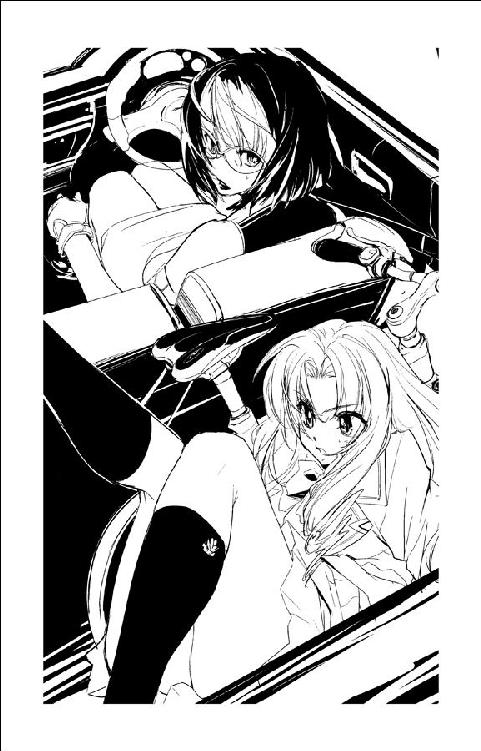

| ミニスカ宇宙海賊 | |
| 笹本祐一 | |
| 朝日新聞出版 (2012) | |
イラスト／松本規之
「宇宙海賊ううー!?」
音量を抑えたコンテンポラリーミュージックが流れる展望ラウンジに、ひっくり返った声が響いた。
「知らない？」
仕立てのいいスーツ姿の優男は、カクテルグラスをちょっと上げてみせた。
「信じられない？」
「だって、海賊なんて伝説の存在でしょ？」
ねー、と最近流行の露出過多なカクテルドレス姿の若い女は、連れのショートカットと声を合わせて横顔でうなずいた。
「とっくの昔に退治されちゃって、辺境の未開の地にでも行かないと、生き残ってないって聞いてるわよ」
「おや、この航路の名前をご存知ない？」
若い男は、二人連れの女性の顔を見渡した。
「西の銀河回廊、それも外回りのルートは、昔っから海賊航路って呼ばれてるんですよ」
「昔の呼び名でしょお？」
ロングヘアのカクテルドレスはからからと笑う。
「今どき海賊なんて、ねー」
顔を見合わせて声を揃える若い女の声を聞いて、スーツ姿の優男はカクテルグラスのドライマティーニをくいっと呷った。
「だとすれば、お客さんたち、面白い体験ができますよ」
グラスをおいた優男は、スーツの内懐からクラシカルな懐中時計を取り出した。プッシュボタンを一押しすると、表示面に銀河標準時、艦内時間などの詳細データが浮かび上がる。
「そろそろ、始まるんじゃないかな」
『操舵室よりお知らせします』
軽やかなチャイムのあと、クラシカルなアナウンスが船内に流れ出した。
『豪華客船プリンセス・アプリコット号は先ほど一二回目の超光速ドライブを無事終了、予定どおり銀河回廊西の37に復帰しました』
意図的に旧世紀の意匠が多く盛り込まれた、星の海に浮かぶ宮殿のようなメインホールにも、今どき画像情報なしの音声のみのアナウンスが響いている。
『本船の現在位置は銀河回廊西の37、98Ｄポスト、間もなく赤色巨星ランバドールに最接近します。全システムは正常に稼動し、一〇時間後の次の超光速ドライブ予定にも、次の寄港地ミスリル30への到着予定も変更ありません。メインホールは間もなく深夜営業時間となります。乗客の皆さまは引き続きプリンセス・アプリコット号による星の旅をお楽しみ下さい』
生演奏のダンスミュージックが流れ、今宵も舞踏会が開かれていたメインホールに流れていたアナウンスに、突然電子的な雑音が混じった。大音量の不快なノイズがスピーカーを切り裂く。
生演奏が止まった。
『え？ もうやっちゃったの？ 行ける？ え、繋がってるって!?』
落ち着いたアテンダントのバリトンが、妙に生々しい息づかいを伴う舌っ足らずなソプラノに切りかわった。
『あ、ごめんなさい、こちらは弁天丸、海賊船弁天丸です』
メインホールで舞踏会を楽しんでいた一等船客たちが、歓声を上げた。
『わたしは、海賊船弁天丸のキャプテン茉莉香、海賊船の船長、キャプテン茉莉香です』
たどたどしい声が名乗りを上げた。観客から拍手が巻き起こる。
『弁天丸は、ファイブスター・ラインの豪華客船プリンセス・アプリコット号への電子攻撃を完了しました。プリンセス・アプリコット号の航行系を含むすべてのシステムは、現在弁天丸の支配下にあります』
うふふ、と笑みを含むような間が空いた。
『わかりやすく言うと、プリンセス・アプリコット号は今、海賊船弁天丸に乗っ取られちゃってまーす』
拍手と歓声がメインホールに渦巻いた。
『プリンセス・アプリコット号船長のロナルド・ハーレイさんは、大急ぎで海賊への貢ぎ物を用意して下さい。弁天丸のクラス40の主砲はすでにプリンセス・アプリコット号のブリッジと機関に狙いをつけちゃってますから、逃げるのも抵抗するのも無駄です』
優男は、ね？ と言うようにカクテルドレス姿の二人組を見やった。
『それじゃあ、海賊船弁天丸の船長、キャプテン茉莉香とその一味は、ただ今から豪華客船プリンセス・アプリコット号に乗り移ります。抵抗さえしなければ、怪我させようなんて考えてませんから、乗客の皆さんは金目のものを用意して海賊の乗船をお待ち下さーい』
プリンセス・アプリコット号のメインホールに、間の抜けた非常警報がすっかりタイミングを外して朗々と鳴り出した。同時に、超光速航行中は安全確保のために閉じられていた天井の展望ドームの防護シャッターがゆっくり開き出す。
星間神話をモチーフにした天井画が描かれていた防護膜が開くにつれ、可視光以外の有害光線、放射線を一〇〇パーセントカットする継ぎ目のない泡状のバブルドームは、天空に拡がる銀河のパノラマを映し出した。
天の川のように連なる銀河をバックに、鋭角的な黒い船体の海賊船が両舷に拡げたフレキシブルアームに航法灯をフラッシュさせながら接近してくる。海賊船から放たれたいくつものレーザービームが、豪華客船プリンセス・アプリコット号の白い船体を高速で舐めるようにスキャンする。
戦闘のために作られ、いくつもの戦いをくぐり抜けてきたことをそのシルエットと色で主張しているような歴戦の海賊戦艦は、星の海に浮かぶ宮殿のような豪華客船の白い船体を上から押さえつけるように強制ドッキング態勢に入った。
プリンセス・アプリコット号の船殻に、重い銛を打ち込まれたような振動が伝わってきた。
「ほ、ほんものの海賊なの!?」
ロングヘアの女性が、展望ドームの向こうに浮かぶ海賊船のシルエットを見上げたまま呟く。プリンセス・アプリコット号から投げかけられた何条もの探照灯の光を浴びたまま、海賊船の船底からドッキングブリッジを伸ばしはじめた。
「ほんものですよ」
空にしたグラスをカウンターに置いた優男は、閉じた懐中時計を仕立てのいいスーツの内懐に戻した。
「宇宙海賊船弁天丸。私掠船免状を持ってる、由緒正しい宇宙海賊だ。銀河帝国領内で営業している海賊なんて絶滅危惧種ですからね、お嬢さんたちは運がいい」
プリンセス・アプリコットのコントロールを乗っ取られていては抵抗のしようもない。白い豪華客船は、自身よりはるかに小さな黒い海賊船からのドッキングブリッジを自らゲートを開いて受け入れた。
「だって、海賊だなんて、この船にだって警備隊くらい乗り込んでるんじゃないの!?」
この規模の豪華客船ともなれば、小なりといえども船内に警察力としての警備隊が組織されている。最高指揮官は船長であり、隊員は制服を着て船内を巡邏していても乗客に現実世界のことを思い出させないように目立つ武器は携行していない。
「ええ、傭兵会社から派遣された凄腕の一個小隊が非常事態に備えて乗り込んでいると聞いています」
優男は、カウンターから立ち上がってメインホールに降りてくる大階段に向き直った。港からプリンセス・アプリコットに乗り込んだ乗客は、まず最初に大階段から巨大なメインホールを見下ろすことになる。そして、大階段の上の踊り場の先の乗降デッキは、今は神話時代の神々の舞踏会で飾られた色鮮やかな壁画で化粧された気密壁に閉ざされている。
「でも、一個小隊程度じゃ役には立ちませんよ。相手は、帝国艦隊とでも互角に渡り合うほんものの海賊ですからねえ」
「そんな......」
ロングヘアは恐ろしげな顔で大階段の先の気密壁を見つめている。
「わたしたち、どうなっちゃうんですか!?」
「下手な真似しないでおとなしくしてる限りは、何も心配ありませんよ」
優男は、カウンターに片手をついてもたれかかった。
「アクセサリーの供出くらいは求められるかもしれませんが、心配しなくてもあとからすべて船会社から保障されますよ」
ロングヘアとショートカットはほっとしたように顔を見合わせた。
予告もなしにメインホールの照明がすべて落とされた。天井の展望ドームの向こうに浮かぶ黒い海賊船を照らし出すサーチライトの明かりと、隙間から洩れる銀河の光しかなくなったメインホールに、得体の知れないモーター音と圧縮空気が吹き込まれる爆音が響いた。
轟音は、メインホールの大階段の上の神々の舞踏会の壁画の向こうから聞こえていた。無数の結晶片のモザイクで描き出された舞踏会の壁画が、大袈裟な作動音とともにゆっくりと上に開きはじめる。真空の宇宙空間で接続されたドッキングブリッジから乗降デッキに吹き込まれた圧縮空気で断熱膨張した水蒸気が、乗降デッキ側の照明に照らされながらメインホールに流れ出た。白い照明をバックに人影が浮かび上がる。
入港時にしか開かないはずの気密壁の向こうに、海賊がいた。大小さまざまな影が、鋭角的な装備を持った一団となり、シルエットとしてメインホールの乗客の前に登場する。
メインホールの反対側からスポットライトが点灯された。大階段上の踊り場をステージにして、海賊たちが進み出た。
乗客たちからどよめきのような歓声が上がった。片手にミサイルランチャー、片手に対装甲大型ライフルを持ったサイボーグアイの大男や、小山のようなフル装備のパワードスーツを後ろに従えているのは、ミニスカートの船長服も凜々しく腰から大型ビームガンを提げた少女だった。
「弁天丸の船長、茉莉香です」
大階段の上からメインホールを見渡して、茉莉香は船長帽を取って一礼した。よく通る澄んだ声がメインホールに響いた。
「海賊しに来ました。よろしくお願いします」
バックに控えていたスキンヘッドの大男とパワードスーツは、それぞれ片手で構えた大口径ライフルを発射した。メインホールの展望ドームをフラッシュのような閃光が灼く。
うぉーという歓声に加えて拍手が起きた。
「今のはもちろん威嚇ですから、プリンセス・アプリコット号の船体には被害は出ていないはずです。念のためにモニターシステムを一時的に使用不能にさせていただきましたけど」
うふ、と笑みを浮かべて、茉莉香船長はハイヒールのロングブーツの爪先を立ててゆっくりと大階段を下りはじめた。
「照明戻して。乗客の皆さんが見えていた方が、こちらも話がしやすいわ」
片手を上げての茉莉香の指示どおり、メインホールの照明が先ほどまでの明るさを取り戻していく。
「聞いたことがある方もいらっしゃるでしょうけど、いつもの注意を聞いて下さいね」
メインホール中からの視線を一身に浴びながら、茉莉香はゆっくりと観衆の顔を見廻した。
「我々の指示に従っていただく限り、乗客の皆さんの身の安全は保証します。おとなしくこちらの言うことを聞いて下されば、乗客の皆さんは無事な身体と、それから海賊に襲われたというめったにない自慢話を持って港に帰れます。乗客だけじゃなくて、乗組員の皆さんもね」
わずかに遅れて、片手にミサイルランチャー、片手に対装甲ライフルを持ったスキンヘッドのサイボーグと過剰兵装のパワードスーツが、さらにその後ろにはバンダナにアイパッチ、片手にビームガン片手に海賊刀のお馴染みのスタイルだけではなく、野戦装備のレンジャーや黒づくめの両手にマシンガンを持った伊達男、一刀流の忍者装束や二丁拳銃の女ガンマンなど、服装も装備もてんでばらばらな海賊たちが、油断なく辺りに注意と照準を配りながら大階段を下りてくる。
「もし、不用意な抵抗をするようなら――」
「どうなるのかな？」
乗客たちの中から放たれた声に、観客の視線が集中した。
カウンターで目を丸くしているロングヘアとショートカットにウィンクして、優男はゆっくりと進み出た。危険を感じた乗客たちが、大階段降り口から真ん中のカウンターバーまでの赤絨毯が敷かれたスペースの左右に移動していく。
階段の上の海賊に、優男はゆっくりと胸に手を当てて一礼した。
「宇宙海賊の襲来などというめったにないイベントを記念して、海賊船長どのに決闘を申し込みたい」
まっすぐ歩いてくる優男の顔を見て、茉莉香は溜息をついた。
「どこにでもいるのよね、あなたみたいなかっこつけ」
「海賊の掟で、一対一の決闘は断れないと聞いた」
「ああ、あれって映画のでたらめよ？」
「もし僕が勝ったら、プリンセス・アプリコットのご婦人方には一切手を出さずにお引き取り願おう」
「もし、負けたら？」
「その時は我が身が土に還るだけのこと」
辺りを見廻した優男は、メインホールに何本も建っている円柱に、古代王朝の紋章の飾りのようにぶっちがいに掛けられているサーベルに歩み寄った。
「お相手願いたい」
柱飾りに掛けられていた細身のサーベルを二つとも取った優男が、鞘に入ったままの一本を茉莉香に放った。
キャッチした茉莉香は、うんざりした視線を優男に向けた。
「本気なの？」
すらりとサーベルを抜き放った優男は、答えの代わりに印を切って一礼した。
「そこまでサービスしなくたっていいのに」
茉莉香は、優男に冷たい視線を向けた。
「死ぬわよ、あなた」
「ご婦人方を悪逆非道な海賊どもから守れるのなら、本望であります」
優男は、右手一本で支えたサーベルをまっすぐに茉莉香に向けた。残る左手で鞘を持ったまま、軽く落とした腰に当て、フェンシングの構えを取る。
「いざ！」
仕方なさそうに、茉莉香は細身のサーベルを鞘から抜き放った。
「片手剣じゃん」
茉莉香は、学校の授業で習った剣道を思い出して、銀色の刀身を青眼に構えてみる。邪魔そうな鞘はその辺りに投げ捨てた。
優男がにやりと笑った。
「海賊敗れたり！」
「はい？」
「鞘を捨てたということは、勝負のあとサーベルを収める鞘を使わないという意味。鞘を捨てたのは勝負を捨てたということだ！」
「はいはい、あとで拾っとくわ」
茉莉香は、軽いサーベルを一振りした。
「いつでもどうぞ」
「覚悟！」
低く跳ぶように、優男は銀色の残光を引いて茉莉香に襲いかかった。深く踏み込まれた突きを横薙ぎに払った茉莉香が返す刀で狙った胴を、優男は素早く身を引いて切っ先三寸で避ける。
「やりますね」
「そりゃまあ、いちおう海賊ですから」
にっこり笑って、すり足の茉莉香が上段から打ちかかった。火花を散らして、サーベルが打ち交わされる澄んだ金属音が速いテンポでラウンジに響く。
十数合目で、ひときわ大きな気合とともに茉莉香のサーベルが飛ばされた。勢いよく宙に飛んだサーベルが天然木風に細工された太い柱に刺さって震える。
「勝負は、ありましたな」
優男は、右手を押さえている茉莉香に満足げにうなずいた。
「では、お覚悟！」
裂けるような爆発音とともに眩しいビームがメインホールを貫いた。大気を灼くイオン臭とともに、優男は自分の胸を貫いたビームの焦げ跡を見た。
「この......海賊め！」
サーベルを握りしめたまま、優男がどうとメインホールのカーペットに倒れた。
「だから、死ぬって言ったのに」
茉莉香は、抜き打ちに放った大型のビームガンを腰のホルスターに戻した。倒した男に目もくれず、茉莉香はしいんと静まりかえったラウンジの乗客を見廻した。
「さあ、他に誰か文句のある人はいるかしら？ なければ、素直に今身につけているアクセサリーを供出してもらおうかしら」
西の銀河回廊で豪華客船プリンセス・アプリコット号を襲った宇宙海賊船弁天丸は、所定の仕事を終え、どこへともなく去っていった。
記録によれば、プリンセス・アプリコット号の乗客、乗員には被害は出ていない。
海賊船長・茉莉香にビームガンで射たれたはずの優男の記録はどこにも残っていない。また、メインホールに倒れたはずの男を介護室に運んだという記録も、それ以前に優男がプリンセス・アプリコット号に乗り込んでいたという記録も、いつの間にやらきれいに消えていた。
プリンセス・アプリコット号は、海賊船弁天丸から解放されると同時にすべての電子設備を回復した。航路管制局に海賊の襲撃を受けたという定型文の報告と、この辺りを担当する航路警備隊及び帝国艦隊に被害報告を提出し、予定を少しだけ遅れて次の寄港地、ミスリル30に向かう。
短距離超光速跳躍の三段跳びという古典的な手法で航跡を消した弁天丸は、航路から外れた広大な星間空間で自船からのエネルギー放射を最低限に抑えたステルスモードのままたゆたっていた。
船長室のインターホンが鳴った。
『ケインです』
「はい、ご苦労さま」
茉莉香は船長席のコントロール・パネルに指を走らせてドアを開いた。
スーツの胸元にビームの直撃を受けた焼け焦げを作ったままの弁天丸操舵手、ケイン・マクドゥガルがバスケットいっぱいのアクセサリーを抱えて船長室に入ってきた。
「まだ、それ取ってないの？」
茉莉香は、自分が撃ったケインの胸のビーム痕を眉をひそめて睨みつけた。内側の生体組織の炭化まで作り込まれている、凝った特殊効果である。
「いやあ、すれ違うみんながぎょっとするのが楽しくてねえ」
ケインは、バスケットを上げてみせた。
「収穫は？」
「いつもどおりですよ」
ケインは、デスクから立ち上がった茉莉香の前にバスケットいっぱいの宝飾品の山を差し出した。
「模造品と偽造の安物ばっかり。ほんもののアクセサリー付けて舞踏会に出てくるような中流層が乗ってる客船じゃありませんからね」
「ふーん」
茉莉香はつまらなさそうにじゃらじゃらと宝飾品の山をかき廻した。
「それじゃ、いつもどおり保険会社経由で返却して。どうせ軒並み高い盗難保険がかけられているでしょうから」
茉莉香はぴかぴかのアクセサリーをバスケットに戻した。
「裏ルートで買い叩かれるくらいなら、補償代金ふんだくられる保険会社に恩を売っておいた方が、あとあと得になるかもしれないし」
「渋いので有名な保険会社にゴマすっても無駄なよーな気もしますけど、まあうちの伝統ですから仕方ありませんな」
「他に何か聞いておかなければならないことはある？」
「今の船の状況は、あいかわらず二番核炉がぐずってるらしいですがこりゃ毎度のことだし、高周波レーダー系の基盤に不具合が出まくりなのも今に始まったことじゃなし、今回のミッションによる船の損害はなし、乗組員の損害もなし。アクシデントもなく、いい仕事でした」
「だって、いつもどおりのお仕事だもの。次のミッションまで、みんなにゆっくり休むように伝えてあげて」
「了解です」
びしっと敬礼を決めて、ケインは船長室を出ていった。
船長室に一人残された茉莉香は、デスクの横の姿見に目をやった。
これ見よがしのむりやり切り詰めた対装甲ビームガンを提げたミニスカートの海賊服の自分が、弁天丸より古い豪華客船の備品だったという骨董品の姿見に映っている。ケインの敬礼を真似して右手を額にかざしてみた茉莉香は、我ながらその似合わなさに溜息をついた。
どうして、こんなことになってしまったのだろう。
茉莉香は、ほんの半年前まではごく普通な高校生だったはずの日常生活を思い出した。
通常照明はすべて消され、ディスプレイの明かりだけが浮かび上がる物理実験用の準備室に、保健医の白衣姿のままミーサが入ってきた。
「シークエンスは？」
「高度三〇〇キロの低軌道から逆噴射、軌道離脱、大気圏突入。今どき全手動で軌道離脱から突入とは、お嬢さま学校とは思えない肝の据わり方だな」
先に準備室でマルチディスプレイを見つめていたケインが答えた。
「全手動？」
ミーサは素早くコンソールに指を走らせて、ディスプレイ上に設定データを表示させた。
「制御系が全壊した救命カプセルで地上帰還しようって設定なの？」
「いや、乗機は単座の小型機だ。推力重量比が二だから、どんな噴き方したって降りられるさ。問題は燃料設定」
ミーサは目的のデータをディスプレイ上に呼び出した。
「うっわー、ガス欠同然じゃない。おまけに反重力、慣性制御も使用禁止？ 凄い設定するわね」
「実戦的っちゃー実戦的だね。これで母星の飛行場に戻れなんて課題出してるんだから、女子学院のお遊びなんて思えません」
「さすが名門、白凰女学院のヨット部ね。普段からこんな訓練してるなんて」
高度だけは一緒だが、軌道上の単座機はランダムな方向に放り出されている。自機の現在位置と母星を基準とした三次元上で座標を確認、さらに自機の速度と進行方向を三次元ベクトルとして読み取って軌道上六要素を得るのが、パイロットの最初の仕事になる。
「それで、われらがお嬢さまの手際はどうなの？」
「悪くない」
ケインは腕を組んだ。
「見てのとおり、お嬢さまは天測と対地観測で軌道上六要素を推測、設定されてる帰還地点への突入軌道の算定を開始してる。母星の自転と逆方向に放り出されちまった逆行軌道だから、大気圏突入速度もきついし針路もかなりねじ曲げなきゃならんが、まあこのディンギーの設定なら熱容量には余裕があるからよっぽど無茶しない限りは問題ないか」
「あらやだ」
現在位置と速度が確定できれば、次は惑星上に予定軌道を描く。外部からの航法補助を使えない設定だから、惑星上の日照と天候は軌道上のディンギーから自分の目で確認するしかない。
「帰還予定地の空港が昼間なのはいいとして、お嬢さまの帰還軌道じゃ東側の低気圧をもろに通過するわよ。ずいぶん意地悪な設定じゃない？ お嬢さまって、ひょっとしていじめられてる？」
「緊急事態が起きたときに、星の上に低気圧ひとつないなんて能天気な設定の方が非現実的だよ。記録的な大型台風ってわけでもなし、多少乗り心地が悪くったって死にゃあしないさ」
ミーサは、茉莉香とともに発射された他の五隻のディンギーの行方を追った。各機にまだ動きはないが、モニターで操縦状況を見ることはできる。全機、自分の状況は理解しているらしく、どの船もまだ姿勢制御のための修正噴射すら行なっていない。
「さっすが、一人で星に出るだけあって人材が揃ってるわね、このヨットクラブ。それじゃ、お手並み拝見と行こうかし、ららら？」
ミーサは妙な声を上げた。
「もう噴いちゃった。大丈夫？」
「そいつは早いな」
ケインは単座機の現況を映し出すモニターに目を走らせた。茉莉香のディンギーは早くも姿勢制御スラスターを噴いて後ろ向きでの飛行を開始した。
推進ノズルが高速プラズマを噴いた。ほんの一瞬で、周回軌道から離脱するには充分な秒速数十メートルの減速を行なう。一人乗りの小さなディンギーはゆるやかな降下軌道に入った。
「ほお、あの程度しか減速しないとは。今のタイミングで軌道離脱ってえと、大気圏突入は、と」
ミーサは、予想軌道をコンピューターに描き出させた。ケインは、ディスプレイを見もせずに言った。
「低気圧の直上、成層圏に入るのは低気圧の影響圏を抜けてからだが、そのまま素直に降下すると空港を通り過ぎちまうぞ」
推測される降下地点のまわりに着陸できそうな場所を探してみる。最新の地図上ではそこは大海のただ中であり、機体を濡らさずに降りるところを捜すことすら難しい。
「さて、いったいどうごまかすつもりなんだか」
「誤差範囲ぎりぎりで、合格点狙ってるんじゃないの？」
「それにしちゃあ逆噴射の判断が早すぎる」
ケインはディスプレイのデータを切り換えた。
「そういうせこい真似する奴は、だいたい判断が遅いんだ。こいつは判断が早すぎる。何を考えてやがるんだか」
同時に放出されたどの機体より早く、茉莉香のディンギーは高度を下げていく。
大気を持つ惑星に、大気圏と宇宙空間の明確な境界線はない。自分の重力で大気の衣を纏う星の大気圏は、ほとんど真空と変わりないほど薄くなりながらも低高度衛星軌道にまで拡がっている。
「あら、弁天丸の腕っこきパイロットが、ひよっこ一人の行く先も読めないの？」
ミーサはコンソールに指を走らせて大量のデータをディスプレイ上に呼び出した。ディンギーは、機体底部の耐熱面を母星に向けたまま、逆噴射で失った軌道速度にあるかなしかの抵抗を加えてさらに高度を下げていく。
「勘弁しろよ」
ケインは画面上のディンギーの動きから目を離さない。
「ひよっ子の成績とか、過去の実績の解析とかやってればまだしも、お嬢さまが飛んでるのを見るのはこれが初めてなんだぜ」
「成績は、悪くないみたいよ」
ケインは、ミーサが示すディスプレイのひとつに目を走らせた。
「おいおい、お嬢さまの成績は個人情報だろう」
「ヨット部のデータベースに飛行実績が残ってるわ。課題評価は半分以上がＡ、残りもＢでＣ評価なんて数えるほど」
「機械が杓子定規で算出する評価なんか参考になるかい。しかし、数だけはやけにいっぱいこなしてるな」
ケインはディスプレイに目を戻した。ディンギーは、高度を下げるにつれて機首を大きく上げるように姿勢を変化させていた。
「......てえことは、まさかこれも計算の上での姿勢制御か？」
可変翼をいっぱいに拡げたディンギーは、進行方向に腹を向けて垂直に機体を立てている。ミーサは不思議そうにケインに聞いた。
「何やってるの？」
「素人の気まぐれじゃなきゃ、進行方向に対する投影面積を最大にしてるんだ」
「ふーん」
なるほどとうなずいてから、ミーサはケインの顔を見た。
「どういうこと？」
「まともに飛ぶより抵抗が大きくなるから、自前の推進剤を使わなくても減速が早くなる」
ケインは、ディンギーが拡げた可変翼が、付け根から角度を変えているのに気づいた。通常の飛行姿勢なら機体の水平線に拡がるはずの翼が、上反角を設定されて機体より上向きに延びている。
「エアロブレーキングか......」
「何？」
「上層大気を使った減速だ。通常の大気圏突入よりも早く減速できる。んな原始的な手を使わなくても今なら簡単に大気圏突入できるから、この辺りじゃほとんど使われていない。どこでこんな手覚えたんだか」
速度と同時に高度も失われていく。同時に放出された六隻のうち、茉莉香のディンギーだけがどんどん高度を落としていき、機体の表面温度も徐々に上がっていく。
「だが、いくら急減速したってこのまんまじゃ空港を通り過ぎちまうぞ。手前で左右に針路を振って距離を稼いでも限度ってもんがあるし」
「誰よりも早く減速かけて、姿勢制御でエアロブレーキングまで使うってことは、お嬢さまは成り行きまかせじゃなくてちゃんと自分の飛び方を計算してるってことでしょ」
ミーサは、大気圏上層部で圧縮される大気のためにそろそろエッジが赤熱化してきたディンギーを見やった。
「ちゃんと考えて飛んでるなら、安心して見ていればいいわ」
「そりゃまあ、そういう話になるがね」
進行方向に対して機体を立てていたディンギーが、主翼の操作で姿勢を戻した。底部を赤熱させたまま、惑星地表に対して再突入態勢に入る。
「揚力再突入か」
ディンギーは、可変翼の角度を変化させてエアロブレーキングの効果を得ると同時に姿勢を制御している。重力に従って隕石のような急角度で再突入すると一〇倍近いＧを受けることになるから、機体姿勢を制御して浅い進入角度を保たなければならない。
「にしちゃあ、突入角度がちょいと深めだが」
ディンギーといえども推力重量比二、推進剤さえ充分にあればブースターなしで惑星地表から衛星軌道に到達できる現代の機体である。隕石並みの弾道突入をしたところで、耐熱性能に心配はない。
だが、ディスプレイ上に表示された細かいデータを見てケインは目を剥いた。
「左右の可変翼の設定角度が変化してる？」
「どういうこと？」
「揚力再突入で機体にかかるＧを押さえるだけじゃない。あのお嬢さま、大気圏突入開始から飛行針路をねじ曲げようとしてやがる！」
単座のディンギーは機体が小さいから、大気圏突入を開始したら機体がプラズマに包まれるブラックアウトを抜けるまでは軌道上からのデータ通信も繋がらなくなる。現実同様の凝った設定に舌を巻きながら、ケインはモニターを軌道上の母艦からの追跡データに切り換えた。以後、茉莉香のディンギーの状況は外部から観測するしかない。
「難しいの？」
「大気圏突入してる最中の機動なんて、素人が考えることじゃない」
青い惑星地表に、赤いプラズマの尾が長く流れた。本格的に上層大気に突入したディンギーが軌道速度でかすかな大気分子を圧縮、赤熱して燃え上がらせる。
「突入したら真っ赤に燃え上がるから空気があるような気分になるが、大気圏上層部っていったってその密度は地上の一〇〇分の一以下だ。海洋の表面みたいに風が波打って、気圧の濃いところと薄いところがでたらめに分布している。そこに、大気圏を飛ぶには速すぎる軌道速度で突入していくんだ。普通なら機体姿勢を保つだけで精一杯のはずなんだが」
「......曲がってるわね」
ディスプレイ上に描き出された茉莉香のディンギーの軌跡は若干ドリフト気味ながら、確実に意図を持って右曲がりのカーブを描いている。
「旋回半径はずいぶん大きいけど、ちゃんと操縦して旋回してる」
「そりゃまあこのディンギーの性能でこの速度なら、どっかでドジって転がったところで燃えたり折れたりする心配はないが......」
浅めの突入角を保ったまま、細かく修正舵を当てながらゆるい旋回を行なっているディンギーを見て、ケインは首を振った。
「それにしても、操縦に無理がない。低気圧の直上だっていうのに、まるで上層部の大気分布が見えてるみたいだ」
「見えてるんじゃないの？」
ミーサは、謎めいた笑みを浮かべた。
「お嬢さまは、あの人の娘よ。それくらいできたってびっくりしないわ」
「子供のときから宇宙にいたわけじゃない。ただのお嬢さま学校の高校一年生だぜ。あ、切り返しやがった！」
高温プラズマに包まれたままのディンギーが、ふわりとロールした。それまで右の翼を下げて旋回していたディンギーが、まるでそこに波があるのを知っていたようなスムーズな姿勢変化で水平に戻ってから左に翼を下げ、斜めになりながら針路を変えていく。
「なるほどね」
着陸地点に対してほとんど背を向けてから反転したディンギーの軌跡をディスプレイ上に描き出して、ケインはパイロットの意図を理解した。
「旋回軌道は空港の直上を通過する。そのまま円柱に巻きつくように降下していけば、速度も高度もうまくコントロールして、ぴたり空港の着陸帯に降りられるか。誰かに教わったんじゃなくて、放出直後の状況から自分で思いついたとしたら末恐ろしいガキだな」
「ガキだなんて」
ミーサはたしなめた。
「うまくいけば、わたしたちの船長になる人よ」
茉莉香のディンギーは、高度八〇キロで大気圏突入のブラックアウトを抜けた。高度八万の極薄の大気にディンギーの可変翼を絞り、極超音速のグライダーをゆるく旋回させながら指定された着陸地点に高度を下げていく。
時速三万キロの衛星軌道からものの三〇分もかけずに時速一〇〇キロほどにまで減速して、ディンギーは再び翼をいっぱいに拡げて空港の五〇〇〇メートル級滑走路に進入した。最終の機体引き起こしが早すぎて着地が若干遅れたものの、それでも滑走路は充分に長いからディンギーは半ばを過ぎて停止した。
『着陸完了！ 現在位置確認、機体及びパイロットに異常なし！』
ディンギーの茉莉香は、着陸完了を宣言してシミュレーターから飛び出した。六つ動いている残りのシミュレーターの中で、他の機体は一番早いものがやっと大気圏に突入を開始している。
『着陸後チェックは省略、あとのブリーフィングは欠席で、それじゃ、早退します！』
シミュレーター・ルームの外に訓練の様子を見にきた監視役の上級生に一礼して、背負い式の通学鞄を掴んだ茉莉香は制服姿のまま教室から飛び出していった。
準備室に回路を回しただけの監視モニターの画像で、ケインとミーサは茉莉香を見送った。
「課外活動の下校時間にはまだ間があるんじゃないのか？」
「用事があるんでしょ」
ミーサは、ディスプレイの隅に表示されている時計の数字を見た。
「だから、あんなに急いで低軌道から降りてきたんじゃないの？」
ミーサは、着ていた白衣から腕を抜いた。
「足跡残さないように後始末してちょうだい。わたしたちも、彼女を追いかけなきゃ」
「追いかけなきゃって、行き先知ってるの？」
「いいから尾いてらっしゃい」
鯨座宮たう星系第三惑星、海明星は古い開発星である。
まだ光の速度を超えて星を渡る手段がない頃、母星への帰還を期さない片道の探検隊はスペクトルＧ型恒星の生命発生可能帯の中に奇跡のような海の星を発見した。
惑星改造も適応処置もなしに生存可能、のみならず長期にわたる入植でも問題ないと判定された生命環境をもつ惑星は、海明星と名づけられた。初期の宇宙開拓時代に発見された可住惑星は、文明を持つ知的生命体が発生していないこともあって、初期の開拓惑星のひとつとして集中的な資本投下が行われた。
新奥浜市は、最初の開発基地として海明星唯一の大陸の赤道直下に建設された沿岸都市である。
海運が主要な貨物輸送手段だった頃に建設された運河沿いの倉庫街は、不況や戦乱を奇跡のようにくぐり抜けて原形を留めたまま生き延びた。
前世紀から続く懐古趣味に乗り、古風なレンガ造りの倉庫が続く運河沿いの通りは観光街として再生された。
運河と、倉庫の間を走る道路は最新の制御システムが埋め込まれたスマート・ロードなのに、建築基準法で街並みを維持するように守られた運河街は往年の海運全盛時代のまま、レストランやブティック、専門店や雑貨店に各種食料品店までが古い倉庫や事務所、店に入っている。
わざわざ地上に降ろした愛用のクラシックな装輪式コミューターを自分の手で運転して、ミーサはガーデンテラスで飾られたレンガ造りの倉庫の前に車を停めた。
「おい、ここ......」
ケインは、申し訳程度のドアしかないクラシックカーの助手席から古いレンガ倉庫を見上げた。
「お嬢さまの仕事先よ」
馬車の馬留めがそのまま残されているような脇の駐車場にクラシックカーを器用に駐車して、ミーサは運転席から降りた。
「仕事？ 女子学生じゃなかったのか？」
「それだけじゃないってこと」
天然ものの木の板で作られたベル付きの大きなドアを開けて、ミーサは店内に足を踏み入れた。
「いらっしゃいませ」
黒い制服に白いレースのカチューシャを頭に載せた少女たちが、店内のあちこちから一斉に声を上げた。
「ひょえー」
ケインは物珍しそうな顔で落ち着いた骨董品に飾られた店内を見廻した。
「みんな生身の人間かい」
「昔風の喫茶店よ。初めて？」
「初めてなもんかい。この前の獲物の手引するのに乗り込んだクイーン・セレニティは、中継ステーション一番の高級なターミナルから出航するんだ、カフェやバーラウンジの二つや三つ楽なもんだぜ」
「いらっしゃいませ、お二人ですか？」
揃いのエプロンドレスに身を包んだウェイトレスの一人がにこやかに聞く。
「ええ。壁際の席をお願い」
「かしこまりました、こちらへどうぞ」
「たまげたねこりゃ。生身が相手してくれるような高級店とは思わなかった」
「普通の店よ」
ミーサは、慣れた様子でウェイトレスが案内してくれた席に着いた。
「ただ、ロボットやアンドロイドとコストが変わらないのと、社会勉強になるっていう名目で、生身の人間が働いているだけ」
「へえ。そんなに人件費が安い星には見えなかったが......田舎ってことか」
ケインは、あらためて古い石作りの倉庫の一画を転用した喫茶店の店内を見下ろした。太い梁に支えられた天井からは古風なランプを模した照明がいくつも下げられ、柔らかな光を投げかけている。
「そりゃ、中央に比べれば、ね」
ミーサは、テーブルに置かれていたメニューを手に取った。核恒星系の宇宙都市や中継ステーションではよほどの高級店でないとお目にかかれない天然ものの飲み物や食べ物の名前が並んでいる。
「わあ、水出しコーヒー置いてるじゃない。ケインは何にするの？」
ケインは、ミーサが差し出したメニューにちらりと目を走らせた。
「甘くないものなら何でもいい。お、出てきたぞ」
プライベートの札がかかっているドアから、頭に載せたカチューシャを直しながら揃いのエプロンドレスに着替えた茉莉香が飛び出してきた。先に店内に入っている同僚に目線で挨拶して、仕事を探すように店内を見廻す。
待っていたようにタイミングを合わせて、ミーサは茉莉香に手を上げた。目敏く注文を待つ客を発見した茉莉香は、すぐに注文票のクリップボードを取って飛んできた。
「いらっしゃいませ、ご注文はお決まりですか？」
「ええ。水出しコーヒーと、それから、今日のサービス品は何？」
「今日のお茶は、南アリシア産のクラシックティーです」
「他に何か、お薦めはある？」
目の前の茉莉香とメニューを見比べながら、ミーサは聞く。クリップボード片手のまま、茉莉香はちょっと考えた。
「今年は、地元のジャスミン茶が豊作です。遠くからいらしたなら、ぜひ試してみて下さい」
「そうね」
ミーサは、それでいいか問うようにケインに目を走らせた。ケインは軽くうなずいた。
「それじゃあ、それ貰おうかしら」
「水出しコーヒーと、ジャスミン茶ですね。かしこまりました」
胸ポケットに挿していたペンで紙の注文票に手書きで書き込んで、茉莉香はにっこり笑った。
「しばらくお待ち下さい」
「楽しみにしてるわ」
「ジャスミンチャって何だ？」
ケインは小走りにカウンターに戻った茉莉香の後ろ姿を目で追いかけている。
「まあ、花のお茶よ」
「花？ 植物の花？ んなもん呑めるのか？」
「加工次第ね。この星の名産のはずだから、そう間違ったものは出てこないんじゃないかしら。楽しみに待ってらっしゃい」
ミーサは、メニューをテーブルに置いた。
「店に出たばっかりなのに、今日のサービス品とお薦め品をちゃんと覚えてた。ウェイトレスとしては、きっと優秀なんでしょうね」
「どうかな？」
カウンターの奥からお盆にティーセットを載せて出てきた茉莉香が、話をしながらテーブルの間を歩いてきた客とぶつかりそうになった。小さく声を上げながら危うくお盆を放り出して転びかけ、素早く片手で持ち直したお盆を通りすがりのウェイトレスに受け止められながら、本人はたたらを踏んでなんとか踏み止まる。
「意外と、ドジっ子の素質もあるんじゃないか？」
「ドジっ子は困るわね」
ミーサは両手を組んで考え込んだ。
「あとからの仕込みで、なんとかなるかしら」
「落としたりこぼしたりしないで立ち直ってるところをみると、見込みはあるんじゃないかな」
「お待たせしました」
一度奥に引っ込んでから、お盆にティーセットと水出しコーヒーのグラスを載せた茉莉香が店内に出てくる。
今度はすいすいとテーブルの間を移動してきた茉莉香は、流れるような一連の動作で水出しコーヒーをミーサの前に置き、ティーセットをケインの前に置いてその隣にポットを並べた。
「注いでよろしいですか？」
ガラスポッドの中のお湯に浸っている花をしかめっ面で見ていたケインは、あわててうなずいた。
「ああ、頼む」
「失礼します」
茉莉香は、慎重な手つきでケインの前のティーカップにジャスミン茶を注いだ。
「残りは、冷めないうちにどうぞ。ではごゆっくり」
行きかけた茉莉香の後ろ姿に、ミーサが声をかけた。
「加藤茉莉香さん？」
飾り文字のアルファベットでマリカとだけ書かれた名札をエプロンドレスの胸に付けたウェイトレスは、びくっと背を伸ばしてから不審そうな顔で振り向いた。一礼してから二人の顔を見直し、首を傾げる。
「どこかで、お会いしましたことありましたっけ？」
「いえ、あなたと会うのは初めて」
カップを片手に、ミーサはお盆を脇に手挟んだ茉莉香をじっと見つめている。
「でも、お母さまとは知り合い。よく似てらっしゃるから、すぐにわかったわ」
「ああ、なんだ、そうだったんですか」
破顔した茉莉香の顔が、一瞬後にはまた不審そうにテーブルを見廻す。二人とも、どう見ても母より若い。
笑顔に戻って、茉莉香は会話を続けた。
「どういったお知り合いですか？」
「お母さまの昔の仕事で、さんざんお世話になったの。聞いてないかしら？」
「全然」
茉莉香は首を振った。母の職業は管制官、その前にどこで何をやっていたのか、聞いたような気もするし、教えてもらっていないような気もする。
「すいません、あの、母に御用でしたら、直接連絡を取っていただいた方がいいと思います」
「ええ、いずれそうするわ」
一口コーヒーを飲んで、ミーサはティーカップをソーサーに戻した。
「でも、今日はあなたに会いたくて来たの」
「ありがとうございます」
とりあえず、茉莉香は営業用スマイルでそう答えた。すぐに、疑問が浮かぶ。
「でも、なぜ？」
「あなた、宇宙が好きなんですって？」
ケインが見たこともないような笑顔のまま、ミーサはじっと茉莉香を見つめた。
「え？」
「宇宙海賊の、船長にならない？」
「はい？」
目をぱちくりさせて、茉莉香は聞き直した。
ミーサは、言い直した。
「宇宙船の、船長になる気はない？」
茉莉香は、にっこりと笑った。
「宇宙船の船長ですか？」
将来の進路希望の話題だと理解して、茉莉香はうなずいた。
「もし、自分の思いどおりになる宇宙船があるのなら、いつかそれで好きに宇宙を飛んでみたいな、とは思います」
「あなたならできるわ」
「ありがとうございます。どうぞごゆっくり」
茉莉香は片足を引いて一礼した。
「んで、あれが我らが船長の娘か」
ケインは、お盆片手に走り去ったエプロンドレスに目をやった。
「充分に、行けてるんじゃねえの？」
「元気だし健康的だし、ちょっと太めだけどあの年頃ならそれくらいのほうが安心だわ」
ミーサは目を細めてメイド服姿のウェイトレスを見ている。ケインは、彼女の目がレーザーセンサーのごとき透視力を発揮するのを知っていた。
「お父さまに似てらっしゃる」
「......そおか？」
ケインは、もう一度茉莉香の顔を見直した。記憶の中のにやけた髭面と、カチューシャを頭に載せた黒髪の少女の横顔はどうやっても一致しない。
「眼差しと鼻筋がそっくり。でも、顎の線はお母さま譲りね。梨理香によく似てるわ」
「現役時代の梨理香さまは、おれは知らん」
ケインは眉根を寄せた。
「......似てるのか？」
「エプロンドレスじゃわからないかもしれないけど、結構いいスタイルしてるわよ彼女」
ミーサは、立ち働く茉莉香から目を離さない。
「きっと、うちの船長服がよく似合うわ」
「着てくれりゃいいけどな」
ケインは、ジャスミン茶を飲み干した。
「着てくれるかな」
「着てくれないと、お仕事できないわよ」
ミーサは、微笑んだ。
「うちの仕事は、服務規定がうるさいんだから」
定時で店を上がった茉莉香は、仲間との夕食を断って自宅に直行した。
制服姿に通学鞄を背負い、すっかり日が暮れた新奥浜の自転車専用道をスマート・ロードの制御を受けないトラスフレームの小車輪径自転車で飛ばすこと十数分。
郊外一戸建てが立ち並ぶベッドタウンの一角、居住者でも出入りするにはＩＤチェックが必要な高級居住区のゲートを抜け、茉莉香は自宅に帰り着いた。
閉じられている門のテンキーを間違えないように順番どおり押して、左側だけを開いて自転車を押して庭に入る。母親の趣味とかで、加藤家のセキュリティはこの辺りでもトップクラスに厳しい。
玄関の明かりが点いているのを見て、茉莉香は約束どおり母親がすでに帰宅していることを知った。
「わあ、珍し」
鍵と虹彩認証でガレージのドアを開いて自転車を仕舞った茉莉香は、玄関に戻って定められたタイミングでベルを鳴らす紐を引いた。インターホンのインジケーターが点灯するのを確認して、声紋確認のために呼びかける。
「ただいまー」
『おう、お帰り』
待ち構えていたようなタイミングで応答が返ってきた。
『今ちょっと手が離せないんだ、鍵を開けて入っておいで』
「はあい」
導入当初は順番を間違えたりしてブザーを鳴らすことも珍しくなかった電子錠二本に、掌紋認識システムまで仕込まれているドアノブ付きの玄関を無事に開いて、茉莉香はやっと家に入った。
「ただいまー」
一歩足を踏み入れると同時に、母親の作るポトフの匂いがした。
「あ、晩ご飯作ってくれてるんだ」
靴を脱いで洗面所に行って手と顔を洗い、部屋に鞄を置いて部屋着に着替える。茉莉香は、台所のつづきのリビングに戻ってきた。
「今日ね、変なお客さんが来たの」
点けっぱなしのニュースチャンネルを横目で見ながら、茉莉香は台所仕事をする母親の背に話しかけた。
「どんなお客さん？ またぶっ飛ばしたのかい？」
「違うってば。それが、変なこというのよ。あたしに、宇宙船の船長をやれって」
がちゃん、と台所で何かが割れる音がした。
「どしたの？」
すぐさま茉莉香が飛んできた。
「大丈夫、ちょっと手が滑っただけ」
「怪我してない!?」
「してないってば」
母の梨理香は、シンクの中でまっぷたつに割れたサラダ皿の破片を手際よくまとめはじめている。
「どうしたの？」
「ヒビ入りの安物だったからねえ。寿命だったんだろう」
陶器の破片をダストボックスに放り込んで、梨理香は両手をふきんで拭きながら娘に向いた。
「そうか......おまえももう一六になるんだね」
茉莉香は、目の前の母を見た。茉莉香は、いつの間にか母親の目線が自分と同じ高さにあるのに気づいた。
「どんなお客だったんだい？」
「男女のカップル。たぶん、外から来た人。宇宙船乗りかなんかかな」
「へえ」
腰に手を当てて、梨理香は娘の話を思案顔で聞いている。
「それで、なんて答えたんだい？」
「自分の思いどおりに飛ばせる宇宙船があるならいい、って答えたけどさあ」
茉莉香は笑って手を振った。
「あるわけないじゃない、そんな都合のいい話」
「どんな宇宙船ならいいんだい？」
梨理香は、新しいサラダ皿を探して食器棚を開いた。
「超光速できる豪華客船なんて楽しそうよね」
「維持費が大変だよ。それに、客商売しなきゃならない豪華客船が思いどおり飛ばせるわけがない」
「それもそうよね。自家用のクルーザーでもないと無理か。なんか手伝うことある？」
「そうだね......」
呼び鈴が鳴った。
門の呼び鈴の音を聞いて、木製のサラダボウルを取り出した梨理香は目線で玄関を指した。
「お客さんだ、出ておくれ」
「梨理香さんのお客さんじゃないの？」
今の時刻は惑星標準時を兼ねる現地時間で夜の九時を廻っている。平均的な夕食の時間は過ぎているし、友達が尋ねてくるような時間でもない。
「はあい、ちょっとお待ち下さい」
リビングに戻った茉莉香は、居間のインテリアには似つかわしくないごついコントロール・パネルに指を走らせた。すでに起動していたディスプレイには、門の前に佇む二人連れの訪問客が正面と横の二つの画面で映し出されている。
「お待たせしました」
片耳用のヘッドセットを耳に当てた茉莉香は、三つめのディスプレイにアップで映し出された訪問者の正面の顔を見た。
「加藤です」
『ミーサ・グランドウッドです』
喫茶店で不思議な質問をした客は、カメラを正面から見ていた。
『お母さまは、ご在宅ですか？』
「ちょっとお待ち下さい」
台所の母を呼ぼうと振り向いた茉莉香は、いつの間にか梨理香が背後からディスプレイの映像を覗き込んでいるのに気づいた。
「......だって」
梨理香は、娘が差し出したヘッドセットを受け取って耳に当てた。
「宇宙の海は？」
『おれの海』
ディスプレイの中のミーサは、吹き出しそうな顔で答えた。
『懐かしいわね、何年ぶりに口にしたかしら』
「梨理香だ」
ヘッドセットを左手で当てたまま、梨理香はコントロール・パネルで訪問者のセキュリティ・チェックの結果を確認した。
「丸腰とはらしくないじゃないか」
センサーには携帯エネルギー兵器の反応も、大きすぎる金属反応も出ていない。
『この星は、平和なんでしょ。お嬢のところに来るのに、そんなもの必要ないし』
「連れは誰だい？」
『ケイン・マクドゥガル、今のうちのパイロットよ』
まるで隠しカメラの場所を知っているように、ミーサは後ろの男をディスプレイの中に引っ張り出した。梨理香は、門の鍵を開いた。
「入っといで。今、ロックを解除した」
「お客さん？」
茉莉香は、よく意味の取れない会話を目を丸くして聞いていた。
「昔の友達だ」
部屋の中を見廻してから、梨理香は娘の部屋着に目を留めた。
「もう少し、まともな格好しておいで。お客さまだよ」
「はあい」
茉莉香は、どんな服ならまともに見えるか考えながら居間から出ていった。
梨理香は、一度台所に戻ってから玄関に出ていった。目の前で、呼び鈴が鳴らされる。梨理香は、慣れた手順で玄関の鍵と固定を解除した。つい無意識に隅の傘壺に挿してある核炉用の火掻き棒に目を走らせる。
梨理香は、重いドアノブに手を掛けて玄関のドアを開いた。
黒い外套に黒毛の帽子を被った客人が、玄関の外に立っていた。
「久しぶりね、梨理香」
ミーサの顔は、記憶にある十数年前と寸分も変わっていなかった。
「いらっしゃい」
梨理香は、ミーサが黒い外套の下に両手を隠しているのに気づいた。こちらも右手を身体の後ろに隠したまま、玄関を挟んで束の間睨み合う。
「せーの！」
どちらからともなく声をかけ、二人が同時に動いた。外套の前を開いたミーサは両手で抱えたワインのマグナム瓶を差し出し、梨理香は三本束にして隠し持っていたワイングラスをその鼻先に突きつける。
「やっぱりね、手ぶらじゃないとは思ってたんだ」
「あなたの家に来るのに、土産も持ってこないはずがないでしょ」
ミーサは、大きなマグナム瓶のラベルを梨理香に向けた。
「九五年もののカッシュ・グレイストーク。上物よ」
「入りな」
束にしたグラス片手のまま、梨理香は客人に背を向けた。
「そちらのパイロットもどうぞ。コート掛けはそっち、鍵も掛けておいておくれ」
着替えたばかりの白凰女学院の制服を着直して、茉莉香は居間に降りてきた。
玄関から入ってきたばかりの客人は、二人とも、黒ずくめの服を着ていた。茉莉香は直感的に喪服だと思った。
「いらっしゃいませ」
まっすぐ背筋を伸ばして、礼法の授業で習った挨拶をした茉莉香に、黒いドレス姿のミーサは軽く腰を折った。
「ランプ館では、ありがとうね」
「座ったらどうだい」
台所から皿に盛ったサラダを持ってきた梨理香が、黒服のまま立っている客人に年季もののソファを勧めた。
「ありがとう、梨理香。でも、先に伝えなきゃならないことがあるの」
マグナム瓶をテーブルに置いて、ミーサはまっすぐに梨理香を見た。
「弁天丸船長、ゴンザエモン加藤芳郎は亡くなられました」
テーブルにサラダボウルを置いた梨理香は、何事もなかったかのようにミーサに向き直った。
「そんなことじゃないかと思ってた。話は夕食を摂りながら聞くよ。そのつもりで来たんじゃないのかい？」
「え？」
ミーサの顔色が変わった。
「夕食、まだだったの？」
梨理香は、にやりと笑った。
「今日は久しぶりに定時に上がってきたからね。団子になって飛んできたカーゴリフターも軌道上の自衛艦隊も知ったこっちゃないさ。あんたたち、運がいいよ。あたしのポトフは娘にも評判なんだから」
「是非、食べていって下さい」
茉莉香は口添えした。
「お母さんのポトフ、すっごくおいしいんですよ」
世にも恐ろしい顔をして、ミーサは援軍を求めるようにケインを見た。ケインは肩をすくめた。
「ひとつ間違ったら恐ろしいことになるってのは、これのことかい？」
「............」
「仕方ないんじゃないかなあ、親分だったらまっすぐに突っ込んでいくところだと思うぞ、ここは」
蒼白な顔で梨理香に向き直ったミーサは、痙攣するようにうなずいた。
「......仕方ないわね。頂いていくわ」
「そう来なくっちゃ」
梨理香は、茉莉香に台所を指した。
「手伝っておくれ。お客さんに、食器を出さなきゃ」
「はあい」
茉莉香は、動き出した母のあとを追った。小声で聞く。
「ねえ、ゴンザエモン加藤って、どこの人？」
梨理香は、後ろも見ずに答えた。
「あたしの旦那。おまえの父親だよ」
「ふうん」
茉莉香が、母の言葉の意味を理解するのに数秒かかった。

「ええええー！」
台所に入ってから、茉莉香は思わず叫んでいた。
「あたしのお父さん!? 船長!? 生きてたの!?」
「残念ながら、今は生きてないらしいねえ」
食器棚を開いた梨理香は、客用のポトフ皿を重ねて取り出した。
「長生きした方かな、あんな仕事してたにしちゃ」
「だって、梨理香さん！ お父さんはあたしが生まれる前に死んだって！」
「死んだようなもんだって言ったでしょ」
梨理香は、娘に重ねたポトフ皿を押しつけた。
「あの二人は、権左の下で働いてたんだ」
梨理香は、かつて呼んでいたはずの名前をよどみなく口にした。
「おまえが生まれてから一度も顔を見てないあたしより、権左のことならあいつらに聞きな」
「聞きなって言ったって」
茉莉香は、居間の客人と目の前の母親を忙しく見比べた。
「お父さん、何やってたの？ なんで今まで黙ってたのよ、聞かない方がいい理由でもあるんじゃないの？」
鍋掴みでポトフを煮込んでいた土鍋の縁に手をかけた梨理香が、茉莉香の顔を見て溜息をついた。
「廻さなくてもいい気まで廻すのは、間違いなくあたしの血じゃないねえ」
「え？」
「いや、どのみちおまえが一六の年になったら話すつもりだったんだ。ちょっとばかし予定が早まっただけ」
鍋を放して鍋掴みから手を抜いた梨理香は、ブラウスの胸元からカットグラスのペンダントを取り出した。結晶の形のペンダントヘッドをひねって逆さに立てると、その頂点から手のひらほどの高さに胸像の立体画像が空中に投影された。船長服姿のやにさがった男の顔を見て、茉莉香は目を丸くした。
「梨理香さん、こんなの持たないタイプだと思ってた」
しまったという顔で、梨理香は立体画像を消したペンダントを胸元に戻した。
「ああ！ もっとゆっくり見せてよ」
「あとでゆっくり見せるよ。今は、お客さんがお待ちだ」
鍋掴みを両手にはめて、梨理香はポトフを満たした土鍋をコンロから持ち上げた。ポトフ皿の束を片手で持ち直して、茉莉香は食器戸棚から来客用のスプーンとフォークを取り出す。
「ねえ、お父さんって、どんな人だったの？」
鍋を持ったまま居間に行きかけた梨理香の足が止まった。背中を向けたまま、母は答えた。
「ろくでなしのお調子者で、お人好しの策略家で、間違いなく銀河最悪のいい男だった。さあ、夕食にしよう」
加藤家の先祖伝来だというソムリエナイフを器用に使って、ケインはミーサが持ち込んできたワインの大瓶を静かに開けた。
秘蔵のグラス四杯に、紅玉色の赤ワインが注がれる。
「あたしも？」
この星では、未成年の飲酒は表向き禁止されている。この辺りは水もいいから、子供のころから水代わりにビールやワインを飲む慣習もない。
「今日は特別だ」
梨理香は、他の三杯にはなみなみと、茉莉香のワイングラスには少なめに注いだ赤ワインを手に取った。
「今夜ばっかりは、あのろくでなしに献杯してやらなきゃならないだろうねえ」
「ゴンザエモン加藤船長が、迷ったりしないでうまく星になりますように」
ミーサが、グラスを掲げた。グラスを打ち合わせて、テーブルを囲んだ四人はグラスに口を付けた。
ほんの一口だけ味見してグラスから口を離した茉莉香は、母と、差し向かいのミーサが一気にグラスを呷っているのを見た。こちらも一口だけで口を離したケインと目が合う。
何か言う前に、二人の女はほぼ同時に空にしたグラスをテーブルに置いた。
「すご......」
茉莉香は今まで見たことがなかったような母のワインの飲み方に目を丸くしている。にっこり笑ったミーサは、マグナム瓶を取って梨理香のグラスに注いだ。
「衰えてないわね」
「いやあ、久しぶりみたいな気がするね。ところで、あたしの自慢料理を試す気はないかい？」
びく、と自分のグラスに赤ワインを注いでいたミーサが震えた。
「いえ、食欲はあまりないの。どうぞお構いなく」
「おや、海賊船の血塗れドクターが、梨理香さんの特製ポトフが怖いってのかい？」
梨理香は、土鍋に挿してあったおたまで深皿にポトフを盛った。
「リクエストは？」
「食べられるものなら何でも」
釘を刺すように睨みつけたミーサの視線を無視して、梨理香は煮込み野菜や練り物の具を山盛りにした深皿を目の前に置いた。
「どうぞ」
ミーサは、絶望的な顔で目の前の深皿に盛られたポトフに目を落とした。濃い茶色のスープに浸かった具材は柔らかな湯気を立てており、少なくとも破滅的な匂いは感じられない。
ポーチの中の常備薬を頭の中でリストにして、覚悟を決めたミーサはテーブルの上のスプーンを握った。食卓を囲む全員の視線を感じながら、大皿にスプーンを突っ込み、まずはスープだけ掬う。
ミーサは、おそるおそるスプーンを口に運んだ。毒薬でも味見するような顔できつく目を閉じ、ポトフを口にする。
天地が逆転するような衝撃を覚悟していたミーサは、不思議そうに目を開けた。
「あら？ 普通......いえ、ほんとにおいしい」
「うまくなったでしょ？」
梨理香は誇らしげに胸を張った。
「これでも勉強したのさ。好みによってマスタードも行けるよ。それで」
ケインの前に同じように山盛りにしたポトフの深皿を置いて、梨理香は茉莉香の前の皿を取った。
「権左がどうしたって？」
「食事のあとでもいいのだけれど」
「腹がいっぱいになってからだと、決断力が鈍るからね。そっちも、言いにくい話は先にしておいた方が楽なんじゃないかい？」
ミーサは一口飲んだだけのワイングラスを目の前に置いている茉莉香と、自分の分を深皿によそっている梨理香を見た。
「変わってないね。んじゃ、言いにくい話を先に済ませましょう。ゴンザエモン加藤芳郎は、死にました。つい二日前の話よ」
「......ニュースになるような戦闘には気づかなかったけど、あの殺したって死なないようなろくでなしが、いったいどうやって息の根止められたんだい？」
「それが、情けない話なのよ。殺したって、宇宙空間に生身で放り出したって死にそうにない奴が、食中毒で、もう、簡単にころり。いったいどんな悪いもん食ったんだか」
「食中毒......」
梨理香は呆れ顔で繰り返した。
「だから拾い食いはやめろって言ったのに」
首を振って、梨理香はミーサに視線を向けた。
「それで、ろくでなしの死亡が確認されたのはいつだって？」
「銀河標準時間で、二日前」
どこかから懐中時計を取り出したミーサは、防護カバーを開いて現在時間を確認した。
「いえ、二〇秒前に三日前になったわ」
「いい船長だったかい？」
「梨理香が知ってるとおりにね」
ミーサは、自分のグラスを取って上げてみせた。
「ろくでなしの船長に」
「役立たずの権左に」
ちーんとグラスを打ち合わせて、二人は二杯目のワインをあっという間に空にした。
夫の弔いはそれで済んだというように、梨理香は空になったグラスをテーブルに置いた。
「つまり、早いところ船長を任命しない限り、あんたたちは廃業しなきゃならなくなるってわけだ」
「そう。だから、ゴンザエモンが生きている間は近づくことも許されていなかった梨理香の家に伺ったの」
梨理香は妙な顔をした。
「あたしの家、知ってたのかい？」
「みんながね」
ミーサはあっさりうなずいた。
「ただ、ゴンザエモンは自分が生きている間の接触を一切禁止していたから、それに従っていただけのことよ。梨理香だって、本名で仕事してて、それが誰にも気づかれないなんて本気で思ってたわけじゃないでしょ」
はあー、と溜息をついて、梨理香はうつむいた。
「......思ってたの？」
「だって、誰も現れなかったし連絡もなかったから、てっきり、うまく行方不明になれたもんだと」
「その楽観主義も変わってないわねえ。ほんとならゴンザエモンも娘にこんなことさせたくなかったのかもしれないけれど、盟約に従わない限りわたしたちも私掠船免状を取り上げられ、路頭に迷うことになる」
ミーサは、空になったグラスをおいて茉莉香に向き直った。
「そういうわけで、わたしたちはゴンザエモンの長子である加藤茉莉香、あなたに会いにきました」
「はい」
正面から見つめられて、茉莉香は思わず姿勢を正した。
「なんでしょう」
「宇宙海賊船弁天丸の、船長になってちょうだい」
「はい？」
その言葉の正確な意味を理解しかねて、飲みかけのグラス片手のまま茉莉香は聞き直した。
ミーサは、口を開いた。
「船長の条件は、直系の継嗣なの。今この宇宙で、ゴンザエモンの娘はあなただけ。だから、弁天丸の船長の資格があるのはあなたしかいないの。お願いできないかしら？」
「あ、あの？」
茉莉香は母の顔を見た。
「冗談じゃなくて？」
梨理香は面白そうな顔で肩をすくめると、三杯目のワインをグラスに注いだ。茉莉香は、二人の客人の顔を見直した。冗談を言っているようには見えない。
「あの、あたし、ただの女子高生ですよ？ 船舶免許どころか自動車の免許だってまだ取れる歳じゃないのに、宇宙船の船長なんか......か、海賊船!?」
聞き間違いかと思って、茉莉香は母と客人の顔を見廻した。ミーサとケインはうなずき、梨理香はグラスから悠然とワインを飲む。誰も訂正しない。
「海賊船......なんですか？ 弁天丸って？」
ミーサはもう一度うなずいた。
「そうよ。宇宙海賊船。もちろん超光速、長期航行可能、武装と装甲付き。船長になれば、あなたの自由に飛べるわよ」
「だ......」
茉莉香がためらったのはほんの一瞬だけだった。
「駄目です！ 海賊船の船長だなんて、まだ若いのにいきなり犯罪者決定なお仕事なんか考えられません！」
茉莉香は立ち上がって母に向いた。
「梨理香さんも梨理香さんだわ。娘が海賊だなんて、そんなこと言われて平気でいいんですか!?」
顔を見合わせた三人が、同時に笑い出した。
「ああ、それなら心配ないわ。わたしたちは、正式な私掠船免状を交付された、合法の海賊だから」
「合法の海賊うう!?」
ありえない言葉の組み合わせに、茉莉香は声を上げた。
「なんなんですかそれは、海賊だから非合法なんじゃないんですか!?」
「説明は食事をしながらにしよう」
梨理香が、サラダをとった。
「歴史で習っただろう、昔、うちの星がまだ独立戦争をしていた頃、海賊を戦力の足しにして宗主星と戦ったって」
「そんなの、一〇〇年以上の前の話でしょ！」
鯨座宮たう星系第三惑星、海明星は開拓惑星だった。開発が進み、人口が増え、世代を重ねるにつれて例に漏れず開拓を主導した宗主である星系連合との対立は深まり、お定まりの独立戦争が勃発した。
星系連合ともども、膨脹政策をとる銀河帝国に呑み込まれる形でうやむやのうちに独立戦争が終結したのが、ほんの一世紀ほど前のことである。
「そのうちにほんものを見る機会もあるだろうが、免状の発効年月日は、銀河標準暦で一二〇年くらい前の日付だったっけねえ」
「そんな昔の免状が、今も有効なの？」
宗主星に独立戦争を挑んだ海明星の独立政府にはとにかく戦力がなかった。警察に毛が生えた程度の警備艦隊のみならず、廃船置場から引っ張り出してきた輸送船や個人所有の自家用宇宙船まで動員しても、強大な宗主星系の防衛軍に抗するだけの数を揃えることすらできなかった。
似たような立場の植民惑星群ととりあえず軍事同盟は結ばれたが、連携を取ろうにも離れすぎている。最初からまともな艦隊戦など戦えないことを承知していた植民星は、宗主星に対する一方的な宣戦布告と同時にゲリラ戦、不正規戦を開始した。
戦力の足しにするため、植民星は犯罪組織や海賊ギルドとまで取り引きをした。そして、正当な報酬と独立後の無罪放免を条件に、いくつかの海賊に私掠船免状を発行したのである。
私掠船免状を発行された海賊は、植民星独立政府側についたものの、その指揮系統に組み込まれたわけではなかった。私掠船免状発行の場で慎重に協議された戦闘方針に従って、海賊船は宗主星連合に属する輸送船を襲い、短期的には兵站補給線の分断、長期的には対植民地戦争を戦うコストの増大による厭戦気分の醸成を狙ったのである。
独立戦争に参加した海賊の話は、銀河のどこにでもある海賊譚のひとつでしかない。しかし、海明星で生まれ育てば、もっとも人気のある独立戦争のエピソードのひとつでもある。
「独立政府が海賊に応援を頼むにあたり、問題になったのが私掠船免状の有効期限だ。なにせ独立戦争はいつまでかかるかわからないし、広い宇宙で更新のたんびに出頭を義務づけたりしたら不合理だ。だいたい、海賊が言うとおりのことを聞くわけがない。その点では、独立政府は賢かったね」
当時、戦闘用宇宙船の平均寿命は五年から一〇年で、最前線に駆り出されて過酷な任務に晒される戦闘用宇宙船の寿命はその規模にかかわらず短く、またたとえ温存されて生き延びたとしても技術の進歩と戦術思想の変化により時代遅れになるのが趨勢だった。
満足な補給も整備もなしに危険な輸送船団の奇襲に投入される海賊船の寿命は、さらに短いものと予想された。
もちろん、私掠船免状を得た海賊がそのまま何もせず、独立戦争終結のその日まで生き延びる事態も予想される。私掠船免状を発効した独立政府は、更新を不要にした代わりにいくつかの制限をかけた。
そのうちひとつが、海賊行為の続行である。
細かい法律用語でもっともらしく飾られた条項の意味するところ、要するに一定期間海賊行為を行わない場合、私掠船免状は無効となる。これは、船の沈没や乗組員の喪失により海賊行為の続行が不可能になった場合も含まれる。
そして、私掠船免状の有効期限は船と船長により規定された。
私掠船免状は、海賊船と船長の双方に対して同時に発効される。どちらか、あるいはその双方が失われれば、私掠船免状も無効となる。
船長の喪失に関しては、直系の継嗣がそのあとを継ぐのであれば引き続き私掠船免状は有効である。しかし、船体の喪失に関しては救済措置はない。
もちろん、独立政府は引き続き私掠船免状を発効する用意があるから、新しい船を用意して同じ手順を踏めば海賊稼業の再開は不可能ではない。
戦況が引き続き海賊の参戦を必要とするのであれば。
この取り引きにより、海明星独立政府は自前の調達費と維持費なしに海賊というかなりな戦力を持つことができ、海賊は安定した整備補給港と戦争の行方次第では安住の地を得ることができるようになったのである。
正規軍に組み込まれず、遊撃隊として宗主星系連合の輸送船に襲いかかった海賊は当初かなりの戦果を上げた。宗主星にしてみれば、長く延びた補給線を襲うほどの戦力を海明星が持っていることは予想外であり、海賊の脅威が増したというそれだけで護衛のための戦力を割く必要に迫られた。
以後の海賊の活躍については、事実と伝説が入り交じったさまざまなストーリーが語られている。海賊の跋扈に手を焼いた宗主星系軍が対海賊用の掃討艦隊を編成し、海賊たちと虚々実々な駆け引きを繰り広げたのは、海明星の歴史の教科書にも載っている輝かしい戦果である。
「だけど、私掠免状に有効期限を設けなかったのは独立政府最大の失策とも言われているの」
「独立戦争が、どうやって終結したか知ってるだろ」
「宗主星系ごと、銀河帝国への編入」
誰でも知っている歴史の常識を、茉莉香はぼそっと答えた。
「おかげで、植民星連合も宗主星系も致命的な戦争被害を出す前に、戦争を終結することができた。編入後は植民星連合も宗主星系も同格の自治星系として銀河帝国に迎えられたから、植民星の宗主星系からの独立という目的は表向き果たされたし、宗主星系もスムーズにかつての植民星の独立を認めることができた」
「そう。歴史の教科書にはそう書いてある。それじゃ、海賊はどうなったって書いてある？」
「銀河帝国下では自分の居場所がないことを知った海賊は、自ら去っていった。確か、そんなふうに書いてあったと思うけど」
三人の大人たちは、意味ありげに視線を交わした。
「それは、表向きの歴史ね。真実はちょっと違うのよ」
ミーサが説明を引き継いだ。
「どういう形にせよ、独立戦争が終了すれば植民星にとって海賊は不要な存在になるはずだった。でも、独立戦争は植民星にとっても宗主星系にとっても予想もしない形で、むりやり打ち切られるようになくなった。そして、船と船長が存命な限りは有効な私掠船免状、つまり海賊免許が残された」
茉莉香は、一口飲んだだけのワイングラスをテーブルに押さえたまま、次の言葉を待った。
「海明星を含む植民星は、銀河帝国の名において自治権を付与された。海賊の扱いについては、独立戦争の終了を口実に取り消すことも、あるいは私掠船免状を発効したという事実そのものを抹消することもできたはず。でも、海明星も、あるいは他の植民星もそうはしなかった。どうしたと思う？」
ミーサの謎めいた笑みに引き込まれるように、茉莉香は口を開いた。
「海賊狩りをしたの？」
「逆よ。何もしなかったの。私掠船免状の取り消しも、その通告も、海賊船の存在を帝国に伝えることも。なんでかしらね？」
「なんでって......どさくさに紛れて忘れてたとか？」
娘の意見を聞いて、梨理香とミーサは声を合わせて笑った。
「若いのに、官僚制の特質を突いたなかなか鋭い意見だわ。そういう説もあるわよ」
ミーサは、ワインを一口飲んで続けた。
「理由はいくらでも考えられるし、可能性だっていくつもある。銀河帝国に併合されたどさくさで海賊担当の部署が官僚ぶりを発揮したとか、帝国領内だから海賊は逃げ出したものと判断してそれ以上追わなかったとか。でも、わたしは、植民星が宗主星系にも銀河帝国にもカウントされない戦力としての海賊を保持したかったんじゃないかって説が気に入ってるわ」
宗主星と植民星の銀河帝国への併合は、帝国艦隊の圧倒的な戦力を背景に一方的に行われた。宗主星の星系軍は主力をかき集めて艦隊決戦を挑んだが、単純計算でも一〇対一の戦力差に加えて同規模の艦隊が宗主星系の母星に現れるに及んで、行政府は降服を受諾した。
決戦の火蓋は切られていたものの、銀河帝国への降服受諾を本国から通知された星系軍はその時点ですべての戦闘を停止した。結果として戦力の大部分を残したまま、宗主星も植民星も銀河帝国に併合された。
「そして、海賊は逃げ出さなかった。だって、自治星系が発効した私掠船免状を持ってる公認の海賊なら、大手を振って帝国領内を動けるからね。だから、海賊はせっかく手に入れた海賊免許を手放そうとはしなかった」
「......銀河帝国は、それを認めたんですか？」
「銀河帝国は、自国内の星系の自治権を尊重するわ。もちろん海賊の存在は認められないけど、れっきとした行政府の許可を得た私掠船なら、それは海賊ではない」
「......海賊じゃないんですか？」
「表向きはね。少なくとも、帝国艦隊は帝国領内を好き勝手に飛んでいるわたしたちに対して計画的な追跡も掃討作戦も行なっていない。かくして、今のご時世に海賊ってのが堂々とうろつきまわってるってわけよ」
ミーサは、茉莉香に目を戻した。
「私掠船免状が有効な限りは、我々は堂々と宇宙を飛んでいられる。でも、そのためには有効な私掠船免状と宇宙船、それに船長が必要なの。跡目の条件は、直系の継嗣です。そういうわけで、我々はここに来ました」
ミーサはゆっくり微笑んだ。
「あなたに、宇宙海賊船、弁天丸の船長になっていただくために」
目をぱちくりさせてから、茉莉香は力いっぱい首を振った。
「やっぱり駄目です！」
ミーサはうなずいた。
「もしよければ、理由を聞かせてもらえるかしら？」
「だって、もしあたしが海賊の、それも船長なんか引き受けたりしたら、次の船長はあたしの子供ってことになりますよね？ 他に兄弟がいないのなら」
ミーサは隣のケインと顔を見合わせた。
「てことは、もしあたしが海賊船の船長になったら、また子供にもそれを継がせることになる。まだ相手もいないのに、この歳であたしだけじゃなくてあたしの子供の進路まで決めちゃうなんて、そんなことできません！」
ケインは溜息をついた。ミーサは、呆れ顔で梨理香に手を振った。
「ちょっと梨理香、これほんとにあなたの子供？」
「先の先まで読んで、想像力過多なところなんざ、そっくりじゃないか」
梨理香は、誇らしげに困り顔の茉莉香を見やった。
「子供に将来の仕事を強制するつもりはない。あたしもそうだし、権左もそうだったはずだ。でなければ、とっくの昔に追っかけてきたはずさ」
梨理香は、自分の取り皿に山盛りのサラダを取った。
「だから、茉莉香は自分の自由意志で仕事を選べばいい。あたしは強制しないし、権左でも間違いなくそうするはずだ」
「いきなりの話でびっくりしたでしょうけど、今日のところは挨拶と事情説明だけのつもりだったから」
ミーサは茉莉香をじっと見つめている。
「答えは急がないわ。船長交代の届け出期限までは、まだ時間があるから」
「まあ、ゆっくり考えなさい。自分の人生に関してはどれだけ考えたって考えすぎなんてことはないんだから。ところで」
梨理香は、向かいに座っているケインを見た。
「そっちの若いのは無口だね」
「いや、あの」
黙々と梨理香のポトフを食べていたケインはもごもごと答えた。
「料理がおいしいもんで。これは......ポトフ、ですか？」
「ああ、本当はおでんっていうんだが、いろいろアレンジしてるからね」
梨理香はケインにグラスを上げてみせた。
「なんだ、喋れるんじゃないか」
「船長より怖いうちの血塗れドクターと、あの伝説的なキャプテン・リリカがサシで話してるってのに、どーやれば一般人のおれが割り込めるって言うんですか」
「キャプテン・リリカ!?」
茉莉香は声を上げた。梨理香はしまったという顔で目を逸らした。
「有名な伝説の女海賊のキャプテン・リリカ!? あれ、お母さんだったの!?」
しかめっ面のまま、梨理香は空になっていた自分のグラスにワインを注いだ。
「まあ、若い頃にはいろいろと無茶やったもんだからねえ」
茉莉香は母親の言い訳を聞いていなかった。
「あの恥ずかしいコスプレの宇宙海賊して暴れまわってたのがお母さんなの!?」
耐えられずに吹き出したミーサが笑い出した。
「コスプレじゃない！」
グラスをひっつかんだ梨理香がワインを呷った。
「これでも人気商売だったんだ、見栄えのいい服でサービスしてただけだ！」
「サービス!? 宇宙海賊がどんなサービスするっていうの!?」
「昔とは時代が違うからねえ」
からから笑いながら、ミーサが話に割って入ってきた。
「今の宇宙海賊っていうのは、サービス業なのさ。それ以上の詳しい話は企業秘密ってことにして、今日のところは勘弁してあげて」
その日の夕食の味を、茉莉香はよく覚えていない。ただ、大人たちは料理とワインを充分に楽しんだようである。
「それじゃ、お酒もなくなったことだしおいとましようかしら」
最後のワインを空けて、ミーサは立ち上がった。
「え？ もう行くのかい？」
意外そうな顔で、梨理香はこちらも空にしたグラスを置いた。
「うちの酒は呑んでいってくれないのかい？」
「また次にするわ」
ミーサは、どこかから取り出した懐中時計と茉莉香の顔を見比べた。
「明日早いのよ。そっちも、そうでしょ」
「そりゃそうだが」
「おいしい夕食をありがと」
ふと、ミーサは遠い目をした。
「まさか、梨理香にこんな台詞を言う日が来るとはね......ゴンザエモンが聞いたらなんて言うかしら」
「権左は、最初っからあたしの料理がおいしいって言ってくれてたよ」
ミーサは世にも複雑な顔で首を振った。
「宇宙船に戻るのかい？」
「いえ、港の近くに部屋を確保してあるわ」
複雑な手順を一瞬で片づけて、梨理香は玄関のドアを開けた。
門の前、街灯に照らされるようにクラシックなコミューターが停車している。
「ミーサあなた、まだあのコミューターに乗ってるんだ」
まだ人が宇宙どころか空を飛ぶのもやっとだった時代に、はじめて大量生産されたというレシプロエンジンのクラシックカーを模したデザインのコミューターを見て、梨理香は声を上げた。
「まだまだ現役よ。じゃね」
黒い翼のように拡げた外套に袖を通して、玄関の外に出たミーサは振り向いた。
「それじゃ、また明日」
「ども、ご馳走さまでした」
横をするりと抜けて外に出たケインが一礼した。
「はい、気をつけて帰ってね」
玄関脇のコントロール・パネルに指を滑らせて、梨理香は正面の門を開いた。自動で開いた門を抜けて、コミューターに乗り込んだミーサが手を振った。
ハイブリッドタービンのかすかな唸りとともに、オリジナルのアセチレン灯よりはるかに光量の大きなヘッドライトを点灯させたコミューターは静かに走り去った。
「......明日？」
玄関先で赤いテールランプを見送った茉莉香は、首を傾げた。
「また明日来るってことかしら？」
「さて、後始末して寝ようか」
梨理香は玄関の中に入った。茉莉香は、母親の後ろ姿に声をかけた。
「あのさ、聞いてもいい？」
「権左のことだったら明日にしておくれ」
「じゃ、もうひとつの方」
玄関に入った梨理香は後ろ手にドアを閉めた。ロックに向き直り、ひとつひとつ鍵をかけはじめる。
「弁天丸って、どんな宇宙船？」
「カテゴリーの中型船だよ」
梨理香は管制用語で即答した。カテゴリーは、超光速機関を装備して外宇宙を航行可能な宇宙船を指す。
「だから、そういう説明を聞いてるんじゃなくて」
「海賊船に商売替えする前は、軍艦だったって話だ。ただまあ、おっそろしく旧式なのと海賊向けに専用の改造重ねてるおかげで、原型なんかどっかに行っちゃってたけどね」
「軍艦なの？ それじゃ強いかも」
「船殻は軍用だから頑丈にできてるけど、独立戦争の当時にすでに二線級だった旧式巡洋艦よ。海賊船ってことでどんぱちするより逃げ足重視で砲塔減らしたり機関換装したりしてるけど、とにかく操作のめんどくさい大喰いのぼろ船だ」
「そうか......大昔の軍艦なんだね。改造してるの？」
「でなけりゃ、現在の宇宙を飛べるもんかい。確か原型は機動巡洋艦で、でも海賊なら必要ないってんで対艦戦闘用の主砲は半分がとこ降ろして、装甲もほとんど落としてるんじゃなかったかな」
「ふうん」
どんな宇宙船なのか、想像もつかない。
「写真とか、ある？」
「探してごらん。弁天丸なら有名な海賊船だ、たぶんそれほど苦労しないでもすぐ見つけられるはずだよ」
何度目かの目覚まし時計のベルが茉莉香の部屋に響いた。機械仕掛けのハンマーが時計の上の二つのベルを盛大に打ち鳴らす旧式な目覚まし時計を探して、茉莉香は布団の中からベッドの横のサイドボードに手を伸ばした。
立っていたり転がったりしている目覚まし時計の群れをのろのろと触っていくが、机の上の大きな目覚まし時計の盛大なベルの音は止まらない。
「がー」
寝ぼけ眼のまま毛布ごと起き上がった茉莉香は、おぼつかない足取りで机の上の目覚まし時計を止めた。そのまま椅子にへたり込む。
流れ落ちた毛布と寝乱れてぼさぼさの髪のまま、カーテンの隙間から部屋に射し込む明るい朝日にぼーっと照らされていた茉莉香の目に文字盤が映った。
一発で眠気が吹っ飛んだ。
「うっそー！」
瞬時にパジャマを脱ぎ捨て、変身するような勢いで制服のブラウスとスカートを身につけた茉莉香は、ジャケットと背負い式の学生鞄をひっつかんで階下に駆け降りた。
「梨理香さん、なんで起こしてくれなかったのよおお！」
「起こしたよ」
目玉焼きやら焼きハムやらレタスやらトマトやらを分厚く挟んだダグウッド・サンドイッチ片手に、梨理香はいつもどおり電子ディスプレイで今朝のニュースをチェックしていた。壁の大型ディスプレイでは分割された画面上に六つのニュースチャンネルが映し出され、銀河ネットから地元ローカルまで全宇宙のニュースが流されている。銀河標準語や地方言語の発音で聞き分けるそうだが、茉莉香には真似できない。
「一時間前から、一五分おきに三回。返事はしてたよ」
梨理香は、ブラックコーヒーが満たされた巨大なマグカップを取った。
「うっそお、全然聞こえてなかった」
洗面所に飛び込んだ茉莉香は、歯ブラシをくわえたまま超スピードで髪のブラッシングを開始した。
「どうせ夜更かししたんだろ？」
「昨日、いきなりあんな話聞かされて、眠れると思う!?」
洗面所から抗議の声を上げて、茉莉香は制服の上着に袖を通しながら飛び出してきた。自分の席に用意されている朝食のフレッシュジュースを一気飲みして、母よりはおとなしいサンドイッチを掴む。
「遅刻しちゃう、行ってきます！」
「悪い男に引っ掛かるんじゃないよ」
靴をつっかけて玄関を飛び出した茉莉香は、ガレージから通学用の自転車を引っ張り出し、門を開ける手順をもどかしくこなして道路に出た。サンドイッチを頬張るようにくわえて、勢いよくペダルを踏み込む。
「ああっ遅刻しちゃう！」
人目をはばからぬ全力疾走でも、学校まで二〇分を切れたことはない。記録更新を覚悟して、茉莉香は片手運転で口の中にサンドイッチを押し込んだ。
映画でしか聞いたことがないようならっぱ式のクラクションの音を聞いて、車道に並行する自転車専用道を走っていた茉莉香は右側通行を右側によけた。
「おはよう、お急ぎかしら？」
聞き覚えのある声をかけられて左を向いた茉莉香は、サンドイッチで口の中をいっぱいにしたまま声を上げた。
「――――！」
自動車道の隣を、今日は幌を開けた真っ黒いクラシックなコミューターが低い唸りとともに自転車に速度を合わせて走っていた。ハンドルを握っているのは、キャリアウーマンのようなビジネススーツ姿のミーサである。
喉を詰まらせかけて、胸をとんとん叩いて茉莉香はやっとの思いで朝食のサンドイッチを呑み込んだ。
「ミーサ・グランドウッド!?」
「あら、名前覚えてくれたのね」
額にサングラスを上げているミーサはにっこり笑った。
「乗らない？ 送っていってあげるわよ」
「で、でも、自転車」
ペダルを踏むペースを緩めない茉莉香に、ミーサは肩越しに後席を指してみせた。
「ここに乗るんじゃないかしら」
「え、ええと」
知らない人の車に乗ってはいけませんとか、相手は海賊だとか、母の古い友人だとか、このままでは遅刻してしまうとか、さまざまな事情と都合と言い訳が茉莉香の頭の中で渦を巻く。
結論はすぐに出た。
「お願いします！」
自転車ごと車道に飛び降りた茉莉香は、左手でコミューターのリヤシートのドアを掴んだ。一時停車するつもりだったミーサはバックミラーを見て、振り返って声を上げる。
「あ、ちょっと！」
「そのまままっすぐ！」
後席外側のステップに片脚をかけた茉莉香は、シンプルなレバーをひねって素早く小さな後部ドアを開いた。体重をステップ側にかけた左足に移して、軽量が売りの小車輪径自転車を持ち上げながらリヤシートに転げ込む。
「あらあら」
バックミラーに通学用のローファーを履いた脚と逆さになった自転車のタイヤを見て、ミーサは片手運転で後席を覗き込んだ。
「大丈夫？」
「無事です、前見て運転して！」
背中の通学鞄をクッションに器用に後席にはまり込んでいた茉莉香が、自転車と場所を入れ替えて起き上がる。ばたばた開閉する後部ドアを閉め直し、自転車がリヤシートのステップにはまり込んで簡単には動かないのを確認した茉莉香は、低いバックレストを越えて助手席に乗り込んできた。
「ども、お騒がせしまして」
「いっつもあんなことやってるの？」
「え、まさか」
通学鞄を後席に戻して、茉莉香はごそごそと助手席のシートベルトを探した。
「いつもはもっとゆっくり学校に行ってます。朝練だってあるし」
茉莉香は、バックレストとシートの間からやっとシートベルトのハーネスを引っ張り出した。バックルはどこに吹っ飛んだのか、千切れた端だけが残っている。
「なんでですか？」
シートベルトをあきらめて、茉莉香は座り直した。
「走っている車に自転車ごと乗り込んでくるなんて、慣れてるように見えたから。掴まって」
住宅地からフリーウェイに上るインターチェンジで、ミーサはコミューターを加速した。スマート・ロードによる外部制御を受けない独立系のコミューターは、クラシカルな外観に似つかわしくない速度でフリーウェイに駆け上がる。
「わあ！」
新奥浜を走るコミューターはクローズドボディで、オープンカーなどない。運転席前方に垂直にそそり立つフロントガラス以外に防風装置のないクラシックカーの助手席で走行風を浴びて、茉莉香は思わず声を上げた。
細いゴムタイヤで駆動されるコミューターは、高速で流れるフリーウェイの車列に滑り込んだ。通勤用の公共コミューターと港からの大型トレーラーの間から、さらに高速の追い越し車線に移動する。
「すごい」
キャビンを暴れまわる風に髪の毛を押さえながら、茉莉香は前方から目を離さない。
「オープンカーって、こんなにうるさいんだ」
「飛ばしてると、話なんかできないわね」
ハンドルを握るミーサが叫ぶ。複雑に絡み合うインターチェンジを抜けて、郊外行きのルートにコミューターを乗せたミーサは、走行車線に戻った。まわりの車に合わせて速度を落とす。
「しばらく、この星にいらっしゃるんですか？」
助手席の茉莉香に聞かれて、ミーサは横顔で微笑んだ。
「船長がいなければ、うちの船じゃ商売できないもの。しばらくは、ここでアルバイト」

「何をやるんですか？」
「ちょうどうまい具合に校医の口があってね」
不吉な予感を覚えて、茉莉香はミーサの横顔を見直した。
「白凰女学院で、保健医をやるのよ」
「ええー!?」
白凰女学院の主任保健医は、年齢数世紀とも言われる妖婆だった。担任でもないのにすべての生徒の名前と顔を記憶しているという伝説は、保健室にお世話になった女生徒たちにより連綿と語り継がれている。
「枯れ野の魔女、どうしたんです？」
「勤続五〇周年のご褒美に、特別休暇を取ってもらったのよ」
ミーサは楽しそうに笑い出した。
「枯れ野の魔女って呼ばれてたのね。似合ってるわ」
しまったという顔で茉莉香はミーサから目を逸らした。郊外の果樹園の向こうに、宗主星の古典建築を再現したという白凰女学院のいくつもの尖塔に飾られた校舎が見えてきた。
「職員用の駐車場でいいかしら？」
「あ、学校のそばで降ろしてもらえれば、あとは自分で走っていきます」
茉莉香は、左手首の腕時計の文字盤を見た。
「おかげで、記録更新しないですみました」
「今度は、自転車ごと飛び降りたりしないでね」
「はい」
後席に収まっている自転車を見て、茉莉香は運転席のミーサを見やった。
「うちの保健医になったのって、あたしを説得するため、ですか？」
ハンドルを握るミーサは、口元に笑みを浮かべた。
「ちょっと違うかな。どっちかって言うと、護衛のためよ」
「護衛？」
茉莉香はちょっと眉をひそめた。
「......あたしの、護衛ですか？」
「政府公認の海賊免許持ってる海賊船なんて、この銀河帝国の中じゃ絶滅危惧種なのよ。丁寧に保護してやらないと、あっという間に絶滅しちゃう」
冗談めかしたミーサの言葉をどこまで真に受けたものか考えて、茉莉香はさらに首を傾げた。
「まあ、護衛だのボディガードだの役に立たない平和な生活が続くのなら、それで一番なんだけどね」
ミーサは、フリーウェイから降りるインターチェンジのランプに急ハンドルを切った。
「さあ、もうすぐ到着よ。その辺りで停めればいいかしら？」
自転車置場の指定場所に自転車をロックして、茉莉香は背負っていた学生鞄を抱き直した。ミーサのコミューターに乗せてもらえたおかげで大幅に通学時間は短縮できたとはいえ、ホームルームの開始まで時間があるわけではない。
今日の曜日と朝からの時間割を思い出して、小走りに玄関に向かった茉莉香は致命的なミスに気づいた。
「古典の宿題！」
夕食後にゆっくり片づけるつもりだったのに、予想外の訪問者と話題のおかげですっかり忘れていた。茉莉香は玄関に向けてダッシュした。一刻も早く教室に着いてノートを拡げ、五時限目の古典までにどこまででっち上げられるか。
ガラス張りの階段を駆け上がり、何人もの級友を途中で追い越して茉莉香は一年へ組の教室に飛び込んだ。
「あー茉莉香！」
初等部の入学試験のときに二人揃って校内で迷子になって以来の付き合いである遠藤マミが、茉莉香を見つけて手を上げた。
「おはよ。ねえ、聞いた？ 新しい先生、若い男なんだって」
「新しい先生？ 保健の新しい先生だったら女性のはずだけど？」
「何言ってんのよ、うちの担任！ こないだグライダーで墜落して骨折って入院したでしょ。あの後任が決まったんだってさ」
「へえ？」
ヨット部顧問も務めてくれていた担任の体育教師は、ほんの二週間ほど前に趣味の自作人力飛行機で海明星での高度記録に挑んだ。新記録達成と引き換えに着陸に失敗して両脚を骨折した担任教師はそのまま病院に担ぎ込まれ、予後は良好ながら今学期いっぱいは休業が決定している。茉莉香は、机の上にディスプレイを拡げながら鞄の中からレポート用紙の束を取り出した。古典のレポートは手書きが義務づけられているから、級友の宿題をコピーさせてもらうわけにはいかない。
「ずいぶん早いわね」
小学校からの一貫教育を旨とする白凰女学院は、近隣の星系からも生徒を集める名門女子学園である。新任教師の採用には探偵会社や興信所まで動員した綿密な身辺調査が行われるため、年単位の時間がかかると言われている。
「確か新記録達成したのが先週の日曜日だから、まだ一週間経ってないじゃない」
「それがね、さっき職員室覗いてきたリッキーが顔見たって言うんだけど、けっこういい男って話なのよお！」
楽しそうに裏返ったマミの声を聞きながら、茉莉香はディスプレイ上にレポート範囲のデータを呼び出した。
「わあ、らっきー......っと待って、若い男って......」
廊下で歓声が聞こえた。前方のドアが開いて廊下にいた生徒たちが雪崩を打って席に飛び込む。
そのあとから入ってきた若い男の顔を見て、茉莉香は思わず腰を浮かせた。
一年へ組の教室に黄色い喚声が渦巻いた。教師用の黒い大型電子ファイルを片手に教壇に立った優男は、昨日の訪問者だった。
「はい、静かに！」
電子ファイルを拡げて生徒たちの席次と顔を確認しながら、ケインは教室内を見渡した。
「日直、号令！」
ワンテンポ遅れて、今日の日直が声を張り上げた。
「起立、礼！」
型どおりの号令に、教室内の生徒が条件反射のように立ち上がり一礼する。うなずいて、ケインは拡げたままの電子ファイルを教卓に置いた。
「着席。噂を聞いているものもいると思うが、先日、事故で入院なされたキップリング先生の代わりにこのクラスを受け持つことになった、ケイン・マクドゥガルです」
飛び交う悲鳴や歓声を無視して、教室正面の大型ディスプレイ――伝統に従い、黒板と呼び習わされている――に向いたケインは手にしたライトペンで自分の名前を大きく画面に書きつけた。
「専門は物理、大学で専攻したのは天体物理学。その他詳しいデータは、今日中には本学のデータベースに追加されるはずなのでそっちを調べるように」
教室内を見廻したケインの目が、中ほどの茉莉香で一瞬止まった。
「なお、期待を裏切って申し訳ないが、僕は既婚者です」
教室に抗議の声が満ちる。
「それと、もうひとつ、皆さんにお知らせがあります。チアキさん、どうぞ」
制服姿の人形のような少女が現れた。
「チアキ・クリハラさん、ウズマサ星系から親御さんの転勤で、本校の分校である海森星校から転校してきたそうです。チアキさん、皆さんにご挨拶を」
「チアキ・クリハラです」
まっすぐな黒髪に茶色の目、色白の肌と古い純血種らしい特徴を見せる少女は、ケインに渡されたライトペンで自分の名前を教室正面の黒板――高精度なフルカラーディスプレイがなぜ黒い板の名前で呼ばれるのか、知るものはほとんどいない――に銀河標準文字と、それから漢字で書きつけた。
「貿易商をやっている父の仕事の都合で、海森星から海明星に引っ越してきました。初めての星はいつもどきどきします。よろしくお願いします」
教室中からの痛いくらいの視線を一身に浴びながら、淀みなく台詞を一気に言い終えたチアキは一礼した。
「新任の教師に転校生で君たちも戸惑うことがあるだろうが、まあ、どうせもうすぐ夏休みだ。教師に慣れるのは来学期からでいいから、転校生はよろしく面倒を見てやってくれ。席は......」
ケインは、教卓上のディスプレイに教室の席順を映し出した。教室最後部の席にチアキ・クリハラの名前が点滅する。
「あそこだ」
教卓上のディスプレイを覗き込んで自分の席を確認したチアキは、ケインに一礼して古風な学生鞄を提げたまま席の間に足を踏み出した。
教室の生徒たちの顔の上を泳いでいたチアキの視線が、教室中ほどの茉莉香で止まった。
「......ん？」
目立たないように机のディスプレイをポップアップさせず、それでも古典の教科書を映し出して宿題のレポートを気休めにでも進めていた茉莉香が、さすがに視線を感じて顔を上げた。転校生と目が合う。
「わあ、美人」
歩いてくる転校生の視線が、何かを伝えようとするように茉莉香に刺さった。気のせいかと思って転校生の顔を見直した茉莉香の目の前で、足をもつれさせたチアキの天地が逆転した。
「わ！」
「危ない！」
とっさに手を出した茉莉香の腕に支えられて、転倒しかけたチアキはかろうじて生徒たちの机の間に踏みとどまった。
チアキの後ろ姿を追いかけていたケインはまわりの生徒たちに目を走らせた。ずっと見ていたから、誰かが足を引っ掛けたりしていないのはわかっている。
「わ、ごめんなさい」
茉莉香に言って、チアキは体勢を整えて立ち上がった。教壇に向き直る。
「すいません、昔っからなんにもないところでよく転ぶんです」
「気をつけろよ」
「はい」
振り向きざま、チアキは小声で茉莉香にささやいた。
「ありがと、まりかさん」
「いえ、どういたしまして」
ほぼ条件反射で答えてから、茉莉香は気づいて後ろに歩いていくチアキの後ろ姿に振り向いた。
「......なんで、あたしの名前......？」
「ドジっこか？」
口の中だけで呟いてから、チアキが自分の席に着くのを見てケインは教壇のディスプレイに目を落とした。
「では、出席を取ります。最初なので、名前を呼ばれたら立ち上がって下さい。名前と顔が一致するようにしようと思いますので。では、エリアノア・マシューズさん」
できれば次の休み時間にでも職員室に押しかけて、保健医のみならず担任教師にまで潜り込んできた海賊船乗組員の真意を問い質したいところだったが、茉莉香にはその余裕はなかった。
休み時間はすべてレポート製作に投入、のみならず四時限目までの授業もレポート用紙をノートに重ねて内職にいそしんだにもかかわらず、レポートは完成しなかった。
仕方ないから学生食堂でのランチセットは後まわしにしてマミにテイクアウトをお願いし、昼休みも席に張りついたままでなんとかレポートをでっち上げる。
最後の文節を書き終えたのは、古典教師のアンティックが教室に入ってくるのと同時だった。見直しもできないまま、自分の名前だけは間違えずに書いてあるのを確認しながら始業の礼をする。
アンティックのレポート回収は、いつもどおり授業開始直後に行われた。書きなぐったままのレポートを提出した茉莉香は、腑抜けたままかろうじて意識を失うことなく古典の授業を終了した。
「終わったー」
教師を送り出して休み時間の喧噪に包まれた教室で、茉莉香は机に倒れ伏した。
「はい、ごくろうさん」
マミが、突っ伏した茉莉香の頭の上に学食仕出しのランチボックスを載せる。
「ごはんだよー」
「食べる！」
休み時間は一〇分間、急いで食べないと次の授業が始まってしまう。茉莉香は頭の上から取ったランチボックスを机の上に開いて、詰め込まれたミックスサンドをぱくつきはじめた。
「よく間に合ったわねえ。絶対駄目だと思ってた」
「だいぶ適当にごまかしたから」
茉莉香はサンドイッチを口いっぱいに頬張りながら、ランチボックスの中にパックされていたドリンクボトルを開いた。
「だけど、アンティックったらチェック厳しいから、この前みたいな奇跡のＡプラスなんて評価はないだろうなあ。うまくいって平均点、苦労したんだからせめて提出点よりはいい点欲しいけど」
「真面目よねえ」
一緒にサンドイッチをつまみながら、マミは初等部の頃から一貫して成績優秀な同級生の顔を見た。
「この真面目さがトップクラスの秘密だって知ってるから、真似できない」
「秘密だなんて、レポートだったらいくらでも下準備できるから、一発勝負なテストよりよっぽど楽......」
教室の人の流れが視界の前方よりも後方に集中しているような気がして、ドリンクボトル片手のまま茉莉香は後ろに振り向いた。
一番後ろの席の転校生と目があった。茉莉香は慌ててサンドイッチを呑み込んで愛想笑いを返した。もう何人もが転校生を囲んでお喋りしている。
「さすが、転校生、人気あるわね」
「分校からでも、今の時期の転校生なんか珍しいもんね」
マミは、談笑している転校生のまわりを見やった。
「さっそくクラブ活動のスカウトがかかってたけど、前の学校と同じところに入るってもう決めてるんだって」
「ふうん、文系？」
「ちゃう。理系、しかも体育系。茉莉香と同じ、ヨット部だってさ」
「えー？」
授業直後にサンドイッチを詰め込んでいるぼけた頭でもさすがに不思議な違和感を覚えて、茉莉香はもう一度転校生に振り向いた。
チアキは、また茉莉香を見ていた。
「だって、うちのヨット部って名門なわけでも有名でもないよ？」
「まあねえ、本格的にやるなら航空高専や体育学校があるけどさ、うちらの学校大きくて金持ちだから設備だけならいい勝負になるんじゃない？」
「設備ったって、ねえ」
白凰女学院ヨット部は、軌道上の中継ステーションに専用の埠頭まで持っている。そこには長期訓練用の大型クルーザーも係留されているが、茉莉香でさえそれが動いているのは見たことがない。係留されたままの実地訓練を何度かやったことがあるだけである。
「練習船があるって言ったって骨董品みたいなもんだし、資格持ってる人が足りないから満足に稼動してないし、先生入院しちゃったからたぶん今年の夏も開店休業なんじゃないかなあ」
ふと思いついて、茉莉香は机の上の点けっぱなしのポップアップディスプレイを弾いた。教師名簿、担任教師、専門、顧問。
「やっぱり」
「え、何？」
マミが、新任教師のパーソナルデータが映し出されているディスプレイを覗き込んだ。
「やっぱり茉莉香も興味あるの？」
「そうじゃなくて、ほら」
茉莉香は、ディスプレイ上の一点を指した。
「ケイン先生、ヨット部の顧問になってる」
「へえ？ 来たばっかりでもう決まってるなんて早いじゃない」
マミは、机の上に放り出してあったライトペンでディスプレイをタッチしてさらに細かいデータを呼び出した。ずらっと登録されている資格が表示される。マミは声を上げた。
「......っと待って、何これ！ 第二種大型星間船舶免許保持!? ってことは船長だってできるんじゃない、なんで教師なんかやってるのよ!?」
そりゃあ海賊だもんねえ、と茉莉香は口の中だけで呟いた。
「どこまで信用できるのかしら」
海賊ならば資格どころか前歴の偽造もお手のもののはずである。航空宇宙関係の免許、それも高等作業用ロボット操縦とか真空熔接とか実戦向けの資格のなかにちゃっかりと天文学・物理学の教員免許があるのを見て、茉莉香はくすりと笑った。
「ほんと、船長どころか一人で修理屋さん開店できそうよね」
新任の物理教師、時期はずれの転校生が同時に白凰女学院ではメジャーとは言い難いヨット部に来るとは、どう考えても怪しい。しかし、茉莉香はそれ以上の思考を放棄してランチボックスのサンドイッチに手を伸ばした。
「まあいいわよ、先生いるならこの夏の合宿も心配なさそうだし、新入部員が増えるなら歓迎だわ」
「どはー」
保健室に入ってきたケインは、首元まできっちり締めていたネクタイを盛大にゆるめて背もたれのない診察用椅子に腰を落とした。
「いやーきんちょーしたきんちょーした。女子校の教師なんてやるもんじゃねえな」
「あら、男子一生の夢の職場だって、張り切っていたんじゃなかった？」
「すいません前言撤回します。昨日様子見に来たときは気のせいかと思ってたんだが、雰囲気がまともじゃないな、この女子校ってやつは、ええと」
ケインは適当な言葉を探して考え込んだ。
「隔離病棟とか、刑務所とか」
「収容所？」
「そう、それだ。それも、プロパガンダやら宣伝目的やらで妙にきれいに整えられているやつ」
ケインはびしっと指鉄砲でミーサを指した。
「ひょっとして、出身者かい？」
「前科者みたいな言い方、やめてちょうだい」
ミーサはケインを冷たく睨みつけた。
「普通の学校にだって、通ったことあるわ」
「生徒たちのデータはチェックした？」
「賞罰と、両親の職業くらいはね」
ミーサは保健室の診療机に装備されている医療用の大型ディスプレイを立ち上げた。
「いろいろと人材豊富だわよ。インターハイやギャラクティックで優秀な成績のゲーマーもいるし、若いのに情報犯罪で引っ張られた実績のある子もいる」
「そりゃ頼もしい。怪しいのは？」
「親が軍人とか、情報部とか、警察とか、そんなのごっそりよ。教師しながら見張ってる方が確実だと思うけど」
「この生徒はチェックした？」
ケインは、パネルに指を走らせた。担任のクラスから最後に追加された生徒のデータを呼び出す。
顔写真を含むチアキ・クリハラのデータがディスプレイに表示された。
「この時期の転校生？ しかもヨット部志望？」
ディスプレイ上に映し出された生徒のパーソナルデータを見て、ミーサは眉をひそめた。
「あからさまに怪しいじゃない」
「おれたちと同じくらいにはね」
電子ファイルの操作面を弾いて、ケインはいくつものデータを追加した。
「少なくとも、本人のデータと前の学校のデータベースまで追跡しても、不具合や矛盾点は見つからない。ただまあ、この程度の個人データなら、ちょいと気の利く奴なら簡単に作れる。一番手っ取り早いのは、前の学校にデータを持っていって直接人間関係に当たることだが、それでもまあ、ごまかす手がないことはないからなあ」
「誰なの？」
「さてね」
ケインは、個人用の超小型端末を開いた。
「持ち出し禁止のデータを弁天丸に送って百眼に当たるようには依頼したが、おれたちだって同業者の完全な名簿を持っているわけじゃない。だが、まあ、目端の利く同業者ならいろいろとやることがあるだろうよ」
「みんな、そこまで暇じゃないと思うけど」
海賊稼業はいろいろと忙しい。
「そう、暇にまかせてろくでもないこと考えてくれてなきゃいいんだがね。さてと」
コーヒーカップを置いて、ケインは診察椅子から立ち上がった。
「それじゃあ、可愛い生徒たちの実力拝見と行こうか」
「担任教師だけじゃなくってヨット部顧問まで買って出るなんて、ずいぶん仕事熱心ね」
「仕事は真面目にやるもんだ」
上着を肩に引っ掛けて、ケインはにやりと笑った。
「そうすれば必ずいろいろと得があるって、船長の口癖だったろ？」
「いいけれど、教師らしいことするなら、ちゃんとネクタイは締めていきなさいよ」
ミーサは、だらしなくネクタイがゆるめられているケインの喉元を指した。
「げー......そういえばおれ、こういう格好が苦手だから弁天丸に乗ったんだよなあ、忘れてたよ」
スーツの上着を腕に引っ掛けたケインは、ネクタイを締め直しながら保健室から出ていった。
伝統ある白凰女学院ヨット部の部室は、バロック様式の旧時代大規模建築を模した本館校舎の三階にある。制服姿の少女たちがいなければ迎賓館か懐古趣味のリゾートホテルにしか見えない廊下を抜けて、ケインは太古の昔に海の上を走っていたヨットがレリーフされたヨット部の天然木のドアをノックした。
「入ります。このクラブの顧問になったケイン・マクドゥガルです」
一歩ヨット部の部室に足を踏み入れたケインは、予想外に広い部室を見廻してそのまま止まってしまった。
教室ほどもある広い部室の半分は円卓のまわりにずらりと背もたれの高い椅子が並ぶ会議スペースになっており、円卓の中央にはどこから持ってきたのか、旧式だが高級な大型立体ディスプレイが装備されている。
制服姿のクラブ員たちは、残り半分のスペースの巨大なソファや大木の切り株をそのまま持ってきたような低いテーブルのまわりにいた。壁には旧式な帆船模型や額装された星図などが飾られており、壁の重厚な飾り棚には革装の古書や航空宇宙関係の骨董品とともにこれも古そうなカップや楯が並べられている。
「これが女子校のヨット部の部室かよ」
居合わせた生徒たちの顔を見ながら、ケインは呟いた。
「うちの船長室より立派じゃねえか」
「ああ、いらっしゃいませ、ケイン先生」
すらりと背の高い女生徒が進み出て一礼した。
「部長のジェニー・ドリトルです。今、先生が担任しておられる茉莉香さんからお話を聞いていたところですのよ」
ソファから立ち上がっていた茉莉香が、訳知り顔で一礼した。反射的にケインは予想される事態に関するシミュレーションを開始した。
「なんでも、第二種の大型星間船舶免許を持っておられるとか？」
「え？」
星間船舶免許は、恒星間航行可能な宇宙船を飛ばすことができる資格である。星系によっては申請するだけで許可証が下りるものもあるが、第二種は旅客運輸まで許可されるから簡単には取得できない。
ケインは、物理教員として白凰女学院に潜入するために、弁天丸の諜報担当である百眼がいったいどんな個人情報をでっち上げたのか考えた。
「あ、ええ、まあなんとか。確かまだ有効期限内のはずですけど」
何年か前、旅客運輸会社に潜入の仕事をするときに実務経験をごまかして受験したことを思い出して、ケインはそれがなんに使えるのか考えた。そのあとに実務上の支障がなかったから受験したという経験も忘れていたし、もちろんその結果も確認していない。
「素晴らしい！」
ぽんと両手を胸の前で打ち合わせたジェニーに続いて、居並ぶ女生徒たち全員が拍手を始めたのを見てケインは身構えた。
「わたしの知る限り、我がヨット部の顧問の先生が船長免許を持っていらっしゃるのは、二〇年ぶりくらいの歴史的快挙ですわ！」
「な、何？ なんですって？」
「ですから、我がヨット部には今まで船長免許を取っていらっしゃる先生はいなかったんですの。ほら、星間船舶免許も第二種になると受験資格だけでもいろいろ大変で、二年以上の実務経験だって必要って話じゃありませんか」
「ああ、いや、まあ、そっちの方が専門みたいなもんですから」
言い訳しながら、ケインは果たしてこの学校に売り込まれた自分の前歴がどう設定されていたかを思い出そうとした。昨日の朝、いい加減に読み飛ばした履歴書によれば名門スタンピード大学卒業後、天体物理研究のために大学専属の調査船に乗り込み、片手間に教師もしていたはずである。
「......百眼の奴、不必要に凝った設定しやがるから......」
「それでですね、今みんなとも話していたんですけれど、ケイン先生がうちの部の顧問としていらっしゃるのなら、久しぶりに我が校の練習帆船、オデット 世を動かせるんじゃないかと思って」
世を動かせるんじゃないかと思って」
「はああ」
ケインは感嘆のあまり声を上げてしまった。
「練習帆船までお持ちなんですか、このヨット部は」
「これですわ」
ジェニー部長は、会議用の円卓のある側にケインを案内した。窓と反対側の壁、大小さまざまな船舶模型で埋められた飾り棚の中に、ひときわ大きな旧式帆装宇宙船が鮮やかな白い船体を見せていた。
たいていの宇宙船なら一目で見分けられるはずのケインは、そのタイプを判別できなかった。実物に似せただけのデフォルメモデルかと思って、ケインは凝ったスタンドで支えられている宇宙船の構造を仔細に観察した。
岩山を模したようなスタンドについているプレートに刻まれているのは、オデットという艦名に建造年代と簡単な要目だけ。巡洋艦並みの全長と軽めに表示されている排水量だけでは性能の推定にあまり役に立ちそうにない。
どれだけ原型に忠実な模型なのかは判断できないが、艦体の大きさの割に機関部はあまり大きくない。細身の船体はスピードを感じさせるが、居住スペースにも恵まれているようには見えない。
「っと待て、練習帆船ですと？」
ケインは、細身の船体に沿うように折り畳まれたアンテナマストが、まるで電子戦専用の特殊船のように大仕掛けなのに気づいた。
「てことは、これはまさか太陽帆船!?」
「だって、うちはヨット部ですもの」
茉莉香が部長の後ろからひょいと顔を出した。
「先生が船長免許を持っていらっしゃるなら、この夏の合宿はステーションのまわりをディンギーで廻ってくるようなお遊びじゃなくて、本格的な練習航海ができるんじゃないかって、今みんなで話してたところなんです」
「いや、だって、船長免許があるとは言っても」
言葉を選びながら、ケインは言い訳した。
「教師をしているくらいで、実際に船長として宇宙船を指揮した経験は乏しく、おまけにその宇宙船も通常の推進機関と航法装備をもつ調査船とか旧式な輸送船とかで、僕の実力で船長が務まるかといえばそれは到底難しい話なのではないかと......」
「船長資格が大事なんです！」
茉莉香は、胸の前に両の手のひらを組んだ。
「船長資格さえあれば、ずっとステーションの専用埠頭に縛りつけられたままのオデット世号を宇宙に解き放ってやることができるんです」
「そりゃまあ、船長資格さえあればたいていの宇宙船なら宇宙に乗り出したところで管制局に文句は言われませんが、しかし、まさかソーラーセイラーとは」
ケインは、もう一度ガラスケースの中の宇宙船を見直した。
太陽光や宇宙気流を帆に受けて飛ぶ宇宙機があることは、宇宙船乗りの予備知識として知っている。推進剤を持たずに加減速が可能な宇宙帆船は、現在の超光速宇宙船と比べればあまりに低速で、惑星間航行が精一杯でしかないために、もうほとんど飛んでいない。
輸送に時間がかかっても構わない無人の鉱物資源運搬船や一定条件を満たした軌道を取る必要がある無人プローブなどで、現代でも使われている例はあるというが、少なくともケインは生きて動いている宇宙帆船にお目に掛かったことはない。
「もちろん、ソーラーセイラーなど動かした経験はありませんし、ましてこれほどの大型船となれば......」
「動かすのは、我々部員の仕事ですわ」
部長のジェニーが胸を張った。
「宇宙帆船と言っても、大昔の大航海時代の帆船のように人力でマストに帆を張ったり畳んだりしなければならないわけではありません。寸法が大きいのは太陽光を受けるために充分な帆の面積が必要なためですし、その操作はヨット部の部員なら誰でも訓練を受けています」
「女子校のヨット部が何を好きこのんで宇宙帆船なんか」
「だって、目の前にあるんですもの」
うっかり呟いた独り言を聞きとめた茉莉香が、ケインに歩み寄った。
「そりゃあ豪華客船の方が楽しそうだし、海賊船だって宇宙船には変わりないけど、オデット世なら中等部の頃からずっと目の前で見てるんですもの」
「......はあ、宇宙船ならなんでもいいってクチか......」
溜息をついて、ケインは部室の中の生徒たちの顔を見廻した。
「わかりました。ただ、今の僕はこのオデット世という練習帆船について何も知りません。ソーラーセイラーがどうすれば風を受けて飛べるのかだけではなく、どうやって風に切れ上がって太陽に向けて飛ぶのかも知りません。だから、とにかくオデット世と宇宙帆船について勉強してみます。ジェニー・ドリトル部長、オデット世の資料についてはどこを見ればいいですか？」
「我が校のデータベースにオデット世竣工当時からのデータが揃っています。紙のデータが欲しければ、資料室にブループリントの実物から航行日誌まであります」
「いや、紙にあたるのはデータベースでは用が足りなくなってからでいい」
宇宙船の設計図が紙媒体のまま保存されているのなら、それはコンテナいくつ分という大きさになるはずである。
「オデット世の動かし方と、もし練習航海を組むとしてそのための計画と準備に何が必要かについては、これから相談していくことにしましょう。そのためには」
ケインは、もう一度部室の女生徒たちの顔を見渡した。
「全員の顔と名前を覚える必要があるな。部長から、全員、紹介をしてくれるかい？」
「もちろんですわ。わたしが部長のジェニー・ドリトル、三年生です。そして、こちらが副部長のリン・ランブレッタ」
最上級生である高等部三年生は、外部の大学を受験予定だという数名が模擬試験名目で欠席していたが、それでも六人が出席。主力である二年生は八人が、茉莉香を含む一年生は一〇人が部室にいた。
最後に茉莉香が目立たないように隅っこに引っ込んでいたチアキを引っ張り出した。
「それから、先生と一緒に今日入部の新入生、チアキ・クリハラさんでーす」
「だから！ なれなれしく触らないで!!」
ジャケットの袖を握る茉莉香の腕をぺしっとはたいて、チアキはケインの前に立った。
「チアキ・クリハラです。こちらのヨット部でもお世話になると思います」
「こっちも新任だから、全員初対面みたいなものですよ」
ケインは、少女の黒目がちの瞳から何事かを読み取ろうとした。チアキは、簡単に礼をして先生の前から下がった。
「それで、今日の活動は何をするか決まっているのですか？」
「先任のキップリング先生が、今学期分いっぱいのシミュレーションプログラムを用意して下さっています」
ジェニー部長が、ファイルも開かずにすらすらと説明する。
「一年と二年は、今学期のうちはそれぞれのプログラムを消化してシミュレーション上の訓練を積むように言われていました。三年は、法務の座学で先週は飛行計画の作成手順と提出方法を習っていました」
「そりゃまた実戦的だな」
航行法に従って宇宙空間を飛ぶためには、そのための手続きと手順が必要になる。自家用宇宙船だろうが軍艦だろうが、平時の宇宙では航行法に従っての飛行を求められるから、必要な手続きも手順も覚えておいてなんの損もない。
「それじゃ、一年と二年は先週に引き続いてシミュレーションプログラムを消化してもらうとして、三年生はオデット世で短期間の航行を行うにあたっての飛行計画を作ってみましょうか」
飛行計画は、必要なデータを定型に填め込めば自動的に作成される。
「簡単ですわよ？」
挑むようなジェニー部長を見て、ケインはうなずいた。
「そう、ほんとうに飛行計画だけなら簡単でしょう。しかし、君たちの練習帆船は二〇年間も埠頭に繋がれっぱなしでどんな状態なのか、どんな設備の更新が必要なのか、日常品や糧食の補給がどれくらい必要か、それはどこで手に入るのか。すべてを理解して承知している人は誰かいますか？」
ケインは、ざっと思いつく出港の前の準備を並べて、部員たちの顔を見渡した。
「宇宙船は、飛行計画だけでは動けません。どうやらこの部は実戦的なクラブ活動を方針としているようですから、実際に何が必要でそのためにはどんなことをしなければならないのか、計画書を作ってもらいましょうか」
今までにない課題を当てられた上級生に、下級生からずるいとか楽しそうとか声が上がる。上級生は顔を見合わせるばかりで誰も動けない。ケインは、一年生と二年生たちを見渡した。
「君たちにも、シミュレーションが片づいたら順に手伝ってもらいます。宇宙船の出港準備ってのは大変ですからね、どうせ今日一日で終わるようなことはありませんよ」
ケインは、誰一人動き出さない三年生の顔を見た。自分がやるべきことをわかっていそうな顔はひとつもない。
「まずは、オデット世の現状把握。登録されて中継ステーションに係留されている現役船なら、リアルタイムのデータモニターが生きているはず。白凰女学院の宇宙船ならわざわざ中継ステーションまで行かなくても、船主として自分の宇宙船の情報くらい簡単に取れるでしょう」
ケインは、まだ戸惑った顔を見合わせている最上級生たちの顔を見た。
「やったことがない？」
何人かがうなずく。ジェニーが口を開いた。
「宇宙船の管理は、学園が中継ステーションの専門業者に委託して行なっていました。わたしたちは何度かステーションに行って係留してあるオデット世に乗り込んで実地訓練をしたことはありますが、地上からデータモニターを行なったことはありません」
「実戦的とは言ってもやっぱりそんなもんかな」
呟いて、ケインはぱんぱんと手を叩いた。
「だとすれば、いい経験になるでしょう。この部室には、ネット回線は繋がっていますね？」
「それは、もちろん」
「ヨット部なら、中継ステーションへのデータ回線も開けるはずです。そのための準備が必要なら、こちらで訊いてきましょう。さあ、始めて。一年、二年はシミュレーター・ルームへ！」
ケインは強めに声を上げて指示した。
「急いで、早く訓練を片づけたらこっちを手伝ってもらいます！」
一年生と二年生の部員は、階下のシミュレーター・ルームに移動するために一斉に動き出した。
茉莉香が、ケインに寄ってくる。
「あの、ええと、先生？」
「今日もバイトですか？」
ケインは先廻りして聞いてみた。
「そうなんです。いつもだったら、時間いっぱいかかるはずのシミュレーションを早上がりして片づけて途中で抜けさせてもらってたんですけど、でも、今日の出港準備って、なんか楽しそうだし」
「たぶんね、出港準備は一日じゃ終わりません」
先生の口調のまま、ケインは言った。
「この調子だと、何をすればいいのかわかるくらいが精いっぱいじゃないかな。クラブ活動とアルバイトの優先順位は、茉莉香さんが自分で判断すべきことでしょう」
「......ほんものの先生みたい」
「そういうことになってますからね」
ケインはもっともらしい顔でうなずいてみせた。
「出港準備を手伝うにせよ、アルバイトに行くにせよ、早く始めた方がいいんじゃないですか？」
「ほんとだ」
ケインから有益な示唆が得られるとは期待していなかった茉莉香は、ぺこっと一礼して駆け出した。先に部室を出てシミュレーター・ルームに向かった部員たちを追う。
白凰女学院は、パイロットコースを持たない学校にはもったいないような重力／慣性制御システムを完備したシミュレーターを装備している。ケインは、会議用円卓の電子設備を手際よく立ち上げはじめたジェニー部長に声をかけた。
「シミュレーション訓練は、誰か監督する必要がありますか？」
「必要なら、コントロール・ルームからシミュレーター全部の状態を見ることができます」
円卓の中に埋め込まれている電子機器を使えるように引き出しながら、部長は答えた。
「ただ、皆、何をすればいいのかは把握しているはずですし、放っておいても必要な課題をセッティングして片づけるくらいのことは、うちの部員なら簡単にできるはずですわ」
「シミュレーターのセッティングまで自分でできるとは便利な訓練生たちだな」
呟いてから、ケインは気づいた。
「でも、そうすると、さっきの転校生はどうなります？」
「あ......」
想定外の事態を指摘された部長が手を止めた。
「一緒に行った誰かが面倒を見てくれることを期待しましょう。もしそうでなければ、現場見習いでもいいし、用事があればここに戻ってくるでしょうし」
ケインは、茉莉香が他の同級生から遅れて部室から出ていったのを思い出した。
「お嬢さん、うまくやってくれるかな？」
稼働環境を可能な限り安定させるという名目で、シミュレーター・ルームは本校舎の地下に建設された。
宇宙飛行士訓練学校に置いてあっても不思議はないような最新型のシミュレーターは、土台に固定されているものの訓練生にほんもの同様の加速と重力を感じさせる重力／慣性制御システムを個別に装備し、実際の操縦感覚を再現することができる。
ヨット部が使っている二部屋三六系統のシミュレーターのうち、単座式一八個が三列に並ぶシミュレーター・ルームに茉莉香が到着したとき、床に埋め込まれたカプセル型のシミュレーターはそのほとんどが稼働中を示すライトを点滅させていた。
「わあ、出遅れた」
訓練生を待つようにドアが開いたままのシミュレーターに飛び込んだ茉莉香は、先客がいるのに気づいて慌ててドアに手をかけて身体を止めた。
「ごめんなさい、ドア開いてたから......あれ」
ハーネスも掛けていないシートから顔を上げたのは、転校生のチアキだった。
「いえ......こちらこそ、ごめんなさい。まだ、ドアを閉鎖にする方法も見つけていないものだから」
「あー、ああ」
茉莉香は、中途半端に灯が入ったり消えたりしているパネルに囲まれたシミュレーターを見廻した。
「このタイプのシミュレーター使うの初めて？」
「優蜜社のディスカス４型でしょ。知っていますけど」
「そりゃあ、こっちは中等部の頃から使い方叩き込まれるから簡単にやってるけど、外から来たら大変よね。ちょっと待って、立ち上げだけ手伝ってあげる」
「あ、いえ、大丈夫です」
チアキが言うのも聞かずに、ヘッドアップコンソールのグリップに手を掛けて、茉莉香は使い慣れているコントロール・パネルに囲まれたシミュレーターを覗き込んだ。目の前の空間に割り込まれたチアキが、あわててシートを後進させてスペースを作る。
「メインスイッチが入ってて、サブスイッチ、ああ、結構いい線行ってるじゃない」
ヘッドアップコンソールのグリップを器用に持ち替えて身体を支えたまま、手を伸ばして茉莉香はシミュレーターのサブスイッチを次々にオンにしていく。
「このシステムって、一緒にしておいてくれればいいのにメインスイッチとサブスイッチが全部別のところにあるのよ。ほんものがそうなってるから、同じようになってるんだって話なんだけど、これで、基本システムの立ち上げはおっけーと」
サブシステムのスイッチがすべてオン位置にあるのを確認して、茉莉香は上半身を支えるグリップを持ち替えた。
「ちょっと、操縦桿貸してね」
メインディスプレイにスタート画面が表示されているのを見て、茉莉香はボタンとスイッチだらけのサイドスティックを握った。
「今日の課題は、軌道面合わせてステーションへの入港なんだけど......」
顧問のキップリング先生が学期のはじめに作っておいてくれた課題にカーソルを合わせて、茉莉香はシートのチアキに振り向いた。予想外の近くに黒い瞳を見てどきっとする。
「いきなり、こんなの、無理だよねえ？」
「ディスカス４型を使うのは初めてだけど、パイロットするのが標準型のディンギーなら、大丈夫です」
「そうは言っても、うちの先生、必要以上に設定が意地悪だから」
今日の課題の設定を画面上に呼び出そうとして、茉莉香はサイドスティックを動かした。
「ええと、方向舵ペダル、左に踏み込める？」
「ちょっと待って下さい」
シートベルトをしていないのを幸い、シート上に背中を滑らせたチアキが左脚の爪先をペダルに伸ばす。
「届きます」
「タイミング合わせて踏み込んで、せーの！」
サイドスティックだけでは足りない操作手順のためにチアキの足を借りてから、茉莉香はサイドパネルに追加コマンドを打たなければならないのを思い出した。覗き込んだ上半身を支えていた左手を離して素早くコントロール・パネルに必要なコードを打ち込みながら、サイドスティックを握った右腕を操作する。
「わぎゃ！」
当然の結果として、支えを失った茉莉香はシートから足を伸ばしているチアキの上に落ちた。澄んだホイッスルの音とともに、今日の訓練用プログラムが起動した。
のしかかられた姿勢のまま、チアキが目線だけで茉莉香を睨みつけた。
「重い」
「ご、ごめんなさい！」
操作パネルとコンソールの間のグリップをあちこち両手で掴んで身体を起こした茉莉香が、シートの前から上半身を抜いた。
「あ、あとは大丈夫？」
無表情に茉莉香を追っていたチアキは、身体を起こして操縦ポジションにシートを前進させた。自分を囲むコントロール・パネルを見廻す。
「......マニュアルも呼び出せるし、大丈夫、だと思う」
「そう、それじゃ、またあとでね」
作り笑いで手を振って、茉莉香はシミュレーターの内部から出た。チアキはやっと閉鎖スイッチの場所を確認したらしく、ハッチが自動で閉まりはじめる。
「女の子同士なのに、なんでどきどきしてるのよ」
茉莉香はぶつぶつ言いながら、もうひとつドアが開いたままの隣のシミュレーターに向かった。
「よけいなお世話しちゃったかなー。......細かったなー」
念のために先客がいないことを確認してからシートに滑り込み、スライドさせて操縦ポジションに前進させる。メインスイッチにサブスイッチを手際よく入れてシステムを立ち上げる。
シミュレーターが正常に稼動開始するのを見ながら、茉莉香はバックレストから引っ張り出した安全ベルトを掛けはじめた。
「大丈夫かしら。転校生、いきなりこんな課題」
現実感を重視する白凰女学院のシミュレーションシステムは、同時に多数のシミュレーターを同期して動かしている。発進準備が整えば、同じシミュレーションを走らせている寮機の動きがわかる。
訓練プログラムを選択、開始させた茉莉香のシミュレーターに、宇宙空間に放り出された単座のディンギーの状況が映し出された。
いつもどおり眼下の青い海明星を見て現在位置の見当をつけながら、ディスプレイに表示される軌道要素と座標を読み取る。中継ステーションと灯台衛星から配信されたデータにより、現在の海明星の軌道上と同じように宇宙船が配置された空間状況の中に、同形の単座ディンギーが一ダース半ほどばらまかれている。
一八番で表示される自機の近所に、チアキが入っていたシミュレーターのナンバー17を探して、茉莉香はすぐに発見した。初期設定の軌道要素のまま、姿勢だけを安定させて軌道変更のタイミングを計っているらしい。
「ちょっと出遅れたかな」
茉莉香は、目的地になる中継ステーションの座標と軌道要素を確認した。高度を上げて軌道面を変更した上に、実際の管制業務を邪魔しないように中継ステーションに接近しなければならない。
目的地は、中継ステーションに白凰女学院が持っている専用ポート、Ｃ68埠頭。相手をしてくれる中継ステーションの管制局はほんものではなくてセントラル・コンピューターの代役とはいえ、周辺状況は可能な限り現実の状況に沿うから、まわりも見なければならない。
「飛んでいくだけならそう難しくはないけれど」
今の時間の海明星の軌道上はそれほど混雑していないとはいえ、商業、官用の宇宙船がいくつも飛んでいる。最低でも、管制局から警告を喰らわない程度の軌道を選んで上がっていく必要がある。周辺軌道、及び将来的に接近、交差しそうな宇宙船の現在位置と未来位置をイメージしながら、茉莉香は一番効率のよさそうな遷移軌道を探しはじめた。
呆れたことに、ヨット部の部室に中継ステーションからの直通回線は開かれていなかった。
ケインが簡単に調べてみたところ、白凰女学院が船主として登録されているオデット世、及びその母港である中継ステーションとの直通回線は設定されていた。しかし、それは職員室及び職員権限での接続に限定されており、ヨット部の部室から直接中継ステーションの専用埠頭、ひいてはオデット世を結んでの直接交信用回線は設定されていなかったのである。
先例主義の教育機関でどこまで勝手に設定を変えていいのか悩みつつ、職員室に戻ったケインは教員に付与されている管理者権限を発動してデータ回線の再設定を行なった。念のために部室からの中継ステーション及び宇宙船への干渉や設定変更はすべて拒否されるように権限を限定してから、部室に戻る。
管制回線相手のネットワーク設定変更という大仕事をあっという間に終えて戻ってきた新任顧問の電子技能に驚いた三年生は、会議卓のシステムをいとも簡単に中継ステーションに繋いだケインの手際に歓声を上げた。
「すごおい、こんなに簡単に繋げるものだったんですの？」
「いや、あー、えーと」
時間最優先のいつもの調子であっという間に仕事を済ませてしまったケインは、それらしい言い訳を考えた。
「いずれは部室を管制室にする構想でもあったんでしょうねえ、主なところはマニュアルごと仮設定してありましたから、こっちはそれを今の状況に合わせて直しただけで......そんなに早かったですか？」
「先生、簡単に言って出ていきましたけど、専門業者でも回線設定なんて何日かかかるから、きっと下校時間までには戻ってこないだろうって噂してましたの」
ジェニー部長は円卓中央の立体ディスプレイに映し出された中継ステーションＣ68埠頭の立体構造と、その中に係留されているオデット世の優美な船体を見やった。
「それを、こんなに簡単に済ませるなんて、先生ほんとうに先生やってたんですか？」
「だから、高校教師ははじめてですってば」
嘘は言っていない。
「それじゃあ、説明書を見て、システムの使い方を理解して、オデット世の現状を把握して下さい。念のためにこちらからうっかりしたことをやろうとしてもオミットされるように設定してありますから、かなり無茶をしたところでいきなり宇宙船が動き出したり自爆したりなんて心配はありません」
付き合いでも笑ってくれる女生徒に手を振って、ケインは会議卓に背を向けた。
「あら、先生、どちらへ？」
「顧問らしく、シミュレータ訓練の様子を見てきますよ。すぐに戻ります」
前日は物理準備室のシステムからこっそりハッキングしてモニターしたシミュレーター・ルームの訓練の様子を、今日はコントロール・ルームから堂々と見ることができる。シミュレーター・ルームと同じ階層にあるコントロール・ルームに入ったケインは、セントラル・コンピューターのメインモニター席に腰を下ろして周囲のディスプレイのスイッチを入れた。
「たかが女子校だってのに、参謀司令部にあってもおかしくないようなシステム揃えてるとは、ねえ」
メインモニターを中心に、高精度立体映像が何重にも映し出される。手元のディスプレイで今日の訓練設定を見たケインは、相変わらずの設定内容に舌を巻いた。
「低軌道から中継ステーションへの遷移と入港とは、あいかわらず実戦的だな。しかしこんな条件だと、昨日みたいに途中の手順すっ飛ばして高速移動ってわけには......」
現実の軌道上の空間状況に重ねられた実在しない単座機を見て、ケインはそれぞれの個人データを呼び出した。
「お嬢さまは一八番......一七番は、転校生か」
遷移軌道に移るタイミングを計っているのか、一八番のディンギーは姿勢を安定させただけで初期条件のまま動いていない。一七番も、目立つような軌道変更を開始していない。
「他のディンギーもほぼ安定、と。まあこんな最初っからあせって動くようなぼんくらでもなさそうだが」
個々のディンギーの細かな操縦状況を見ようとコントロール・パネルに指を走らせて、ケインは異変に気づいた。
「おや？ こんなプログラム、昨日は動いてたっけ......か？」
仕事柄、ネットワーク内の怪しい動きには敏感に対応しなければならない。ケインは、外部から本来の動きにはない不審なプログラムが動いているのに気づいた。
メインコンピューター側で正体を確認しようかと思って、相手が部外者である可能性を考え、スーツの内懐から小型ファイルを取り出す。見てくれは二代も前の無骨な軍用コンピューターだが、中味は非合法部品満載の上に海賊流の非常識な改造で原型を留めていない。
メインコンピューターではシミュレーション・プログラムを走らせたまま、ケインは小型ファイルを立ち上げながら接続用ケーブルを引き出した。汎用コネクターをメインコンピューターの操作パネルに接続、認識される前に手を廻してステルスモードのまま侵入する。
実戦向けに鍛え上げられているプログラムは瞬時にシステムとセキュリティ構造を解析、小さな多元ディスプレイ上に刻一刻と変化する現在状況をリアルタイムで映し出す。
「ははー、アングラの忍び込みプログラムか」
小型ファイルをコントロール・パネルに置いたケインは、ディスプレイ表示を平面から立体に切り換えた。平面ディスプレイの上に、解析されたシステム構造及びその中に入り込んで動いている非正規プログラムの状況が、無数の足を伸ばした赤い蜘蛛のような輝点で表示される。
「どこから入り込みやがった、こんなもの」
相手に気づかれないように侵入プログラムの動きを見て、ケインはそれが自動で増殖するウィルスではなく人為的なコントロールを受けていることを確信した。白凰女学院のネットワークは専門業者による厳重な警備下にあるから、入り込むにはそれなりの技量と準備が必要である。
コントロール元は簡単に割れた。ケインは、予想以上に簡単に判明した侵入者の正体に溜息をついた。
「一七番シミュレーター、ってえと転校生の新入部員かい。どうしてこうわかり易いんだか」
コントロール・ルームのメインモニター席のまわりには、シミュレーション上の一八艇のディンギーの動きが個別に表示されている。どんな機材を使っているのか、一七番のシミュレーターから入り込んだクラッカーはすでにシステムの中枢にがっちりと喰い込んでいた。
「操縦訓練の片手間に手仕事とは、まあ、ただの転校生とは思ってなかったが」
ディンギーの落ち着いた舵さばきを見れば、素人ではないことはわかる。シミュレーターへの侵入に関しては、ちょっとその方面に詳しい情報と手腕があればそれほど難しい技術ではない。
「んで、わざわざこんなところまで潜り込んできて、何をするつもりかね転校生は」
先生らしく不正の現場を押さえるという展開も思いついたものの、ケインは転校生が何を考えてシミュレーターに侵入したのかに興味を覚えた。
「ズルしていい成績取ろうとか、そういう魂胆じゃなさそうだな」
まだシステム全体を理解していない可能性もあるが、シミュレーション上のディンギーの操縦は別にきっちりと行われている。
「てえことは、お嬢さまを邪魔しようってのかな？」
小型ファイルのディスプレイ上で見る限りは、一七番シミュレーターからの介入はまずシステムを乗っ取ることを目的にしているように見える。ただし、その手際はあまりよろしくない。
本人の技量が足りないのか、それともツールの性能に問題があるのか、はたまた慎重なのか可能な限り影響を残したくないのか、セキュリティを作動させて弾き出されることこそしていないものの侵入は遅々として進まない。
「何をやりたいのかよくわからないが......」
シミュレーター内のモニターカメラまで作動させると覗きがばれる。もちろん、作動ランプを点灯させずにモニターカメラから画像を撮る手段はあるが、不用意なコマンドは侵入者に気づかれる可能性がある。
転校生がどんな手際と機材で仕事をしているのか気にしつつ、ケインは他の艇体の動きをチェックした。
何隻もが中継ステーションのある高軌道に向けての軌道変更を開始している。一八番、最後にスタートしたはずの茉莉香の艇体は、海明星の昼の面に出ると同時に両翼の帆をいっぱいに拡げ、ヨットらしく太陽光を受けて軌道速度を上げている。
「帆だけじゃなくて推進システムも補助に使った微加速か。マニュアルの低加速だと姿勢制御が難しいのに、よくやるねえ」
一七番、転校生チアキの艇体も上昇を開始していた。こちらは定番どおりの経済軌道で、帆による推進力は申し訳程度にしか使われていない。初期設定が違うから単純比較はできないが、このままでは一七番と一八番の差は開く一方である。
「そりゃまあ、ズルすればお嬢さまに追いつくことも針路妨害もできるだろうが」
ケインは、小型ファイルのディスプレイに表示されるメインコンピューターへの侵入状況を見た。かなり回りくどい方法でセキュリティを回避しているためか、状況を支配下に置くにはまだ時間がかかりそうである。
ケインは、ディスプレイの隅に表示されている現在時刻に目を走らせた。
「放課後までに終わるかね、こりゃ」
経過を見るために小型ファイルのレコーダーを稼動させて、ケインは立体ディスプレイの表示を切った。コネクター側をメインコンピューターに接続したまま本体からコードを抜き、無線でのデータ転送が維持されているのを確認して小型ファイルをポケットに戻す。
「んじゃまあ、どうぞ、ごゆっくり、と」
結果が出るまでにまだしばらくかかりそうだと読んで、モニター画面はそのままにケインは席を立った。
ヨット部の部室に戻ったケインは、赤く点滅する警報に迎えられた。
「なんだ？ どうした？」
「すいません、ちょっとうっかりしたことしちゃったみたいで」
高精度立体ディスプレイのあちこちに赤い警告灯が出現して派手な明滅を繰り返している。赤いフラッシュを浴びて、ジェニー部長は腰を上げながらも会議卓から離れない。
「さあて、何をどうすればこんな非常事態をおっぱじめられたっけ」
「オデット世のコントロールをこっちに持ってこようとしたんですけど、なんかやばいところ弾いちゃったみたいで」
副部長のリン・ランブレッタがおそろしい速度で指を走らせながら説明した。
「あー」
自白から部員たちが何をやったのか推理しようとして、ケインは空いている会議卓のひとつに着いた。複数の警報が景気よく自己主張しているのをひとつひとつ相手にして、とりあえずやかましいサイレンを消す。
「コントロールをこっちに持ってこようとした？ ここから？」
「はい、だけど反応が鈍いのか回線が細いのか、うまく反応がないんでいろいろやってたら、いきなり警報が出て」
「そりゃ係留中の大型船をいきなり外からコントロールしようと思えば、それなりの手順踏まなきゃ警報出されるわな」
ケインは、この短時間の間に消去された痕跡まであるログを呼び出して部員たちの所業を見た。
「隙あらば余計なことしようってのは、この部の伝統かい」
ぶつくさ言いながら、ケインは白凰女学院教職員権限だけでは足りずに持主と管理者の権限まで持ち出して、鳴り出した警報を停止させた。案の定、中継ステーションの管制当局から事情を問い合わせるメッセージが来ているから定型文で対応する。
「しかもこっちの手際の方が転校生よりましじゃねえの。こりゃ人材が揃ってるな」
戦争状態だった部室を平時まで回復させて、ふと背後に不穏な気配を感じたケインは背後に振り向いた。
「わあ！」
円卓に散っていたはずの部員たちが、いつの間にかケインの席のまわりに群がって、上から横からディスプレイと手元を覗き込んでいた。
「な、なんですか皆さん」
「素晴らしい！」
両手を胸の前で組み合わせて、ジェニー部長が感嘆した。
「わたしたちが力を合わせてもどうにもできなかった事態を、たった一人でこんな簡単に収束させてしまうなんて」
みんなで拍手をしながら、リン副部長はケインを不思議そうな顔で見つめた。
「先生、ほんとうに先生ですか？」
「いや、まあ、今日のところは乗せられておいてあげますけどね」
ケインは油断なく、集まっている三年生の顔を見渡した。
「それじゃ皆さん、席に戻って下さい。指示したのは、オデット世の現状把握と補給計画の立案で、出港準備もしていない宇宙船のコントロールを地上から乗っ取れなんて指示してません。係留中の船体の状況なら、本体に回線を接続しなくても埠頭からでもデータは取れるはずです。誰か正規のやり方を知っている人は？」
円卓に散った三年生たちは顔を見合わせた。ケインは質問の仕方を変えた。
「なんでもいいからやり方を知っている人は？」
半数以上がさっと手を挙げた。
「なるほどね。どう仕込まれてるんだか、人材の豊富なクラブだぜ。正規の管理下にある宇宙船に手段を選ばずにアクセスしようとすると、先ほどのようにセキュリティを反応させたり警報を山ほど喰らって、最悪の場合は警備当局に引っ張られる可能性もあります。そうならないように、今日は正規のアクセス手段を勉強してもらいましょう」
「はーい」
声を揃えた三年生の返事を聞いて、ケインは軽い自己嫌悪に陥った。
「なんで海賊が一般市民に正規の順法手順なんか教えなきゃならないんだ」
生徒たちは、ケインの指示で宇宙船の係留されている埠頭及び宇宙船本体のデータを合法的に得る方法を簡単にマスターした。中継ステーション相手に手段を選ばないような情報獲得は控えるように厳重に言い含めてから、ケインはシミュレーター・ルームの様子を見に戻った。
廊下を歩きながら、ケインはスーツのポケットから小型ファイルを取り出した。平面ディスプレイに表示されるデータは全体のほんの一部だが、それでも状況を知ることはできる。
「まだ乗っ取り終わってないのか」
よほどセキュリティが固いのか、シミュレーターのコンピューターはまだそのコントロールを維持していた。訓練空間上のすべてのディンギーは予定どおりに飛んでいる。すでに何隻かが中継ステーションと同じ軌道に上がっており、期待どおり最初の入港許可を得たのは茉莉香の一八番だった。
「他人事ながら心配になるね。このまんまじゃ、仕事始める前に標的に逃げられちゃうぞ」
コントロール・ルームに戻っても、状況は変わっていなかった。点けっぱなしのモニターで記録を再生すると、茉莉香はディンギーの帆で受け止められるだけの太陽光を最大限に推力に変えるのみならず、ステーションに最接近するまで帆走するという航行法違反すれすれの手を使ったらしい。
一方、一七番のディンギーも自身の推力と帆の推進力を併用した遷移軌道で順調に高度を上げているが、その順位は全艇の中でも中位、一八番との差は大きく開いている。
「クラッキングの片手間の操縦と思えばそう悪い成績でもないが、こんな調子で仕事になるのかねえ」
ケインは、一八番のディンギーの航行記録を詳細表示した。
「おーおー、競技用とはいえヨットみたいな船体なのに、そこら辺の貨物船よりいい動きしてるじゃないか。どんな魔法使いやがった」
ディスプレイ上に遷移中の機動記録を映し出して、ケインは唸った。
「まっぱじめにこんな無茶な遷移して、あとは常に最適角度になるように太陽光に対して帆の角度を調整して、それだけでここまで速度を稼げるものなのか」
発進直後のディンギーは一周一〇〇分ほどで海明星を周回する周回軌道だったから、そのままでは五〇分で夜の側に入って太陽光の恩恵を受けられなくなる。それを嫌ってか、茉莉香は黄道面に垂直な極軌道に強引に遷移、常時太陽光を受けられるような体勢に持ち込んでから一気に高度を上げていったらしい。
初期の軌道変更こそ、今回は潤沢な設定の推進剤を噴かしすぎなほど使っているが、あとは常時太陽光を受けられるのを幸い、最大展張した帆の角度を的確に調整しながら思う存分高度を稼いでいる。
遷移軌道の途中で中継ステーションと交差するような軌道は明らかなオーバースピードで、減速するには推進剤が足りないんじゃないかと思ったら、一八番のディンギーはそれまで太陽光の推力を最大限に受けていた帆を姿勢ごと変えて急転した。帆の角度を九〇度変更し、それまで推進に使っていた太陽光を今度は真正面から受けて減速しつつ、余剰推力で針路を調整する。
「イカサマだなこりゃ」
中継ステーションの埠頭に向けて最終進入を開始したヨットが太陽帆を大きく拡げていたら、他の宇宙船の邪魔になるし、宇宙空間では拡散こそすれ減速しない他船の推進剤の影響で大きく姿勢を崩す可能性もある。現実の宇宙ステーション近傍空間では、ヨットの帆走が許可される可能性はかなり低い。
しかし、そうした現実の事情に縛られないシミュレーション空間であることを幸い、大きく翼を拡げたディンギーは太陽光を受けて相対速度を殺しながら、中継ステーションとの距離を詰めていく。
ほんとだったらとっくに帆走が許されなくなる近距離まで翼を拡げたまま、茉莉香のディンギーは最後の最後になってやっと拡げていた両翼の帆をきれいに折り畳んだ。ろくに姿勢制御のための修正噴射も行わないまま、密閉型埠頭であるＣ68に入っていく。
「あんなのと一緒じゃ他がやりにくいだろうなあ」
高校生のシミュレーション訓練とは思えないようなスムーズな接岸を見て、ケインは他のディンギーの現在位置を確認した。中継ステーションへの進入許可を得るまでに接近しているディンギーが二隻、残りはまだ軌道遷移の最中である。
『接岸、船体停止、入港確認！』
コントロール・ルームに一八番シミュレーターからの通信が入った。入港したディンギーが指定位置に静止したのを見て、埠頭側のドッキングアームが船体固定のために動き出す。
ケインはコンソールの上のヘッドセットを耳に当てた。
「はいこちら中継ステーション、入港確認。船の後始末したら、今日の課題は終了ですね」
『け、けいん!?』
そこにいることを予想していなかったのか、茉莉香の声は裏返っていた。
『先生？ どこで何やってるんですか？』
「コントロール・ルームです」
ケインは、コンソールに置いた小型ファイルの、立体表示に直したディスプレイに目を走らせた。もうそろそろ、メインコンピューターのコントロールが乗っ取られる。
「顧問の先生だからね、シミュレーションの状況を見にきた」
『船体ドッキング確認、船体制御を埠頭側に移行、埠頭側の気密保持とこっちからの外気圧確認は省略するとして、上、どうなりました？』
「まだやっと中継ステーションの埠頭と部室の回線を直接繋いでデータを取りはじめたところだ。この調子だと、曲がりなりにも出港準備のためのリストを作りはじめるのが明日からになるんじゃないのかな？」
応答に、少し考えるような間が空いた。
『そうですか、わかりました。入港作業完了、交信終了』
通信が切れるのと入れ替わりにシミュレーターのドアハッチが開いて、茉莉香が飛び出してきた。モニターカメラに手を振ったかと思うと、コントロール・ルームに飛び込んでくる。
「転校生、どうなりました？」
「操縦中でも他のディンギーの様子は見えてただろ？」
ケインは慌てて茉莉香の飛行記録をディスプレイから消した。
「まだ遷移中、下校時間までに入港できるかどうか難しいところだな」
「あのチアキって転校生、弁天丸の乗組員じゃないの？」
いきなり核心に触れる質問をぶつけられて、メインモニター席ごと茉莉香に回転させたケインはふるふると首を振った。
「ほんとに？」
茉莉香の眼差しから疑いは晴れない。
「だって、おれだけじゃなくてミーサだって身分を明かして最初に挨拶に参上してるんだぜ。こっちの素姓も目的もはっきりしているのに、今さら一人だけ正体隠して接近させる必要なんかあるかい？」
「それじゃ、あの人、誰？」
茉莉香は、シミュレーション上のディンギーだけではなく実際に軌道上にいる宇宙船まで表示されているメインモニター席の立体表示を見廻した。
「そんなこと考えながら、あんな操縦してたのかい」
ケインは、後ろ手に置きっぱなしの小型ファイルの表示モードを平面に戻した。
「このタイミングで転校してくるだけならまだしも、わざわざ同じヨット部に入部希望ってのまで偶然だって考えるのは、いくらなんでもご都合主義だってんなら同感だ。だが、あいつは弁天丸の乗組員じゃない。それは保証する」
「それじゃ、誰？」
「さてね。誰だと思う？」
試されているのを見透かすように、茉莉香はちらりとケインに目を走らせた。
「あなたたちと同じタイミングで現れたのなら、同じ海賊？」
「悪くないねえ。おれたちもそう考えて、いちおう転校生の身許を洗ってもらうように、うちの情報屋に連絡済みだ」
「結果は？」
「まだ来ない。同業者なら、簡単に掴まれるような尻尾は放っておかないとは思うがね」
ケインは、肩越しに小型ファイルの平面表示に目を走らせた。
「ところで、今日はアルバイトはいいのかい？」
「今から行く！」
くるりと背を向け、走り出しかけた茉莉香は入り口に手をかけて急停止した。
「今日はうち、来るの!?」
「いや、そのつもりはない」
ケインは、部室がある頭の上を指してみせた。
「君たちのおかげで、大変そうな宿題を出されたからね。今夜は帆走宇宙船の勉強をしなきゃならない」
「じゃ、また明日、失礼します！」
最後だけ礼をして、茉莉香はコントロール・ルームを飛び出していった。
「元気だねえ」
見送るケインの背後で、小型ファイルが警報を鳴らした。くるりとシートを廻して表示を立体に戻したケインは、ほとんど乗っ取られかけていたメインコンピューターが最後の最後になって多数の警報を吐きながらシャットダウンされていくのを見た。
「なんだこれは」
本体の影響を受けずにモニターを続けていた小型ファイルの情報によれば、突然原因不明の過負荷を受けたメインコンピューターが、安全のためにデータを保全してからの自動シャットダウンシークエンスに入ったらしい。
「......ドジっこだ......」
原因は不明と表示されていても、最初から見ていたケインにはそれがクラッキングによるものと一目瞭然でわかる。
「あのやろ、せっかくメインコンピューター乗っ取れるって最後の最後になってドジりやがったな」
なんとフォローすればいいか考えながら、ケインはヘッドセットを耳に当てて相手を全シミュレーターに切り換えた。
「はい、こちらコントロール・ルーム、顧問のケインです。コンピューターの調子が悪いみたいですから、皆さんそのまま待機していて下さい。すぐに直るようならシミュレーションを再開、そうでなければ部室に戻って三年生の手伝いをしてもらいます」
小型ファイルで開いておいたルートからメインコンピューターに侵入したケインは、なんとか訓練の中断を回避して再開できないかどうか試そうとした。セキュリティシステムが作動してしまったメインコンピューターは、安全のためにもっとも確実な手段、すべてのプログラムを強制終了させてシャットダウンという手順を忠実に実行している。
基本どおりの手順をいくつか試して、ケインはシミュレーションの続行をあきらめた。侵入を受けたシステム全体の再起動となると、再チェックを自動シークエンスに任せてもシミュレーションはまた最初から行わなければならない。
「どうやら、シミュレーションの速やかな再開はできないので、今日の訓練はここまでとします。皆さんはシミュレーターから出てきて、部室でオデット世のデータ作成している三年生の手伝いに廻って下さい」
なあんだーとか、せっかくいいところだったのにとか、お定まりのお喋りを交わしながらシミュレーターのドアハッチが次々に開き、生徒たちが出てくる。ケインは、生徒たちの出迎えのためにコントロール・ルームからシミュレーター・ルームに廻った。
「今日の分の記録はどうなるんですかあ？」
「事故みたいなものですから、再起動させてチェックしないと途中までの記録が残っているかどうか」
生徒の質問に、ケインは答えた。
「もし消えていたら、最初からやり直しになりますね」
「えー、あともうちょっとで入港だったのにい」
過大な成果を自己申告して、そこまで行ってなかったじゃないと隣の生徒に突っ込まれ、笑い合いながらシミュレーター・ルームから出ていく。
チアキがシミュレーターから出てきたのは、最後だった。
「ドジったな」
他の人影がいないシミュレーター・ルームで、チアキは、ケインから目を逸らした。
「これからもこの仕事を続けるつもりなら、もう少しスマートなやり方を覚えた方がいい」
ぎく、と肩を震わせて、チアキは怯えたような目でケインを見た。
「......何をおっしゃっているのか、よく意味がわかりません」
「わかっり易ー」
ケインは口の中だけで呟いた。
「失礼します」
「おれは、弁天丸の主席操舵手、ケイン・マクドゥガルだ」
横を抜けようとしたチアキだけに聞こえるように、ケインは小声でささやいた。チアキは、聞こえないふりをしてそのままシミュレーター・ルームを出ていった。
「誰だ、あんなのにこんな仕事振ったのは」
ケインは呆れ顔でチアキの後ろ姿を見送った。
「聞こえないふりをしたってことは、知ってますって言ってるようなもんだぜ。ほんとに海賊か？ 何を考えてるのか、さっぱりわからん」
「......疲れた......」
クラブ活動も居残りの生徒も校舎から追い出される下校時間をずいぶん過ぎてから、疲れた顔のケインが保健室に現れた。
「同じく」
保健医が枯れ野の魔女から新任の美人女医に変わったとの情報が校内に廻ったおかげで、放課後は大繁盛だった保健室で、デスクに突っ伏していたミーサがのろのろと起き上がった。
「久しぶりに若いのの相手を、それも物量作戦で攻められると効くわあ」
壁の冷蔵薬品庫を開けたミーサは、ずらりと並んでいるメディカルカートリッジの奥からいつの間に仕入れたのかビール缶を取り出した。
「呑む？」
「おお、さすが医師のたしなみ」
ケインは、ミーサから放られたビール缶をキャッチした。ケインは地元産らしい下品な色遣いのラベルを見てワンプッシュ型のカバーを開く。
「で、どうだったの？」
「どっち？ ヨット部か、それともお嬢さまか？」
喉を鳴らしてあっという間にビール缶を半分ほども空にしたケインが、診察用の椅子に腰を落とした。
「先にお嬢さま」
「ありゃあ、意外と策略家かねえ」
「あら」
口元に缶を持ったまま、ミーサは意外そうな顔をした。
「ヨット部の顧問に廻されたおれが船長資格持ってるってんで、とっとと部長に話通して、中継ステーションに係留されてる学院の持ち船乗り出す計画を始めやがった」
「この学校、宇宙船まで持ってるの？」
ミーサは不思議そうにケインを見ている。
「それにあなた、船長資格なんて持ってたの？」
「持ってたんだこれが。前の仕事で受験した記憶はあるんだが、合格してたのかなあ」
「それで、百眼がこんなレポート寄越したのね」
デスクに戻ったミーサが、ディスプレイを切り換えた。パスワードに指紋認証まで入れて個人用のメッセージモードに切り換え、本船からの定時連絡がずらっとならぶ選択画面を映し出す。
「大昔の帆装宇宙船のデータ、それも馬鹿でっかいの送ってきたから、何かと思ってたんだけど」
「早いねさすがに。ちょいと見せて」
「どうぞ」
ミーサと入れ違いに診療椅子をデスクに引き寄せたケインは、キーボードを叩いて添付データを呼び出した。携帯用の小型ファイルよりも数倍大きな領域に、動画や模式図を含むさまざまなデータが立体表示される。
「あんまり見ないタイプの宇宙船ね」
「今どきなかなかお目に掛かれない、太陽帆船って古い型の宇宙船だ」
「ずいぶん古い宇宙船みたいだけど、動くの？」
「古いは古いが、船籍は生きてるし毎年の安全検査もクリアしてる。それなりの準備は必要だろうし手も掛かるだろうが、のんびりそこらへんを飛ぶくらいなら問題なかろう。しかし、最後に埠頭を出たのが二〇年前って、通信系や電子系はちゃんと今の規格にあってるのかな」
「船検通ってるなら大丈夫じゃないの？」
「いやあ、場合によると古い機材に適当なカートリッジ継ぎ足してごまかしてたりするからねえ。まあそいつも港で現物にお目に掛かればこの目で確認できるか」
装備のリストを確認して、ケインは添付されてきた船歴を開いた。
「いやまあ帆装宇宙船なんて骨董品だからロートルだろうとは思ったが、船齢二〇〇年とは凄えなあ。うちの宇宙船より年寄りだぜ」
「船齢二〇〇？ まあ凄い、何やってたの？」
「低燃費な実験船として建造されて、そのあとは輸送船、調査船。んで、それから独立戦争の時は武装商船、仮装巡洋艦扱い!?」
ケインはリストを大きく拡げて目当てのデータを探した。
「ちょっと待て、その時の名前は......白鳥号!?」
建造当初から独立戦争終結まで使われた名前を発見して、ケインは顔色を変えた。
「白鳥号ってったら、最初の七隻の一隻じゃない」
ミーサが横から立体表示を覗き込んだ。
「わたしでも名前を知ってるわ。最初に独立政府から海賊免状もらった七隻の海賊船のうちの一隻でしょ」
海明星独立政府は、宗主星に対する独立戦争の宣戦布告と同時に何隻かの宇宙船に海賊免許を交付した。弁天丸は、今に伝わる海賊免許を最初に得た七隻のうちの一隻である。
「海賊免許を交付されたのは、海賊船だけじゃなかったってこと？」
「艦種が仮装巡洋艦だから独立海軍からの出向かもしれんが、白鳥号ってったら開戦当初はベスト三だかの拿捕成績上げてる海賊船だぜ。どうやったら帆装宇宙船で輸送船相手に海賊なんかできたんだ」
「戦闘詳報でも見ればいいんじゃないの？」
「軍艦でもない海賊船が細かい戦闘記録なんか残してるもんかい」
細かい船歴をリストにしてスクロールさせたケインは、いくつかの改装記録に気づいた。
「ここでサブコンピューターの強化、センサーの強化と、予備架台の設置？ 動力系の改造？」
だいたいにおいて宇宙船なんてものは港に入るたびに整備補給が欠かせないものであるが、一時期から白鳥号は港に入るたびに小規模な改装を繰り返すようになっている。通信系、センサー系をはじめとする電子系の強化は、最終的にメインコンピューターを最新の強力なものに換装するにまで到っており、帆装宇宙船には不必要と思えるほどの動力系の強化も行われている。
「ははーん、なるほど、これはあれだな」
肝心なところは巧妙に隠蔽されているものの、その気になって読み取れば、白鳥号が戦前から開戦に向けて武装商船に必要な改装を重ねていった様子がわかる。
「戦前は民間船だったのに、海賊免許が交付されるってんで商船が海賊船に名乗り上げたって奴だ、たぶん」
不審そうな顔をしたミーサが、何かを納得したようにうなずいた。
「いっくら前時代、この辺りが銀河帝国の版図じゃなかったからって、そんなに海賊ばっかりいたのかしらって思ったことはあるのよ。海賊免許に飛びついたのは、海賊だけじゃなかったってことね」
「まあ、並みの宇宙船より足も遅くて機動性にも欠けるから、商船に化けて海賊するなんて手もあっただろうが、それにしても名前が知られたらそんな手も使えなくなるし、だいたいその気になって逃げられたらこんなささやかな主機関じゃ追いつけないはずなんだが。それにしてもどうやって海賊なんかやって、その上生き延びたんだか」
ケインは、航海記録を探した。残念ながら添付されていたデータは船体の改装記録と構造図やマニュアルなどがメインで、大昔の航海日誌などは見当たらない。
「独立戦争終結後に武装解除、艦種も仮装巡洋艦から輸送船に戻って、しばらくは貨物船やってたらしいが、そのあとでこの学校に流れて練習帆船に登録された、と」
一〇〇年以上も前の船歴を見て、ケインは顔をしかめた。
「ほんとうに武装解除したのか？ 改装記録の方は念入りにしてるくせに、戦後の記録はおざなりなもんだ」
どこから持ってきた記録なのかわからないが、独立戦争終結後の改装記録は途端に、省略された単純なものになっている。もっとも戦前の記録にも兵装関連の記述は巧妙に省かれているから、仮装商船だった白鳥号がどんな武装を持っていたのかは読み取れない。
「今の名前は、この学校に来てから付けられたのね」
「こりゃ、ステーションで現物を念入りに調べる必要がありそうだな」
ケインは、キーボードを叩いてメッセージを作りはじめた。
「そんなことやってる時間あるの？」
「真面目に教師やってれば、たぶん、ない。だけども、ことがお嬢さまの企んだとおりに運べば、どーせ近いうちにこの老朽宇宙船で出航することになるんだ。弁天丸で暇こいてる連中に下請けの整備業者にでも化けてもらって、現物を調べておいてもらう」
「ヨット部の方は、聞くまでもなさそうね」
「なんだって？」
メッセージを送付したケインが顔を上げた。
「なんでもない。ヨット部の練習帆船に、付き合うの？」
「そのつもりだ」
送られたデータを自分のファイルにコピーして、ケインはディスプレイを閉じた。
「うまくいけば、お嬢さまを手間のかかる練習帆船で宇宙空間に連れ出すことができる。うちの船長が務まるかどうか見極めるのに、絶好の機会だと思わないかい？」
「まあ、務まらなくても船長を引き受けてもらえなければ、わたしたちは転職を考えなければいけないわけだけど」
ミーサは、缶に残っていたビールを飲み干した。
「さ、行くわよ」
「どこに」
ビール片手のケインがのんびり聞く。ミーサは、さっさと白衣から袖を抜いた。
「運河街の、ランプ館。お嬢さまは今日もアルバイトにお出掛けしてったんじゃないの？」
「そうだよ。昨日と同じように超特急で課題を片づけて飛び出していった」
「この星は治安もいいし、あの辺りならセキュリティもしっかりしてるからそう大騒ぎにはならないけど、念のために行っておいた方がよくない？」
「忘れてた」
ケインはがばっと立ち上がった。缶に残っていたビールを一気に空ける。
「昨日はおれたち、今朝にはもう転校生となると、今日あたりはごっそりお客さんが押し寄せてくる頃じゃないか!?」
「なんか......」
軽食も提供するランプ館の午後は、いつもならそれほど混雑する時間帯ではない。
「いつもと、客層違わない？」
先に店に入っていた遠藤マミが、あとからオーダーを取りに店に出てきたカチューシャ姿の茉莉香に言った。
「お客さんいっぱいだね」
観光シーズンでもない平日だというのに、古いレンガ倉庫を喫茶店に改装したランプ館は、屋内だけでなくテラス席までほとんどのテーブルが埋まっていた。
「だから！」
テラス席のビジネススーツ姿の一団を目で指して、マミは回収したティーセットの山を抱えて奥に行く。
「行けばわかるから」
「いらっしゃいませ。ご注文はお決まりですか？」
テラスのパラソルが開かれた丸テーブルに収まった、筋肉質の巨体をむりやり似合わないビジネススーツに押し込んだような一団が、クリップボード片手の茉莉香にサングラス越しの視線の集中砲火を浴びせた。
わー、と口の中だけで呟いて、茉莉香はにっこりと客を見廻した。
手前の一人が黒手袋でメニューを開いた。指先がブレンドコーヒーを指し、続いて四本指を立てる。
「ブレンドコーヒー四つですね。他の方も一緒でよろしいですか？」
一人あたりにコーヒー四つのオーダーを入れるというぼけを必死にこらえて、茉莉香はクリップボードにペンを走らせる。
「他に何かご注文は？ 今日は南輝のおいしいお新香が届いてますけど」
反応なし。茉莉香は、男たちの視線が胸元のネームプレートに集中しているのに気づいた。
誰かのネームプレートでも借りてくるべきだったかと考えながら、茉莉香はもう一度、警察か軍関係者にしか見えない男たちを見廻した。
「では、ブレンドコーヒー四つ、しばらくお待ち下さい」
ぺこんと一礼して、さっさと引き上げる。背中からの視線を痛いほど感じながら、茉莉香は店内に引っ込んだ。
店内の客層も、いつもとはかなり違っていた。観光客やカップル、あとは地元の固定客が相手の店なのに、今日に限って観光に来たとは思えないグループ客がいくつもの席を埋めている。
揃いも揃って椅子だけではなくテーブルからもはみ出しそうな巨体で、全員が示し合わせたようにサングラスや目深な帽子で表情を見せようとしない。にもかかわらず、茉莉香は客全員の視線が店内を歩く自分一人に集中するのを感じた。
軽やかなベルの音とともに、ランプ館の正面玄関が開いた。
「いらっしゃいませ」
店内のメイド姿のウェイトレスに声を揃えて迎えられたカップルは、しかしテーブルを埋めたごつい客たちに一斉に睨みつけられたように立ち竦み、あ、満員などと言い訳がましく呟いてそのまま後ずさりして出ていった。
「ふーん」
カウンターの内側にオーダーを伝えた茉莉香は、営業用スマイルのまま店内に向き直った。
「気のせいでなきゃ、注目されてる、かな？」
「気のせいじゃない！」
奥からコーヒーカップをお盆に載せて出てきたマミが耳元に叫ぶ。
「あんたなの!? このお客さんたち、全員茉莉香が目当てなの!?」
「ま、まさか」
とりあえずそらっとぼけて、茉莉香はマミを見送った。
「心当たりでもあるの？」
カウンターの奥からコーヒーポット片手の先輩に話しかけられて、茉莉香はびくっと背筋を伸ばした。カウンターに向き直り、愛想笑いを浮かべる。
「さあ」
「とりあえずお客さんいっぱい入ってるし注文も入れてくれるからいいけど、おかげで他の客さん入ってこれないのよ」
「ええと......」
なんと言い訳したものか考えながら、茉莉香はテーブル席に背中を向けたままカウンターを横移動した。
視線が束になって追いかけてくるのを感じる。
「そんな、突然あたしのファンが押し寄せてくるなんてこと、あるわけがないじゃないですか」
スイングドアが軽やかなベルの音を鳴らした。
「いらっしゃいませ！」
ほぼ条件反射で正面玄関に向き直った茉莉香の目に、見慣れた白凰女学院の制服が映った。
「え？」
先ほどの客と同じように店内を埋めたごつい男たちの威圧的な視線を浴びた細身の影は、店内をひと睨みしただけでそのままつかつかとカウンターに歩いてきた。
「......チアキ、さん？」
制服のまま、誰もついていなかったカウンター席にまっすぐ歩いてきたチアキは、隣の席に学生鞄を置いて高めのシートに腰を下ろした。ちらりと茉莉香に目を走らせる。
「あなた、自覚なさすぎ」
「はい？」
「外のお客さんに、コーヒー入ったわよ」
先輩が、カウンターに置いたお盆に人数分のコーヒーカップとポットを並べた。テーブルでコーヒーを注ぐのが、ランプ館の流儀である。
「あ、はあい、マミちゃん、チアキちゃんにオーダーお願い」
「チアキちゃん!?」
いきなりファースト・ネームをちゃん付けにされたチアキが柳眉を逆立てた。
「いらっしゃいませーって、あれ、転校生？」
マミは、カウンターに一人で着いた客の顔を見直した。
「どうしたの？......お仲間？」
店内を見廻してこっそり聞いたマミに、チアキはきっぱり首を振った。
「違います！ なんでそう思うのよ」
「なんとなく」
マミはチアキにメニューを差し出した。
「ようこそランプ館へ。今日のお薦めは南輝産のお新香、梅昆布茶がよく合います」
メニューをぱらぱらとめくったチアキは、ページを止めた。
「チョコパフェ......」
言いかけたチアキは、メニューから顔を上げて店内に振り返った。コーヒーポットとお盆を持って歩いていく茉莉香の後ろ姿を、居合わせた客全員が追っている。
「いえ、コーヒー」
「うちのチョコパフェ、お薦めだよ？」
商売人になって、マミは声を潜めた。
「つまんないコーヒーなんかより、よっぽどおいしいよ？」
「じゃ、チョコパフェ」
いかにも仕方なさそうに、チアキはメニューを閉じた。マミはクリップボードに注文を書き込んだ。
「はあい。先輩、チョコパフェひとつ、お願いしまーす」
「はい、ちょっと待ってね。やっとコーヒー以外の注文だわ」
「茉莉香、戻りました」
ガーデンテラスの客にコーヒーをサーブし終えた茉莉香が、全店の注目を浴びたまま左手にお盆、右手にコーヒーポットを持って帰ってきた。カウンターまで戻った茉莉香は、くるりと店内に向き直って軽く膝を折って挨拶する。
視線が散った。背中を向けたまま横目で店内の様子を窺っていたチアキは溜息をついた。
「何やってるのよ」
空になったコーヒーポットをカウンターの内側に戻した茉莉香に、チアキは盗み聞きされないような小声でささやきかけた。
「なんか、お客さまに注目されてるみたいだから、サービス」
店内に背を向けたまま、茉莉香は答えた。
「クラブ、終わったの？」
「シミュレーターがダウンしたから、今日のプログラムは終了」
チアキは、仏頂面で事実だけを簡潔に告げた。
「それよりなんでこんなところでアルバイトやってるのよ！」
「仕事だもん」
「自分の立場ってもの、わかってるの!?」
「ただの女子高生」
「本気で言ってるの？」
「駄目？」
「次期弁天丸船長」
茉莉香はきょとんとチアキの顔を見直した。
「よく、ご存知で」
「海賊ってものが、どういう存在なのか、あなたわかってないでしょう」
いろいろと突っ込みたい疑問をぐっと押さえて、茉莉香はうなずいた。
「でなければ、これだけの面子が揃ってるところで平気で給仕なんかしてるわけないわよね」
お代わりのコーヒーポットをカウンターの内側から受け取った茉莉香は、店内に向き直った。無遠慮な視線が蜘蛛の子を散らすようにあちこちに飛ぶ。
お代わりを勧めにいこうかと思っていた各テーブルのコーヒーがほとんど減っていないのを見てとって、茉莉香は肩をすくめた。
「そりゃいつもと客層違うなーとは思ってたけど、どういうお客さんたちなの？」
チアキは呆れたように鼻を鳴らした。
「奥のテーブルはたぶん軍の情報部、真ん中の円卓は警察の特務隊、テラスのごっついのは宇宙軍の特殊部隊。あっちの目つきの悪いのはこの辺りの星系仕切ってるマフィアの実動隊じゃないかしら」
「えー？」
茉莉香は、実感のないまま店内を見廻した。
「お知り合い？」
「なわけないでしょ！」
「見ただけで、よくわかるね」
「気配も匂いも雰囲気も全然違うでしょ!? 外観から地味なの揃えてるのが情報部、脳味噌まで筋肉でできてそうなのが軍の特殊部隊、警察の特務隊は荷物が多いし、犯罪組織なんてもう見るからにそういう顔してるじゃない！」
茉莉香は、もう一度営業用スマイルのまま店内を見廻した。各テーブルのお客たちがこそこそと目を逸らす。観光客や家族連れ、アベックなどとは似ても似つかない客層なのは一目でわかるが、そこから先の見分けはつかない。
「はい、チョコパフェひとつ」
カウンターの内側の先輩が、チアキの前に高いグラスに山盛りにアイスクリームとチョコレートを積み上げたチョコパフェを置いた。パフェスプーンとストローを紙ナプキンに載せて添える。
「あ、はい」
「なんで、そんなお客さんがランプ館に来たの？」
「本気で言ってるの？」
チアキは、前を向いたままチョコパフェをつついている。
「みんな、あなたを見に来たのよ。......あら、ほんとにおいしい」
「でしょ」
チアキの表情を横目で観察していた茉莉香がうれしそうに言った。
「うちの学校でも一番の評判なんだから」
立て続けに三口ほど頬張ってから、チアキはパフェスプーンを握りしめたまま茉莉香を睨みつけた。
「こんなことで勝ったと思わないことね」
「思ってない、思ってない」
お盆を胸に抱き締めたまま、茉莉香はふるふると首を振った。
「なんだ、ほんとにあたしの顔見にきてたんだ」
もう一度店内を見廻してから、茉莉香はちらりとチアキを見た。
「チアキちゃんも、あたしを見にきたの？」
かちゃかちゃとグラスに当たっていたパフェスプーンの音が止まった。横目を走らせると、スプーンをくわえたままのチアキがレーザーでも発射しそうな視線で茉莉香を睨みつけている。
軽やかなベルの音とともに、正面玄関のスイングドアが翻った。
「いらっしゃいませ」
反射的に声を揃えて正面玄関に向き直ったウェイトレスたちの目に、制帽を目深に被った警官の姿が映った。
「え？」
レンガ造りの古い倉庫を利用した喫茶店に足を踏み入れた若い警官は、店内を埋める異様な客たちに気圧されるように一歩だけ立ち止まった。店内を一巡り見渡し、一人だけ客が着いているカウンターに立っているメイド姿の茉莉香を認め、まっすぐ歩いてくる。
「お一人ですか？」
「加藤茉莉香さんですね」
サングラスに制帽を被った警官は、左手で市警本部の紋章がレリーフされた証明書を茉莉香に示した。いきなり名前を呼ばれた茉莉香が、目を見開いて警官を見る。
「そうですけど」
「一緒に来て下さい。ご家族から、緊急保護の要請が出ています」
「梨理香さんから？」
茉莉香は首を傾げた。非常事態なら直接連絡が来ると思うが、携帯電話は更衣室の学校の制服のポケットの中である。
「中継ステーションでちょっとした問題が発生しました」
警官はうなずいた。
「ご家族から、加藤茉莉香さんの緊急保護の要請が出ています。我々と一緒に来れば安心です、来て下さい」
「ニセ警官」
スプーンでチョコパフェをつついているチアキの呟きが耳に入った。
「交通整理の警官が、要保護者の確保に来るかしら？」
思わず警官の制服を見直した茉莉香は、その右手に手のひらサイズの小さなパームガンが握られているのに気づいた。正規の警官が、隠し武器を使う理由はない。
「さあ、急いで下さい」
「行っちゃ駄目」
チアキは、今度ははっきりと警官にも聞こえるように言った。警官は、右手の中のパームガンをカウンターの女子高生に向けて、目を疑った。
いったいどこから出したのか、懐中電灯のような大きな発射口を持つ大口径拳銃がカウンターと制服の間から警官に向けられていた。
「ちょ、ちょっとチアキちゃん、なんてもの持ってるの!?」
「なんだかわかる？」
「ただの信号拳銃じゃねえか」
答えたのは警官だった。
「そうよ」
チアキは、細腕に握った大口径拳銃を膝の上から警官に向けたまま姿勢を崩さない。
「地表から発射しても衛星軌道から見えるような信号拳銃。ここで射ったら、どうなるかしら？」
「おまえだってタダじゃ済むまい」
「試してみる？」
パフェスプーンをくわえたチアキが、空いた右手で耳を押さえた。茉莉香は反射的にきつく両目を閉じて両耳を押さえた。
目を閉じていてもわかるような閃光が目を焼いた。はたかれたような音圧を感じてしゃがみ込んだ茉莉香は、そのまま腕を掴まれた。
「尾いてきて！」
目を開いてみても視界が残光に灼かれてまともにものが見えない。怒号と爆音にビームの発射音が堰を切ったように溢れ出した店内から、チアキはカウンターの下の隠しドアを抜けてその先のキッチンへの入り口に駆け込んだ。
「ちょ、チアキちゃん、何やったの!?」
「見てたでしょ、信号弾ぶっ放したのよ」
「店の中で!?」
「大丈夫、使い古しのカートリッジだから閃光弾程度の威力もないわ」
キッチンを抜けた茉莉香は、腕を取られたまま外に連れ出された。外の風に吹かれながら目をぱちくりさせて、茉莉香は頭を振った。
「まだ目がおかしい。他の人たち、大丈夫？」
「他のウェイトレスはこっち見てなかったから大丈夫、あとの客は」
運河筋と反対側の裏路地を行きながら、チアキはランプ館の倉庫に振り返った。ガーデンテラスの方向から特徴的な発射音とともに派手なビームが何本も打ち上げられている。
「元気みたいよ」
「なんで!?」
やっと視界が戻ってきた茉莉香は、チアキの手をふりほどいて立ち止まった。
「なんであんなことしたの!?」
振り向いたチアキは、大袈裟な溜息をついてみせた。茉莉香は、チアキが片手にちゃっかりスプーンを挿したパフェをグラスごと持ち出しているのに気づいた。
「だから、自覚が足りないって言ってるの。あのままニセ警官に誘拐された方がよかった？」
「だからって、いきなりシグナルビームなんかぶっ放さなくても」
「軍の特殊部隊だけじゃなくて警察の特務隊までいる前で、みんな黙って見てると思う？ みんな、あなた目当てにフル装備であの店に集まってきたのよ」
「フル装備なのはあたしのせいじゃないでしょ」
腹に響く重低音とともに、倉庫街から黒煙が噴き上がった。
「一刻も早くここから離れたほうがいいっていう意見なら、賛成してくれる？」
チアキは、茉莉香に背を向けて裏通りを歩き出した。もう一発の爆発音に身をすくめて、茉莉香は仕方なくチアキを追った。
「なんでこんなことになっちゃったの？」
「あなたが、海賊の跡目に推挙されたから」
チアキは、パフェの残りを食べながら先を歩いていく。
「だからって、こんなにすぐ？」
「私掠船免状ってのは公的文書だもの、公表されれば誰でもすぐに見られるわ」
「それにあたしの名前が載ってるわけ？ プライバシーの侵害だわ」
「ああ、名前までは載ってないと思う。船長になったら別だけど、たぶん公表されたのは弁天丸の船長の死亡公告だけ」
「......あたしだって、お父さんが死んだって昨日聞かされたばっかりなのに......」
茉莉香は、少し足を速めて先を行くチアキに並んだ。
「なんだってみんなそんなに情報が早いのよ」
「だって彼ら、堅気の民間人じゃないもの。特殊部隊が出てくるってことは、それを指揮する軍の上層部が命令を下したってことだし、警察の特務隊だって出動指令なしにあんなところに出てこないわ」
ぞくっと背筋を震わせて、茉莉香はもう一度ランプ館の方向を見直した。
「なんだって、警察や軍なんかが」
その理由に思い至って、茉莉香は歩きながらパフェを食べているチアキの横顔を見直した。
「......それも、海賊のせい？」
「今さら何言ってるの」
「なぜ？」
立ち止まりかけた茉莉香が、早足にチアキを追う。
「なんで、海賊船長を勧められたからって、それだけであんなのが寄ってくるの？」
「海賊ってのは、アウトローよ。法に縛られない、無法者」
「......海賊免許を持ってるって聞いたわ」
「免許持ってたって海賊は海賊よ。いえ、海賊なのにそれが許可されてるからよけい面倒なの。それがどういう意味か、ほんとうに気づいてないの!?」
チョコパフェのグラスを握ったまま、チアキは呆れ顔で茉莉香を睨みつけた。畳みかける。
「軍と犯罪組織の共通点は？」
突然の質問に、茉莉香は目をぱちくりさせた。
「両方とも、柄が悪い？」
「違う！ いやそれもあるかも知れないけど、軍も犯罪組織も、あと警察も基本的に戦力使うでしょ。そして、軍や警察ならそれが上の指示に従っている限り違法行為には問われない」
「犯罪組織は？」
「犯罪組織の場合も一緒。戦闘力は脅しの手段だから使わないに越したことはないけれど、誇示しなきゃ相手がそれを認めてくれないし、軍や警察相手の戦闘になれば、自分たちはともかく相手だってタダじゃ済まないもの」
「わかったけど、でもそれのどこが海賊と関係あるの？」
「まだわからないの!?」
パフェスプーンを残り少ないグラスに突き立てて、チアキは茉莉香に人差指を突きつけた。
「私掠船免状を持ってる海賊っていうのは、軍でも警察でも犯罪組織でもないのに、管理されない強大な戦力を保持してる厄介な存在なのよ！ そのトップが代わるってなったら、どこだって気になるでしょ!?」
「トップって......」
実感のないまま、茉莉香は自分の顔を指した。
「あたし？」
チアキは溜息をついた。
「次の弁天丸の船長候補は、誰？」
「あたし」
「海賊船がどれだけの戦力を持ってて、何ができるのか、知らないわけじゃないでしょ」
茉莉香は返事できなかった。チョコパフェの残りを一気にかき込んだチアキは、茉莉香の顔を見直した。
「知らないの？」
「だって、今の海賊船なんか乗ったことないもん」
チアキは、しげしげと茉莉香の顔を見直した。空になったグラスを差し出す。
「ごちそうさまでした」
「はい」
入れ替わりに、茉莉香はエプロンドレスのポケットから紙ナプキンを渡す。紙ナプキンを見て茉莉香の顔を見たチアキは、慌てて自分の口のまわりを拭った。
「お迎えの人に聞いたら？」
「え？」
「弁天丸の主席操舵手だって教えてくれたわ、ケイン先生」
モーター音の唸りを聞いて振り向いた茉莉香は、裏路地を猛然と飛ばしてくる黒いクラシックなコミューターに気づいた。
「じゃ、また明日」
手も上げずに、チアキは裏路地に間口を開いている自然食品専門のスーパーマーケットにするりと消えた。入れ違いに派手なブレーキでタイヤを滑らせ、旧式なコミューターが茉莉香の横で急停車した。
「加藤茉莉香！ よかった、無事だったか」
ミーサのコミューターのハンドルを握っていたケインが運転席から飛び降りてきた。
「いきなりランプ館でどんぱち始まったってんで、心配したぜ。......どうした？」
ぼんやりスーパーマーケットの裏口を見ていた茉莉香は、はっと持っていたパフェグラスを目の前に持ってきた。
「食い逃げだ」
「何？」
「いえ、こっちの話」
グラスを持ったまま、振り向いた茉莉香は黒煙が上がっているランプ館の方向を見た。ケインは、片手に持っていたトランシーバーを口の前に持ってきた。
「お嬢さまを確保した。そっちの状況は？」
『ちゃんと五体満足で無事なんでしょうね？』
即座に応答があった。
「おう、傷ひとつ付いてないぞ。らんぷ館は？」
『ああ、騒ぎのわりにはそんなに被害出てないわよ。主犯のニセ警官はあっという間にゴールディン・ファミリーの斬り込み隊に押さえられて新奥浜市警の特務隊に引き渡されたし、残りの部隊も容疑者確保、戦闘終了と同時にあっという間に引き揚げちゃったし』
「店は!?」
運転席のドアの外からトランシーバーを掴んだ茉莉香が口元に引き寄せて叫ぶ。手の中のトランシーバーを引き寄せられるに任せたケインがトークボタンを押す。
「みんな無事ですか!?」
『ああ、人的被害はゼロだから安心しなさい。茉莉香ちゃんも外に逃げて無事だって』
いくつか聞き覚えのある声がミーサの応答の後ろに重なった。元気な声を聞いて、茉莉香は思わずトランシーバーを抱きしめた。
「よかった、無事だった」
呟いてから、茉莉香はもう一度ケインの手の中のトランシーバーに口を近づけた。
「すぐに戻るから心配しないでって、みんなに伝えて下さい！」
「だ、そうだから、そっちに廻る」
ケインはトランシーバーを口元に戻して応答した。その間に、茉莉香がさっさとドアを開けてふわりと拡がるスカートをまとめてオープンカーの前席に乗り込んでくる。トランシーバー片手のまま、ケインは助手席のメイド姿の茉莉香を見た。
「無事は伝えたんだから、このまま家に帰ってもいいんだぜ？」
一瞬目を泳がせてから、茉莉香は首を振った。
「駄目、荷物置きっぱなしだし、こんな服のままじゃ帰れない」
「はいはい、それじゃあ店に戻ろうか」
ケインはハンドルを握って、ミーサのコミューターを発進させた。
ランプ館は、騒ぎの規模のわりには目立った被害を受けていなかった。
駆けつけた警察車両に手際よく封鎖されたランプ館に戻った茉莉香は、事態を深く追及する気がないらしい調査官に形式を整える程度に事情を聞かれただけであっさり放免された。
店内は突発的に発生した銃撃戦のおかげで、テーブルや椅子が破損したり壁に弾痕が抜かれたり食器が割れたりしたり、小規模な爆発らしいものまであったが、こちらも警察と同時に到着したらしい業者によって現場検証と並行しての修復作業が開始されていた。
修復作業は夜を徹して行われるので、明日にはまた元どおりに戻っていますよという業者の言葉とともに、ウェイトレスを含むランプ館従業員はあっさり放免された。どうやらニセ警官がランプ館のメイドを誘拐しようとした、というのが今回の事件のシナリオらしい。
被害を受けなかった更衣室で制服に着替えたアルバイトの女子高生たちは、かつてない早上がりにもかかわらず現金で支払われた本日分まるまるの日当を握りしめて街中に繰り出していった。
しかし、茉莉香はバイト仲間たちとはしゃぐ気になれず、帰って休むと言い訳して別れた。
移動用の自転車を押して裏口から出てきた茉莉香の前に腕を組んで仁王立ちしていたのは、待っているかと思っていたミーサとケインではなく、母親の加藤梨理香その人だった。
「お母さん!?」
まだ空は明るい。今日も日勤の母親の管制業務は、日が暮れないと終わらないはずである。
「仕事、どうしたの!?」
「娘が街中で銃撃戦に巻き込まれたって連絡があれば、戦争でもしてない限り早上がりできるさ」
梨理香は、通勤に使っているピックアップトラックの荷台を指した。
「自転車は積んで行きなさい。さっきの今じゃさすがにどこも手を出してこないとは思うけど、たぶん監視は付いてるわ」
さりげなく出てきた監視などという言葉にどきっとして、茉莉香は思わず辺りを見廻した。夕暮れ時の運河街は、いつもと同じようにしか見えない。
ピックアップの荷台に自転車を積み込んで、運転席の梨理香はコミューターを発進させた。自動運転のピックアップは家への帰り道を走り出す。
車内には、いつもどおりのニュースチャンネルが流れている。しばらく待っても、運河街の喫茶店での発砲事件はアナウンサーの声に乗ってこない。
先に口を開いたのは梨理香だった。
「びっくりしたようだね」
茉莉香は、運転席の母の横顔を見た。ピックアップは自動運転中で、梨理香はハンドルを握っていない。
「......お母さん、キャプテン・リリカだったんだよね」
名前でなく、子供の頃のように呼ばれ、梨理香は不安そうな娘の顔を見た。
「お母さん、海賊やってたんだよね」
梨理香は、前方に視線を戻した。
「ああ、茉莉香よりは上の歳だったけどね。宇宙海賊船弁天丸に乗っていた」
「なんで、海賊なんかやってたの？ 怖くなかったの？」
ベンチシート沿いに寄ってきた茉莉香が、母のスーツの袖を掴んだ。
「怖い、か......」
梨理香は、まっすぐに見上げる娘の顔を見た。
「そう言えば、茉莉香はこんなの初めてだったんだよねえ。怖かったかい？」
「怖いより、びっくりした」
茉莉香は自分の両肩を抱いた。
「軍とか、警察とか、ずっと関係ないつもりだったのがいきなり目の前に出てきて、どんぱちするなんて思ってもみなかったから」
「いい経験になったろう」
梨理香は、娘の肩に手を廻して運転席に抱き寄せた。
「やらなくてもいい経験かもしれないけど、でも、もしこれから先、海賊になるつもりなら、そう珍しいことでもなくなる」
「怖くなかったの？」
梨理香の腕の中で、茉莉香は母の顔を見上げた。
「お母さん、キャプテン・リリカなんて名前まで名乗って海賊やって、怖いって思ったことなかったの？」
「しょっちゅうさ」
肩をすくめて、梨理香は答えた。
「慣れるもんだけどね、最初の頃はどきどきだった」
「そう......よね」
茉莉香はほっとしたように息をついた。
「実際に海賊船に乗り込んで海賊やるなんて言ったら、それが普通よね」
「まあ、海賊船の仕事ってのも海賊だけじゃないし、キャプテン・リリカなんて呼ばれてたって、船長は本職の権左がやってたからね、宇宙船や乗組員の心配はあたしの仕事じゃなかったし」
茉莉香の肩に廻していた腕を解いて、梨理香はスーツのポケットから携帯電話を取り出した。最近登録したばかりの番号を呼び出す。
「ちょっと待ってて、知り合いに電話するから」
相手はすぐに出た。
「もしもし。そう、あたしだよ。どうせ近くにいるんだろ。......わかってる。今帰り道だけどね、ちょっと寄り道しようと思うんだ。仕事の道具、持って降りてきてるんだろ？ ありったけ持ってきてくれないかい？ なんに使うかって？ ちょっとね、娘に海賊の仕事道具を見せてやろうと思って」
「海賊の仕事道具って何!?」
茉莉香は思わず声を上げた。
「ルート４を東に飛ばして山脈を抜けた向こうが、安達ヶ原って名前の岩石砂漠になってる」
携帯電話片手のまま、梨理香はコントロール・パネルに目的地の変更を打ち込んだ。
「一八番のインターチェンジで降りて北上した先が軍の射爆訓練場になってる。あそこなら相当の無茶やっても誰にも文句は言われないし、三日先まで軍の訓練予定は入ってない。......ああ、大丈夫、訓練があるときにはゲートで止められるから。心配ないよ、この辺りの物好きはよく入り込んでるし、犯罪目的でなきゃ軍も警察も黙認してくれる。じゃあ、先に行ってるからあとから追いかけてきておくれ」
梨理香は、切った携帯をスーツのポケットに放り込んだ。目的地を変更されたピックアップが車線を移動、フリーウェイのインターチェンジに向かうルートを選択する。
「海賊の仕事道具って......」
今度の茉莉香の声は低かった。
「銃火器さ」
運転席の梨理香は、自動点灯されたヘッドライトが映し出す道路の先に目をやった。
「指輪に仕込むマイクロビームから、装甲目標相手のミサイルまで、使えるものはなんでも使うけど、海賊するときには、大型のマシンガンを持っていくんだ」
茉莉香は、母の横顔を見た。海賊が乗り込んでくるときに銃片手なのはイメージどおりだが、茉莉香は母が拳銃を構えているところまでは想像できない。
「射撃の練習とか、したの？」
「当然さ。仕事で使うんだからね、素人が護身用の拳銃を射ち方だけ教わってそれっきりてわけにはいかない。扱いやすい小型銃からはじめて、大型のミサイルランチャーまで一通りの携帯火器の射ち方は覚えさせられる」
外向きのルートは交通量が少ない。ピックアップは自動でルートを選択、車線を変更する。
「射撃場で射的の練習をするだけじゃない。最低限の手入れ、調整の方法から、抜き射ち、早射ち、コンバットシューティングなんてのまでやらされたよ」
茉莉香は目を丸くして話を聞いている。母が護身用に小さなビームガンを持っていて、たまに練習のために射撃場に行っていることまでは知っているが、それを射っているのは見たことがない。
「一番扱いやすかったのは、護身用のフラッシュデリンジャーだった。やっぱり女だからね、銃が大きくて重くなれば持ち上げて構えるだけでも一仕事になっちまう」
左手をビームガンの形にして、梨理香は発射のジェスチャーをした。
「今も持ってる、あれ？ じゃ、それが愛用のビームガン？」
ハンドルに片手を当てて、梨理香は首を振った。
「獲物の船に乗り込むときは、軍用の一番大きなマシンガンを持ち込むんだ。フル・パワーでぶっ放せば宇宙船の外壁なんか簡単に破れるようなごついやつをね。どうしてか、わかるかい？」
「......戦闘は、火力だから？」
「どこでそんなこと覚えたんだ。違うよ、戦闘は火力じゃない。どんぱちの結果なんて、引き金引く頃には九割方決まってるものなんだ。だから、わざわざ馬鹿でっかいマシンガンを持ち込む理由は、ただひとつ」
ピックアップは、加速しながらインターチェンジの傾斜路を昇っていった。梨理香はハンドルを握った。
「見栄え、だよ」
「見栄えって、どういう意味？」
「手の中に隠れるような、持っているかどうかもわからないような小型拳銃だと、お客に見えないってことだよ。海賊服着て、一歩ごとにがしゃがしゃ鳴るようなでっかいマシンピストルぶら下げてれば、ぼんくらな豪華客船のお客さんだってこっちが武装している海賊だってわかる」
フリーウェイに乗った。自動走行を解除してピックアップの運転を自分の手に取り戻した梨理香は、高速車線に移行しながら速度を上げた。
「マシンガンだって安全装置さえかけてあれば射たれたって爆発するようなもんじゃないし、パワーは最低に調整してるからぶっ放したところで相手の命を奪う心配はない。でも、フル・パワーでぶっ放せば命中したお客さんはきれいに消え失せる。のみならずその向こうの壁にまで大穴が開いて、真空の宇宙空間に吸い出されちまうかもしれない。エネルギー系をぶち抜いて、プラズマ噴流でも噴き出してくれば自分が灼かれるかもしれない。そこまで行かなくても、安全装置を解除するついでにちょっとパワー調整を間違えれば、おねんねしてもらうだけのつもりだったお客さんを永眠させちまうかもしれない。それだけの力が自分の腰に下がってる重いマシンピストルにあって、しかも、その引き金をいつ、何に向けて引くかは自分で決めなきゃならない。そう気づいたときに、たまらなく怖くなったねえ」
追い越し車線に入った梨理香は、右手をピストルの形にした。前を走るコミューターにゆっくりと狙いをつける。
「軍隊も警察も、命令に従って引き金を引いている限りは考える必要はない。引き金を引いた結果について責任を持つのが、上層部の仕事だからね。でも、あたしたちは海賊だ。いつ射つか、射たないのか、全部自分で決めて自分でやらなきゃならない」
梨理香の口から、衝撃波を伴うエネルギービームの発射音の真似音が吐き出された。急接近してくるピックアップに気づいた前方のコミューターが走行車線に戻っていく。
「そして、実際に射たなきゃならなくなったら、ゆっくり考えている時間はない」
梨理香は、ピックアップのハンドルを握り直した。走行車線のコミューターを一気に追い抜く。
「でも、そんなこと考えなければ、ビームガンってのは派手できれいなもんだよ。試させてあげる」
新奥浜市から東に延びるルート４は、ほとんど手が入れられていない原生林に覆われた東国立公園を抜けて、四〇〇〇メートル級の高峰が連なる沢波山を貫く長いトンネルに入る。
トンネルの向こうには、安達ヶ原と呼ばれる広大な岩石砂漠が拡がっている。原といいながら、乾燥した岩の大地に緑はほとんどない。
一八番のインターチェンジを降りると、終夜営業のコンビニとささやかなドライブイン、ガソリンスタンドが、小さなショッピングセンターを作っている。この辺りまで来ると、一歩フリーウェイを降りたらもう自動操縦システムは使えない。軍用規格の舗装路は大重量の輸送には耐えられるように作られているが、自動運転をまかせられるスマート・ロードではない。
北向きの軍用道路に乗ると、自光式の車線もなくなる。梨理香は、まったく他の車が走っていない幅の広い道路をヘッドライトだけを頼りにのんびりとドライブしていく。
センターパネルに映し出される衛星配信地図の現在位置と周辺状況が街中に比べてひどく単純なのは、公有の軍管理地区下にあるからだけではない。まっすぐ延びる軍用道路の両側に拡がる岩石砂漠は、地図に表記しなければならないほどの標高の変化を持たず、平らなまま延々と続く。
ときおり大きな割れ目や岩塊だけが記入されている地表データにまっすぐに建設された軍用道路を、制限速度以下のゆっくりとしたペースで走っていると、やがて後方に光が現れた。
「来たな」
光はみるみる近づいてヘッドライトになった。ピックアップの後ろについて、それ以上は追い越しもかけてこない。
梨理香は、携帯通話用のインカムを耳に挿した。携帯電話で番号を呼び出し、ダイヤルする。
「もしもし？ あ、クォードロン准将ですか？ はい、管制局の加藤梨理香です。今、安達ヶ原の練習場に来てまして。はい、マリネラ渓谷辺りでちょっと遊ばせてもらいますんで、よろしくお願いします。......ええ、もちろんですわよ」
「准将!?」
梨理香が電話を切るのを待って、茉莉香は声を上げた。
「いったい誰に電話かけたの？」
「ジョージア・クォードロン、ほら、茉莉香も会ったことあるだろう、星系軍のおじさま」
「あ......」
思い出した。母親に連れて行かれたパーティーなどで、黒い軍服をびしっと決めた長身の男性の顔なら覚えている。
「......新奥浜司令部勤めの？ 中佐か大佐じゃなかった？」
「この春に将官に出世したそうだよ。忙しいもんでまだお披露目のパーティーもしてないけどね」
「......にしても、電話一本で将軍さまに繋がるなんて」
「管制局で空の上相手に仕事してると、いろんなところと相談や調整が必要になるんだ。ほんとうだったら練習場内で遊ぶくらいなら事前連絡なんぞ不必要なんだが、今回はいつもとちょっと事情が違うからね」
梨理香はバックミラーに尾いてくる後続車にちらりと目をやった。
「さあ、尾いておいで」
梨理香は、軍用規格の道路を途中で折れた。
「どこ走ってるの!?」
いきなり揺れ出した車内で、茉莉香がアシストグリップで身体を押さえた。センターパネルの衛星地図にも載っていないルートを、ピックアップはヘッドライトの明かりだけを頼りに突き進んでいく。
「昼間ならこの先の岩山はけっこう見ものなんだけどね」
茉莉香は、衛星地図の先に複雑な等高線が描かれているのに気づいた。
「マリネラ渓谷って言ったら......」
小学校の遠足で行ったことがあるのを、茉莉香は思い出した。巨大な奇岩だらけの巨大な渓谷はまるで映画に出てくる悪の帝国のようだったが、子供だったからとにかく暑かったことしか覚えていない。
「いちおう観光地じゃない。大丈夫なの？」
「ああ、もちろんまともな観光ルートなんか使うもんか。道路が整備されてるのはほんの入り口のところだけだけど、こういうところは道になってないのを入り込んでいくのが楽しいんだ」
「大丈夫なの？」
茉莉香は不安そうな顔でヘッドライトしか明かりのない周囲を見廻した。この辺りで提供される衛星地図は精度が低いから、運転の手助けにはなりそうにない。
「心配するなって。何度も来てるんだ」
岩石砂漠といってもその底は一億年前の古い固い岩盤だから、タイヤ駆動されるピックアップやクラシックカーで入り込んでいく分には、スタックしたりスリップしたりする心配はない。梨理香は、あとから尾いてくるコミューターのペースはまったく気にせずに、ずんずんと安達ヶ原のマリネラ渓谷の底に入り込んでいった。
切り立った渓谷のみならず、岩山を工兵隊のエネルギービームでむりやり抜いたような原始的なトンネルまで抜けて、梨理香はピックアップを停車させた。ヘッドライトをハイビームに切り換えると、暗闇の中に得体の知れないオブジェが浮かび上がった。
「何これ......」
しばらく見て、茉莉香はやっとその正体に思い当たった。
「戦車!?」
「そうだ」
後方から尾いてきていたクラシックカーが、茉莉香のピックアップの横に並んで停車した。運転席のミーサが軽く手を上げる。
ミーサのコミューターのヘッドライトは、ピックアップよりもさらに明るい。しかも特殊な改造が施してあるらしく、光束を拡げたヘッドライトの光は跳ね上げられて、目の前の暗い山を一気に照らし出した。
そこにあったのは戦車一台だけではなかった。数台の戦車が乱雑に置かれている向こうには胴体着陸したらしい大型の飛行機がかろうじて原型がわかる程度に破壊されたまま横たわっており、奥には大破墜落した宇宙船の残骸らしいものまで見える。
ライトを点灯したまま、梨理香は運転席から降りた。
「済まないね、こんな時間にいろいろ持ってきてもらって」
「キャプテン・リリカ直々のリクエストを断るわけにいかないでしょ」
こちらも、ヘッドライトをそのままにミーサが降りてきた。
「積み込める程度のものしか持ってきてないけど、こんなもんでいいかい？」
車から降りたケインが、フルオープンのままのコミューターの後席に被せられていたシートをはぐった。
後席を埋めていたものを見て、茉莉香は目を丸くした。
「何です、これ？」
「このぶっとい筒みたいのがドーラ携行ミサイル、その隣の普通の倍くらいの大きさのは対装甲ライフル、連装式グレネーダーにショットガン、アサルトライフルと」
後席を覗き込んだ梨理香が、手からはみ出すほどの太い銃身を持つ重い銃器を引っ張り出した。
「これは？」
「ああ、それは機載用の大口径ビームガンを携行用に改造してみたやつ」
後席をかき廻したミーサが、太めのビール缶ほどもあるカートリッジを取り出した。
「発射機構とカートリッジだけで、あとは収束も増幅もしてないから正規のクラス４ビームガンの三割もパワーは出てないけど、それでも手持ちでぶっ放すには充分だものね。試してみる？」
「一発目の花火にはいいかもね」
慣れた手つきで太い銃身を折って、梨理香は巨大なカートリッジをグロテスクなまでに大口径なビームガンに装填した。
「エネルギービームでも、そのクラスだとけっこうな反動が来るわよ」
構えてみたりする梨理香に、ミーサが言った。
「大丈夫？」
「素人じゃないからね。ただまあ、これほどの大口径を手持ちでぶっ放すなんてずいぶん久し振りだけど」
ビームガンには照準のためのディスプレイすら装着されていない。長距離を精密に照準する射撃は考えられていないようである。
「ねえ、何なの、ここ」
茉莉香は、カートリッジを装填したビームガンを両手で構えてみたりする梨理香に聞いた。
「軍の射爆訓練場だ。飛行機やチョッパーなんかで空対地射撃や、地対地砲撃なんかの訓練に使われている」
梨理香は、スーツの胸ポケットに挿していたシューティンググラスを取り出して掛けた。
「廃棄処分された古い戦車や飛行機、宇宙船なんかが標的代わりに置いてあるのさ。はい、茉莉香の分」
梨理香は、もうひとつのシューティンググラスを取り出した。一見して薄い色のサングラスにしか見えないシューティンググラスを受け取った茉莉香が、目の前にレンズを透かしてみる。
「こんな暗いのに、サングラスなんか掛けるの？」
「サングラスじゃない、射撃練習用のシューティンググラスだ。掛けてごらん」
言われて、茉莉香はシューティンググラスを掛けた。レンズの色ほど視界は暗くならない。
「目を保護するためのメガネだ」
同じようにシューティンググラスを掛けたケインが説明してくれる。
「うっかり暴発したりしても、こいつがあれば目を潰される心配はない。それともうひとつ、シューティンググラスなしで直にクラス４ビームの発射なんかみたら目が灼かれるぜ」
茉莉香は、もう一度、目からシューティンググラスを外してレンズを見た。それほど濃い着色には見えない。
「これくらいで、大丈夫なの？」
「宇宙船の窓に使われる特殊偏光グラスだ。薄いからほんものみたいにミサイルの直撃に耐えるってわけにはいかないが、それでも有害宇宙線、放射線はばっちりカットしてくれるし、瞬間的な閃光に対しても透過前に反応して、見ていても目が眩まない程度に減衰させてくれる。昼間ならともかく、瞳孔が開いてる夜にこれなしであんなの射つのはあんまり見たくないねえ」
「射つよ」
梨理香の声を聞いて、茉莉香はあわててシューティンググラスを掛け直した。戦車の向こうにその巨体を横たえる軍用宇宙船の艦殻に狙いをつけて、梨理香は腰溜めに構えた大口径ビームガンを発射した。
ランプ館で目の前で見たフラッシュシグナルよりも数段強力な閃光が、凝集されたビームとなって暗闇を貫いた。瞬間、周囲を昼間のように明るい光で満たしたビームが巨大な壁のようにそびえる宇宙船の艦殻構造に命中、四散した。
ビームの照射光に照らされて、茉莉香ははじめて自分たちがクレーターのような盆地の底にいることに気づいた。
「凄いね、こいつは」
梨理香は、発射直後に素手では保持できないほど銃身が熱を持った大口径ビームガンを片手で提げている。
「エネルギービームだっていうのに、大砲撃ったみたいな反動が来たよ」
茉莉香は、もう元の色を取り戻したシューティンググラスを額にあげて母親を見た。戦艦みたいなビームが、いくら大型とはいえその片手に提げられたビームガンから放たれたことがまだ実感として理解できない。
「射ってみるかい？」
ビームガンを肩に担いで、梨理香は娘に笑いかけた。茉莉香はあわてて首を振った。
「こんなでかいやつじゃない。ミーサ、ちっちゃいのは何持ってきた？」
「こんなのしかないわよ」
ミーサは、白衣のポケットから手のひらに収まりそうな小さなビームガンを取り出した。
「クラス〇・五のラインメタルかい」
梨理香は懐かしそうに小さなビームガンを見た。
「そんな骨董品、まだ大事に使ってるんだねえ」
慣れた手つきでグリップを開いてカートリッジの残量を確認したミーサは、無造作に片手でラインメタルの銃口を手近の戦車に向けた。
「射つわよ」
茉莉香はあわてて額にあげていたシューティンググラスを目の前に降ろした。ミーサはトリガーを引いた。
赤く細いビームが三条、かろうじて形だけは残っている戦車の砲塔に命中した。ほんの短い間だけ、命中した部分が赤くぼうっと光る。
「問題なし。扱いはわかる？」
ミーサに聞かれて、茉莉香はまたもあわてて首を振った。
「梨理香、あなた娘にどんな教育してるの？ 銃の扱いくらい基礎教養でしょ」
「機会がなくてね。おいで、茉莉香。それじゃちょいと借りるよ」
梨理香は、女手にすんなり収まるくらいの小さなラインメタルビームガンをミーサから受け取って、ピックアップのボンネットに置いた。
「そばによって見てご覧。これが、ラインメタルのモデル32、そこら辺でも売ってるビームガンだ」
映画やドラマ、玩具ならともかく、一般市民がほんものの銃火器を見る機会は警官や警備員が提げているものを見るか、軍基地に行くしかない。ケインがどこからか取り出して照らしてくれたフラッシュライトを照明代わりに、茉莉香はしげしげと目の前に置かれた線の細い優雅なビームガンを見つめた。
「持つ前にする注意はひとつ。絶対に銃口を人に向けないこと」
顔を見合わせたミーサとケインがぷっと吹き出した。それは、対人戦闘を前提にしない一般市民向けの注意事項である。
「笑わない！ 初心者なんだから、最初はそれくらいでいいんだ」
「安全装置って、付いてないの？」
ラインメタルから顔を上げた茉莉香が、神妙な顔で訊いた。梨理香はグリップを指した。
「ここをしっかり握ってさえいれば、安全装置は働かない。さあ、持ってごらん」
おそるおそる、といった感じで茉莉香はボンネットの上の小さなビームガンを手に取った。強力なエネルギーを内包する火器らしく、見た目よりも重い。しかし、型どおりにグリップを握ってみると、細いビームガンはすんなりと右手に馴染んだ。
「それじゃ、射ってみな」
あちこちためつすがめつ見ている茉莉香に、梨理香が言った。上げていたシューティンググラスを目の前に降ろして、茉莉香は片手でビームガンを構えてみた。
「最初は、両手で構える」
梨理香に言われて、茉莉香は右手で握ったラインメタルのグリップに左手を被せた。
「ビームガンだからね、発射したとしても実体弾ほどの反動はない。素人が撃ったってどっかにすっぽ抜けてく心配もない。なのに、なぜ両手で構えろって言うと思う？」
「集中するため？」
「悪くないね。それじゃあ、まず片手でいいから適当な標的を射ってみよう」
梨理香は、目の前に数台が擱挫している戦車の残骸を見やった。
「どれでもいい、狙って撃ってごらん」
茉莉香は、右手で握ったラインメタルの銃口を目の前の大型戦車の車体に向けた。
「射っていいの？」
「射ってごらん」
梨理香はうなずいた。狙いをつけた一点を見つめたまま、茉莉香は引き金を引いた。
シューティンググラスの色が変わったようには思えなかった。細いビームは、鮮やかな赤い光とともに戦車の車台を打った。あとに、ほんの一点だけぼうっと赤い鈍い光が残る。
「同じところを狙って、もう一度」
茉莉香は、言われたとおりに引き金を引いた。前の命中個所とそれほど違わないところにビームが命中する。
「それじゃ次だ。向こうに見える宇宙船の艦殻、斜めに延びてるアンテナが見えるかい？」
上向きに投射されているコミューターのヘッドライトにかろうじてきらきらと照らし出されているアンテナを見て、茉莉香はうなずいた。
「あれね。あんな細いの、当たるかしら？」
「狙って、射ってごらん」
茉莉香は右手一本でラインメタルの銃口を飛行機の残骸の向こうに横たわる宇宙船の艦殻に向けた。斜めに転がっている巨大な艦殻構造から、何本ものアンテナが放射状に拡がっている。
慎重に狙いをつけたつもりで、茉莉香はラインメタルの引き金を引いた。夜空に、赤いビームが一条延びた。狙いは外れ、ビームは天空に吸い込まれた。
「もう一回」
「無理じゃないかなあ」
もう一度同じように狙って発射するが、細いビームは長く延びたロッドアンテナにかすりもしない。
「もう一回」
当たり前のように言われて、茉莉香は右手一本で保持していたラインメタルに左手を添えて少しでも安定させようとした。遠い標的を狙うと、銃口が震えているのが自分でもわかる。
引き金を引く。命中こそしないものの、ビームはアンテナに対してかなり惜しいところを通過した。
「なぜ、両手射ちにした？」
梨理香に訊かれて、茉莉香は両手で握った自分の手の中のラインメタルを見直した。
「その方が安定するから」
梨理香はうなずいた。
「それが両手で構えろって言った理由だよ。さあ、それじゃあ次はもう少し大きなものを射ってみようか」
ミーサのコミューターの後席を引っかきまわした梨理香は、長大な収束砲身を持つ巨大なビームガンを取り出した。
「そんな大きいの!?」
右手でグリップを握って左手で銃身を保持しなければ構えられないような大型銃を見て、茉莉香は目を丸くした。
「アーマライト対装甲ビームガン。懐かしいねえ、あたしがお仕事のときに持たされてたのが、これの軽量化モデルだ」
「キャプテン・リリカが、そんなのを......」
「キャプテン・リリカって言うな！」
大型のビームガンを持ってきた梨理香は、茉莉香にアーマライトを渡した。それほど反動を気にしなくて済むビームガンだから肩床は省略されているが、両手で持たなければ構えられないほど大きくて重い。
「ずいぶん昔に軍用に開発されたビームガンでね、ライフルの威力をビームガンのサイズでってコンセプトだったらしいけど、見てのとおりライフルサイズのビームガンになっちまって使い勝手が悪くなって、それほどは生産されなかった」
梨理香は、茉莉香に持たせたアーマライトの機関部右側のコントロール・パネルを見てエネルギー・カートリッジの残量が充分にあるのを確認した。パワーダイヤルを最大に廻す。
「素人にいきなり最大パワーで射たせて、大丈夫なの？」
あんまり心配もしていなさそうな声で、ミーサが声をかけた。
「そのつもりで構えてれば大丈夫さ。こいつはあたしが使ってた軍用じゃなくて市販用の小口径モデルだからね、フル・パワーにしたところで威力は知れてる」
梨理香は、調整が終わった印にアーマライトを持って立っている茉莉香に親指をあげてみせた。
「さあ、戦車でも射ってごらん」
うなずいて、茉莉香は右手でグリップを、左手で収束銃身を包むホールドを保持してアーマライトの引き金を引いた。
大気を貫く衝撃波が、重い発射音となって茉莉香の耳を打った。もしシューティンググラスが瞬間的に色を変えてくれなかったら間違いなく目が眩むほどの鮮やかな光芒が、確かな反動とともにアーマライトの銃口から発射され、一番近い戦車の車台に命中、貫通して中からプラズマを噴き上げる。
「凄......」
それが自分の腕の中から放たれたと認められずに、茉莉香は重いアーマライト対装甲ビームガンを見た。収束砲身を包むホールドが、自身が放出したエネルギーを主張するようにかすかな熱を伝えてくる。
「もっと、射ってみていい？」
梨理香に聞いた茉莉香の顔は笑っていた。梨理香はうなずいた。
「ああ、射ってごらん」
茉莉香は、手近の戦車めがけてアーマライトを連射した。数条のビームはすべてが戦車の装甲を貫き、とっくの昔に剥離したビーム反射膜を蒸発させ、内部で解放されたエネルギーが開口部からプラズマ炎を噴き上げる。
長年放置された廃棄戦車の内部は幾度も灼かれてもう燃えるものなど残っていないから、炎はあっという間に見えなくなるが、それでも分厚い装甲をすぱんと貫くビームの威力は実感できる。
「トリガーハッピーかな？」
笑い声まで聞こえてきそうな茉莉香の射撃を後ろから眺めながら、ケインはこっそり呟いた。
「ビームが一番派手に見える夜に、いきなり対装甲ビームガンだものねえ」
ミーサは首を振った。
「梨理香もよくやらせるわ」
戦車の奥の飛行機は、もっと簡単にアーマライトのビームに貫かれた。次に、茉莉香は一番奥の宇宙船の艦殻構造に狙いをつけてトリガーを引いた。
「それが、力だよ」
アーマライトのフル・パワーのビームは、装甲に包まれた艦殻構造に弾かれた。装甲の下に残っていたビーム反射膜が、周囲の耐熱装甲を蒸発させながら天空高く鮮やかなエネルギービームを跳ね上げた。
はっと我に返ったように、茉莉香は射撃姿勢のまま固まっていた。
「おまえが今手の中に持っているものが、力だ。海賊を指揮すれば、もっと巨大な力をふるうことになる。......怖いかい？」
茉莉香は、ゆっくりと銃口を空に向けた。もう一度トリガーを引く。
今度は遮るものなしに、宙天めがけてビームが駆け上った。右手一本でアーマライトを抱えた茉莉香は、額のシューティンググラスを上げて一瞬だけ夜空を焦がした光芒の行方を追いかけた。
「すっごく、きれい」
茉莉香は、母親に向き直った。
「ありがとう、お母さん。他のも射ってみていい？」
闇に閉ざされていたＣ68番埠頭に灯が入った。
「ひょえー」
全長二〇〇メートル、現代の規格でさえ大型に分類される帆装宇宙船は、多段式の傘を閉じたような円錘形の白い船体を閉鎖型の埠頭いっぱいに収めていた。
船の大きさよりも、大型船専用の埠頭を練習帆船のために専有しているという事情の方に驚いて、ケインは巨大な空間を見廻した。
「中継ステーションの中にこんな馬鹿でっかい空間持ってるとは、金持ちのケタが違うなあ」
「そうなんですか？」
Ｃ68埠頭にはもう何度も来ているから、全体の構造は頭に入っている茉莉香が、無重量状態の埠頭にふわりと乗り出した。
「並みの宇宙船なら、停めておくだけで馬鹿高い料金とられるこんな埠頭には入ってこないよ。こういうところは、経費を気にしなくてすむ軍艦か、はったりかまさなきゃ客集められない遊覧船が使うんだ。セレブ向けのクルーザーだって外に浮かベとくのが普通だっていうのに、こんなでかい専用埠頭に大型船停めっぱなしなんて、いったいどんな財布持ってるんだか」
「なんでも、この帆船専用の埠頭だそうで、他に使い途がないから安く借りられているんだそうです」
ケインの横に立ったジェニー部長がすらすらと説明した。
「設備とか、形とか、全部がオデット世用にできているから、他に転用が効かないんだとか」
「へえ」
表向きの言い訳はそうなっているのかと思いながら、ケインは部長の説明を聞いていた。二〇〇メートル級の帆装宇宙船を格納できる与圧区画なら、いくらでも他に使えるはずである。帆装を収納した状態のオデット世は、並みの宇宙船から大きくかけ離れたスタイルになるわけではない。
「にしても、凄いもんだ」
大昔から使われている埠頭にしては、欠損している照明も見当たらないし、注意深く匂いを嗅いでみても閉鎖区域にありがちなカビ臭さや金属臭、ガス臭は感じられない。
「設備も、最新式とはいかないまでも高級品が揃ってるじゃないか。これなら、それほど手間をかけずに外に出られそうだ」
「入り口はあそこです」
ジェニー部長は、埠頭の壁から何本もの舫綱で支えられている帆装宇宙船の中央近くを指した。舫綱を手すり代わりに飛んでいった茉莉香が、閉鎖されていた気密ハッチを開いている。
「どうぞ、先生」
ジェニーは、笑みを含んで言い直した。
「いえ、船長」
「やめなさいって」
ケインは手を振った。
「先に中に入って、点検を始めて下さい。僕は、一回り外観を見てから乗り込みます」
「ま」
ジェニーはうれしそうに目を見開いた。
「先にプリフライトチェックなんて、さすが船長免許持ってるだけのことはありますね」
「僕は初めてこの宇宙船を見たんですよ」
規則ではなく、実地のためにそれが必要なことを知っているケインは、埠頭を軽く蹴って飛び上がった。
「どこがどうなってるのかくらいは自分の目で見ておかないと、心配で出航なんかできません」
船体に張られた舫綱を軽く蹴って方向転換しようとして、ケインは思い直して合成繊維を編んだロープを手で掴んだ。ヨット部顧問とはいえ一介の教師が、あまり無重量状態に慣れた様子ですいすいと飛びまわらない方がいい。
オデット世は、ヨット部に飾られているのと同じ、船体の三方向に装備されたブリッグ式のマストを折り畳んだ状態で埠頭に係留されている。図面を見て睨んだとおり、帆装も装備も模型よりずいぶん複雑にできている。
純白の船体表面がそれほど日焼けも褪色もしていないのは、練習帆船に艦種変更されてからのこの宇宙船の飛行時間が驚くほど少ないからだろうか。
「ああ、やっぱり」
中央側面から船首に向けて外装チェックをしながらゆっくり移動していったケインは、民間籍の練習帆船にしては奇妙に充実しているセンサーやアンテナがそのまま残されているのに気づいた。
「改装履歴は残ってるのに、そのあといつまで経っても取り外し記録がないからひょっとしたらと思ったんだが、案の定だ。こいつ、仮装巡洋艦してた時代の装備をそっくり残してやがる」
時代が違うから、現代の宇宙空間では役立たずになっているものも、使えなくなっているセンサー類も多いだろう。しかし、光学観測系や各種レーダーなどは、生きていれば充分なデータを得ることができる。
「機動スラスターは......」
ケインは、船体の各部に目立たないように装備されている補助推進システムを見てみた。
帆を拡げていても閉じていても噴射できるように注意深く配置された機動スラスターは、大きさの割には高出力だが、民間宇宙船の域を出ない。機動戦闘をするような軍用宇宙船に装備されるものよりも推力ははるかに低いから、無茶な動きはできないはずである。
「なんとか常識的なレベルってーか、学生どもに任せても心配しないで済む程度か」
運用コストを低く抑えることを何よりも要求される民間用宇宙船では、機動スラスターの使用はデリケートなコントロールが要求される入港時、出港時くらいなものである。
船首には、帆装宇宙船らしく予備帆を拡げることができる先端マストが装備されていた。鋭い結晶質のマストは、指向性長距離通信アンテナや高精度レーダー発振子など、いくつもの役目を兼ねるようにできている。
「この大きさで単分子結晶とは」
いつ頃から装備されている部品なのかわからないが、船首先端部のバウ・スプリットは一体創出された単分子構造でできていた。通常の物質のように無数の原子からなるのではなく、実質的にたったひとつの分子でできている物体は、反物質で対消滅させるくらいしか破壊手段がない。
「古い割に手間のかかってる宇宙船だな」
複雑な展開機構を持つ装帆マストや、外観だけでは中味がどうなっているのかわからない部品もあるものの、壊れたまま放置されていたり、失われたまま放っておかれているような部位はない。ケインは、海賊船弁天丸の散々な運行状況を思い出して溜息をついた。
「今どき民間で運用するにはコストがかかってしょうがないだろうが、にしても女子校の練習帆船とはな」
船体の基本形は鋭い円錐形、帆装宇宙船とはいえ通常推進用の主機関は、型どおりに船尾に装備されている。
模型とその後の記録で見たとおり、少なくとも機関部分の外観は記録の出力から見れば驚くようなものではない。
「まあ、二〇年も埠頭でおねんねしてた主機関がまともに動いてくれるかどうか、ってのは別の問題だが」
巨大なプラズマ推進ノズルが三角形に並ぶ船尾部分から、ケインは加速室を覗き込んだ。推進剤の燃え残りもないし、ずらりと並んだ加速ドットの欠損もない。
船体中央の積み込みハッチに戻る途中、部員たちが全員船内に入っているので整備用サービスロボットくらいしか漂っていない埠頭内を飛びながら、あらためて壁際まで戻ったケインはオデット世の全景を見た。
「しかし、白いからってなんかごまかされてるような気が......」
壁を蹴ってまっすぐに積み込みハッチに飛んだケインは、大きく開かれた開口部に接近しながら違和感の正体に気づいた。
「民間船のくせに、こいつには窓がないのか」
余計な開口部に強度に劣る透明部品を填め込まなければならない窓は、設計構造上の邪魔ものである。伝統的に展望ドームや船窓を装備しなければならない遊覧船や客船ならともかく、宇宙船の窓は可能な限り少なくなるように設計される。
外部のデータは、各種レーダーやセンサーによって得られる。限られた乗組員の視力で透明な窓から外を見ても、得られる情報はそれほど多くない。しかし、多くの宇宙船はレーダー、センサーの故障時に対する最後の手段として、そして何よりも心情的な問題から、外が見える船窓を装備している。
しかし、大型船をごくおざなりにチェックしたにすぎないとはいえ、外装を一周したくらいではケインは一枚の窓も発見することができなかった。
「練習帆船なんて素人向けの宇宙船にしちゃ、ずいぶんと思い切った設計してるな」
ケインは、埠頭同様に人工重力が切られたままの船内に降り立った。最新の機能一点張りのすっきりした船内構造ではなく、弁天丸と同じような旧式の機構が所狭しと詰め込まれている船内を見廻して、ケインの口元がほころんだ。
「こりゃあ、ヨット部とはいえ女子高生風情が動かすには荷が重そうだ」
オデット世の船内構造は、事前調査で頭に入れてある。左舷側に大きく開かれた小型貨物用の搬入口から船内に入ったケインは、船体後方、機関部のすぐ前という奥まった場所にある艦橋に向かった。
実験船上がりとはいえ、ほんとうに輸送用として建造されたのかと思うほど通路が狭い。突起部分はクッションでカバーされているものの、荷物を持っていたらすれ違うのにも苦労しそうな狭い通路は、民間船よりも軍艦を思わせる。
「あ、先生」
クロスフレームを潜る立体六叉路で、上から顔を出した女生徒が声をかけた。
「生命維持系の循環システム、チェック終了しました。記録どおり水タンクがすっからかんなんで、最低量の水補給して全体の試験運転が必要です」
「では、今日のうちにタンクに水を入れて動かしてみましょう」
水補給の手配はすでに完了している。
「外部動力は繋がっていますから、循環系を連続運転すれば、問題があれば不具合が出るでしょう」
「食料庫の冷蔵は正常稼動確認しました」
別な生徒がチェックリスト片手に報告する。
「スイッチ入れたらあっという間に冷えたんで、大丈夫だと思います。ただ......」
女生徒は言いにくそうにリストに目を落とした。
「どうしました？」
「食料庫、空っぽじゃなくて、たぶん前回の航海の時の残りみたいな古そうな保存食のパックが、箱のままいくつか積んであったんですけど」
「あ、ああ」
ケインは訳知り顔でうなずいた。
「大丈夫、糧食は半世紀やそこらでおかしくなるような処理はされていません。あとで調べてみますが、たぶん前の乗組員も予備の予備みたいなつもりで積んでいったんでしょう」
期限切れの保存食料を処分しかねてそのまま積んである可能性も考慮しながら、ケインは言った。
「邪魔にならないようなら、うっかり使わないように横にどけておきなさい」
「わかりましたー」
艦橋は、船体の中央を一直線に貫く通路の一番最後にあった。開け放たれた気密ハッチから入ったメインブリッジは、満艦飾の戦場になっていた。
聞き分けられるだけでも数種類の警報が鳴り響き、円盤状のブリッジに二重同心円に配置されているコントロール・パネルのほとんどがまともに稼動していない。
「またか」
持ち込んだ機材や電子機器を接続して作業中の部員たちは、慌てたふうもなく警報に負けない声を張り上げながらあちこち飛びまわっている。
「あ、先生」
逆さになって船長席に取りついていた茉莉香が、入ってきたケインにさっそく現状報告を開始した。
「星図の更新、最新版で完了しました。ネットワークへの接続も順調に進行中です」
「順調ねえ」
ケインは、訝しげな顔で警報が鳴りやまないブリッジを見廻した。
「そうは見えませんが」
「通信系も、現在の規格に合わせて調整中です。調整だけじゃ追いつかないところはやっぱり今の機械を追加しなきゃなりませんけど、電源も伝達系も余裕があるから大丈夫じゃないかなーと」
船長席の真ん中にいたジェニー部長が、ぱんぱんと手を叩いた。
「セントラル・コンピューターのアップデート完了しました。ブリッジの電源をいったん全部切って再立ち上げします。まだ準備完了してないところはどこ？」
「ちょっと待って、データ通信用のバイパスデバイスがもうちょっとでうまく填まるから！」
「あと五秒！ もう少しでセキュリティセンター乗っ取れるんだ！」
「何をやってるんだか」
待つこと数秒。
「はいできた！」「こっちも！」
他に待機を希望する部署がないかどうかブリッジを見廻して、ジェニー部長は持ち込んだトランシーバーを繋いだインカムを耳に当てた。
「ブリッジよりＣ68ポートサイド、聞こえてる？」
『はいこちらポートサイド、感度良好だよ』
「メインブリッジのコントロール再立ち上げを行います。ブリッジ側、予備電源全カット、最終確認して」
ブリッジ中に散っている全生徒が片手を高く上げた。
「三秒後に埠頭側の外部電源をカットします。三、二、一、ゼロ！」
次の瞬間、ブリッジが闇に閉ざされた。コントロール・パネルの明かりのみならず通常照明までが暗転し、生徒たちが持ち込んだ携帯デバイスと電子機器、それに淡緑色の非常灯だけがぼんやりと消え残る。
『外部電源カット！ 消えた？』
「消えたわ、カット確認。一〇数えたら、もう一度外部電源を繋いで」
ジェニー部長は、目の前に持ってきた腕時計の文字盤に浮かび上がる秒針の動きを読み取った。
「一〇、九」
ブリッジ内の女生徒たちが声を合わせてカウントダウンする。ゼロの声と同時に、非常灯の明かりしかなかったはずのブリッジに通常照明が甦った。
「お？」
再び鳴りはじめる警報を予感してブリッジを見廻したケインは、コントロール・パネルのすべてが正常起動の画面を映し出しているのを見た。古い宇宙船だから年代も形式もさまざまな起動画面が、平面立体とり混ぜてブリッジを鮮やかに彩っている。そのうちどこかで警報が鳴り出すかと思ったが、しばらく待っても起動手順は正常に続行され、着々と宇宙船の機能が甦っていく。
「年に何回かは係留されたままのオデット世で実地訓練を行なっていると聞きましたが」
ケインは、船長席に立ち上がったままコンソールから目を離さないジェニー部長と、その横に片手で浮いてチェックを続けている茉莉香に向き直った。
「いっつもこんな調子で船を立ち上げているんですか？」
顔を見合わせた茉莉香と部長は吹き出した。
「前回までは、古いシステムのまま外部接続なしのスタンドアローンで立ち上げていました」
からからと笑いながらジェニー部長が説明する。
「宇宙船を埠頭に係留したままの実地訓練なら、古いままでもそれほど問題はありませんでしたから。でも、今回は久しぶりにオデット世を現在の宇宙空間に乗り出させなきゃなりませんから、効率優先でちょっと強引な手を使いました。今のところ、うまくいっているようですわ」
昼時の学食のような喧噪に満たされているブリッジでは、生徒たちによって立ち上げられたシステム及び宇宙船本体のチェックが開始されている。
「ちょっと強引、ねえ」
ケインはこっそり呟いた。
「まあ、宇宙船なんてものは安全確実に目的を果たしてくれればそれでいいのですが、でも......」
きゃあきゃあ言いながら手間のかかる作業にかかっている生徒たちを見て、ケインは茉莉香に目を戻した。
「まだ学生なのに、こんな手覚えなくても、ねえ」
「実戦的、がうちのクラブのモットーですから」
人差指を立てて、茉莉香は腰に手を当ててもっともらしく説明した。
「こういう経験をしておけば、いつどこでどんな宇宙船を動かすことになっても役に立ちますでしょ？」
「まともな生活してれば、こんなイカサマ覚える必要もないだろうに」
「ステーションとの接続確認！ 管制局からこっちの船籍確認のサインが戻ってきた！」
有線で接続された情報回線が生き返ると同時に、いくつものディスプレイに意味のある情報が映し出された。ジェニー部長は、ワイヤレスの小型インカムを耳に当てた。
「こちらオデット世、白凰女学院ヨット部部長のジェニー・ドリトルです。Ｃ68埠頭に停泊中のオデット世のブリッジから通信しています」
『こちら海明星中継ステーション』
素っ気ない機械仕掛けの応答がスピーカーから流れた。
『停泊中のオデット世を確認しました。何かお手伝いできることはありますか？』
「今のところは何も。オデット世は現在、出港準備を開始しています。最新の航路帯情報と注意報、それから通信コード表を教えて下さいな」
『了解しました。オデット世に、一番新しい日付の航路情報と天象概況と通信コードプロトコルを送ります』
「はい、来た！」
ステーション内の高速回線だから、受信は一瞬のうちに完了する。通信担当の二年生が管制局から送られたデータをディスプレイ上に呼び出した。
「現物確認！ 今日付の航路情報と、それから最新版の通信プロトコルよ」
「受け取りました。ありがとうございました」
『他に何かお手伝いできることはありますか？』
「今のところありません。また何かあったら連絡させていただきますわ」
『お役に立ててなによりです。またのご利用をお待ちしております』
「先生！」
埠頭側のコントロールと連絡を取っていた生徒が声を上げた。
「業者の人が来たそうです」
「あいよ」
中継ステーションの埠頭に出入りする業者の種別は多い。推進剤だの反応剤だのの業者はまだ予約をしただけだから、初日の今日から埠頭に来る専門業者は限られる。
「すぐに行くから、待っててもらうように伝えてくれ」
コストのかかる高級埠頭に灯が入ったから、どこかの業者が防災システムの売り込みに挨拶に来たのかと思って、ケインはすぐに打ち消した。名門、白凰女学院なら、出入りの業者は固定されているはずである。
Ｃ68埠頭のポートサイドまで戻って、小さなコントロール・ルームで動力番に就いていた女生徒と交替したケインは、作業服姿の業者に手を上げた。
「百眼、おまえだったのか」
「はいな」
目深に被っていたアポロキャップのひさしを上げて、グラスアイを眼面に張りつけた細身の男が歯を見せた。
「若い娘っ子ばっかりとは羨ましい職場だねえ。楽しんでるかい？」
「よせやい、世の中で一番厄介な生物を群れにして監禁してある場所だぜ」
答えてから、ケインは一通りの設備は揃っているコントロール・ルームを見廻した。
「入るときにレコーダーは切っといたが」
「こっちもだ」
百眼は、ショルダーパックのレコーダーを軽く叩いてみせた。
「お互い本業じゃないからな、こうでもしとかなきゃ話なんかできるかい」
「先に仕事をしよう。循環システム用の調整済み純水とりあえず一〇トン、すぐに補給しちまうか？」
「いやあ、まだ鍵開けて火を入れただけで、確か補給用のラインも繋いでないはずだぜ」
コントロール・ルームの埠頭側に歩み寄ったケインは、コンソールに指を走らせた。
「ほおー、見てくれだけかと思ったら港湾設備も整備用ロボットも全部完品か。こりゃあ楽でいいや」
ケインは、耳に懸けっぱなしのインカムに指を当てた。外部と通信が繋がることを百眼に示してから回線を開く。
「オデット世ブリッジ、聞こえますか？ 埠頭コントロールのケインです」
応答はすぐに返ってきた。
『ブリッジ、ジェニーです』
「水商売の業者が来てます」
『はい？』
「失礼、液状補給業者の人が埠頭に来ています。循環システムに水を入れて作動を確認、異常がなければ連続運転用にタンクに水を入れようと思いますが」
『ちょっと待って下さい、今こっちで準備しますから』
「準備して下さい。それと、水補給用の給水タンクのラインを開いて下さい」
『わかりました。茉莉香ちゃん、給水タンクのライン接続、わかる？ それじゃお願い、はい、受け入れられると思います』
「じゃ、こちらでアームを動かして補給ラインを接続します」
補給用のパイプやコードを船体に自動接続するコンソールを一通り触ってみたケインは唸った。
「なんちゅうロボットアームだ。位置決めどころか接続確認まで全自動かよ」
『普通、そうじゃないんですか？』
インカムの向こうの茉莉香の声を聞いて、ケインは顔をしかめた。
「普通だったら、アームの位置決めはともかく、ラインの接続と確認は手作業です」
コマンドを打ち込むだけで、ケインの作業は終了してしまった。
「それも、外でやるから宇宙服着用での船外作業が前提です。こんな大型船が与圧環境下で補給だの積み込みだのやってたら、維持費用だけで破産しますよ」
『へえ、そうなんですか』
茉莉香は実感なく答えた。
『補給ライン、自動で接続されます』
埠頭の岸壁を自由に走りまわるクレーンアームが、大小合わせて数本のチューブを束にした補給ラインを共通規格のコネクターに接続した。埠頭側、船体側双方のチェック回路で接続が確認され、気密確認のために掃気用の高圧乾燥窒素が吹き込まれる。
ラインの気密確認と、掃気ラインから戻ってきた窒素ガスから異常を検知しなかったシステムは、自動的に連続掃気を開始した。閉鎖されていたシステムに物理障害がないことが確認されれば、次は水の注入が開始される。
『循環システムに異常なし。掃気続行』
ディスプレイ上で勝手に進行していくシークエンスを見て、ケインは頭を振った。
「いかん、こんなシステムだと人間が駄目になってしまう」
繋がったままのインカムの向こうで、ケインの呟きを聞いた茉莉香が笑い出した。
「笑いごとじゃありません。旧式宇宙船ってだけで手が掛かるのに、帆装宇宙船なんて厄介な代物を素人が動かそうっていうんですよ。補給整備くらい自分の手でやらずに、いったい宇宙船の何がわかるっていうんです」
『だって、わたしたちはオデット世しか知りませんもの』
インカムの向こうの茉莉香の笑い声が止まらない。
『それが必要なら、たぶんこれからの航海でやらなきゃなると思いますから、教えて下さいね。先生？』
今度は、インカムの会話に耳をそばだてていた百眼が声に出すのをこらえて笑い出した。順調にシークエンスが進んでいくディスプレイ上を見て、ケインは耳元のインカムに指を当てた。
「そこにいるみんなにも伝えておいて下さい。昔っから、宇宙船は人の力で飛ぶんです。通信を切ります」
ブリッジとの通信が切れたのを待って、百眼が盛大に笑い出した。
「いやあ、達者な生徒に恵まれて見事な先生っぷりじゃないか。見違えたぜ」
「予定どおりなら、おれたちのボスになる生徒だぜ」
ケインは、耳に挿したままのインカムを指した。
「今のが、ゴンザエモン船長の一人娘にして唯一の弁天丸私掠船免許正統継承者、加藤茉莉香お嬢さんだ」
「ほお、今のが」
百眼は、資料写真でしか見たことがなかった茉莉香のイメージを、今聞いたばかりの声と重ね合わせようとした。
「生徒の出来はどうなんだい？ 先生」
「それが感心するくらいの優等生だ。噂に聞いたキャプテン・リリカの娘とは思えないくらいで、なんてったって無遅刻無欠席、宿題もレポートも完璧に仕上げてくるし、抜き打ちテストでも上位から落ちないんだぜ」
「誰が成績のことなんか聞いてるかよ」
百眼は、表情の読めないグラスアイでケインを睨めつけた。
「ヨット部顧問の先生に、船長の娘に船長の資格はあるかって聞いてるんだ」
ケインは束の間考え込んだ。
「宇宙船を動かすだけなら、ありゃあかなりのもんだ。キャプテン・リリカに仕込まれたのか自分で勉強したのかわからないが、暗黒面に落ちなきゃいいパイロットになるぞ」
「ほお？ 弁天丸の腕利きパイロットがそんな手放しの評価をするのは初めて聞いたぜ」
「だが、知ってのとおり船長ってのはパイロットの腕や成績で決まるもんじゃない」
「今のおれたちに取っちゃ、血で決まるもんさ」
百眼は、眼面を覆うグラスアイを隠すように目深にかぶっていたアポロキャップのひさしをちょいと上げた。
「そして、残念ながらそれ以外の選択肢はない。いいじゃないか、いいパイロットだってことは宇宙船の動きも宇宙の様子も想像できるってことだ。世間知らずのお嬢さまより一〇〇倍ましだぜ」
百眼は、耐圧ガラスの向こうの帆装宇宙船の白い船体を眩しそうに見上げた。
「しかも、乗り込むのは我が弁天丸と同期、海賊船の最初の七隻の生き残りときたもんだ。......よく、こんな形で残ってたな」
「どうだった？」
ケインは、百眼と同じように、埠頭に繋がれている白い宇宙船を見た。
「少しは、白鳥号時代のオデット世についての情報は集められたか？」
「まあ、少しはな」
百眼は、ぼろなアポロキャップを被った自分の頭をとんとんと指さしてみせた。
「苦労したぜ。公式記録には海賊行為ひとつひとつの詳報なんか残ってないし、そもそも一〇〇年以上前の伝説的な海賊なんて話になると後世の作り話ばっかりで、虚実を見分けるだけで一苦労だ」
「てえことは、評価に足るだけのデータの選り分けに成功したってことだな」
百眼はにやりと笑ってうなずいた。
「大したもんだよ。少なくとも記録に残ってる海賊行為の八割までが奇襲攻撃だ。見つからないように近づいて、水際立った手段で通信系を殺し、コントロールを乗っ取る。教科書に載せたいようなスマートな海賊行為だよ」
「これで？」
ケインは、目の前の帆装宇宙船を指した。
「ただでさえ反射面積の大きな帆掛け船で、どうやったら見つからないように近づくなんて真似ができるんだ？」
「おれもそいつが不思議だったんだがね、襲われた方の貨物船の航海日誌に詳しい手順が載ってた。ほれ、帆装宇宙船ってのは確かに帆の面積は馬鹿でっかいが、船体そのものは、同級の宇宙船に比べればはるかに細身で軽くできている。なにせ、自前の機関ほどあてにならない太陽光や宇宙気流で飛ぼうって言うんだ、軽くしなきゃ行きたい方向にも行けやしない」
「相手は星間航行速度の貨物船だろ。昔の貨物船の監視体制ってのはこんな目立つ宇宙船も見つけられないようなざるだったのかい？」
「いや」
百眼は首を振った。
「レーダーの密度が濃くなったのと、センサーに電子系、光学系だけじゃなくて重力だのなんだのを併用するようになったくらいで、今も昔も宇宙船が遠くを見透かす方法はそんなに変わっちゃいない。さて、レーダー反射を最小にする方法はなんだったっけ？」
「目標に対する投影面積を最小にする」
ケインは教科書どおりの答えを返した。
「おれたちの商売じゃ基本も基本だろ」
「そう。白鳥号は、基本に忠実なあたりまえの戦術でスコアを稼いだんだ。帆走用のマストを畳んでいてさえ、こいつの船体ってのは細身に見えるだろ？」
百眼は、円錐を細く引き延ばしたような帆装宇宙船の船体を指先で描いてみせた、
「船首をきっちり目標の貨物船に向けておけば、レーダーの反応を最小にすることができる。海賊やってたときの白鳥号ってのは、名前と逆に船体を黒く塗って、非合法のレーダー吸収材まで塗布して海賊やってたらしい」
「まあ、戦争やってる中で海賊するのに、合法も非合法もないけどな。けど、相手にきっちり船首向けたまんまじゃ、真後ろから尾けていくんでもない限り接近できないんじゃないのか？」
「だから、さ」
百眼は、窓の向こうの帆装宇宙船を指した。
「太陽帆なら、盛大に赤外線反応をばらまく推進剤も噴射せず、目標に対して船体を斜めにしたまま近づくことができる」
「あ......」
ケインは、百眼の説明を理解した。太陽光を帆に受けて進む帆船なら、船体軸線に一致して取り付けられた推進機関を使わなくても宇宙を推進できる。恒星側から接近するなら、不用意に太陽光を反射させることもない。何より、帆装宇宙船の最大の効率は推進方向に対して船体を斜めにしたときに発揮される。
「なるほど......しかしそりゃ、言うのは簡単だが、よほど念入りに仕掛けないと、接近、襲撃なんて手順は踏めないだろう」
「だからよ、よほどうまく念入りに仕掛けたんだろうぜ。でなきゃ、力任せの海賊どもと肩を並べる戦果叩き出す、のみならず最後まで生き延びるなんてできないはずだ」
「戦術はそれでいいとして、武装は？」
開戦前の白鳥号の改装履歴には、電子兵装の大幅な強化とともにエネルギー系の強化を図った節が見られる。機関出力の増加、及び通常の民間船に必要ない供給ラインの追加が意味するものは、ビーム砲の追加装備以外ありえない。しかし、どれだけ改装を重ねたところで帆装宇宙船に装備できる兵器の威力は知れている。
「実力行使には、いったい何を使っていたんだ？」
「そっちも凄いぜ。追加装備の対艦ビーム砲を威嚇で発射、場合によっちゃ精密射撃でアンテナくらいは吹き飛ばしてたらしいが、そっちはほとんどおまけみたいなもんだ。戦争中の対艦兵装だってろくなもんじゃないが、固定兵装での戦果は探さないと出てこない」
ケインは不思議そうな顔をした。
「それじゃ、何を使ってたんだ？」
「ミサイルだ」
百眼は簡潔に答えた。
「白鳥号は、相手の航路を読んで、接触予測地点に先にミサイルを配置しておいたのさ」
「また手間のかかることを」
白鳥号が海賊行為に及ぶ前にどれだけの準備を重ねたのか考えて、ケインはぞくりと背筋を震わせた。
遠隔操縦が可能なミサイルをあらかじめ戦場に配置しておけば、戦闘艦はいつでも発射可能なミサイルを構えて状況の推移に対応できる。安全装置を解除したミサイルを多連装ランチャーに装備して戦闘態勢を取ることも、発射位置まで前進させる必要もない。
「手間はかかるが、効率は悪くないぜ。なにせ対艦攻撃用の誘導ミサイルといえば使い捨て兵器の中じゃだんとつに高価な代物だ。高級なものなら下手な有人機より高価くつく。先廻りして配置しておくだけなら回収して再利用できるし、脅しも奇襲も思いのままだ」
「そりゃあ、ばっちり戦闘空域に配置しておければな」
使い捨てを基本とするミサイルの航続距離はそれほど長くない。増槽やブースターを追加すれば話は別だが、戦闘空域が移動していけば、配置したミサイルもそれに合わせて移動させなければならない。その結果、推進剤を失ったミサイルが使えなくなったり漂流したりするのは予想される事態である。
「だが、そうはうまくいかないだろうし、そのたんびにミサイル回収するのも手間じゃないのか？」
「使い捨てにするよりは安上がりって判断だろう。それと、ここから先は推測だが、仕事に慣れてきたら実際にミサイルを配置するんじゃなく、囮を置いたり、はったりかますだけでも用は足りたんじゃないのか？」
海賊として名前が売れたら、名前だけで商売するのも珍しいことではない。
「戦争中の輸送船が、はったりだけで白旗上げるか？」
「そうでもなきゃ、ろくな戦闘実績もなしに拿捕戦績だけ上げられないって。獲物を沈めちまったら、海賊なんて商売はあがったりだ。だからといって見逃してばっかりじゃ仕事にならない。なんとか実力を行使しないように獲物を降服させるのが今も昔も海賊の基本だがね、どうやら白鳥号はそのはったりに非常に長けていたらしい」
「本業の海賊でもない、輸送船上がりにしちゃ立派なもんだな」
コンソールが乾燥窒素による掃気完了を告げた。自動的に水の注入が開始される。
「最初はゆっくり、様子を見て流量を上げていくなんて、こんな機械任せばっかりやってるとほんとうに人間が駄目になるぞ」
「今どきの高級な港ならこんなもんだって」
百眼は哀れむような目で言った。
「うちは台所が厳しいからこんな設備には縁がないけど、贅沢できる軍艦や客船ならこれが普通だぜ」
「練習船なら、どんな作業も実習になるんだがなあ」
ケインはインカムを繋いだ。通信に出た茉莉香に、循環系に水の注入を開始したのでシステムから目を離さないように告げる。長距離航行なら水タンクを満杯にするところだが、今日のところは循環系の作動を確認するために、短期航海なら保つ程度の最小限の量を注入するに過ぎない。
「二〇年間おねんねしてた船体を再整備、水も食料も予備部品も情報も補給してから素人引き連れて出港か。他人事ながら大変だな、こりゃ」
ケインは、オデット世の主要な状況が表示されているディスプレイを見渡した。
「で、今はどうなんだ？ 海賊から足を洗って、船種も仮装巡洋艦から練習帆船になって、こいつには今武装はないのかい？」
「たぶんな」
確実でない言い方に、ケインは顔をしかめた。
「この宇宙船の整備を請け負ってる業者から情報を得られなかったのか？」
「情報は、あった。だが、そいつを全面的に信用するかってのはまた別な問題だ。おまえならどうだい、自分で確認してない情報を鵜呑みに信用するかい？」
「場合によるな。で、信用度はともかく内容は？」
「少なくとも、今のオデット世にはミサイルや機雷、質量兵器や実体弾などの弾薬は搭載されていない」
「信用できないとする理由は？」
「海賊船時代の電子兵装が生きている――少なくとも、取り外され、不必要な兵器管制が殺された形跡がない。こいつが現役時代、あらかじめ配置しておいたミサイルを遠隔操作で操っていたって話はしただろう。発射の必要がないから、こいつは最初っからミサイルランチャーなんか装備してない。貨物室を開いてロボットアームで放り出せば用はそれで済む。そして、おそらくこいつは今でもミサイルの誘導制御に使えるだけの電子兵装を生かして、持っている」
対艦戦闘を行い、高速で移動する目標に確実にミサイルやビームを命中させるためには、民間船では不必要なほど高出力、高精度のレーダー、センサーを装備しなければならない。
「独立戦争のあと、練習帆船として軍に売り込もうとでもしてたんかね」
「そうでも考えなければ、こんな高価な装備をそのまま保持しておいた理由がない。今ならともかく、当時こんな高性能の電子システムならそれだけでも船体なんぞよりはるかに高い値段がついたはずだ」
「そいつが今も生きて動いてる、と」
乗船前に宇宙船のまわりを飛び廻って自分の目で確認したいくつもの装備が、ケインの中で符合した。
「つまり、直接戦闘に使える武装はなくても、軍艦並みの電子兵装はあるってことか」
「生きてるか死んでるかはともかく、装備されてるのは確かだ。デリケートな電子兵装が今でも往時の性能を維持しているのか、それとも放っておかれてすっかり錆びついているかはわからんが」
「ひょっとしたら、地道にアップデートされて、今でも一線級の性能を保持しているか」
ケインは、ブリッジで一斉に起動された各種電子機器の様子を思い出した。
「まあ、ガキどもに扱いきれるかどうかはまた別の問題だ。いっくら電子兵装が充実していても、肝心の武器弾薬が搭載してなきゃ火遊びしたって心配なかろう」
百眼は、ショルダーパックのディスプレイをケインに向けた。
「受け取りにサインしてくれ」
「あいよ」
ケインは、補給用の確認票を見た。
「支払いは？」
「そっちは学校から直接貰ってるそうだ。なんせ年間いくらのまるごとパックだそうだから、交換部品や予備パーツ、推進剤や食料品も必要があればまとめて注文してくれ」
「必要部品はともかく、糧食と日用品は生徒まかせだ」
ケインは、ライトペンで教師の役職名をサインした。
「ま、よろしく頼む」
予定されていた初日の作業は、予想どおりスケジュールを大幅に超過しながらもなんとか完了した。Ｃ68埠頭に係留されていたオデット世号は外部電源に接続されて船の維持に必要な電子系を復活させ、現在に合わせたソフトウェアのアップデートを行い、ハードウェアの動作を確認した。
生命維持系は現状で不具合が出ていないものの、水を注入して循環系が正常作動するかどうか確認できるまでに二四時間の運転が必要である。もっとも、今回の訓練航海は短期のものしか予定されていないから、生命維持系に不具合があっても航海の実施には障害とはならない。
実戦向けをモットーとする白凰女学院ヨット部の合宿の一環として、生徒は係留中のオデット世に泊まり込む。
地上から持ち込んだりステーションで買い込んだ食材を船内の厨房を使って調理した夕食は船内の食堂で供され、夕食後の自由時間のあとは割り当てられた個室で就寝する。
そして、船内配置は練習航海同様に行われる。係留中とはいえ電子装備が生きていて、航行可能な船舶として中継ステーションの管制を受ける練習帆船のブリッジには、くじで決められた深夜番がペアで配置され、四時間ずつの当直を行う。
係留中、動力は外部からの供給に頼りっきりとはいえ、飛行中同様にすべての計器に灯が入っているブリッジに、本日零時からの当直をくじにより指名されたのは、一年生の加藤茉莉香とチアキ・クリハラの二人だった。
「なんか......」
円盤状のブリッジに二重同心円状に席が配置されたオデット世のブリッジは、実験宇宙船という出自のためか小さめである。しかし、当直の女生徒二人しかいないと、昼間あれほど賑わっていたブリッジもがらんとして感じられる。
「作為的なものを感じない？」
船長席直下の第一航海士席で、ルーティンワークの船内チェック及び船内外、係留されている埠頭までのチェックを自動で完了させた茉莉香は、二つくらい離れた通信士席について、無表情にコントロール・パネルに指を走らせているチアキに声をかけた。
返事をしばらく待って、茉莉香は付け加えた。
「初日の当直が、一年生二人だけって、どう考えてもおかしいと思わない？」
「しかも、片方は転校生で入部したての新人」
当直に入って以来はじめて、チアキが口を開いた。
「わたしは、何もしてないわよ」
当直の時間と順番、組み合わせを決めるくじびきはコンピュータープログラム上で行われた。乱数を使った公平なプログラムと言われても、出目を操作する方法はいくつも存在する。
「それじゃ、ケイン......先生かな」
茉莉香は、コントロール・パネルの一画にある船内通信用のテン・キーを見た。顧問であるケイン・マクドゥガルはヨット部の伝統に従い、船長室で寝ているはずである。
「どうせ係留中の宇宙船の当直なんて、あってもなくてもいいものだから、静かなときに当直の雰囲気に慣れさせようって魂胆だろうけど」
チアキはモニターに映るオデット世の現在位置を確認した。
新奥浜市からも南の空に見える静止軌道上の中継ステーションの中に係留されているオデット世の現在位置データは、中継ステーションから提供されており、海明星の自転に従ってわずかずつその数値を変えているだけである。
「自動操縦も完備して、出航からドッキングまで無人だって行けるような今どきの宇宙船で、本気で当直なんてさせるつもりかしら」
「家族や友達しか乗ってないクルーザーならともかく、一応最低の頭数は揃ってる練習帆船だもんねえ」
合宿に参加を表明しているヨット部部員全員が揃えば、オデット世号の運用に必要な役職はすべて埋めることができる。
「それに、今のうちに銀河標準時に慣れておけってことじゃないの？」
茉莉香は、生徒に割り振られた部屋のエネルギー使用状況を見てみた。いくつかの部屋はまだ起きているらしい。銀河系宇宙を航行する宇宙船は、航行法により銀河標準時を使うことが求められる。新奥浜市の惑星標準時とは、当然のことながら時差がある。
「相手の宇宙船がこっちの都合に合わせてくれるってわけじゃないんだろうし」
茉莉香は、二つ隣のシートで何かしているチアキの様子をちらりと盗み見た。
「海賊船も、銀河標準時で動いてるの？」
返事が来るまでに、溜息ひとつ分の間が開いた。
「さあ？ 同じ銀河系を飛ぶ宇宙船なら、わざわざ違う時間を使うメリットはないと思うけど」
「それもそうか......ねえ、さっきから何やってるの？」
通常の監視業務にしては、チアキがコントロール・パネルに走らせる指のスピードが速い。今度もチアキの返事は遅かった。
「外からね」
茉莉香に顔も向けず、チアキはディスプレイから目を離さない。
「忍び込もうとしてるのが、いっぱいいるのよ」
「え？」
「ステーション内に係留されていてもアンテナの感度はあるし、情報回線も接続されてる。今、この宇宙船はネットワーク上では生きてるから、外からいっぱい攻撃受けてるの」
「それってつまり」
チアキの言葉の意味を理解して、茉莉香は声を上げた。
「オデット世が電子攻撃を受けてるってこと!?」
少し考えて、チアキはうなずいた。
「まあ、そういうことになるかしら」
「どこから!? 誰が、いったい何の目的で女子校の練習帆船なんか狙うのよ!?」
「どこから誰がって、それがわかるようなら苦労はしないでしょうねえ。騒ぐほどのもんじゃないわ、今までのところ攻撃に来てるのは自動巡回のロボットとあくどい押し売りのウィルスだけだけど、でも......」
「なんだ、そういうサイバー攻撃か」
茉莉香はほっと息をついた。
「それだったら地上のネットでも珍しくないじゃない。オデット世のメインコンピューターの標準防壁で対応できるんじゃないの？」
「だと、いいんだけど」
珍しく、チアキが言い淀んだ。茉莉香はチアキの横顔を見た。
「それだけじゃない、ってこと？」
チアキは小さく首を振った。
「もともと電子攻撃なんて、相手が気づかないうちに仕掛けてシステム乗っ取っちゃうのが基本だけど、なんか仕掛けられてるような気がするのよね」
「それでなんかやってたのか......相手は、わかった？」
「だから、電子攻撃仕掛けてくる相手がどこの誰だかわかってれば苦労しないってば」
「えーと」
茉莉香はブリッジを見廻した。船長席に通信士席、航法士に操舵手や機関手の席くらいはすぐにわかるが、ブリッジのすべてのシートがなんのために設けられているのかまでは、まだ把握していない。
「電子戦席って、どこ？」
「たぶん、そこ」
チアキは、通信士席後方のオペレーターシートを指した。旧式な可動式ディスプレイや使い方のわからないインターフェイスでごっそり囲まれたシートは三人分、一部のディスプレイに灯は入っているものの、訳のわからないものには触ってはいけないとの不文律に従って、ヨット部の誰もその席には触れていない。
無重量状態のままのブリッジの中にふわりと浮かび上がった茉莉香は、爪先から通信士席後方の真ん中のシートに収まった。一人で操りきれるとは思えないような膨大なインターフェイスと、過剰にも思えるディスプレイを見廻す。
「使い方、わかるの？」
「全然」
答えた茉莉香に、チアキは思わず通信士席から振り向いた。
「えーと、そもそも、この機械って大昔の電子戦用でしょ。今でも使えるのかしら？」
シートポジションを定める。いったいどんな使い方を想定しているのか、足の下にまでペダルがいくつか並んでいる。
「そりゃあ、今と昔じゃプロトコルも通信速度も違うけど、電子戦の基本なんか全部一緒だから......」
通信士席から浮かび上がったチアキは、電子戦席と思われるオペレーターシートのまわりを覗き込んだ。最近流行の立体ディスプレイはほとんど使われておらず、すべての情報は平面ディスプレイに表示されるらしい。
「このディスプレイ」
茉莉香は、大小さまざまなサイズのディスプレイが並べられるというよりは押し込められたようなシートから、数えるほどしか生きていないディスプレイの左手のひとつを指した。
「これだけ、なんかちょぼちょぼ反応してない？」
赤い棘線がちょくちょく反応しているような波動曲線を映し出すディスプレイを見たチアキは、自分が着いていた通信士席のパネルに目を戻した。
「......外部からの通信と同期してるように見えるわね。他も動いているようには見えないけど」
「外部からの通信って......」
茉莉香は、表示も読み取り方もわからないディスプレイまわりを見廻した。
「アンテナから？」
今度はチアキが首を傾げた。
「一応閉鎖埠頭の中だし、現状で生きてるのは短距離用の外装アンテナだけで、長距離通信用のメインアンテナは畳まれてるんじゃないの？」
「畳まれてたって感度が悪くなるだけで受信は可能でしょ。でも、アンテナじゃなくて接続されてるケーブルからの侵入なら」
「電子攻撃を仕掛けてきてる宇宙船は外の宇宙空間じゃなくて、中継ステーションの中にいることになる」
チアキは通信士席に飛んで戻った。外部からのコンタクトがアンテナ経由なのか、それとも船体に接続された情報ケーブルからなのかは簡単に確認できる。
オデット世の高感度アンテナは、固定されている近距離通信用も帆装マストともども畳まれている長距離用も、さまざまな周波数の通信波を受信していた。しかし、膨大な通信データを瞬時に処理できる電子偵察にでも使うようなオデット世の通信システムは、その中に電子攻撃と認められるようなパターンを拾い出していない。
チアキは通信システムのフィルターを有線の直通回線経由のデータに絞って精査を開始した。
「どお？」
電子戦席からのんびり聞いてきた茉莉香に、チアキは鋭く答えた。
「ちょっと待って！ こんなシステム、扱い慣れてないんだから！」
サブディスプレイに、かつてこのシステムを扱ったことがある諸先輩たちの書き込みだらけのヘルプファイルを呼び出して、チアキは、オデット世への有線通信でのコンタクトを慎重に選り分けようとした。
船名、識別コードを名指ししての呼び出しなら、それはすぐに通信士席のオペレーターを呼び出す。管制局から放送されている中継ステーションの近傍空間状況、出入港情報、天象概況などのデータは必要に応じて更新され、蓄積されていく。
自動プログラムによる広告や宣伝は、相手構わず通信システムに乗り込んできて、時と場所を選ばず売り込みをかけようとする。合法、違法を問わず、ちょっとでも油断するとすぐ飛び込んでくるコマーシャルの状況は、地上でネットワークに触っているときと変わらない。そして、中古宇宙船のバーゲン情報や違法プログラムの格安アップデートデータなどは、練習帆船乗り込みの女子高生の役には立たない。
不必要なデータにフィルターをかけ、遮断して、多重フィルターの調整にかなり手間取ってから、チアキはやっと目的の通信データの痕跡を発見した。
「見つけた！」
通信相手にオデット世の船名と識別コードまで指定していながら、ご丁寧にそれを通信相手に知らせずに通信回路を確立、しかも繋がった直後に自動消滅して通信記録まで書き直すようなウィルスじみたデータの形跡を発見したチアキが声を上げた。
「どこからかわかる？」
茉莉香はいつの間にか航法士席に移動していた。チアキは、一度は消去された通信データの復元を開始した。
「そりゃあ通信経路くらい載ってるだろうけど、どうせ偽装されてるわよ」
「今ねえ、中継ステーション内に入港中の船のリスト見てるの」
茉莉香はディスプレイに表示されたリストを斜め読みしている。
「ステーションそばに泊まってる船は多いけど、中にまで入港してる船ならそんなに数はないわ」
海明星中継ステーションはそれほど大きなステーションではないとはいえ、れっきとした宇宙都市に区分される港湾都市である。大型船が入港できる閉鎖型の埠頭も、エアシールドで与圧を保つ開放型のバースもある。
「数はないって、何隻!?」
「星系軍の護衛艦三隻、定期航路の大型客船が一隻と、入港準備中でもうすぐ入ってくるのが一隻、地上からのシャトルが四隻と遊覧船が二隻、あとは貨物船が大小取り混ぜて一〇隻ちょっと」
「ダウンタウンのドッキング・ポートにいるのは何隻？」
あっという間に復元されたデータには、伝達された経路が添付されている。Ｃ68埠頭に係留中のオデット世めがけてまっすぐ飛んできた侵入プロトコルは、中継ステーションのメインサーバーに配送される前はステーション下方のドッキング・ポートからポストされていた。
「ダウンタウンのドッキング・ポート？ ちょっと待って」
中継ステーションに有線で直接接続できるのは、ステーションに入港して埠頭に係留された宇宙船だけではない。海明星中継ステーションの下部には、人の通行と小さい貨物ならそのまま積み込みが可能なドッキング・ポートがメインシャフトを中心にいくつも重ねられ、入港を必要としない宇宙船や閉鎖埠頭を借り切るほど余裕のない貨物船を受け入れている。
「ドッキング・ポートは......一五隻！」
メインシャフトを中心に左右にドッキング可能なポートをずらりと重ねたドッキング・ポートにドッキング中の宇宙船は一五隻。半舷上陸中の星系軍巡洋艦と補給作業中の深宇宙調査船、個人所有のヨットとクルーザーが二隻ずつ、あとは高速低速大型中型取り混ぜた貨物船らしい。
「世の中に一番多いのは貨物船、船籍や正体を一番偽装しやすいのも貨物船よ」
チアキは、通信士席のサブディスプレイに、中継ステーションのドッキング・ポートにドッキング中の船舶リストを呼び出した。
「仕掛けてきてるの、この中のどれかってこと？」
伝達された経路はドッキング・ポートから先、超光速星間通信を取り扱う高次元空間ネットワークに消えていた。チアキは、それを侵入プロトコルの欺瞞と判断した。
「怪しい奴探して！」
「怪しいってどこ見ればわかるの!?」
「身許の確かな大手会社所属の定期便やチャーター便はこの際無視して。個人所有とか、聞いたこともない弱小の運送会社とか、それから母港登録がとてつもなく遠いとか、とにかく怪しい奴！」
それくらいのデータならば中継ステーション経由で船籍を照会すれば簡単に出てくる。
「あと、外形のデータは出てくる!?」
識別コードには船種や区分は含まれるが、外観のデータまでは含まれない。
「ええと、管制局に問い合わせたら出てくるかしら？」
「んなことしたら、こっちが電子攻撃に感づいてるってばれちゃう。モニターカメラの画像取ってきた方が早いわ、ちょっと待って」
いくつかの公共チャンネルを探して、チアキは中継ステーションの監視画像のチャンネルを探し当てた。
ステーション内の公共施設の街頭カメラから、各埠頭、ステーションから見下ろす海明星など無数ともいえる監視カメラの画像を高速で切り替えて、ダウンタウンのドッキング・ポートの監視画像のカメラをやっと発見する。
「一九番と六四番にドッキングしてるのが個人所有の輸送船だけど、母港は海明星だわ。二八番なら会社も母港の名前も聞いたことないけど、プラント船だよこれ？」
工場施設をまるごと宇宙船として、長い航行期間中に原材料の精製や汎用部品の生産を行いながら目的地に向かったり、あるいは長期停泊中に工場として稼働するのがプラント船である。
「他は!?」
「怪しいかどうかわからないけど、九二番と一一七番に入ってるのは両方とも大手じゃない宇宙船で、初年度登録が古い老朽船！」
「初年度登録が古いっていうんなら、入港中の船ならオデット二世がだんとつじゃないかしら」
呟きながら、チアキは監視カメラのチャンネルをドッキング・ポート九二番に入っている宇宙船に切り換えた。どこの宇宙ステーションでも見かけるようなコンテナシップが映し出される。
「入港と出港のスケジュールはそっちでわかる？」
ひとつのドッキング・ポートに装備されているモニターカメラの画像はそれほど多くない。茉莉香の答えはすぐに返ってきた。
「九二番のシティ・オブ・アイリーンは一昨日入港、出港予定は空白」
ドッキング中のコンテナシップはすべての動力が落とされ、船窓の明かりも見えないし航行灯も消えている。こっちは非稼働中と判断して、チアキは一一七番のドッキング・ポートの監視カメラにチャンネルを切り換えた。
「うっわー」
航法灯を点灯中、のみならず船窓の明かりも見える高速輸送船の船型がモニターカメラに映し出された。いったいいつから外装に手を入れてないのか、ぼろぼろの船殻構造は塗り重ねられたかつての塗装が段々に灼け、剥げ落ちて煤けた迷彩塗装のようになっている。
「こんな船じゃせっかく仕事貰っても、一目見たらスポンサーが逃げるんじゃないかしら」
「一一七番のライトニング11は四日前ドッキング、こっちも出港予定は空白」
「たぶんそれね」
チアキは、監視モニターに映し出されるいくつもの画像から全体像をイメージした。
「出港予定なしの船が、こんなにあちこちぴかぴかさせて、いったい何やってるのかしら」
「どれ？」
いつの間にかチアキの後ろに来ていた茉莉香が上からモニターを覗き込んだ。
「わあ！」
思わず声を上げてから、チアキは一一七番ドッキング・ポートの接続部からライトニング11の船体を見上げるカメラの画像を指した。
「これだけ外観に気を使ってない輸送船にしちゃ、通信設備が充実しすぎてるわ。ただの輸送船がこんなにごてごてアンテナ拡げてる必要なんかないもの」
「って、どういうこと？」
「通常の通信だけなら、ブリッジや船体にこんなにいろいろアンテナ装備する必要なんかないって言ってるの。電子戦艦があれだけいっぱいアンテナ装備してて、それだけじゃ足りなくて実戦の時には使い捨ての放射椀拡げるのは、なんのためだと思ってんのよ」
「電子戦艦なんか見たことないもん」
茉莉香が口を尖らせ、とんぼ返りに電子戦席に戻った。
「やり方わかる？」
「やり方って、なんの？」
「電子戦」
チアキはシートごと後方の茉莉香に振り向いた。
「なんですって!?」
「オデット世が電子戦仕掛けられてるんでしょ。だったら、正当防衛として電子戦仕返すのが礼儀だと思わない？」
チアキはまじまじと茉莉香の顔を見直した。
「......あなた、電子戦ってなんだか知ってるの？」
「知らない。でも、オデット世って、旧式とはいえ電子戦装備持ってるんでしょ。立ち上げたら、相手してくれるんじゃないの？」
「こんな閉鎖埠頭の中で電子戦装備なんか立ち上げたら、どうなるかわかってるの!? 通常航行用のレーダーだって、直撃したら生身の人間があっという間に沸騰しちゃうパワー持ってるのよ!?」
「立ち上げるのは電子兵装のコンピューターだけ。アンテナはどうせ折り畳まれてて係留状態じゃ展開できないし、たぶんここからじゃメインシャフトの反対側にいるお相手には直接届かないでしょ」
シートを一度下げた茉莉香は、コントロール・パネルを見廻してメインパワーの場所を確認したり、足元を覗き込んで隠しスイッチがないかどうか探したりしている。
「どんなパワーの電磁波発振させるつもりよ!?」
「相手が有線で攻撃仕掛けてきてるのなら、こっちも有線で防御、反撃できるんじゃないの？」
シートを操作姿勢に前進させた茉莉香の顔を見て、チアキは通信士席に向き直った。
「そりゃ、設定次第でそういう対応もできるだろうけど、でも電子戦なんて素人が簡単に手を出せるわけないでしょ！」
「それじゃ、どうする？」
背中に茉莉香のまっすぐな視線を感じて、チアキは振り向いた。
「もし、オデット世がほんとうに電子攻撃を受けてるのなら、中継局に通信ケーブルの繋ぎ換えでも通信機器の再設定でも言い訳して、有線抜いちゃうのが一番安全だと思う。たぶんそうやって、当直引き継いで、明日ケイン先生に事情を説明すればうまく対応してくれると思うわ。でも、相手がオデット世を狙って仕掛けてきてるなら、きちんと反撃してこっちの態度をはっきりさせない限りまた同じことされるんじゃないの？」
チアキは、しばらく茉莉香の顔を見つめていた。
「......先任乗組員が、そう言うんじゃ仕方ないわね」
通信モニターに向き直ったチアキは、自分でも気づかないうちに笑みを浮かべていた。
「先任乗組員？ なんのこと？」
「わたしよりあなたの方がこのヨット部では先輩だから、言うことを聞かなきゃならないってこと」
通信士席のコントロール・パネルを見渡して、外部からの通信手段を有線ケーブルのみに固定、ロックする。不用意に外部アンテナを起動させたりしないための措置だが、これだけ大きなシステムだとどれが最優先されるかわからないから、気休めにしかならないかもしれない。そして、宣伝広告のふりをした中枢コンピューターへの攻撃は、まだ続いている。
「言っとくけど、わたしだって電子戦なんか素人だからね」
ふわりと通信士席から浮かび上がったチアキは、後方の電子戦席に飛び込んだ。
「それに、この宇宙船の電子兵装がどうなってるかもわからない。どうなっても知らないわよ」
「先任乗組員が、責任取るのね？」
隣の席に着いたチアキに、茉莉香がにっこり微笑みかけた。
「それじゃ、オデット世の電子戦システムを立ち上げます」
一度シートを下げた茉莉香は、コントロール・パネルの下に隠されていたレバーを入れ、三席分の電子兵装コントロール・パネルのメインスイッチを次々にオンにした。
何年ぶりかに、オデット世の電子兵装がパワーを取り戻した。その一画だけサブモニターにしか灯が入っていなかった電子戦席のモニターが次々に甦り、得体の知れない起動表示や自動チェックを開始する。
「なんとかまともに動いてくれてるみたいだけど」
勝手に動き出したディスプレイの一部が船体各部と連携を取って現状を確認していくのを見て、チアキは呟いた。
「どうせ本格的な電子戦なんて、素人になんとかできるもんじゃないんだからね、どうしようもなくなったら知らんぷりして電源抜くのよ」
「だいじょうぶかなー」
自分でスイッチを入れておきながら、茉莉香は心配そうな顔で、次々にさまざまな図形や起動手順を映し出す複雑なシステムを見廻している。
「ここまで入り組んだシステム、勝手にシャットダウンさせたらそれだけで壊れちゃうかも」
「そんなやわなシステムで電子戦が戦えるわけないでしょ」
通信士席に目を走らせたチアキは悲鳴を上げた。
「うそ!? どっかと勝手に通信してる!?」
「え？」
思わず外周の電子戦席から立ち上がった茉莉香は、内周の通信士席のコントロール・パネルを見た。オデット世から外部へのデータ通信が急速に増大している。
「何？ どこと繋がってるの!?」
「知るもんですか！」
通信士席に戻ろうかと思ったチアキは、手元のディスプレイの表示を切り換えた。当てずっぽうにコントロール・パネルを叩いて電子兵装のコントロールを把握しようとする。
「なんかどっかのデータベースに接続してるらしいけど......星系軍!? 記録部!?」
高速でディスプレイを切り換えていく途中にちらりと読み取ったロゴに、チアキは自分の目を疑った。
「ちょっと待って、この馬鹿コン、いったいどこからデータ貰ってるのよ!?」
本能的にデータ通信を中断させようとしてあちこちいじくり廻すが、高速で行われるデータ転送は停まらない。
中継ステーション内の高速データ回線をもってしても進捗状況が見えるような巨大なデータをダウンロードしてから、電子戦席のまわりが突然騒がしく輝きはじめた。
「え？ 何？」
慌てて身のまわりのディスプレイを見廻した茉莉香は、いくつかのディスプレイが自動防戦の文字を点滅させて高速で変化する図形を描き出したのを見た。
「やばい！」
チアキは茉莉香の足元に潜り込んでパワーレバーを落とそうとした。
「前のセッティングが生きてるかなんか知らないけど、勝手に電子戦始めようとしてる。止めて！」
「待って！」
茉莉香は、チアキの肩を掴んだ。
「あたしたち、電子戦やろうとしてこれ立ち上げたんだよ、勝手にやってくれるんならお任せしなきゃ」
「こんな訳のわからないシステムがどこ相手にしてるのかもわからずに、黙って見てろって言うの!? うっかりしたら管制局に喧嘩売るわよ、この電子兵装！」
「大丈夫」
茉莉香は、有線で繋がれたオデット世の通信状況を映し出している通信士席のモニターを指した。
「データのダウンロード終わってから、こっちからの通信はダウンタウンのドッキング・ポート向け一方通行になってる。立ち上がった電子兵装が、自分が攻撃受けてるって知って、防戦してくれてるんじゃないの？」
「そんな反応のいい、扱いやすい電子兵装なんかあるもんですか！」
それまで明るくブリッジを照らし出していた照明が点滅したかと思うと、突然消えた。電子戦席のめまぐるしく変化するディスプレイの表示に照らされて、茉莉香とチアキは顔を見合わせた。
茉莉香は、無理に笑みを浮かべた。
「え、えーと、何が起きたのかな？」
「馬鹿！」
罵倒してから、チアキは機関士席に飛んだ。一部の席のディスプレイやコントロール・パネルの明かりまで落ちている。にもかかわらず、電子戦席のディスプレイだけはひときわ活発な輝きを見せて活動を止めない。
「エネルギー使用量が急激に跳ね上がってる！」
オデット世本体の主機関が稼動していないから、外部からのエネルギー供給をモニターするだけの機能しかない機関士席の表示を見て、チアキが報告した。
「なんて馬鹿食いなのこの電子兵装。今貰ってる電力だけじゃ足りなくて、他の電力カットして必要なパワー集めたんだわ！」
「......ってことは」
茉莉香は、ディスプレイの明かりだけが消え残ったブリッジを見廻した。
「船の他のところは......」
どこかから鈍い衝撃音が聞こえた。茉莉香とチアキを照らし出していたディスプレイまでが次々と消えていき、ブリッジが闇に閉ざされる。
「停電」
チアキの声を聞いたように、独立電源で駆動される非常灯がぼんやりと通路を形作った。
「いきなり供給電力が跳ね上がったから、埠頭側のブレーカーが落ちたんだわ」
茉莉香は、電子戦席から抜けて浮かび上がった。
「それじゃ、埠頭行ってブレーカー戻さなきゃ」
「その前に電子兵装のメインスイッチ切って！」
機関士席から、チアキがふわりと浮かび上がった。
「あんな大食い稼動させたまんまじゃ、また同じことになっちゃう」
呆れたことに、ブレーカーが落ちて電源供給が断たれたのは停泊中のオデット世の船内だけではなかった。開けっ放しの左舷中央搬入口から船外に出た茉莉香とチアキは、煌々とオデット世を照らし出していたＣ68埠頭のすべての照明が消え、淡い緑の非常灯だけが点灯していることを知った。
無重量状態の埠頭を飛んでコントロール・ルームに辿り着いた茉莉香は、案の定自動シャットダウンされていたブレーカーを戻してＣ68埠頭、及びオデット世への電源供給を復帰させた。
専用埠頭の白い帆装宇宙船がコントロール・ルームの外で明るい照明に照らし出された。
「船の中の電気も戻ったかしら？」
心配そうな茉莉香に、コントロール・ルームで電源の供給状況を見たチアキが答えた。
「たぶん」
ディスプレイのひとつを指す。
「ほら、船内へのエネルギー供給も正常。だけどこれ見てご覧なさい。停電直前の外部からの電源供給量が、いきなりそれまでの五倍に跳ね上がっちゃってる。主機関スタートさせるんでもないのにいきなりこんな電気使ったら、そりゃあ安全装置がブレーカー落とすわよ」
「次から、容量もっと上げてもらわなくちゃね」
茉莉香はコントロール・ルームのパネルを操作しはじめた。
「何やってるの」
「一一七番のライトニング11、どうなったかと思って」
監視カメラの画像チャンネルを探すよりも、管制局の入出港状況を見る方が早い。データを呼び出した茉莉香の目の前で、それまで空白だったはずのライトニング11のスケジュールが出港準備中に書き換えられた。
「あらあら、急いで逃げ出すのかしら？」
チアキがくすりと笑う。
「じゃ、迎撃成功？」
「それは、ブリッジに戻って、変なアタック受けてないかどうか通信状況確認してみないとわからないけど」
チアキは開けっ放しの左舷中央搬入口に人影を見つけた。
「予告なしに全船停電させちゃって、ケイン先生になんて言い訳するのか、考えておきなさいよ、先輩？」
「あちゃー、起こしちゃったか」
埠頭のモニターカメラを操作して、茉莉香は搬入口に立っている人影をアップにした。どこで何をしていたのか、作業服姿のケインがカメラに向かって軽く手を振る。後ろに、起き出してきた生徒の人影も何人か見えている。
「消灯時間過ぎたって、みんな寝てるような時間じゃないものねえ。さあ、ブレーカーは戻して電力供給も正常に行われてるんだから、戻って言い訳しなきゃ」
埠頭のコントロール・ルームから左舷搬入口に戻ってきた茉莉香とチアキは、突然の停電騒ぎに起き出してきたケインと部員に迎えられた。
「で、何が起きたって？」
「すいません！」
拝むように、茉莉香が手を合わせた。
「当直中、暇だったもんで、使えるかなと思って電子兵装のスイッチ入れたらいっぱい電力食っちゃったみたいで！」
「スイッチ入れたくらいじゃ、ブレーカー落ちるほど電気使わないはずだけど」
ジェニー部長が首を傾げた。ケインは部長に向き直った。
「てことは、係留訓練中にも電子兵装を使おうとしたことがあるんですか？」
「いえ、動作確認のために、うっかりステーションに影響与えないように接続切ってスイッチ入れたことがあるくらいで」
ジェニーはあわてて両手を振った。
「だって、部員の誰も電子戦のやり方なんか知りませんし、立ち上げると、なんかどっかに勝手に繋がってデータのダウンロードはしてるらしいんですけど、使い方もよくわからないし」
茉莉香はこっそりチアキと顔を見合わせた。
「わかりました。とりあえずステーション側には影響は出ていないようですし、茉莉香さんとチアキさんは当直に戻ってください。ただし、当直時間が終わるまでにブリッジ機能が正常に回復しているかどうかチェックしておくこと」
「えー!?」
茉莉香は声を上げた。
「宇宙船を停電して、システムをまるごと強制停止させちゃったんだから当然でしょう。予備電源があるから致命的な損害にはなっていないと思いますが、もしどこかにエラーが出ていたとしても回復させようとしないで、そのまま置いておくように」
「そりゃあ、点検くらいならやりますけどお」
「それともうひとつ、電子兵装には今日はもう触らないこと」
ケインの言葉に、茉莉香とチアキは動作を合わせてうなずいた。
「停電の影響は明日起きてからもう一度点検します。明朝の起床時間は変更なしですからね、皆さんさっさとベッドに戻るように」
ぽんぽんと手を叩いたケインに追われるように、抗議の声を上げつつも生徒たちは寝室に戻っていった。
「それで、ほんとうに好奇心だけで電子兵装オンにしてみただけですか？」
ちらりと茉莉香の顔を見てから、チアキは進み出た。
「ログを調べてもらってもけっこうです。もっとも、急激な電力増大でブレーカーが落ちての停電ですから、肝心なところの記録は残ってないかもしれませんけど」
しばらくチアキと茉莉香の顔を見比べてから、ケインはうなずいた。
「わかりました。そういうことにしておきましょう。それじゃ、残りの当直、しっかりお願いしますよ」
「で、何があったって？」
船長室に戻ったケインは、宇宙船の外に連絡を取っていた。
『だからな、係留中のオデット世に外からちょっかいだそうとしてた宇宙船がいたんだよ』
電話の向こうの百眼は、二四時間態勢でオデット世及び中継ステーション周辺の状況をモニターしていた。
『それ自体は珍しいことじゃない。セキュリティの甘い宇宙船に仕掛けるなんざ、こっちの業界じゃ日常茶飯事だ。問題は、今日のオデット世の当直が女子高生の分際でそれに気づいて、対電子戦をやっちまったってことだろうなあ』
「お嬢さまと転校生が、二人して電子戦やったってことか？」
『いや、反応からして二人とも直接手を下したとは言い難い。ただし、電力投入されたオデット世の電子兵装は、自動で立ち上がって軍のデータベースで電子戦データをダウンロード、システムを更新しながら周辺状況を確認、てのがこっちで把握してる流れだぜ』
「軍のデータベースから、何をダウンロードしたって!?」
『公開されてる電子戦データだ。更新が遅いからおれたちみたいな仕事には役に立たないが、平和に飛んでる民間船がセキュリティを固めるには充分に役に立つ。それから、電子兵装が現状把握のために全システムを高速スキャン、外部との通信回線をチェックして、有線回線から電子攻撃を受けているのを感知、反撃したってわけだ』
音声だけの電話で伝えられた報告に、ケインは頭を振った。
「立ち上げられただけで電子兵装が勝手に電子戦始めたってのかい。なんてセッティングしてやがるんだ。で、戦闘結果は？」
『ステーション内の回線状況まで見張ってたわけじゃないからわからないが、おそらく侵入プロトコルをそっくりそのまま逆に辿って発信元に力任せの乗っ取り、暴走ってあたりじゃないのかねえ』
「それで宇宙船の電力使用量がいきなり跳ね上ったのか」
通常、埠頭に係留中の宇宙船には、機関始動にも十分な電力が供給される。ブレーカーが落ちるほどの急激な使用量上昇は、通常の船なら全電子システムのスイッチを入れたとしても難しい。
「そんなおっとろしー電子兵装を殺しもせずに搭載しっぱなしだなんて、この船ほんとうに練習帆船なのか？」
『忘れるなよ、出自は実験帆船だが、その船はおれたちが乗ってるのと同じ、立派な海賊船の生き残りなんだぜ』
電話の向こうの百眼が楽しそうに笑った。
『大変だな先生。練習帆船に電子戦装備が搭載されてるなら、通常の航行機器に加えて電子兵装の扱いまで講義しなきゃならないぜ』
「勘弁しろよ。なにが悲しゅうて、良家の子女やってる女子高生に電子戦のＡＢＣなんか教えなきゃならないんだ」
『ほっといたらまた似たような問題起こすだけだと思うぜ。いや、問題ならまだいいが、なにせ、白凰女学院のヨット部員にはいろいろと優秀な人材が揃ってるって話じゃねえか』
ケインは重い溜息をついた。
「出航前からちょっかいかけられるとは、人気者は辛いなあ。で、喧嘩売ってきた宇宙船ってのはそっちで見えてたのか？」
『監視してたわけじゃないがね、あとから追跡してみたら簡単に割れた。ダウンタウンのドッキング・ポートに入港してた、ライトニング11って名前の高速輸送船。東方銀河運輸、西キリア船籍――会社はペーパーカンパニー、船籍も税金さえ払ってれば船検なしに維持されるってところだから、下手すりゃ船籍まるごと偽装かな』
「正体は？」
『それがなあ、係留中の練習帆船から逆襲喰らったのに驚いたのか、尻に火がついたような勢いで出港しちまった。残ってるデータから調査はかけてるが、さあてどこまで追いかけられるか』
「目当てはお嬢さまか？ それとも練習帆船か？」
『さあねえ。ちょっかいそのものはオデット世に火が入ったときからかけてたらしいが、そっちの当直面子まで承知してたとは思えない。だいたいケイン、係留中の当直のメンバー表までどっかに公開した覚えはあるかい？』
「いや、ない」
『だがまあ、弁天丸の次期頭首が乗り込む練習帆船のコントロールを乗っ取れれば、よからぬこと企んでる連中に取っちゃ、あとあといろいろやりやすいのは確かだろうな』
「他にもいろいろ仕掛けてくる連中がいるだろうってことか」
ケインの溜息はさらに重くなった。
「わかった、電気契約の容量を上げておいてくれ。どこからか電子攻撃かけられるたんびに全船停電させてたらたまらん」
茉莉香とチアキは、残りの当直時間を使って、オデット世が突然の停電にもかかわらず正常に動いていることをなんとか確認した。電力供給が開始されると同時に充電が始まった予備バッテリーが、システム破壊を含む最悪の事態を回避してくれたらしい。
「みんなには黙ってるつもり？」
チアキが聞いた。
「電子攻撃仕掛けられたから反撃したら、船が停電しちゃいましたって、部員には言わないつもり？」
「.........」
当直以外の部員はそれぞれの私室に戻って元の静寂を取り戻したブリッジの船長席で、茉莉香はじっと考えていた。
「また、電子攻撃、されると思う？」
「知らないわよ、わたしは攻撃側じゃないもの」
自動的に運転を再開した生命維持系に問題が出ていないかどうかチェックしながらチアキは答えた。
「だけど、宇宙に出たら電子攻撃を受けるなんてそれほど珍しいことじゃないわ。ダイレクトメールで広告見せようとする邪魔だけど無害なものから、コントロール系乗っ取ってむりやり自分のサービス・ステーションに誘導するぼったくり工場まで、戦闘っていうほどのスケールじゃなくったってセキュリティの甘い宇宙船ならあっという間にやられるわよ」
「む......無法地帯」
茉莉香が呟いた言葉に、チアキはくすりと笑った。
「楽しそうでしょ」
「楽しくない！」
姿勢制御系のコントロールに汚染や欠損が出ていないかどうか調べながら、茉莉香はふと手を止めた。
「でも、そういうことなら、ケイン先生に堂々と教えてって言えるわね」
「何を？」
「だからさ、電子戦のやり方を」
船内システムのモニター席に着いていたチアキは、船長席の茉莉香の顔を見た。茉莉香は、こっそり親指を立ててみせた。
「今回のはまぐれ当たりだったけど、でもちゃんとやり方覚えたら次はもっとうまくやれると思わない？」
そして、物資補給に加えて船長資格人員だけでなく医療資格を持つ船医の乗り込みまで完了した三日後に、オデット世は海明星中継ステーションから出港した。
オデット世のブリッジでは、出港当日早朝からの狂騒状態が持続していた。
「海明星中継ステーションの管制空域からの離脱確認！」
「第三宇宙速度突破、座標系を海明星からたう星に移行」
自前の通常推進機関で中継ステーションのＣ68埠頭を出港したオデット世は、管制局の指示に従って海明星の惑星圏から離脱した。中継ステーションの管制空域は、海明星の重力が届く範囲までである。重力は無限に到達するが、海明星との距離が離れれば母恒星であるたう星の重力により強く影響されることになる。
すでに惑星系を脱出するのに充分な速度を得ているオデット世は、主機関による推進を停止した慣性航法で惑星間軌道に入っている。
管制局に提出された飛行計画では、オデット世は母星である鯨座宮たう星を一周して中継ステーションに戻ってくる。軌道の反対側ではたう星系でもっとも内側を廻る砂赤星に最接近する。
たう星に最接近した時点でオデット世が受ける熱輻射量は海明星惑星軌道上に比べて四〇〇倍以上に達するが、それでもまだ大幅な余裕があり、なおかつ太陽光を受けて航行する帆船は最高に近い速度を達成するはずだった。
「しかしまあ、中継ステーションの周回速度まで計算に入れた飛行計画とは」
航行法には宇宙船運航時の船長の乗り組みは規定されていても、その場所までは指定されていない。船長席は朝からずっと詰めっきりのジェニー部長に任せ、自分は隣の副長席に着いたままのケインは、船の現在位置と予定航行計画を見比べていた。出港時に手間取ったおかげで、その後の軌道遷移を管制局に後まわしにされたせいもあって、飛行計画は順調に遅れている。
「今どきこんなのんびりした航行計画で飛べるもんかと思ってたんだが、なんとかなるもんだな」
可住範囲にある惑星から母星への周回コースなら、現在の超光速機関を持たないカテゴリーの宇宙船でも速いものなら半日ほどで行って帰ってくる距離である。出港と入港以外のすべての行動を帆装推進に頼る予定の宇宙帆船だとはいえ、飛行計画は異例にゆっくり組まれている。
「その代わり、全行程で使う推進エネルギーは同じクラスの宇宙船と比べて二パーセントくらいで済むはずですのよ」
帆装展開の指示の片手間に、船長席のジェニーが言った。
「いろいろお得だと思いません？」
「そのための手間とか考えるとなー」
渋い顔で、ケインは目の前のディスプレイに星系図と重ねた航行予定を映し出した。夏休みに合わせてオデット世を練習航海に出港させることが決定してから、ヨット部の部員たちが額を付き合わせて作り上げた軌道計画である。
「だいたい、惑星の周回方向から逆走して軌道速度まで殺して、太陽光に切れ上がるだけじゃなくて、その重力まで推進力の足しにするなんざ、いじましくて涙が出るねえ」
つい本音で呟いてから、ケインは先生らしく言い直した。
「今どきの宇宙船なら、周回方向なんて考えずに、力任せに行って帰ってくるところですからねえ」
「ええ、まあ、それも最初のプランにあるだけはあったんですけど」
現在の基準からすれば低出力とはいえ、オデット世にも惑星間航行なら充分にこなせるだけの推進機関が装備されている。
「でも、過去の先輩方の練習航海記録調べてみたら、みなさん帆走してらっしゃいますし、普通に飛ぶだけならわざわざオデット世に乗る甲斐もありませんし」
「そりゃあまあ、この規模の帆装宇宙船に乗る機会なんか滅多にないでしょうねえ」
ケインは素直に部長の意見を認めた。
「出力が低くて、星の様子を見ながら飛ばなきゃいけないってことは、常に船とまわりの状況に気を配りながら飛ばなきゃならないってことです。それは、宇宙で飛ぶときにはいつも必要なことですから、いろいろと役に立つと思いますよ」
「それじゃ先生、管制空域も出たことですし、経験を積むためにもマストを展開しようと思うんですけれど」
「辺りに邪魔になりそうな宇宙船がいなければ、始めて下さい」
周辺空間に軌道が交差したり異常接近する可能性がある宇宙船が飛んでいないことを、レーダー、及び宇宙船の識別信号と現在位置が自動発振されるトランスポンダーで確認して、オデット世はマストの展開作業を開始した。
バーク型帆装宇宙船であるオデット世は、鋭い円錐型の船体から三方向に展開するマストを三組九本持っている。マストは洋上を走る太古のバーク型帆船そのままに、前からフォアマスト、メインマスト、ミズンマストと呼ばれる。
本来の船体構造を覆い隠すように折り重なって畳まれた三方向九本のマストのうち、最も船首側のフォアマストが起立を開始した。超軽量素材で形成されているとはいえ長大なマストが一本ずつ船体から起き上がると、船体の重心点が移動して姿勢まで変化してしまうから、マストの起立、伸張と展開は、一二〇度ずつ等角度をおいて配置された三本が同時に行われる。
マストの起立は、船外モニターの画像とブリッジに立体投影される船体図で知るしかない。ゆっくりと三方向に起立したマストは、八五度の定位置まで立ち上がってゆっくりと停止した。
二重同心円状に配置されたオペレーターシートのうち、外側で機関席と並んでいる三席分の帆装コントロール席で、フォアマスト担当の二年生がフォアマスト起立の完了を報告、次いでマスト本体の伸張、横桁の展開を開始する。
最も低いフォアマストの起立、伸張、ヤードの展開は三本すべて正常に完了した。続いて最も高い、最も複雑な機構を持つメインマストの起立手順が開始される。
ところが、メインブリッジの帆装コントロール席は、早々に問題発生を伝えた。
「何が起きたんです？」
通常の宇宙船なら、副長席に表示される情報でも充分に状況把握する自信がある。しかし、これは乗るのも初めてなら指揮した経験もない、帆装理論も机上の基礎教程を一夜漬けで詰め込んだ程度の知識しかない帆装宇宙船である。ケインは、より正確な情報を求めて外周の帆装コントロール席にディスプレイを見にいった。
「メインマストを起こす前に、上段のヤードが一部開いちゃってるみたいで」
帆装コントロール席の中でメインマスト担当の二年生が、船外モニターの映像とそこから合成されたイメージをディスプレイに表示して説明した。
「〇時のメインマストと、四時の上段のヤードが絡んじゃってるみたいなんですけど」
先に展開したフォアマストの船外カメラの画像は、本来なら起立するまで展張しないはずのメインマストのヤードが中途半端に伸びてしまい、一二〇度の間を置いて設置されている隣のメインマストのヤードに食い込んでしまっている様子を映し出していた。
船の姿勢変化を避けるため、船体を中心に放射状に三本設置されているマストは同時に起立する。起立シークエンスに入ったシステムがマストの引っ掛かりを検知、自動で立ち上げを中止したらしい。
大昔の帆船ではないのだから、帆装宇宙船のマストやセイルの操作はすべて自動化されている。メインマストのオペレーター席のディスプレイには、すでにいくつものヘルプファイルが開かれていた。一通りのリカバー手順はすでに試されているらしい。
「引っ掛かって、元に戻らない？」
ケインは事態を確認した。
「自動操作では、どうにもならない？」
「あとはもう、安全装置を解除して力任せにむりやり立ち上げてみて、解けるかどうか試すくらいしか......」
「それをやったとして、予想される最大の損害は？」
「〇時と四時のマスト上段が、三分の一くらい使用不能になります」
困ったような顔で、帆装オペレーターの二年生はフォアマストからの画像をアップにした。
「軽いとはいえ頑丈にできてるはずなんで、そんなに簡単には壊れないとは思うんですが、それでもヤードどうしで絡んじゃってるから、うっかり折ったりしたら、そのマストだけじゃなくて残り二本もそこから先は使えなくなりますから」
「推力が低下するのはともかく、出港したばっかりで損傷ってのはいかにも縁起が悪いですねえ」
ケインは、船長席のジェニー部長に向いた。
「作業用ポッドって、この宇宙船には搭載していましたか？」
「なかったと思いますけど」
ジェニーはオデット世に搭載されている小型艇や作業用ポッドのリストを呼び出した。近距離連絡用の小型シャトルや救命ポッドなら搭載されているが、船外作業専用にマニピュレーターや予備部品を持っていけるような作業用ポッドはリストにない。
「作業用ポッドは、在庫ありません」
「遠隔で動かせるような作業用ロボットは？」
最近の宇宙船は、ちょっとした外装修理や応急処置ならこなせるような作業ロボットを装備している。足の代わりに腕を装備したような六本足の作業用ロボットがあれば、わざわざ宇宙服を着て宇宙空間に出ていかなくてもさまざまな作業をさせられるし、人間と違って食事や休養のために作業を中断する必要もない。
「それも、在庫ありません。先生、この宇宙船ったら、作業用ロボットなんて普及する以前の建造ですよ」
「だとすれば、我々に取れる選択肢はそれほど多くありません」
ケインは、ブリッジの女生徒たちの顔を見廻した。
「まず、一番簡単なのはこのまま中継ステーションに取って返して、気密ドックに宇宙船を入れて業者に修理を任せることです。整備業者なら、装備を壊したりしないで確実にマストを修理してもらえるでしょう」
「今から戻ってそんなことしてたら、次に出港するまでに航海期間が終わっちゃいます！」
ジェニー部長が悲鳴を上げた。
「他の手は、何かないんですか!?」
「次は、力任せにマストを開いてみる」
ケインは、注意深く上級生の表情を観察した。
「運がよければ、何事もなくマストが開いてくれるかも知れません。失敗しても、これから先得られる推力がちょっとばかり低くなるだけで、余裕を持っているこの宇宙船の航行スケジュールなら重要な問題にはならないでしょう」
「でも、船が壊れちゃうかも」
帆装オペレーターの二年生の言葉に、何人もがうなずいた。
ジェニー部長が、発言を求めて片手を上げた。
「むりやりマストを開いてみるのは最後の手段として、その前に何かできることはありませんか？」
ケインはうなずいた。
「だとすれば、宇宙服で出ていって力仕事するしかありませんね。この中で、宇宙遊泳の経験のある人は？」
ケインはブリッジの女生徒たちを見廻した。厨房で夕食の準備をしている一団と、次の当直のために無理にでも寝るように寝室に追いやられたペアを除く全員がブリッジにいるはずである。
女生徒たちは困ったように顔を見合わせた。
「アトラクションでの遊泳体験程度でも構いません。宇宙服で外に出たことがある人は？」
おずおず、といった感じでやっと何人かが手を上げた。ケインは質問の方向を変えてみた。
「それじゃあ、海でもプールでも泳いだことがある人は？」
全員が手を上げる。
「呼吸具を着けて潜水をしたことがある人は？」
今度も、ほとんど全員が手を上げた。手を上げた部長が説明した。
「ほら、うちの星は海がいっぱいですから、ダイビングは学校の授業で教わるんです」
「なら、完璧な未経験者よりはましだ。宇宙遊泳っていうのは、ウェットスーツの代わりに宇宙服着て、アクアラングの代わりに生命維持システム背負って、水圧の心配はしなくて済むところに出ていくんだと思って下さい。今の配置でブリッジから抜けても問題がない人は？」
今度手を上げたのは、ほとんど全員が一年生だった。帆装コントロールのパネルを興味深げに覗き込んでいた茉莉香が元気に手を上げているのを見て、ケインは顔をしかめた。
「こうなるようにできてるのかね。わかりました、一年生は付いてきて下さい。宇宙服を着て、外に出て絡んだマストを解きましょう」
一〇〇年以上前の、それもサイズ違いの宇宙服しか搭載していなかったらどうしようと、恐れおののきつつ右舷中央にあるエアロック横の船外作業準備室に行ったケインは、最新型の軽装宇宙服がずらりとロッカーに並んでいるのを見てほっとした。
「こりゃあ、百眼の奴に感謝だな」
練習帆船に船種変更が行われた際、それまで搭載されていた種別型式もばらばらだった個人装備である宇宙服はごっそりオデット世から降ろされ、以後は練習航海のたびに乗員に応じて一定数のレンタル宇宙服が積み込まれるようになったらしい。
とはいえ、ケインとて最新型の軽装宇宙服に詳しいわけではない。添付の説明ファイルを頼りに宇宙服の着用と宇宙遊泳の基礎的な講義を手早く済ませたケインは、これも百眼が用意したらしい成人男子用の宇宙服一式を押しつけられて船外作業準備室から追い出された。
「最近は軽装宇宙服でもこんなになってるのかよ」
圧縮された酸素だけでも重みを感じるような小型ボンベがバックパックに装備されているのは当然だが、それは呼吸のためというよりも、宇宙服が空気漏れを起こしたときに内部の気圧を保つための余分の意味合いが濃い。薄手の宇宙服は多層構造で、気圧保持や放射線防護膜の間に与圧維持のためのジェルが挟み込んであり、少しくらいの穴ならすぐに塞がるようになっている。
呼吸気は、ヘルメット構造と一体化した生命維持装置により供給される。吐き出された二酸化炭素は生命維持装置により速やかに酸素と炭素に還元され、フィルターで浄化されて再び供給される。生命維持装置は宇宙服内の温度も一定に維持するし、わざわざエネルギー系を別に確保された電子系は常にトランスポンダーを発振、通信回線を維持するのみならず着用者の心身データまで母船に送る。
軽装宇宙服だから宇宙空間を自力で移動するための噴射システムなどは備えていないが、至れり尽せりなそのシステムにケインは唸った。
「最近は訓練なしでも船外作業は簡単って宣伝、ありゃはったりだとばっかり思ってたが、侮れん」
複雑だった装着手順も簡略化され、気密保持をはじめとする安全確認まで自動化され、各宇宙服のデータは母船とともに共有できるようになっている。動作確認も兼ねて、ケインは船内通信ではなくヘルメットに組み込まれた無線でブリッジに連絡を取ってみた。
「こちらケインです。ブリッジ、聞こえてますか？」
『聞こえてます』
ブリッジのジェニー部長が応えた。
『画像も取れてます。バイオデータはまだ入力ありませんけど』
「まだ宇宙服を着てませんから」
ヘルメットからの視覚データと、装着者の体温や心拍数を含む生体データは母船からモニターされる。
「外に出る一年生は全部で六人、二人ずつペアを組んで、問題が起きないように必ず一緒に行動してもらいます」
ケインは、先ほどペアの割り振りをするときに一年生に行なった説明を繰り返した。
「通信回線は常時オン、こちらから特別に指示しない限りは全員で一回線だけを使います。特別な事情がない限り、船内からの通信も同じ回線を使って下さい」
『特別な事情、ってなんですか？』
「その判断はそちらに任せますが、船外作業中の一年生には教えられないような緊急事態が発生したとか、逆に外部に船外作業中なのを知らせない方がいい場合とかですかねえ」
『よくわかりませんが、わかりました。そんな非常事態にならないことを祈っています』
『わあやだマリイのえっち！』
突然、宇宙服のヘルメットから黄色い嬌声が流れ出した。着替え中の誰かが通信システムをオンにしたらしい。ケインは軽い目眩を感じながらヘルメットのボリュームを落とした。
「こんなの半ダースも引き連れて外に出なきゃならないのか」
『聞こえてますわよ、先生』
ブリッジのジェニーが応答する。
『モニターカメラの画像をお見せできないのが残念ですわ』
ブリッジのモニターには、通信システムが入れられたヘルメットのカメラ画像も送られているはずである。
「はいはい、残念ですねえ。そっちから準備室に繋いで、遊んでないで早く宇宙服に着替えるように言って下さい。帆装作業を終了してから夕食というスケジュールは、予定どおり変更しませんよ」
ヘルメットの共通チャンネルから、準備室を叱り飛ばす部長の声が聞こえた。
「百眼の奴......」
ケインのために用意されていたのはありふれた作業用の白い軽装宇宙服なのに、女生徒向けには色とりどりのカラフルなスペース・スーツをわざわざ揃えたらしい。軽装宇宙服の着用を完了した一年生たちは、誰一人として同じ色の外装服を着ていなかった。
「ピンクや水色なのはわかるが、どっから花柄だのハート柄だのなんてデザイナーズブランド持ってきやがった」
「宇宙服、これで大丈夫ですか？」
ヘルメット片手の茉莉香がケインに聞いた。生徒たち同士で着用の確認はしているが、何か見落としがあるかどうかわからない。
ケインは、外から見る限りではそれほど間違った着用をしていないように見える一年生たちを見廻した。
「ヘルメットを着用して気密を確認すれば、もしまずいところがあれば宇宙服の方が教えてくれます」
ケインは、ハード部品としては軽装宇宙服の中でもっとも大きなヘルメットを掲げてみせた。
「ヘルメットを着用したら、外の音も声も聞こえなくなります。通信システムを入れるのを忘れないように。通信システムを入れると同時に、モニターカメラとバイオデータの送信と記録も開始されますから、そこから先の見たものと身体状況はすべて後に残ります」
プライバシーの侵害だとか、なんにもできないとかよくある抗議の声が上がる。
「軽装宇宙服は詰めて作ってありますから、外に出てから髪の毛が目に入ったとか言っても直せませんからね。フェイスシールドに髪の毛が出てこないように注意して、ヘルメットをかぶって下さい」
事前に指示しておいたとおり、髪の長い生徒はヘルメットの中で邪魔にならないように髪をまとめている。生徒たちがヘルメットをかぶり、開いている顔面からはみ出た髪の毛を内装部分に押し込み、首元を締める。
首の後ろで宇宙服とヘルメットを接続し、首廻りをシールドして気密を確認する。左上腕に組み込まれたコントロール・パネルで接続と気密を確認し、さらにペアを指定されたもう一人にもエラーが出ていないかどうか確認する。
「準備室よりブリッジ」
自身もヘルメットをかぶりながら、ケインはブリッジに呼びかけた。
「全員分の回線は繋がっていますか？」
『先生の分まで含めて七人分、データ来てます』
ジェニー部長が応答した。
『宇宙服は全員、正常に稼働中』
「ほんとうに簡単だな」
呟いて、ケインは目の前のカラフルな宇宙服を見廻した。
「では、フェイスシールドを閉じて下さい。気密が確認されたら、ドアを開いて外に出ましょう」
バイザー部分に収納されているフェイスシールドを下げて、ヘルメットを密封する。ここから後のコミュニケーションは無線通信しかない。
自分の宇宙服の気密が確保されていることを上腕部のコントロール・パネルで確認したケインは、生徒たちがペア同士で同様の確認を行うのを見た。
『ブリッジ、全員分の気密は確保されていますか？』
『全員分、規定気圧が確保されています。空気残量もエネルギー充填も問題ありません』
『では、準備室の与圧を抜きます』
潤沢な余裕のある大型船なら、船外作業準備室の与圧空気をまるごと宇宙空間に放出しても、それほどの損失にはならない。しかし、作業室のような広い空間を一気に開放すると、内部の空気が爆発するような勢いで放出され、室内のものを吹き飛ばすのみならず、船体の姿勢まで変化させてしまう。
『吸い込まれないように、皆さんどこかに掴まって下さい』
無重量状態の船外作業室でどこにも掴まらずにエアポンプを作動させたら、当然の結果として浮遊しているものはすべてエアダクトに吸い寄せられることになる。
船外作業準備室そのものが閉鎖され、オデット世の他の与圧部分から切り離されていることを確認して、ケインはコントロール・パネルを操作して空気抜きを開始した。
壁に装備された回転灯がオレンジ色の光を放つ。轟音とともに、強力なポンプが作業室内の与圧大気を抜き取りはじめた。強い風が準備室を吹き荒れ、四面の壁のあちこちに掴まっている宇宙服を吹き飛ばそうとする。
『真空中に晒したらまずいものがあるなら、今のうちですよ』
ドリンク剤でも入れたソフトボトルでもあれば、密閉されていれば沸騰して破裂するし、蓋が開いていれば吹きこぼれて作業室中に噴き散ることになる。
やがて、ポンプの轟音がはっきりそれとわかるほど低くなってきた。ケインは、コントロール・パネルの気圧計に目を走らせた。船内気圧は四〇パーセントを切り、さらに低くなっていく。
ケインは、宇宙服の足先を壁のグリップに引っ掛けたまま、カラフルな軽装宇宙服の群れに向き直った。現時点でどの宇宙服にも異常は出ていないが、バイオデータは着用者の気分までは教えてくれない。
「気分が悪い人は？」
まだ素通しのままのフェイスシールド越しの生徒の顔は、全員が揃って元気に首を振った。ただひとり、ケインから一番遠い位置にとまっているチアキだけが平静を装っている。
現在位置を考えると、船外に出れば海明星周回軌道上とほぼ同じ強さの直射を浴びることになる。フェイスシールドの特殊偏光グラスは有害光線をカットするから、外に出れば太陽の影に入らない限りは濃い色に染められて顔色も見えなくなる。
『もし何か異常があれば、すぐに教えて下さい』
ポンプの音がほとんど聞こえなくなった。ケインは、コントロール・パネル横の大きなレバーに手をかけた。
『船外作業室を、開放します』
コントロール・パネル横の壁全体が内側に浮かび上がった。固定されていなくても内圧がかかっていれば抜けないように外側が小さくなっている二重構造の大扉が、わずかに斜めになって外側にスライドしてから大きく動く。
ほんのわずかな旋風が作業室を駆け抜け、明るい船内から漆黒の宇宙空間が別空間のように開かれた。
声にならないどよめきが通信システムに聞こえた。
『では、外に出ましょう。尾いてきて下さい』
ケインは、壁のグリップに引っ掛けていた足先を外してゆっくりと船外に漂い出た。
スペクトルＧ型恒星であるたう星に側面を向けたまま、オデット世は一面だけの加熱を避けるためにゆっくりとしたバーベキュー・ロールを行なっていた。真正面のたう星の強い光に射られて、全員のフェイスプレートが黒く染まる。
『無重力状態での移動は、埠頭に泊まっていたときと変わりません。ただし、もしうっかり宇宙船から離れてしまっても壁を蹴って戻ってくることはできませんから、気をつけるように』
毎年何人か、係留中の船体と埠頭の壁との間でうまく静止してしまってじたばたする生徒が出る。自力で空気を掻いて泳いで帰ってきたり、靴や上着を投げて反動でどこかにしがみつくのはまだ上等な方で、ほとんどの生徒はそこに到る前に大声でＳＯＳを叫んで救出される。
右舷に向かって大きく開いた船外作業準備室の隔壁の向こうには、漆黒の宇宙空間が拡がっていた。直射日光を防ぐフェイスプレートのサンバイザーが濃すぎて、全天に拡がるはずの星々はまったく見分けられない。茉莉香は、船殻の曲面を切り欠いて開いた隔壁のそこここに取りつけられているグリップを伝って、宇宙空間に出た。
耳を澄ますと、同じチャンネルで繋がれている同級生の息遣いがかすかに聞こえる。自分の身体に余計な運動ベクトルを加えないように用心しながら、茉莉香は身のまわりの空間を見渡した。
『これが、宇宙......』
たう星の強い光に照らし出されたオデット世の純白の船体は、埠頭の中で人工照明で照らし出されていたときよりもはるかにくっきりと鮮やかに見える。それは、知っている宇宙船の中でも充分に大きいはずなのに、まわりに対比すべき何ものも浮いていない闇の中で見ると、日常感覚からかけ離れた非現実感ばかりが際立つ。
『全員、宇宙空間に出ましたか？』
右舷の船外作業準備室と外部を隔てる隔壁のすぐ前に、メインマストを支える基底部がある。それだけでもミサイルほどの太さがあるマストに作り付けられている大型グリップに足先を引っ掛けて斜めに立っているケインは、白い帆装宇宙船に開かれた隔壁から船外に出てきた色とりどりの宇宙服を見渡した。
できればこのまま船外でしばらく勝手に遊ばせていた方が宇宙空間に慣れるのにはいいのだが、ブリッジで他の部員たちが全員注目しているとなると、そうそう自由時間を与えるわけにもいかない。
『宇宙空間で現在位置を確認する基本を教えます。まず、お陽さまの位置、たう星がどこにあるか、これは教えなくてもわかりますね』
一斉に手を上げた生徒は、ゆっくり回転しているオデット世の船上から少しずつその場所を変えていくたう星を指した。日の当たる場所にいれば暴力的なまでに明るい星は、目を閉じていても間違えようがない。
『では、次は海明星を探して下さい』
『え、どこ？』『こんなに明るいとわかんない』
ただ二人、水色とレモンイエローの宇宙服の二人だけが船尾方向を見る。ケインは、茉莉香が水色を、チアキがレモンイエローの宇宙服を着ていることを知っていた。
『学院のシミュレーターで現在位置を確認するときと同じですよ』
残りの生徒向けに、ケインはちょっとしたヒントを出した。
『自分がどこから来て、どこに行こうとしているのか、そしてどっちを向いているのか考えれば、そんな難しい問題じゃありません。それに、海明星ならたう星に照らされていますからね、すぐに見つかりますよ』
『あ、あった！』『え、どこどこ』
船上の宇宙服は、ほどなく全員が船尾方向にフェイスプレートを向けた。
地上から見る双月より小さく、それでも確かな青い光を放つ海明星が、半月となって船尾の果てに浮かんでいた。
海明星は、二つのあまり大きくない自然衛星を、静止軌道よりはるかに高い高軌道に持っている。地上から見上げる、寄り添ったり離れたりする二つの月は、生徒たちにとっては子供の頃から見慣れた風景である。
しかし、その海明星の有効重力圏の外側から見る生まれ育った星は、地上から見る双月よりも小さい。
『凄い......』
ディスプレイや画像で何度もその光景を見たことがあるはずの生徒が、陶然と呟いた。
『あんな小さくて、きれいなんだ』
『次に見るときは、もっときれいに見えると思いますよ。さて、たう星と海明星の場所がわかったら、あとひとつの星がわかれば現在位置がわかりますね。六分儀もありませんから数字は目分量で結構です、暗算で現在位置を計算してみて下さい』
真っ先に手を上げたのはやはり茉莉香だった。
『現在位置、だいたいわかりました！』
『では、その数字を覚えておいて、左腕のコントロール・パネルで現在位置を確認してみて下さい』
『ああああ！』
そんな機能があることをすっかり忘れていた女生徒たちが一斉に抗議の声を上げた。
『機械は、いつどこで壊れて使えなくなるかもしれません。エラーしていても、数値が大きく外れていなければそれに気づかないかもしれません。何が起きるかわからない場所では、常に予備の手段を確保しておくことを忘れないように。では、移動を開始します』
マストのグリップから足を外し、ケインはわざと手を使っての移動を開始した。何が起きるかわからない船外作業中は可能な限り両手を空けておくのが鉄則だが、そんな海賊向けの教則は女子校のヨット部部員に教える必要はない。
中継ステーションで埠頭に係留されていたときの要領そのままに、六体の色とりどりの宇宙服は白いケインの作業用宇宙服を追って移動を開始した。
ゆっくりと横転していくオデット世のマスト上で、たう星が船体の向こうに消えた。船体の影に入ったことを感知したフェイスプレートは、自動的に日除けのサンバイザーを解除した。
突然目の前に拡がった生の星空に、女生徒たちのどよめきが通信回線に溢れた。危険な直射を自動的に遮断するフェイスプレートがあり、なおかつ正面を照らし出すライトがヘルメットの両サイドに点滅している限りは宇宙遊泳中に闇に目が慣れることなどないのに、太陽の反対側には無数の花火が固定されたような天の川が拡がっていた。
鋭角にわずかに持ち上がったまま止まっているマストに沿って、宇宙船の表面を後方に移動していく。もっとも後方にある最後段のミズンマストの基部を過ぎた辺りで、一行は作業現場に到着した。
本来ならマスト本体に沿ったまま固定されているはずの細い横桁が数本、中途半端に展張している。ヤードはマスト本体の起立及び伸展が済んでから拡げられるはずなのに、〇時のメインマストと一二〇度設置角度を変えて取りつけられている右舷側四時のマストのヤード同士が数本ずつ重なり合って絡んでいる。
『まあ、どっかで引っ掛かりそうなマストだなーとは思ったけどさ』
ケインは、最初にヨット部の部室で見たオデット世の模型を思い出した。細身の船体から三方向に展開された繊細なマストは、宇宙船模型としてデフォルメされ、省略されていることを割り引いても、触るのをためらわせるような華奢で複雑な構造だった。
『ケインよりブリッジ、見えますか？』
ケインは、自分と同じ視覚を宇宙服のモニターカメラで見ているはずのブリッジを呼び出した。
『見ています』
ジェニー部長が応えた。
『ええと、どこが引っ掛かってるかわかります？』
『この状態じゃ拡がらないはずのヤードが一部展開しちゃって、それで絡まってるようですねえ』
ケインは、目に見える状況を素直に言葉にした。
『どうしますか？』
『メインマストは現在わずかに起き上がった状態で安全装置がかかって止まっちゃってる状況なんですけど、四時のメインマストだけを元に戻してみようと思います』
ジェニーは、帆装オペレーターと相談して決めた手順を説明した。
『もしうまく絡んでるのが外れるようなら、手動でヤードを戻してみてもらえます？』
『手動で？』
ケインは思わず無線に聞き返した。
『手で？ 帆装用のヤードを畳めって？』
『ほんとだったら全自動で展開するはずの場所なんで、収納状態でのヤード一本ずつの細かいコントロールなんかできないんです』
『とは言っても、ですね......』
ケインは、太いマストから張り出している細いヤードを見上げた。超軽量の結晶質構造をマストからまっすぐに伸ばしたヤードは、全展開していなくても片側だけで二〇メートル近くも伸びている。
『これだけの大きさの宇宙船の推進力を受け止める太陽帆を支えるヤードを、人力なんかで畳めるものなんですか？』
『今こっちで昔のマニュアル見てるんですけど、ロックさえ外れてればそれほど重いものじゃないはずです。そもそも、太陽光なんて吹いてたって感じられるほどのものじゃないし』
『わかりました』
船外作業はブリッジの指示に従うという基本ルールを思い出して、ケインは応答した。
『ヤードが絡んでいる状態でマストを動かしたら、しなったヤードに叩かれるかもしれませんから、現場から一時退避します。皆さん、宇宙船の前方に移動して下さい』
全員が充分な安全距離を取り、さらにこれは無事展開中の八時のメインマスト側に集まるのを確認してから、ブリッジの帆装オペレーターは操作を開始した。四時のメインマストだけを収納位置にゆっくりと戻す。
『止めて！』
斜めに持ち上がっている八時のメインマストの上から、元の収納位置にゆっくり戻されていく四時のメインマストを見ていた茉莉香が声を上げた。
『四時のメインマスト、停止して！』
『メインマスト格納停止、どうしたの？』
部長の声が聞こえた。
『〇時のヤードと重なってるところが引っ張られてます、見えます？』
茉莉香の視覚もそのままブリッジに伝えられているはずである。その一点を見つめたところでクローズアップするような機能はないはずだが、茉莉香は正常ならばもっと離れて展開されるはずのヤードがほとんど重なったまま展張している一点を見つめた。
『あー、あそこか』
四時側のヤードだけは付け根からわずかに捻られているが、〇時側のヤードは異常位置で伸展してしまった以外は、それほど問題があるようには見えない。
『そのままメインマストを固定しておいて下さい。ちょっとそばに行って見てきます』
船体の上を滑るように跳んで、ケインはメインマストのヤード同士が急角度で交差している現場に跳んだ。
『はあ、なるほど』
ヤードは、マストが伸展した時点で自動的に展開される構造になっている。ところが、前回の収納時に何か問題があったのか、それとも自動システムで感知できないようなトラブルでもあったのか、根元付近で絡んだヤードがマストの起動につれて引っ掛かったヤードを引き出してしまっているらしい。
『えーと、ジャッキでも持ってきて解きほぐすか、それとも〇時方向のマストも畳んでヤードの収納からやり直した方がいいかな？』
『先生、マストの展開時にヤードが擦れないように曲げてやれば、うまく拡がるんじゃないですか？』
ゆっくりロールするオデット世の船腹に影が伸びてくるまで、ケインは斜め後ろに茉莉香がいるのに気づかなかった。
『わあっ、何やってるんですか茉莉香さん！ 危ないから待ってるように言ったでしょう！』
『言ってません。それより先生、引っ掛かってるところのマスト、展開時に根元から支えてやれば、うまくヤード同士滑らせて展開できちゃうと思いませんか？』
茉莉香の手振りを交えた説明に、ケインは半ば呆れながら再びサンバイザーに隠れた顔と鋭角に重なる数本のヤードを見比べた。
『そういう直し方をすると、また収納の時に何か問題が起きたり、次の展開の時にトラブったりするかも知れませんけど』
『でも、とりあえずうまくメインマストが展開されれば、目の前の問題は解決できると思いません？』
『問題の先送りっていうのは、あんまり褒められた解決法じゃないんですけどね』
そして、もっともよく行われる解決法でもある。
『ブリッジ、聞いてましたか？ 茉莉香さんが言ったような方法で、マストを拡げても大丈夫ですか？』
『ほんとならヤードは今の段階で開いてるはずのものじゃありませんから、拡げてしまえば次に仕舞うときに注意してれば大丈夫だと思います』
応えたのは、帆装オペレーターの二年生だった。
『ヤードも、今の段階では角度固定されてませんから、よっぽど無茶な展開しない限りは、歪んだりしなったりして危険なことになったりしないと思います』
『わかりました』
よもや宇宙船乗組員として帆装マストを自分の手作業で開く機会が来るなどとは思ってもみなかったケインは、自分の手を見た。
『それでは、ええと、どうすればいいかな？』
『いいですか？』
茉莉香が、ケインの横から身を乗り出した。
『まず、四時のメインマストを戻して下さい。ゆっくりと』
『茉莉香さんの指示に従って下さい。何か動かすときは、必ず繰り返して復唱するように』
お手並み拝見とか思いながら、ケインはサポートした。
『四時のメインマストを倒します』
ブリッジの帆装オペレーターが復唱した。メインマストの角度が船体に近づくにつれて、細く伸びていたヤードが震えながら交差角度を戻していく。
『止めて！ 四時のメインマスト、停止！』
メインマストが停止しても、高剛性の超軽量材質で形成された細いヤードの先端部分はまだゆらゆらと揺れている。振動が音となって大気に吸収されない真空中では、減衰は遅い。
『この状態から、絡まっちゃってるヤードを前と後ろに引っ張ってスペース作ってやれば、うまく開くんじゃないでしょうか』
『なるほど......ブリッジ、茉莉香さんの説明はわかりますか？』
『はい、わかります』
『マストとヤード、それぞれにかかるテンションに気をつけて下さい。角度固定されていなくても、ヤードに危険なテンションがかかるようなら作業を中止します』
正常にマストが伸展していれば十数メートルの間を置いて配置されるはずのヤードは、メインマストが短縮されているために数十センチの間しか空けずに伸びてしまっている。〇時側、四時側のメインマストのヤードに宇宙遊泳のペアとなる一人ずつを配置、もう一人は離れた場所から危険防止のために現場を監視するように伝え、ケインは自分も腕ほどの太さがある結晶質のヤードのひとつに取りついた。固定されていないヤードはそれほど苦労しなくても可動するが、そのためにマストが開くと絡んでしまって互いを引っ張る形になる。
〇時と四時のメインマストのヤード基部にそれぞれ一人ずつ、残り三人は〇時のマスト上方と四時のマストの上下に監視役として配置して、ケインは茉莉香に呼びかけた。
『茉莉香さん、マストの起動を指示して下さい。あなたの指示で、全体が動きます』
茉莉香は、四時のマストの上方からヤード基部を監視している。
『わかりました。茉莉香よりブリッジへ、マスト立ち上げを再開します』
念のために、同じようにわずかに立ち上がったまま停止している八時側のメインマストを見る。こちらのヤードはすべて正常位置に収納されたまま、うっかりはみ出たり、伸びかけているようなヤードはない。
『メインマスト三本同時に立ち上げます。ブリッジ、メインマストをゆっくり立ち上げて下さい』
マストに、基部動力からの振動が伝わってきた。船体と同系の白いメインマストが、ゆっくりと立ち上がる。
『ここか！』
互いに干渉しないように、ケインは自分の受け持ちのヤードに引っ掛けた肘を引いて、付け根の角度を変えた。呼応するように、〇時のメインマスト側のレモンイエローの宇宙服のチアキが膝で挟み込んだヤードに力を加えて、取り付け角度をゆがめる。
高剛性結晶質同士が擦れ合う振動を伝えながら、それでもヤードは絡み合うことなく開いた。
『ヤード基部に先生たちがかけてる力が検出されてます』
『人が加えてる力だけなら問題ありません。それ以外の力が加わるようなら、即座にマストを停止させるように』
メインマストが立ち上がるにつれて、展開してしまったヤードの交差部がどんどん先端に移っていく。先にヤードから離れたのは、〇時側のチアキだった。メインマストから横方向に伸びるヤードはゆっくりと元の角度に戻っていくが、今回は四時側のヤードに干渉しない。
四時側のメインマストが二〇度ほどにまで立ち上がってから、ケインも目の前のヤードに加えていた力を抜いた。メインマストから拡がってしまった数本のヤードは、今回は絡まったりしないでまっすぐ伸びたまま、宇宙空間に拡がっている。
『メインマスト、正常に展開中』
ブリッジが伝えた。
『このまま通常位置まで起動します』
茉莉香は、船体から起き上がっていくマストに両膝をついて、間のグリップを握ったまま、離れていく船体を見ていた。同じ構造のアンテナが足元に拡がっていくが、その下のオデット世の細い本体はあまりにも小さく、はかなく見える。
『宇宙船て......』
ケインの耳に、ヤードの向こうで立ち上がるマストに座り込んでいる茉莉香の呟きが聞こえた。
『こんなに、ぽつんと飛ぶものなんですね』
ケインは足元の白いオデット世を見下ろした。展開するマスト上に乗っているから、華奢なマストを拡げつつある帆装宇宙船の本体は少しずつ離れていく。
ケインは、茉莉香が宇宙船ではなくその背景の宇宙空間を見ていることに気づいた。
『怖いですか？』
『はい』
ケインに向けた茉莉香の顔は、濃いバイザーの色に遮られて見えなかった。
『怖いけど、楽しみです』
ケインは、ヘルメットの中に茉莉香の笑顔を見たような気がした。
念のために最後部のミズンマストまでが正常に起立するのを確認してから、七体の宇宙服は船内に戻った。全マストを展開したオデット世はこれからアンテナ及び電子装備の作動をチェック後、太陽帆を展開して帆走を開始する。
太陽光を受けての帆走は船外に人が出ていてもできるが、オデット世の電子装備をフルに使うときは外にいないほうがいい。ケインの予備知識では、軍用宇宙船並みの強力なレーダーを目の前で照射されたら、宇宙服を着ていても熱衝撃波で吹き飛ばされるはずである。
船外作業準備室に七体の宇宙服が全員帰還して、開けっ放しだった気密扉を閉じ、ヘルメットを開放して久し振りに船内空気を吸うと同時にブリッジからの急報が入った。
『異常事態！ 先生、異常事態が発生しました！』
『異常事態？』
穏やかではない言葉に、ケインは音声通信しかできない宇宙服の通信システムではなく、船外作業室の船内通信パネルに着いた。モニターに、出かける前とあまり変わらないブリッジの状況が映し出される。
『非常事態、ではなく？』
『いえ、あんまり差し迫ってるわけじゃないんで異常事態でいいと思うんですけど、本船のレーダーの有効範囲内に、トランスポンダーの反応のない宇宙船が二隻、いえ三隻います！』
宇宙空間を飛ぶすべての宇宙船は、航行法によりトランスポンダーで船名、船籍、現在位置と進行方向を発振することを求められる。予想される事態を頭の中でリストにして、ケインはブリッジに聞き返した。
『ただの小惑星や流れ星じゃないんですか？』
『この辺りの小天体なら、全部カタログに載ってます！ 三隻とも、近くに間違えそうな隕石や小惑星はありません。管制局に問い合わせますか!?』
『ああ、たぶん難破船か廃棄された漂流船じゃないかしら』
ミーサののんびりした声が聞こえた。
『中継ステーションの管制局には観測データだけ送っておけばいいわ。未登録の沈船とかって、よくあるのよ』
『わかりました、データだけ記録して管制局に転送します。ケイン先生、ブリッジに戻ったらチェック願えますか？』
『了解しました。トランスポンダーなしの反応がこっちの針路を妨害するようならともかく、そうでないならあんまり気にする必要はありませんよ』
白凰女学院保健医であるミーサ・グランドウッドは、学院が夏休みに入ったのを幸い保健医の資格のまま、船医としてオデット世に乗り込んでいた。
船内服に着替えてブリッジに戻ったケインは、白衣姿のまま船長席のジェニー部長の後ろに浮いているミーサに手を上げた。
「医務室の掃除は終わったんですか？」
「前の航海の時に使ったとしても、二〇年間使われてなかった医務室よ。使い方もわからない骨董品の医療機器や長期熟成中の医薬品ばっかりで、もーいや！」
ミーサは悲鳴を上げた。
「それじゃ、可能な限り医務室のお世話にはならないようにしなきゃいけませんね」
軽口を叩きながら、ケインは副長席に滑り込んだ。
「で、トランスポンダーなしの宇宙船をキャッチした、ですって？」
「マストが全部展開して、アンテナも正常位置まで伸びたんで、電子装備のチェックも兼ねて全天走査したんです」
ケインは、ちらりと電子戦オペレーター席に目を走らせた。システムは立ち上げられていない。
「そしたら、有効半径内にトランスポンダーなしの反応が三つも出て、オデットったら三隻とも敵だって」
「この宇宙船のメインコンピューターはずいぶん用心深いようですね」
副長席の表示を切り換えたケインは、危うく声を上げそうになった。
「なんだこのレーダー、これが民間船の表示か!?」
通常、民間船が装備するレーダーの性能はそれほど高くない。整備された航路を飛ぶ限りは周辺状況さえ見通せれば用は足りるし、不必要に高性能な機械はそれだけで調達維持整備のコストが嵩む。
しかし、副長席のディスプレイに映し出されたオデット世の周辺状況は、通常の民間船が装備しているレーダーで得られるデータをはるかに超えていた。
出港してきた中継ステーションのみならず、その向こうに拡がる海明星の重力圏内までそっくり収まっているような、広大な有効半径内を航行するすべての宇宙船が、トランスポンダーによるデータのみならず、直接観測したらしい運動ベクトルともどもぎっしり表示されている。
「戦闘開始前の艦隊指揮艦じゃあるまいし、ただの練習帆船がなんてレーダー装備してるんだ。いきなり電子装備を戦闘出力でオンにしたのか」
その気になれば、とっくに重力圏を離れた海明星を廻るデブリのひとつひとつまで追跡できそうな精度に、ケインは呆れながら表示を切り換えた。
「だいたい、民間船登録にしたんなら、いきなり敵味方識別なんかする必要ないのに、それくらい切れってばよお」
あちこちの設定を変えて、有効半径はそのままに表示方式を変更する。
「凄いでしょ」
船長席から副長席の後ろに移動してきたミーサが、こっそりケインの耳元に囁いた。
「さすが、七隻の海賊船の生き残りね」
「まったくだ。ええと、現時点ではうちのレーダーはトランスポンダーの反応がない宇宙船は捉えていないようですけど」
「記録に残ってると思いますけど、トランスポンダーなしの三隻のうち一隻は高速で通り過ぎてっちゃいました。残り二隻も、いつの間にか消えたみたいです」
ジェニーの報告を聞いて、ケインは見やすいように整理したレーダーの表示を見直した。オデット世のレーダーは、大型船だけでも数十隻に及ぶ艦影を捕捉、追跡を続行している。
「消えた？」
「誤反応か、トランスポンダーの入れ忘れだったのかも」
ミーサが言った。トランスポンダーは、宇宙船が搭載している機器の中ではもっとも故障頻度が大きな部品として知られている。ケインの手元のディスプレイを覗き込みながら、ミーサはケインだけに聞こえるように小声で囁いた。
「一隻は、うちよ」
「うち!?」
ケインは、それが瞬時に弁天丸であることを理解した。
「ちょっと待てよ。偽装してるはずのプロの海賊船が、たかだか女子校の練習帆船に捕捉されたってのか!?」
「身を隠すならもっとしっかりするように連絡しておいた方がいいわね」
「ってことは、残り二隻も......」
「ご同業か軍用か。どうやらこの宇宙船、鯨座宮で一番注目されてるみたいね」
「同業の海賊船と近所の軍用宇宙船がどこで何やってるのか、調べられるだけ調べてみてくれ」
憮然とした顔でケインは言った。現在位置不明の船をリストアップしていけば、残り二隻の正体を絞り込みやすくなる。
「勘弁してくれよ、女子校の練習帆船で本職の相手しなきゃならないのかい」
「がんばってねー、船長さん」
ミーサは他人事のように手を振って副長席から離れた。
九本のマストをすべて起動、太陽帆を正常に展開したオデット世は飛行計画どおりの帆走を開始した。海明星の周回方向から逆向きに出航した飛行姿勢そのままに、展開した帆に受けた太陽光をすべて進行方向に反射、惑星間宇宙でたう星に対する周回速度を減速していく。
太陽帆船の帆は、基本的には太陽光を受け止め、反射するだけである。帆装宇宙船は、光速で恒星から放射される太陽光を受け止め、あるいは反射することによって軌道を変更し、加速あるいは減速して空間を渡る。
海明星の重力圏外に出ても、オデット世は人工惑星としてたう星のまわりを巡るのに充分な速度を持っている。これを太陽光の助けを借りて減速すれば、オデット世はたう星の重力に引かれて内惑星軌道に落ちていく。
光速とはいえ、太陽光が発生する推力は通常の宇宙船なら無視できるほどに小さい。そのため、オデット世の加減速は非常にゆっくりしたものになる。その代わり、噴射の制限はないから時間はいくらでもかけられる。
オデット世は、出港時の行き足ともいえる周回速度を太陽帆で減速しながら、たう星の高重力に引かれて落ちていく軌道計画を組んでいた。
予定どおりの航行を続ける二日目の未明、当直人員が最も少なくなる時間帯に、それは起きた。
名目上は全乗組員に等しく割り振られるとはいえ、役付きで常時ブリッジ詰めの上級生は当直のローテーションからは外される。埠頭に係留されていたときと違って、役付きは非常事態が発生したら遠慮なく叩き起こされる条件つきである。
航行中は可能な限りオデット世のブリッジに人員を配置できるようにシフトを組んだ結果、当直のペア二人だけがブリッジに配置されるのは、銀河標準時間で真夜中の〇時から早朝四時の時間帯になった。
「やっぱり作為的よね」
遅番の操舵手と航行士を送り出し、二人きりの体制になってから開始した船体と周辺空域の走査状況の進み具合をチェックしながら、船長席の茉莉香が言った。
「ケイン先生、確信犯でしょ」
「一度固定したペアは不用意に変更しないってのは普通よ」
通信士席のチアキがぶっきらぼうに答える。
「それより、どうなの？ 出航直後よりずいぶん減ったんだから、全天走査もトランスポンダーのチェックも楽になってるはずでしょ」
「そりゃ、まあ、ねえ」
中継ステーションを出航後、内惑星軌道に針路をとったオデット世のまわりから宇宙船の影はめっきり少なくなっていた。
たう星系に、海明星より内側の可住惑星はない。至近距離からたう星の直射を受ける第一惑星の砂赤星には無人の天象観測所しかないし、第二惑星の石白星も金属岩床開発のためのロボットプラントがあるだけで、内惑星軌道への宇宙船の往来はほとんどない。
最短距離をとるために、季節によって変化する海明星と近傍星系を結ぶ直通航路はあるが、高重力源の影響を受けやすい跳躍を行う超光速宇宙船は、まず外宇宙に針路をとるのが普通である。結果として、オデット世の周辺空域を飛ぶ宇宙船は時間ごとにその数を減らしていった。
「現時点で、レーダーの反応は合わせて一五隻。二つは太陽エネルギープラントだし、ひとつは無人運行の補給船だから無視していいと思うけど、残り一二隻だって身許も飛行計画もしっかりしてるように見える、けどなあ」
「じゃあ、隠れてるんだわ」
チアキは即断した。
「堂々と姿を見せたまま通信回線の妨害なんかやったって、すぐにばれるもの」
「それじゃ、やっぱり通信回線の故障じゃなくて？」
「大昔の極超短波通信から、今回の練習航海のために持ち込まれたマルチビームまで全部二回ずつチェックしたけど、メカニカルトラブルはなし。だいたい、これくらいの距離で中継ステーションからのデータ通信が途切れるなんて、どう考えたっておかしいんだから」
少し考えて、茉莉香は最初に出てきた結論を口にした。
「通信妨害？」
「他に、何が考えられるの？」
「気のせい。あと、被害妄想」
溜息ひとつで、チアキは茉莉香の希望的観測を吹き飛ばした。
「マスト開いたおかげで、感度も反応も全部上がってるのよ。聞き耳たてて盗聴してるならともかく、管制局相手の定時連絡や天象予報のデータ通信が繋がらないなんて、向こうが倒れてるんじゃなければどこかの妨害に決まってるじゃない！」
「......中継ステーションや地上局が一度にダウンするなんてありえないもんねえ」
管制局が流す情報は航路状況にしても天象予報にしても宇宙船の航行に必須である。二重、三重のバックアップ手段があるから、たとえ中継ステーションが消滅したり地上局が戦闘で破壊されたりしても中継が止まることはない。
新奥浜空港で管制の仕事をしているはずの母親が、昨日出港したオデット世の情報を見たかどうかちらっと考えて、茉莉香は目の前の状況に意識を集中させた。
「だって、女子校の練習帆船なんかに通信妨害かけて、どこの誰にどんな得があるっていうの」
「知らないわよ、敵の都合なんか」
チアキはいらいらと答えた。
「だいたい、この宇宙船がほんとにただの練習帆船だと思ってるわけ？ 独立戦争の海賊船の生き残りだってだけでも伝説級なのに、そのまんま電子戦できそうな装備生かしてて、しかも現役海賊船の次の船長候補が乗り込んでるのよ。白凰女学院なら良家の子女や金持ちの娘も多いし、まとめて生け捕れば身代金だけでけっこうな商売になるって思いつく考えなしがいても、わたしは全然不思議に思わないけどね」
「ふうん......商品価値は充分、ってことか」
興味深げに聞いていた茉莉香がうなずいた。
「だとしたら、それは海賊免許持ってる海賊の仕業？」
「海賊ならもっと効率のいい仕事するわよ！」
チアキはぴしゃりと茉莉香の予想を否定した。
「だいたい、私掠船免許持ってるような海賊が、素人のヨット部員しか乗り込んでないような練習帆船襲えると思うの!?」
「襲えないの？」
「襲えるわけないでしょ！ 海賊免許ってのは犯罪許可証とは違うのよ。こんな大規模な営利誘拐やって、星系軍だけじゃなくて帝国艦隊まで敵に廻してやっていけると思うの!?」
「営利誘拐の線はない？」
「ない......とは断言できないわね」
今度のチアキの声は低かった。
「よっぽど頭の悪いくせに予算だけは有り余ってるような星間犯罪組織がわざわざ仕掛けてるなんて可能性まで考えてたら、きりがないわ。でも、最低限、襲う船の乗員名簿を調べるくらいの頭があれば、良家の子女なんかよりいいものが乗ってることに気づくかも」
「......良家の子女よりいいもの、って、何？」
不吉な予感を覚えつつ、茉莉香は聞いてみた。
「あなたよ」
通信席から顔を上げたチアキは、船長席の茉莉香をじっと見つめた。
「次期弁天丸船長、加藤茉莉香。......もっと正確に言えば、弁天丸っていう海賊船の未来ね」
「あたし......」
茉莉香は、自分の顔を指した。
「あたしが、狙われてるってこと？」
「新奥浜のバイト先でも誘拐されかけたでしょ。中継ステーションの埠頭でも、当直のタイミングを狙ったみたいな電子攻撃をかけられた。あなたが気づかないうちに阻止されたりガードされたりしてるだけで、他にもいろいろ狙われてるって考えるのが自然だと思うけど？」
「......そういえば、護衛のために来たって言ってたっけ」
茉莉香は、コミューターのハンドルを握っていたミーサの言葉を思い出した。
「そっかー、オデット世の中で一番商品価値高いのは、このあたしかー」
「なにニヤニヤ笑ってるのよ！」
「え？ 笑ってた？ ごめん、そんなつもりなかったんだけど」
茉莉香は、船長席のディスプレイに映し出される周辺空間の状況を見直した。太陽活動は活発化しており、太陽フレアの発生に伴う通信障害が予告されているが、現代の通信システムならほとんど問題はない。
「ねえ、もし同じ星系にいるどれかの船があたしたちにちょっかい出してきてるんだとして、通信妨害するメリットは何？」
「それくらい自分で考えなさい」
チアキの返事は素っ気ない。
「だいたい、本気で仕掛けてくる気なら、通信妨害程度で終わるはずがないんだから」
「通信妨害ってことは、連絡が取れなくなるってことだから」
言われたとおり、茉莉香は考えてみた。
「緊急事態でもＳＯＳ発信できなくなる！」
「それから？」
「それだけじゃないの？」
「それだけなら、こっちがＳＯＳ発信するときだけ通信妨害かければ済む話じゃない。なのに、ご丁寧に今から通信回線に割って入ってデータ取ってるってことは、その前のこともあとのことも考えてるってことよ」
「......オデット世の通信を、完全に偽装しようとしてる、ってことか」
茉莉香は、チアキの言わんとすることを理解した。
「こっちがどんな目に遭おうと、定時連絡で異常なしを報告する限りは誰にも邪魔されない。......ねえ、じゃあ、思わせぶりな異常とか報告したらどうなるの？」
チアキは、通信オペレーターシートごと船長席に向き直った。両腕を組んで、茉莉香を挑戦的に見上げる。
「どんな報告するつもり？」
「だから、未確認の大艦隊に包囲されましたとか、船内に奇病が発生してみんな怪物になっちゃいましたとか」
「あのねえ！」
「幽霊船に追っかけられてますとか、......海賊船に海賊されそうなんで海賊仕返します、とか」
チアキは、茉莉香の顔を見直した。
「海賊仕返すって、本気で言ってるの？ 女子校の練習帆船で？」
「だって、この船って商品価値高いんでしょ」
茉莉香は、にっこりとチアキの顔を見返した。
「一番注目されてるのが、海賊船の次期頭目なら、頑張って期待に応えるべきだと思わない？」
しばらく茉莉香の顔を見てから、チアキは通信パネルに向き直った。
「もし相手が、通信回線の電子戦程度で片がつく相手じゃなかったら、その先はわかってるんでしょうね」
「......実戦になるかなあ」
茉莉香は心配そうに呟いた。
「まあ、ならないようにうまく退去願うとして、それでもまだ突っかかってくるようなら、どうするかはそのとき考えればいいか」
「よおく考えておきなさいよ」
チアキは、通信データのフィルタリングを始めた。
「こういう連中って、都合が悪くなったらだいたい実力行使でなんとかしようとするんだから」
「そしたら、ちょっと困るかな」
茉莉香は、楽しそうに笑った。
「初めての練習航海で、実戦かあ。プレッシャー感じちゃうなー。それじゃ、どこの誰が通信妨害なんかかけてきてるのか、とにかく相手だけでも探し出さなきゃ」
宇宙空間における通信手段は、光速で飛ぶ電波を使う昔ながらの方法と、必要なときだけ超空間回線を開いてタイムラグなしに行われる超光速通信に大別される。
タイムラグが問題にならない近距離通信は通常の電磁波通信が、そして遠距離では超光速通信が使われる。
オデット世の通信障害は、最初通常通信の受信不良という形で現れた。中継ステーションの管制局や、超光速回線で結ばれた星系内の灯台との情報通信は、現在位置や交通状況、天象予報などのデータ交換が主であり、一度で通じなくても何回か繰り返せば完全な結果が得られる。
それほど空間状況が悪くないはずの通常通信で、一度でデータ受信を完了できないシステムが、自動で何回かの送受信を繰り返していることにチアキが気づいたのが最初だった。
そして、オデット世がどこからかの通信妨害を受けているという前提でシステムをチェックすると、超光速通信の記録にも不自然なところが何カ所か発見された。
「超光速通信だったら相手が銀河の向こう側に隠れていられるけど、でも通常通信にも介入してきてるってことは、そんなに遠くにいるはずないと思うんだけど」
通信記録に残されているノイズから介入者の手法と正体を見極めるべく、選り分けたデータをコンピューターにスキャンさせながらチアキは呟いた。
「だけど、近くの船ってどんどん減ってきてるのよね」
茉莉香は、オデット世の高性能なレーダーシステムに捕捉されている宇宙船のデータをひとつひとつチェック、停泊中に最新のものに更新された自船のデータベースに照合したり中継ステーションに問い合わせたりして、船名と飛行計画を確認している。船名を偽装していればすぐにわかるはずだし、実在の船名なら正規の飛行計画と符合しない場所を飛んでいるかもしれない。
しかし、今のところは努力に見合うだけの結果は得られていない。
もとより、鯨座宮たう星系はそれほど交通の多い星域ではない。航路の交差点にあるわけでもなく、大規模な軍工廠や演習場、商業港もないから、行き交う宇宙船の数も限られる。
そして、内惑星軌道に入り込んでくる宇宙船の数はさらに少ない。
重力源の影響を強く受ける超光速跳躍を行う宇宙船は、中継ステーションを出航すればまっすぐに外宇宙を目指すし、たう星系の内惑星には寄港地もほとんどない。
結果として、たう星を巡って帰ってくる惑星間航行を行うオデット世の近傍空間に存在する宇宙船の数はどんどん減っている。
「電子戦って、やっぱり近くにいるほど有利なんでしょ？」
「そりゃあ、タイムラグがない方が攻撃側はいろいろやりやすいもの」
茉莉香の質問にチアキが答えた。
「超光速回線を開きっぱなしなら攻撃側も防御側も条件は一緒だろうけど、通常回線経由の電子戦なら距離が近いほど出力も上げられるし、相手の出方によってマイクロ秒単位で対応できるもの」
「最近の宇宙船なら、超光速回線開きっぱなしじゃない？」
通信パネルに走らせていた指を止めて、チアキは考え込んだ。
「......今どきの宇宙船なら、そうでしょうね」
昔ながらの航務規程に従って、オデット世の超光速回線は使用時にのみ開かれる。しかし、超光速宇宙船は常時超光速回線を開いているのが普通である。
「だとすれば、こっちの攻撃は超光速回線経由で行う方が有利？」
「そりゃあ、理屈の上ではそうなるけど」
チアキは、灯が消えたままの電子戦席に目を走らせた。
「でも、そうなったら電子戦のシステムは常時立ち上げておかないと、いざって言うときに対応できないわよ」
「あのね、ひょっとしたら大外しかもしれないけど、たぶんまだ仕掛けてこないと思うんだ」
考えながらの茉莉香の台詞に、チアキはちらりと船長席に目を走らせた。
「根拠は？」
「オデット世は、太陽の向こうを巡って帰ってくる軌道をとってる。飛行計画はべつに秘密じゃないから、中継ステーションにアクセスすれば誰だって見られるわ。だから、もしこの宇宙船にちょっかい出して仕掛けるとしたら、たう星の向こう側、砂赤星に最接近する辺りじゃないかと思うの」
「なんでそう思うの？ 続けて」
「人気なのがこの宇宙船かあたしかはともかく、注目されてるのが事実だとしたら、できるだけ他の人たちが手を出しにくいところで出てくるんじゃないかと思うのよ。砂赤星への最接近前後なら、宇宙船が一番多い中継ステーションはたう星を挟んだ反対側だし、たう星に近いから、もし誰かが跳んでこようと思っても離れた場所に出てから駆けつけてくるしかない。もしどこかの誰かがいけないこと考えてるんだとしたら、あたしなら砂赤星で待ち伏せするな」
チアキの返事はしばらく遅れた。
「筋は通ってるじゃない。素質はあるわね」
「ありがと」
茉莉香は小さく笑った。
「宇宙海賊になれるかしら？」
今度の遅れは少しだった。
「間違えたりあきらめたりしなければ、見込みはあるかもね。でも、大事なこと忘れてる」
「なあに？」
「電子戦でもなんでも、戦闘は一人じゃできないってこと。今度の相手は、埠頭で試しに電子戦仕掛けてきた相手じゃないのよ。こっちが何者か知ってて、それを承知の上で本戦開始前から通信系への介入まで試みるようなほんものの敵。実在する、ほんものの敵でも、なぜこの宇宙船が狙われてて、なぜあなたが戦わなきゃならないのか、乗組員全員に説明して納得させなきゃ、勝てる戦いでも始めることもできなくてよ？」
今度は、茉莉香の返事が遅れた。
「......実は、部長にはもう言ってある」
「なんですってえええ！」
チアキは辺りはばからぬ大声を上げた。茉莉香は思わず開けっぱなしのブリッジのドアに目を走らせた。通信士席から立ち上がったチアキは、身体ごと向き直って茉莉香を睨みつけた。茉莉香は船長席で小さくなってチアキを拝んだ。
「ごめんなさい、どうせいつかはばれることだと思ったから、だったら早い方がいいだろうと思って」
「他には誰に言ってるの！」
「ええと、ランプ館のみんなには、次の日のバイトのときに、もう言った」
「あああ......」
チアキは絶望的な声を上げた。
「ヨット部の部員だけかと思ったら、それって同級生どころか一般市民までいるじゃない！」
「あ、大丈夫。あの騒ぎのときのシフト、うちの学校の人しかいなかったから」
「そういう問題じゃない！ あなた宇宙海賊ってのがどういう存在なのかわかってやってるの!?」
女子高生の情報伝達スピードをもってすれば、もう海明星の全住人が宇宙海賊船弁天丸の次期船長の正体を知っていてもおかしくない。チアキはストレートのロングヘアをかき乱すように頭を振った。
「わたしがどれだけ苦労してるのかも知らずに！」
「ん、大変そうだなと思って見てる」
チアキはきっと茉莉香を睨みつけた。茉莉香はあわてて言い訳する。
「だってさ、軍とか警察とか犯罪組織にはもう情報流れちゃってるんでしょ。だったら、もうあとは早いか遅いかの違いだけで一緒じゃない？ それなら、無責任な噂流されるよりは自分で説明した方がましだろうと思って」
「なんて言われた？」
「誰に？」
「だから、バイト先の子たちにはなんて言われたのよ」
「ああ、大変ねーって、なんか可哀相な子って目で見られた」
チアキは大袈裟な溜息をついた。
「部長には？」
「ああ、大変ねーって。部長も、大手輸送会社の社長令嬢だから、なんかいろいろあるみたいで」
ちょっと考えて、チアキはまたも声を上げた。
「まさかヒュー＆ドリトル星間運輸の、あれがお嬢さま!?」
「あれ、知らなかったっけ？」
茉莉香は意外そうな顔でチアキを見た。
「学校の外だと、ボディガード付いてたりするよ」
チアキは頭を抱えた。
「忘れてたわよそんなこと」
「部長もなんか心当たりあるみたいで、自分の方かもしれないとか言ってたけど」
「なんで大手輸送会社のご令嬢さまが、女子校の練習帆船なんかに乗ってるのよ！ 自分のところの宇宙船でどこへだって行けるじゃないの！」
「社長令嬢が、好き勝手に会社の宇宙船乗りまわせるわけないじゃない」
チアキはあっと言葉に詰まった。
「なんか子供の頃から決まってる結婚話が勝手に進められちゃってて、進学希望なのにどうなるかわからないって笑ってたけど、ああいう階級の人も大変よねえ」
「他人事みたいに......」
「副部長も、あの人中等部のときにクラッキングで引っ張られて保護観察処分くらってるから、その影響かしらって言ってくれたけど、たぶん違うだろうし」
「副部長にも言ったの!?」
チアキの声は悲鳴に近かった。
「他にはいったい誰に言ったのよ！」
「ええと......」
茉莉香は、あっという間にオデット世に乗り込んでいる部員の半分以上の名前を並べた。一年生はもう全員、二年生、三年生も半分近くには事情を説明しているらしい。
「いったいいつの間に......」
「中継ステーションに上がってから、出航するまでの間に、時間を見て少しずつ」
「出航前から、話、はじめてたの......」
茉莉香は、呆れ顔のチアキに笑ってみせた。
「そうしたら、部長や副部長だけじゃなくて、先輩や同期ともいろんな話ができたの。外の大学に進学希望の三年生なんか、帰ったら受験態勢に入らなきゃならないし、二年の先輩でもこの航海が終わったらバイトが始まるから、ひょっとしたらヨット部の部活に出てこれないかもしれないって人がいた。だから、あたしだけじゃないんだなーと思って」
茉莉香は、たう星を中心としたオデット世の航路図が映し出されているメインモニターを見上げた。
「みんなそれぞれの事情があって、この宇宙船に乗ってるってわかった。だから、オデット世は無事に帰らなきゃならないの」
「船長じゃないんだから、他人の事情まで抱え込まなくたっていいのに」
憮然とした顔で、チアキはオデット世の航路を追った。
「だから、たぶんこれが海賊としてのあたしの初仕事。勝つだけじゃなくて、うまく片づけられれば、海賊できるかなと思ってる」
「......無防備すぎ」
ぷいっと背を向けて、チアキは通信士席に座り直した。
「もしわたしがあなたの敵で、あなたを海賊にしたくなかったら、あなた絶好のチャンスを敵に上げることになるのよ」
「もしほんとに敵だったら、目の前で自分が敵だなんて言わないと思う」
「それは、状況と都合によるわね」
「あ、安心して。ケイン先生とミーサ先生には、まだみんなに事情話してるって言ってないから」
「なぜ？」
船長席に背を向けたまま、チアキは聞いた。茉莉香は答えた。
「だって、絶対に止められるもん。ケインなんか、顧問の先生だって言ってもやっとみんなの名前と顔が一致するようになっただけで、住所や親の仕事のデータは持っててもどんな子なのかまでは知らないし。......ミーサなら、面白がって協力してくれるかもしれないけど」
「協力してもらわないの？」
「いざとなれば、ね」
茉莉香は船長席のコントロール・パネルをたかたかと叩きはじめた。
「都合が悪くなったら協力してもらうつもり。卑怯だと思う？」
「フェアかどうかはこの際問題じゃないわね」
チアキはオデット世のアンテナにキャッチされる通常通信のフィルタリングを再開した。
「勝てればまあそれでいいんだし、勝ち負けよりもうまく片づけられるかどうかの方が問題だし、何より大事なのは無事に帰ることなんだから」
「無事帰る、か......」
手を止めて、茉莉香は呟いた。
「まあ、できることは全部やっておくように、がんばってみよー」
「ひとつだけ教えておいてあげる」
チアキは手を動かしながら言った。
「目的のためには手段を選ばず、最大の成果を得るもの。それが海賊よ」
茉莉香はうふ、と笑った。
「覚えとく。それじゃ、堂々と大手を振って帰れるようにうまくやらなきゃ」
有効範囲内のすべての宇宙船を判別し、個々の通信状況を聞き分けて記録、不審なデータを選り分けようとする。
あり合わせの機材を相手に手引き書やヘルプファイル片手の作業をしばらく続けて、茉莉香は声を上げた。
「あーやっぱり駄目！」
チアキは振り向きもしない。
「通常通信とあたしの技術じゃ、どこの誰がこの船に忍び込みかけてきてるのかなんてわかんない！」
「いっくら高性能って言ったって骨董品みたいな通常航行用の機器じゃ無理があるわよね」
チアキは手を止めた。
「どうする？ こんな場合、使える機械がそこにあるんだけど」
茉莉香は、灯が消えたままの電子戦オペレーター席を見た。もう一度船長席まわりを見廻す。
内惑星軌道をたう星に向かって飛ぶオデット世のまわりに、向こう二四時間接近する船はない。また、予告もなしに緊急接近してくる船があれば、すぐにレーダーに捉えられるだろう。
前回、電子兵装を中継ステーションで係留中に起動させたときは、あっという間に埠頭のブレーカーを叩き落とした。帆走中でも充分な出力供給のために主機が立ち上がっている今なら、電子兵装のスイッチを入れても全船が停電したりすることはない。
もっとも、充分な電力を供給するために主機の出力が自動的に上がることになるが。
「使お」
茉莉香は船長席を飛び出した。反対側でジャンプして、電子戦席に滑り込む。
「オデット世が攻撃を受けてる可能性があるのなら、これは正当な自衛行動だわ」
「まあ、何をどう間違えても、わたしたちの当直時間中には、はっきりそれとわかるような攻撃なんか受けないとは思うけど」
「通常通信の妨害だって立派な攻撃よ。手を出しちゃいけない相手に喧嘩売ったって、教えてあげなきゃ」
シート三つ分にわたって拡がる、灯が消えたままの電子戦用パネルを見渡して、深呼吸してから茉莉香は足元のパワーレバーを蹴り上げた。メインパネルのスイッチを次々に入れていく。
「はい、電子戦パターンを最新に更新したいのはわかるけど、ちょっと待ってね。このタイミングでそういうことされるとちょっと都合が悪いから」
立ち上がりと同時に全システムのセルフチェックをかけた電子兵装は、現時刻とデータベースの更新時刻を比較、最新のデータを得るべく情報通信システムに公共情報ネットへの接続を要求する。茉莉香は、上位コマンドからデータベース更新をキャンセルして、オデット世の大量のデータ通信開始を未然に阻止した。
すべての電子兵装コントロール・パネルに灯が入る。立ち上がりの自動チェックは異常なし、電子攻撃、電子防御及び通常、超光速回線、レーダー、センサー系は正常に稼動を開始した。
「スイッチ入れただけで主機出力が五倍になったわよ」
通信士席を離れたチアキが、機関士席のパネルを覗き込んだ。
「帆走してれば主機は電力供給くらいにしか使われないのに、効率悪すぎ」
「少しくらい燃費が悪くったって、それに見合う仕事してくれれば文句はないわ」
動き出したオデット世の電子兵装パネルを見廻して、茉莉香は電子攻撃の自動対応を手動に切り換えた。前回立ち上げ直後は、初期状態で電子防御から攻撃までが全自動で行われるようにセッティングされていたために、いきなり電子戦が開始されている。
電子兵装が立ち上がるたびに実戦態勢になってはまわりの宇宙船に迷惑なので、埠頭に係留されているうちにオデット世の電子兵装のセッティングは変更された。船内に残されていたマニュアルと先輩のメモを頼りに設定を調整、立ち上がりと同時に積極的な戦闘を行うのではなく消極的な防御のみ行うようになっている。
出航するまでに、ケインを含むオデット世の乗組員の誰も、オデット世の電子兵装システムの正確な構造と使い方を理解することはできなかった。自動化が進められた現代の電子兵装でも複雑怪奇な手順を必要とするのに、一世紀以上前に実戦投入されていた電子兵器など、歴史の向こうの骨董品に等しい。
正規の出港準備と並行して有志により行われた電子兵装系の分析は、それでも最低限の操作手順を導き出すことには成功していた。現代の電子戦に一世紀以上前の機械と装備がどれだけ通用するかはわからないが、レーダーやセンサーを使った宇宙船の目としての機能も、通常通信、超光速通信といった耳、口としての機能も、基本的には変更されていない。
「ええと、まずは、と」
茉莉香は、オデット世のレーダーと通信アンテナが捉えている情報をそのまま電子戦オペレーター席に呼び出した。
「敵味方識別をやり直しと、それから各宇宙船を......ねえ、今の態勢でオデット世にスキャンさせても大丈夫だと思う？」
「いきなり射撃管制用みたいな高出力レーダー当てるような真似しない限りは大丈夫だと思うけど」
機関士席を経由して、チアキが電子戦オペレーターの席に着いた。
「今、この宇宙船が得ている情報を再スキャンさせるだけなら、こっちの中だけの問題だから相手にはわからないわ」
「ええと、目標の宇宙船だけ選んで、再スキャン、と」
茉莉香は、ディスプレイ上に映し出されている、オデット世のレーダーに捉えられている何隻分かの輝点のひとつを選んだ。トランスポンダーを受信して識別完了している他の宇宙船のデータが、オデット世のレーダーに捉えられているものと矛盾がないかどうか再スキャンされる。
オデット世の現在位置は、たう星系第二惑星石白星軌道の内側に入った辺り。煌々と燃えさかるスペクトルＧ型恒星であるたう星に近づいているため、ただでさえ周辺空域の宇宙船は少なくなっている。
トランスポンダーを発して航行中の宇宙船のチェックは、あっという間に終了した。
「すべて、異常なし、不審点なし」
半ば予想されていた結論を口にして、茉莉香は溜息をついた。
「まあ、こんなところで見えるような形で後を尾けてくるほど間抜けな相手だとも思ってないけど」
「どうする？」
次のコマンドを待って静かにアイドリングしている電子兵装システムを前にして、チアキは聞いた。
「敵がもっとわかりやすい攻撃を仕掛けてくるまで、待ってみる？」
「その方が楽だけど、負けって気がするのよねえ」
茉莉香は、周辺空域の情報を映し出している大型ディスプレイの平面表示を目の前に考え込んでいる。
「そもそも、通常通信ですぐに反応できるような近距離には他の宇宙船もいない。だとすれば、普通の方法だったらオデット世に通信妨害なんかかけるのはかなり難しいはず。なのに、通信妨害の形跡は残ってる。ってことは......」
ぶつぶつ言いながら、茉莉香は電子戦オペレーター席から浮かび上がった。ブリッジの空中でくるりと一回転して、レーダー士席のバックレストに手をかける。
「この宇宙船の近くに、トランスポンダーなしで隠れてる船でもいるんじゃないかしら」
レーダー士席の立体ディスプレイは、トランスポンダーを発振して飛行中のオデット世周辺空域の宇宙船だけを映し出している。茉莉香は、うろ覚えの手順でレーダーパネルを雨だれ式に操作した。表示モードを変更、トランスポンダーの有無にかかわらずレーダーに映るすべての物体をディスプレイに映し出す。
途端に、立体ディスプレイはオデット世を中心にした輝点の塊を雲のように映し出した。現在のモードでも、オデット世のレーダーは数十センチのデブリを感知できる。半径数十万キロに及ぶ空間のすべての反応を映し出したレーダーディスプレイは、あっという間に表示限界を越えてエラーを点滅させた。
「ごめんごめん、天然自然の隕石とか小惑星なら必要ないから」
カタログに登録されている天然の小惑星や彗星、及び星屑を除去するように設定しても、状況は変わらない。そもそも、惑星間航行速度で衝突しても大きなダメージにならないことがわかっているスターダストやデブリは、カタログに登録されていない。
「今のまんまだと、形までは判別できないのよねー」
オデット世の軌道の後方には、ごく最近彗星が通り抜けたと思しきダストチューブの列がある。全方位に放たれているオデット世のレーダーは、物体の位置は感知してもその材質、形状までは見分けられない。
茉莉香は、レーダーに映し出されているトランスポンダーの反応を確認した。最も近いのは第二惑星石白星の軌道上に浮かべられた航路標識、直線距離で優に数百万キロは離れている。
「これだけ離れてたら、大丈夫よね」
「何が？」
「射撃管制用の高出力レーダーでスキャンさせても、これだけ離れてれば自分が標的だなんて思わないわよねえ」
「電子兵装だけじゃ足りなくて、この上、高出力レーダーまで使おうっていうの!?」
チアキは声を上げた。
「本気で戦闘態勢よ、わかってるの!?」
「だって、射撃管制なんちったって、そもそもこの宇宙船、ビーム砲もミサイルも積んでないし、だいたい今のレーダーじゃ薄暗くてどこに何がいるのかよくわからないんだもん」
「だからって！」
唸って、チアキはレーダー士席に向き直った。
「そんなレーダー、出し抜けに相手にぶつけてご覧なさい。近所に軍艦でもいたら、敵対行為と見なされて警告抜きで撃沈されても文句言えないのよ！」
「公海上でのステルス航行や隠蔽装置の使用は禁止されるし、だいたい最初っからそんなことしてる宇宙船がいたらそもそも敵でしょ」
茉莉香は、レーダーのモードを切り換えはじめた。
「大丈夫、高出力レーダーのスキャンは全天走査の一回だけ。それだって相手が本気でステルスしてたら見つからないかもしれないけど、少なくともこっちが売られた喧嘩を買う用意があるって意思表示にはなるんじゃない？」
「......レーダーは近距離高精度スキャンにしておきなさいよ」
チアキは電子戦コントロールパネルに向かって座り直した。
「それなら、せめて言い訳できるから」
「了解。近距離、高精度スキャンで、全天走査、一回だけ」
茉莉香は、高出力レーダーのセッティングを確認した。
「行け！」
もしその瞬間に惑星間空間を航行しているオデット世を観測しているものがいたら、宇宙船がフラッシュしたように見えただろう。オデット世は、いっぱいに拡げたマストから全方位に向けて強力な高周波レーダーを叩き出した。
射撃管制に使われる高周波レーダーは、通常の航行レーダーよりもはるかに高精度に対象物の位置と距離を測定する。九本のマストと船体先端部のバウ・スプリットから放たれたレーダー波は、わずか数ミリの星間物質にまで反応する。
全方位に向かって放たれた高周波レーダーは、対象物の距離に応じた時間差で反射して戻ってきた。すべての反射反応がレーダーだけでなく電子戦用コンピューターに流し込まれ、反応によって解析、評価される。
結果はすぐ出た。
「見つけた！」
茉莉香は、高周波レーダーが特別な反応としてピックアップした赤い輝点をディスプレイに見つめた。
「本船後方五〇万キロ......宇宙戦艦!?」
コンピューターによる識別は束の間ためらったように見えた。
「プレアデス級宇宙戦艦、アルシオン？ 宇宙戦艦だなんて、いったいどこの所属よ！」
「植民星連合軍所属、宇宙戦艦アルシオン」
通常モードに戻ったレーダーは、わずか五〇万キロ後方の宇宙戦艦を映し出さない。コンピューターは、識別結果を、敵を示す赤文字で点滅させた。
「嘘よ、そんなはずない」
チアキは淡々と識別結果を読み上げた。
「今の星系軍にアルシオンなんて戦艦はいない。その名前の戦艦は、一二〇年前の独立戦争のときに沈んでるわ」
「漂流船!? それともトランスポンダーの偽装？」
照らし出された宇宙戦艦のポジションにもう一度高周波レーダーを当てようとして、茉莉香は手を止めた。相手がほんものの宇宙戦艦なら、射撃管制用レーダーの照射は戦闘開始と同じ意味を持つ。
「トランスポンダーの反応なんかないわよ、レーダー反応の分析結果だけ！」
茉莉香はもう一度通常レーダーの反応を見た。相手はオデット世よりはるかに大きな宇宙戦艦なのに、反応はない。
「......相手が宇宙戦艦でこっちを捕捉してるなら、今まさらおとなしくしたって無駄！」
オデット世はトランスポンダーとレーダーを発振しながら航行している。それだけ近い距離に戦艦がいれば、ポジションも速度も丸見えのはずである。覚悟を決めて、茉莉香はもう一度高周波レーダーを宇宙戦艦のポジションに照射した。
反応なし。
「え？」
目標空域に絞り込まれた高周波レーダーは、照らすべき何ものも見つけることができなかった。むなしく拡散しながら惑星間空間に遠ざかる。
「ステルスした？ それとも逃げられた？」
「赤外線反応なし、重力波もエネルギー反応もなし」
電子戦席からセンサーの数値を読み取ったチアキが報告した。
「プレアデス級宇宙戦艦にステルス機能なんて付いてないわ。もしあったとしても、推進反応もなんにもなしにポジションを変更するなんて不可能よ」
「そんなこと言ったって......」
茉莉香は、高周波レーダーの走査範囲を大きく拡げた。オデット世の後方三〇度の範囲を照射する。反応なし。
「......消えた？」
「でなければ、最初からいなかったのか」
「いないはずないでしょ、ちゃんと記録に残ってるのに。いっくら古い設備だからって、いないものいるなんて錯覚するほど惚けてない、と思うけど」
「だって、アルシオンなんて戦艦は実在しないのよ」
チアキは関連データを検索した。
「植民星連合軍の戦艦アルシオンは、一二〇年前の独立戦争のときに沈んでるの。もっとも、残ってるのは攻撃側の防衛軍の記録だけで、破壊された艦体も行方不明だし、死体はひとつも回収されてないけど」
「なんで、そんな大昔の戦艦のデータが出てくるのよ」
奇妙な悪寒を感じて、茉莉香はぞくっと背筋をふるわせた。チアキは、簡単な結論を口にした。
「......幽霊船」
「幽霊船、だと？」
翌朝、朝食前の船長室で報告を受けたケインは、妙な顔で繰り返した。
「そりゃまた珍しい宇宙船に出くわしたもんだな。柄杓寄越せとか言われなかったか？」
「ヒシャク？ なんですか？」
午前四時に当直を交替して私室に戻ったものの、ろくに眠れずに起床時間直後の船長室を急襲した茉莉香は、不思議そうな顔で聞いた。
「いや、で、何をどうして幽霊船だなんて判断したんだ？」
「ええと、通信妨害の気があったんで、近所に中継機がいるんじゃないかと思って高周波レーダー立ち上げてみたんです」
ケインは、できるだけ早く電子系装備の稼動状況をチェックしなければならないと思った。
「ありゃおまえ、ミサイル誘導にも使えるような物騒なレーダーだぞ」
「喧嘩売られたと思うような近所に、他の宇宙船がいないのは確認してます」
「そりゃこの辺りじゃあ、うろついてる宇宙船もそうは多くないだろうが......で、そんな高出力レーダーぶっ放して見つけ出したのが幽霊船だってのは、いったいどういうわけだ？」
「最初の全天走査で引っ掛かった反応が宇宙戦艦だって識別されたんですけど、でもそれは一二〇年前の独立戦争で沈んだはずの戦艦で、しかもそのあとどこ探しても見つからなくて......」
「それだけなら、最初の反応の識別がミスったとか、どっかに残ってたエコーが検出されたとか、勘違いとか気のせいとか」
「そう思ったけど、植民星警備艦隊の宇宙戦艦アルシオンって、古い記録調べてみたら何度か目撃記録が残ってるんですよ、沈没したあと何年も経ってから」
「あ、ああ、なるほど」
行方不明になったり沈没したりした宇宙船がのちに観測されたり発見されたりするのは、それほど珍しいことではない。記録はすべて中継ステーションや航路局に集積されるから、検索すれば考古学的な記録でも簡単に照会できる。
「そりゃあまた、厄介なもんに当たっちまったなあ」
宇宙は広い。宇宙船もまた太古の昔から宇宙を飛んでいる。そして、遭遇の記録もまた無数に残されている。
観測データや目撃記録の中でどうしても辻褄が合わないものがある。それは古来からの慣例により、幽霊船として未確認のまま後世に残される。
そのうちどれだけが単なるミスデータやエラーで、どれだけがほんものの幽霊船なのか、確たる数字はない。そして、宇宙空間で幽霊船に出会うのはそれほど珍しいことではない。
「まあ、そんな心配そうな顔すんな。幽霊船なんてのは未確認飛翔物体の別名みたいなもんで、ちょっとばかり経験がある宇宙船乗りならさほど珍しいもんじゃない」
「先生も、遭ったことあるんですか？」
真剣な顔で聞かれて、ケインは茉莉香から目を逸らした。
「ああ、まあ、遭ったことがあるっちゅうか、やり合ったことがあるっちゅうか」
「幽霊船と戦闘したことあるんですか!?」
「いや、まあ、相手が本物の幽霊船だったのかどうかまではわからないんだが、一〇〇年も前の識別信号使ってる古い戦艦相手に砲門開く寸前まで行ったことが......ええと、ここだけの話にしとけよ」
「いつ、どこで!? 相手は結局なんだったんです？」
「ずいぶん前に、もうちょっと内側の、暗黒雲と矮星くらいしかない航路での話だ。ええと、あれは確か星系軍の演習に仮想敵役で参加して、想定シナリオどおりに動いてたんだが、シナリオにない跳躍現象やら、いないはずの宇宙船の識別信号やらキャッチしてな」
あまり思い出したくなさそうな顔で、ケインは手を振った。
「星系軍か、関係のない第三者が海賊船だと思ってちょっかい出してきたのかと思い、即座に押さえようとして電子戦だのなんだの仕掛けたんだが、結局相手に照準も合わせられずに逃げ出しちまった。あとから、その航路は昔っから跳躍後何年も経ってからのターミナルエコーみたいな怪現象がときどき観測される空域だとは聞かされたが、でもこっちに残ってた辻褄の合わない追跡記録がところどころ大昔の会戦記録に符合するのを見たときには、ぞっとしたねえ」
「幽霊船、だったんですか？」
重ねて聞いた茉莉香に、ケインは難しい顔で首を振った。
「知らん。確認できなかったし、残った記録だって電子上のものとこっちの記憶だけだ。演習後に星系軍とデータ付き合わせてみたら、向こうもシナリオにない妙なノイズをいくつも観測してたって話だが、まあ、気にするな」
心配そうな茉莉香の肩を叩いて、ケインは大きなあくびをした。
「世の中には、幽霊船みたいなふりして悪さする宇宙船だっている。少なくとも、この一世紀ばかり幽霊船に沈められたって宇宙船は存在しないんだ」
茉莉香がほっとした顔をしたのは一瞬だけだった。
「それって、幽霊船が証拠残してないだけじゃないんですか？」
「そうかもしれないが、どうせたう星の近所で幽霊船見たとか、ましてや事故ったなんて記録もないんだろ？ 幽霊船の記録調べたのなら、そんな情報がないのも見たんじゃないのかい？」
「それは、そうですけど」
「宇宙空間じゃ、心配なんて一文の役にも立たないんだ。ろくでもない心配してる暇があったら、まず朝飯食って、それから宇宙船の面倒を見て、それでも時間が余ったら幽霊船向けの電子戦の方法でも考えるんだな」
茉莉香を朝食の提供が始まっているはずの食堂に送り出してから、ケインは専用のコントロール・パネルが装備されている船長室の通信システムを入れた。船長室からオデット世を動かすことはできないが、どことでも連絡は取れるし船体の状況はすべて把握可能である。
ブリッジを通さないプライベート回線に秘匿のための暗号化までかかっているのを確認して、イヤホンマイクを耳に当てたケインは弁天丸の通話コードを呼び出した。
「こちらオデット世、ケインだ。弁天丸、聞こえてるかどうぞ」
『はいよ、こちら弁天丸、百眼だ。どうしたい？』
ケインは、今茉莉香から聞かされたばかりの報告を要約して百眼に伝えながら、ブリッジの電子記録を呼び出した。真夜中に電子兵装と高周波レーダーが稼動しており、その結果も記録に残っている。
『最初の練習航海で幽霊船なんぞ引き当てるとは、そりゃあ頼もしいお嬢さまだな。しかし、独立戦争当時の宇宙戦艦なんぞ、幽霊船ネタとしちゃあんまり聞かない名前だが』
「こっちでも通り一遍の調査はできるが、ヨット部の面倒見ながらだとゆっくりやっている間がない」
ケインは、コピーしたオデット世のログを同じ回線で弁天丸に送った。
「調べて欲しいのは、こいつが有名な幽霊船なのかどうか。それと、最近、幽霊船を騙るような古臭い手を使う同業他社がいるかどうか。弁天丸は手広く商売してる有名な海賊船だからな、興味を持ちそうな奴がいないかどうか調査してみてくれ」
船長室を出た茉莉香は、食堂ではなくブリッジにまっすぐ戻っていた。
すでにブリッジには早起きの部員たちが集まりはじめている。朝の挨拶を交わしながら、茉莉香は通信士席のディスプレイを覗き込んだ。
「どお？」
「ケイン先生は、ただいま外部と通信中」
ヘッドセットを耳に当てたチアキの前のディスプレイには、船長室から船外に向けて開かれた超光速回線の番号と通信相手、流れるデータなどがリストになって表示されている。
「相手はわかる？」
「ＩＤコードが電話帳に載ってる相手で助かったわ」
チアキは、ディスプレイに表示されている通信相手のデータを指した。
「宇宙海賊船、弁天丸。海賊船なのに通信コード公表してるなんて、海賊船の自覚あるのかしら？」
「海賊免許持ってる強みよねえ。聞き取りはできる？」
「聞こえてる」
ヘッドセットを耳に当てたまま、チアキはうなずいた。
「プライベート回線だろうが暗号化してようがお構いなしに盗聴できるのは、練習帆船になってからの改造かしら。それとも先生がたの動向知りたい先輩たち入魂の仕込みなのかしら」
「どっちでもいいわ、何話してる？」
「さっきの幽霊船の報告と、追加調査の依頼」
茉莉香は、横から手を出して通信システムのパネルを操作した。超光速回線で繋がれている相手の現在位置が表示される。たう星系第二惑星、石白星軌道の外側、出航した中継ステーションに近いとはいえオデット世の現在位置からはずいぶん遠い。
「弁天丸がいたずら仕掛けてきたんじゃないかとも思ってたんだけど、てことは違うわね」
「なぜ、弁天丸が仕掛けると思うの？」
「素人の船長候補だけじゃなくて、乗組員二人まで乗り込んでるのよ。あたしだったら、どんな対応するか気になるから、当直のタイミングに合わせて驚かすくらいのことはしたいな」
ちらりと茉莉香の顔を見て、チアキはディスプレイに目を戻した。
「通信終了。海賊船て、そんなに暇じゃないと思うけど」
「納得した？」
後ろから茉莉香とチアキのひそひそ話を聞いていた船長席の部長が、ぽんぽんと手を叩いた。
「それじゃ、船長室の盗聴がばれないように後始末して、とっとと朝ご飯食べてらっしゃい」
茉莉香はチアキと顔を見合わせた。
先にうなずいたのは茉莉香だった。通信士席を離れ、船長席の正面で身体を止める。
「部長、ちょっとお話、いいですか？」
「なあに？」
ジェニー部長は、まだ定員は揃っていないブリッジを見廻した。
「それは、ここで聞いてもいいお話？」
「みんなに知ってもらってた方がいい話です」
「幽霊船のふりした、敵に狙われてる？」
ジェニー部長は、茉莉香の説明を端的に要約した。
「たぶん今のところ、それが一番近いと思います」
茉莉香はうなずいた。
「出港してからときどき起きてる通信障害も、まだ中継ステーションにいるときにクラッキングかけられたのも、たぶん同じ相手だと思います」
「たかが女子校の練習航海に悪役まで用意してくれるなんて、ずいぶんなサービスね」
まずはブリッジで話を聞いていた部員たちを笑わせてから、部長は聞いた。
「どんな相手かまでは、わかってないのね」
「今はまだ。でも、オデット世を標的にしている以上は、いずれ向こうから接触してきて名乗ってくれるはずです」
「通信障害だけじゃないわ。中継ステーションからの航法データに妙な欠損があったこともあったし、レーダーが妨害かけられたみたいに通らなくなったこともあった。だから、オデット世を狙ってる何者かがいるって話は、妙に説得力があるんだけど」
「すいません、この話全部あたしの妄想だったら、その方が迷惑じゃないかとは思うんですが」
「それで、その敵はこれからどうするつもりかしら」
茉莉香は少し考えてから答えた。
「たぶん、こちらの通信機能とか電子戦能力とかを測ってる段階だと思います。で、襲撃のためのデータが揃ったら一気に襲ってくるんじゃないかと」
「まあ、怖い」
部長は芝居がかった声を上げた。
「それじゃ、ちゃんと襲われる準備して待っていて差し上げなきゃ」
「でも、襲ってくるとしたらまだ先、たぶん、たう星の向こう側、砂赤星に一番接近した辺りだと思います」
「なぜ、そう思うの？」
「あたしが襲撃する側なら、この宇宙船が一番港から離れて連絡が取りにくいところを狙うと思いますから」
船長席に身を乗り出した茉莉香は、反対側から器用にコントロール・パネルを操作して立体ディスプレイ上に、たう星系を巡るオデット世の航路図を表示させた。
「オデット世は、たう星を廻って中継ステーションに戻る軌道計画にしたがって飛んでいます。飛行中、一番海明星から離れるのは、たう星を挟んだ反対側、砂赤星に最接近する辺り。もしあたしが何も知らない練習帆船を襲うなら、砂赤星の陰に隠れて後ろから急襲します」
「海明星から一番離れてるところなら、襲われてからＳＯＳ発信しても騎兵隊が駆けつける頃にはとっくにやること終わっちゃってるって寸法ね。今から、星系軍の出動でも予約しておく？」
「そんなことしません」
茉莉香は、ブリッジの部員たちを見廻した。
「あたしたちだけで撃退する方が、かっこいいと思いません？」
シートに着いたりその辺りを漂っていたりする部員たちから、おーというどよめきが洩れた。
「撃退、できる？」
茉莉香は自信に満ちた顔でブリッジの部員たちを見廻した。茉莉香はにっこりと笑った。
「オデット世と、この乗組員なら、絶対」
部長は、茉莉香の顔をじっと見つめた。
「先生、来るわよ！」
船内モニターで船長室のドアが開いたのを見たチアキが鋭い声を上げた。持ち場に着こうと動き出した部員たちの中で、部長がこっそり聞く。
「......なんで、ケイン先生相手に猫被らなきゃいけないの？」
「だって、ケイン先生に知られたら」
茉莉香はにっこりと笑った。
「こんな面白いこと、させてくれないかも」
部長は笑ってうなずいた。
「わかったから、食堂で朝ご飯食べて寝てらっしゃい。二人とも、寝不足でひどい顔してるわよ」
「茉莉香、入りまーす」
茉莉香は、午後一のレーダーセンサー系オペレーター勤務のためにブリッジに戻ってきた。
「お、戻ってきたな」
船長席のジェニー部長と何事か話していたケインが、茉莉香に手を上げた。
「なんか、ありました？」
「いや、異常なしだ。もうすぐたう星の向こう側に入るが、幽霊船も出てないし謎の宇宙人からのコンタクトもない」
内懐から懐中時計を取り出したケインは現在時刻を確認した。
「んじゃ、飯食ってくるわ。緊急事態でもあったら呼び出してくれ」
「はあい、いってらっしゃーい」
ブリッジからケインを送り出した茉莉香は、入れ違いに船長席に飛んだ。
「ちゃんと寝た？」
あまりすっきりしているとは言えない茉莉香の顔を見て、部長は眉をひそめた。
「あれ作ってたんで。あんまりまとまってませんけど、見てもらえました？」
「見たわよ」
ジェニーは、手元のディスプレイに茉莉香から送られたメッセージを呼び出した。添付のメモ書きをディスプレイに表示する。茉莉香は、船長席のコントロール・パネルが見やすいように後方に廻った。
「これね」
「敵がどうやって仕掛けてくるかの予想と、その対策です」
茉莉香は、メッセージそのままの説明を繰り返した。
「それはわかるけど、でも、どこ飛んでるかもわからない相手がどうやって攻撃してくるかなんて、予想できるものなの？」
「どこ飛んでるかわからなくても、相手は同じたう星系内、たぶん惑星軌道まで同じところにいるでしょうし、今どきの宇宙船ならそんなに変わった推進機関で飛んでるわけじゃありません。相手が魔法使いでもない限りは、何をどうやって仕掛けてくるかなんて、どうせ今までに行われた海賊や戦闘のぱくりやアレンジにしかならないんです。それに、相手はオデット世が中継ステーションに停泊しているうちから積極的にいろいろ仕掛けてきてました。だから、これからもその延長線上と予測される範囲内のことしかやってこないはずです」
「囲碁の定石みたいなものかしら」
茉莉香が知らない古いゲームの名前を口にして、ジェニー部長は茉莉香のメモ書きをスクロールさせた。
さまざまな想定される事態と、それぞれの場合に取るべき対策がフローチャートになって拡がっている。
「いろいろ書いてありますけど、基本的な考え方さえ理解してもらえば、そんなにややっこしくありません」
茉莉香は言い訳のように説明を重ねる。
「通り一遍の対処法で、敵の仕掛けがうまくいっているように思わせる。敵が接触してくるまでにいろいろ仕掛けてくるでしょうから、それに引っ掛かったふりをするんです」
「それは、戦略っていうのよ」
部長は、茉莉香の顔とディスプレイに開かれたフローチャートを見比べた。
「それに、こっちが承知の上で引っ掛かったふりをしても、電子装備はほんとうに引っ掛かって乗っ取られちゃってるかもしれない。そのあたりは大丈夫？」
「今までのところ、オデット世に仕掛けられた電子攻撃っていうのは基本に忠実な型どおりのありきたりなパターンばっかりで、それほど独創的ってわけでも技術的に優れてるってわけでもありません。敵があと三枚くらいレベルが上なら、こっちもこんな対応してる余裕ないと思いますし、もう少し敵が増えたらこんなのんびりしてる場合じゃないとも思うんですけど、単独の敵が相手ならたぶんこれで充分対応できると思います」
茉莉香のメモでは、スイッチを入れた電子兵装をあえて電子戦に使わずに、オデット世のシステムをモニターするだけに留めていた。通常通信と超光速回線はいつもどおりの運用を行い、クラッキングや情報欠損に対しては通常の処置しか行わない。
「オデット世の基幹コンピューターは記憶領域にまだいっぱい余裕がありますから、オデット世のシステムをまるごとコピーした囮を隔離領域に維持できると思います。で、相手からのクラッキングは全部そっちに廻して好きなようにいじってもらえば、こちらの航行に影響を受けることなく相手が何をしようとしてるか全部わかる、と思うんですけど」
電子兵装には全システムをモニターさせ、オデット世のシステムへの侵入はもちろん阻止するが、逆襲は行わずに侵入パターンを分析し、相手にクラッキングが成功したと思わせるようなパターンを返す。
「そっちは戦術ね」
「戦略と戦術の違いってよくわかってないんですけど、そうなんですか？」
「わかってなくても別々に考えられるんなら充分よ。で、そうした方がいい理由は何？」
「幽霊船としか思えないデータを喰らったってことは、少なくとも敵がそう見せかけるだけの技術を持っていて、こっちがまだその正体をわかってないっていうことです。だから、敵が見えるところに出てくるまでは、引っ掛かったふりするしかないと思うんです」
茉莉香のフローチャートを最後までスクロールさせて、部長は顔を上げた。
「それで、敵が見えたらどうするの？ いくら海賊船上がりって言ったって、今のオデット世には戦闘できるような装備なんかひとつも積んでないのよ？」
「あんな立派な電子兵装があるじゃないですか」
茉莉香は電子戦オペレーター席を指した。
「相手がこっちを沈没させちゃったら勝っても利益が得られないのと一緒で、こっちも敵を沈没させる必要なんかありません。敵が目の前に出てきたら、全力で電子戦仕掛けて、相手のシステムを乗っ取れれば、それでこっちの勝ちです」
「話だけ聞いてれば簡単だけど、そんなに楽に行けるかしら？」
「簡単じゃない、とは思います。でも、装備もあるし乗組員だっているし、勝算は充分にあるって信じてます」
部長は、ヨット部部員だけで占められているブリッジを見廻した。
「副部長は、なんて言ってる？」
副部長を務めるリン・ランブレッタは、中等部時代にクラッキングで当局に引っ張られた経験もあるという、電子関係に関してはヨット部で一番の人材である。
「部長と同時に送りました。たぶん、今、見てもらってるんじゃないかと」
「リン！」
ジェニー部長は、船長席から副部長を呼んだ。
「忙しくなかったら、ちょっと来てくれる？」
「練習船で帆走してるってのに暇なはずないでしょー」
言いながら、電子戦オペレーター席にいた副部長が船長席に飛んできた。
「まだオデット世のシステムだってわかってないんだから」
「茉莉香のメモは見た？」
「見た」
すらりと背の高いショートカットの副部長は、声を低くした。
「幽霊船相手の電子戦とはまた、狙ったようなシチュエーションだねえ」
「どう思う？」
「ネット上の切った張ったならともかく、飛んでる宇宙船同士の電子戦なんて専門外なんだよ、これでも」
リンは暇な下級生が遊んでいる電子戦オペレーター席に目を走らせた。
「この宇宙船の電子兵装だって、時代もんだし、インターフェイスだって今とずいぶん違うから、下にいたときから調べてはいたけど、今だって理解したなんて言うにはほど遠いのよ」
「珍しいわね、コンピューター関係でリンが弱音吐くなんて」
「宇宙船に乗ってまでネット破りなんてやるとは思ってなかったからねえ。でもまあ、電子戦の基本ってのは電波とネットワーク使ってる限りはそれほど変わっているもんじゃないし、回路の実装とか電子回路なんてのはもうずっと昔に物理限界に到達しちゃってるから、最近の進歩なんてどれだけ余分な機能付け加えて商品価値上げるか程度のもんでしかないし、現に今までは大昔の電子兵装で、仕掛けられた電子戦にあんまり問題なく対応できちゃってるようだし」
「対応、ほんとうにできてるんでしょうか？ 正直言って、あんまり自信ないんですけど」
「できてるんじゃないかなあ。だって今現在オデット世は予定どおりの航路を無事に飛んでるわけだし」
リンは大型ディスプレイに立体表示されている航路表を見上げた。細かいトラブルはいろいろと出ているが、オデット世は予定どおりスケジュールを消化して、計画どおりの軌道を進んでいる。
「このフローチャートにしても、ちょっと省略が多いかなって気はするけど、基本線じゃあんまり間違ってないと思うよ。もうちょっと整理すれば、うまく並べて電子兵装に自動対応させるのだってできるんじゃないかな」
「うまくいくと思う？」
リンは、部長と茉莉香の顔を見た。
「状況判断が的確で、装備と準備さえできてれば、なんだってできるよ。部長こそ、どう思うのさ？」
「この宇宙船は、大昔の海賊船で、現役の宇宙船よ。今までうまく飛んできたんだから、たぶんこれからもうまく飛ぶだろうって思ってる」
「それじゃあ、部長？」
「でもね、今までうまく飛んできたのは偶然じゃない。海賊船のときも、練習帆船になってからも、乗組員がそのときどきに的確な判断してなきゃ、一歩つまずいただけで宇宙船なんか簡単に止まっちゃうんだから」
ジェニーは、茉莉香を見た。
「部長ってのはね、いろいろと責任があるから大変なの。だから、茉莉香さん、もう少し危ない状況になったときの想定も考えて、何が起きても対応できるように考えてちょうだい」
「はい！」
「あとは、幽霊船が追いかけてきてるから、戦闘準備ってみんなに説明しなきゃならないわね」
「っていう方針らしいけど」
医務室のデスクに持ち込んだハンディ・コンピューターに映し出されたメモ書きを見て、ミーサは楽しそうに言った。
「大したもんじゃない。わたしたち海賊が乗り込んでるの承知で、海賊抜きでどこの誰かもわからない相手と一戦交えようって準備してるんだから」
「いや、まあ、だいたいそんなこと企んでるんじゃないかとは思ってたんだが」
船内ネットワークに接続された私物のコンピューターに映し出された、茉莉香手製のフローチャートをざっとスクロールさせて、ケインは情けない顔をした。
「状況にご都合主義が入りすぎだとか、逆に考えなくてもいいところまで想定してるとか、ろくでもない欠点だらけだぜこれ」
「でも、基本思想は間違ってない」
ミーサは、試すような顔でケインを見た。
「素人の初の作品にしちゃ上等だと思うわ。だって、彼女誰にも聞かないで一人でこれ作ったんでしょ？」
「上等？ 馬鹿言え、最高だよ。専門教育も戦闘経験もなしにこれだけもの考えられれば文句はない。その筋の専門教育受けたら、末恐ろしいぜ」
ミーサは満足げに微笑んだ。
「それで、あなたはどうするの？」
「せっかくお嬢さま方が自分たちだけでなんとかしようって、その気になってるんだ。顧問の教師としちゃ、最後まで付き合うしかあるまい？」
「いつから教師になったの？」
「白凰女学院に赴任したその日からさ」
ケインはびしっとネクタイを締め直した。
「出張仕事ってのは、その気になりきるのが肝心なんだぜ」
「その気になってやりすぎないように注意するのよ」
ミーサは、医務室を出ていこうとするケインの後ろ姿に声をかけた。
「男なんかいくら怪我したってどうにでも治してあげるけど、よそさまから預かったお嬢さまたちに傷でも付けたら、あなた損害賠償だけで破滅するわよ」
「可愛い生徒たちだ、無事に連れて帰ってやらないとなあ」
その日の夕方、オデット世は搭載されている豊富な観測設備を使用して追跡機の発見に成功した。
「見えた！」
電子戦席で副部長のリンが声を上げた。
「太陽側、七〇万キロ！ ピンポイントみたいな反応だけど、たぶんこれ！」
「ものは何？」
船長席のジェニーが確認する。
「この距離でこの大きさだから正確なスペックなんかわかりゃしないけど、たぶんステルス仕様の超小型無人機だと思う」
副部長のリンが、光学センサーのドット欠けのように捉えられたポイントを拡大した。
「全長はそれなりに長いけど、一番大きなところでも一メートルないじゃない。よくこんな小さいもの見つけられたわね」
「太陽センサーでスキャンしたんだ」
リンは、ブリッジのメインディスプレイにオデット世の太陽センサーが捉えた、たう星を映し出した。海明星の地上からでさえ眩しすぎて直視できない、スペクトルＧ型恒星の黒点やフレアをまとった生の姿が、高精細画像で映し出される。
「本当は太陽観測の手なんだけど、そこに何かがいることがわかってれば目標を探すのにも使える。宇宙戦なら、太陽に近い方が断然有利になるってのがセオリーだからね」
ジェニーは、得られた観測結果から推測したデータを見直した。
「この大きさで、しかも太陽を背景にしてたら、いくらこの宇宙船の通常レーダーでも追い切れないわ。精密測定用の高周波レーダーなら見えるかもしれないけど」
「でも、高周波レーダーを当てたら、たぶんまた、幽霊船が出ます」
茉莉香は同じデータを電子戦席で見ている。ジェニーは電子戦席に目をやった。
「どうやって？」
「無人機の中に、今はもう存在しない適当な宇宙船の反射パターンを入れておけばいいのさ」
リンはさらに精密なデータを得るべく観測機器を絞り込んでいる。
「設計図から本体を復元すれば、レーダー反射のパターンなんて全方位からいくらでも再現できる。レーダーに照らされたら、素のままの自分の反応じゃなくて実在しない宇宙船の反射パターンを返せば、相手のレーダーはそこにそういうものがいるって判断するぜ」
「ずいぶん便利な囮ね。そんな技術って可能なの？」
「レーダーを照射されたら、同じパターンに適当なドップラー効果とか反射ノイズとか混ぜて発射もとに送り返せばいいんだもの、充分に高速な電子装備と高級な発信源さえ持ってれば、それほど難しいことじゃないよ」
「高周波レーダー照らして、確認してみた方がいいかしら？」
「そこまで読めてるんなら、わざわざ反応確認する必要もないと思います」
茉莉香は、オデット世から見てきっちり太陽に重なるような座標を維持しながら飛行している追撃機のデータを見て言った。
「ここで高周波レーダーを使ってもしまた幽霊船が出たら、こっちもそれなりの対応をしなきゃならないし、向こうだってばれてるかどうか気にすると思うんです。通常航行態勢で幽霊船をキャッチしたのに対応しなきゃおかしいと思われるし、それに尾けてきてるのが大した戦闘力のない小型の無人機なら、気づかないふりして放っておいた方が相手が油断してくれるんじゃないかと思います」
部長は、意見を求めるように電子戦席の副部長を見た。
「相手がどこにいて、何をできるかわかっているなら、知らんぷりしてもそんなに問題じゃない。対抗手段を用意しておく必要はあるけど、どうせこれは敵の本体じゃないし」
「でも、砂赤星の最接近後に仕掛けてくるとしたら、たぶんこのチェイサーがアンテナになるはずです。今の位置関係だと難しいけど、できれば重力センサーとか使って超空間回線の設定まで読み取れれば、こっちが追跡機経由で母船に仕掛ける、なんてこともできるんじゃないかと」
「隠れて尾いてくる追跡機を、向こうが気づかないように乗っ取れって話？」
呆れ顔で茉莉香を見た副部長は、センサーのデータと稼動している電子戦システムを見比べた。
部長が助け船を出した。
「リン、できなければできないって言っていいのよ？」
「できないとは言ってないけどさあ」
自分の頭を指先でぽんぽんとつつきながら、リンは考え込んだ。
「ネットワークに繋がってる機械が相手なら、コマンド乗っ取ってやればいいんだから、やったことはあるよ。でも飛んでる宇宙船の中から飛んでる無人機の中味いじくるなんてのは、ええと、ネットワークが有線じゃなくて無線だって考えて、その認証さえごまかしてやればいいのかな......部長、私物のコンピューターこいつに繋いでいい？」
「オデット世を無茶苦茶にする気じゃないでしょうね」
ジェニー部長は副部長を睨みつけた。
「システムぐちゃぐちゃにしたり、めんどくさがって余計なショートカットだらけにしないって言うんなら、許可したげるけど」
ジェニーは、開けっ放しのブリッジのドアを見た。顧問のケインは、船内にパワーを供給する主機の効率が落ちているとかで、調整のために機関室に駆り出されている。
「ケイン先生にばれないようにやってよ。この宇宙船はちゃんと無事な形で後輩に残さなきゃならないんだから」
「しないしない。まあ先輩方はちょびっとは手を入れてるみたいだけど。んじゃま可能な限り現状維持ってことで。茉莉香ちゃんここ見ててね、うちのＨＡＬ坊持ってくるから」
副部長は、愛用のコンピューターを機種名ではなく愛称で呼んでいる。
「それと、飛行計画をちょっと変更したいんですけど」
茉莉香が、手元のコントロール・パネルで即席の軌道計画をでっち上げた。
「なあに？」
「当初の計画だと、オデット世はたう星から見て砂赤星の外側を廻る予定でした。早めにターンを開始して、砂赤星の太陽側を廻る軌道に入った方が、軌道もショートカットできていいんじゃないかと」
茉莉香は、ブリッジのメインディスプレイに表示した当初の飛行計画に、自分が手書きで変形させた軌道を重ねた。
「そうすると、飛行計画にも余裕ができますし、中継ステーションへの帰投予定もちょびっとだけど早くなります」
「軌道の変更の理由は、時間短縮？」
ジェニーは電子戦席の茉莉香を見た。
「それだけじゃないでしょ？」
「......一番の理由は、敵の動きをそれだけ制限できるってことです」
なんと説明すれば一番わかりやすいか考えながら、茉莉香は電子戦席から浮かび上がった。立体表示されている軌道図に手を入れる。
「本船は、もうすぐ砂赤星の重力圏に入ります。砂赤星の周辺空域はとっくに観測圏内に入ってるけど、今のところ、うちにちょっかい出してきそうな船影はいっさい見つけられていません。もし敵があたしたちを狙っているとして、まだ姿を現していないのに考えられる理由はひとつだけ。どこかに隠れているんです」
「隠れ場所は？」
「現在位置からオデット世のレーダーが通らないのは二個所だけ。こちらから見て砂赤星の反対側か、あとは輻射がきつすぎてレーダーの反射なんか金輪際当てにできない太陽の中だけです」
「今みたいに太陽センサーで観測するのは駄目？」
「時間がかかるから、実戦の役には立ちません。でも敵がもし太陽側じゃなくて砂赤星の陰にいるなら、こちらが太陽側にポジションを取った方が有利になるんです」
「常に太陽に近い位置を取れ、っていうのは空中戦の初歩ね。いいわ、管制ステーションに提出した飛行計画を細部変更することになるけど、それで近所に迷惑になりそうな宇宙船もいないし、誤差の範囲で済むでしょう」
茉莉香はうれしそうにうなずいた。
「もうひとつ、ここでショートカットするといいことがあるんです」
「いいことって、なあに？」
「砂赤星の公転軌道の内側を廻るようにショートカットすれば、砂赤星の最接近が四日目の朝じゃなくて三日目の真夜中になるんです」
「ケイン先生も、ミーサ先生も部屋でご就寝中、か」
実際のところはともかく、公式のスケジュールを考えてジェニー部長は腕を組んだ。
「最接近点を過ぎてから、朝になるまで敵が襲ってきてくれない可能性もあるわよ」
「そうしたら、こっちはそれだけ砂赤星から離れます」
茉莉香は、立体星図の軌道に重ねた手を動かした。
「最初の予測どおり、敵船が砂赤星の反対側に身を隠しているなら、こちらは内惑星軌道でいっぱいの太陽光を受けてそれだけ速度を上げられます。最接近点を過ぎたら、あとはたう星から離れるだけだし、逆にそれだけ、一番賑やかな海明星にも戻っていくことになります。まあ、その頃になるまで相手がなんにも仕掛けてこなかったり、タイミング外して追っかけてきたり、最悪なんにもなかったりしたら、そのときはあたしの見る目がなかったって言うことで」
「なんにもなかったりしたら、それがほんとうは一番なんでしょうけどね」
部長は、星図に重なっている茉莉香に笑いかけた。
「でも、わざわざステルス付きの無人機まで追跡機につけてるのに、これでなんにもなかったら物足りないわね」
「物足りないって、部長......」
「そうすると、決戦は今夜かしら？」
ジェニーは、船長席のパネルに表示されている船内時計の銀河標準時に目をやった。
「長い夜になりそうね」
銀河を航行する宇宙船は、おおむね銀河標準時を採用している。
戦闘航海中の軍艦などは、どんな非常事態にも即応できるようにシフトを組んで昼も夜もない航行を続けているが、自動化が進んだ民間船や乗客を乗せる旅客船は銀河標準時を昼と夜に分けて運航している。
練習帆船であるオデット世も例外ではない。全行程でたった七日間の練習航海だが、実際に運航される宇宙船と同じ四時間交替のスケジュールが立てられ、航行中に非常事態でもない限りは基本的に乗組員は夜寝るように配置が組まれている。
実質的にブリッジ要員が当直の二人だけになるのは〇時から四時までの四時間だけだが、乗員配置は夕食時間後には少なくなっていくし、朝食前から増えるようになっている。
しかし、航行三日目に航路計画をショートカットすべく早めにたう星に接近する軌道をとったオデット世のブリッジは、その日に限って夜間航行の時間帯になっても人員が減らなかった。
「始まった？」
午前零時寸前、銀河標準時の日付が変わる寸前に茉莉香はブリッジに戻ってきた。
「まだ」
通信士席の一年生が、時計を横目で見ながら答えた。
「定時連絡直後か、砂赤星への最接近直後が一番危ないんだっけ？」
「そう......」
茉莉香は、昼間と同じようにみんなが配置に着いているのに、奇妙に静かなブリッジを見廻した。立体ディスプレイに映し出されている最新の航路図を確認する。模式化されたたう星系の内惑星上に描き出された軌道の上を、オデット世の標識はゆっくりとしか動いていかない。
「定時連絡は一時間おき、砂赤星への最接近はその五分後。だから、この回の定時連絡が終わったら、始まると思うんだけど」
「定時連絡送るよ」
通信士席の一年生が、定型文をディスプレイに呼び出した。
「現在位置の更新と、あとはいつもどおり異常なしでいい？」
「正体不明の敵船と、戦闘準備中とでも付け加える？」
船長席に着いているジェニー部長が言った。
「いえ、うっかりしたことは言わない方がいいと思います。予定どおりなら、次の定時連絡も異常なしって送れるはずですから」
「お邪魔」
船長室のドアが開いて、白衣姿のミーサが滑り込んできた。デスクのまわりに船長席と同期させたコントロール・パネルをいっぱいに開いたケインは振り向きもしない。
「見られなかったか？」
「通路に誰もいないのは確認済み。あとはあなたが船内モニターさえインターセプトしてくれてれば、船医が船長室に夜這いかけた現場なんか誰にも見られてないと思うけど」
「海賊船の血塗れドクターの襲撃、か」
ケインはぞくりと背筋を震わせた。
「おれ、明日の朝まで頭と身体が無事ついてるかな」
「冗談はあとでゆっくり聞いてあげる。消灯時間過ぎたっていうのに、みんなブリッジに集まってるのよ、大丈夫？」
「最低限の対策はしといたが」
ケインは、コントロール・パネルの隅の船内状況を指した。
「医務室とミーサの私室、それから船長室内のモニターは最初っから切れてる。船長室でブリッジの状況が全モニターできるのは承知だろうから、あとは緊急呼び出しでもかかったときに寝てたふりするのを忘れないようにするくらいか」
「呼び出し、かかるかしら？」
「必要ならな。茉莉香お嬢さんなら判断が早いから、こっちの助けが必要なほど事態が悪化する前に声をかけてくるはずだ」
「ずいぶん信用してるのね」
「学院でのヨットのシミュレーションはミーサも見てたろ。あの判断の早さと思い切りのよさが戦闘指揮にも発揮されるかどうか、じっくり見せてもらおうぜ」
「それで、状況は？」
ミーサは興味深げにケインの背後からデスクまわりのモニターパネルを覗き込んだ。ケインは自前の軍用コンピューターの立体表示まで開いて、ありったけの情報を表示させている。
「さっき、超光速回線経由の定時連絡が定型文で送られた。もうすぐ、砂赤星との最接近ポイントを通過する」
ケインは、側面から放射される太陽光を後方に反射して微加速を続けているオデット世の現在の状況を映し出しているディスプレイのひとつを指した。
「お嬢さまの読みどおりなら、そろそろ敵が電子攻撃をかけてくる頃なんだが」
「これかしら？」
ミーサの目の前で、コンパクトに表示されたレーダー画像が真っ白に染められた。
「来た！」
レーダー席の二年生が声を上げた。
「有効範囲にノイズいっぱい！ すっごーい、これがほんものの電子妨害？」
「軍のサイトに載ってた教科書とそっくり同じ反応だ」
レーダー席のディスプレイを覗き込んだ副部長のリンが呟いた。
「力任せに妨害電波浴びせかけるなんて、初歩の初歩でとうてい褒められた方法じゃないんだが」
「どうせこっちは素人なんだから、初歩的に対応してもらった方が助かるわ」
船長席のレーダーディスプレイも、現在位置を中心とした立体表示のすべてが真っ白なノイズに染められている。
「正直、この段階で目つぶし食らってもあんまり問題ないんですよねえ」
茉莉香は電子戦席に着いた。
「どうせこの空域って目隠しして飛んだって、何かにぶつかる心配なんかないし、レーダーが使えなくても太陽光と重力の方向はわかってるから、たぶん海明星の公転軌道に戻るまで計器飛行だけでもそれほど不自由しないんじゃないかしら」
「どうする？」
船長席のジェニーが聞いた。
「超光速回線で、管制局に状況報告する？」
「まだです」
茉莉香は、先に電子戦席に着いていたチアキと二人がかりで、すべての電子兵装が正常に稼動していることを確認した。
「ここで超光速回線を開いたら、それこそ敵の思うつぼです。タイムラグなしの超光速回線乗っ取られたら、なんにもできなくなっちゃう」
「うちの電子兵装なら、そう簡単に乗っ取られることもないと思うけどね」
リンが三席目の電子戦オペレーター席に着いた。
「で、先にレーダー妨害かけてきたってことは、そっちにかまけてるうちに通常回線でうちの宇宙船乗っ取ろうとすると思うんですけど」
「ああ、来てる来てる」
チアキが電子兵装の反応を見ている。
「同時並行で仕掛ければまだ見込みあるのに、きっちりレーダーに妨害かけてから通常回線でハッキングなんて、ずいぶんのんびりしてるわねえ」
「その方が敵に廻すには心強いです。とりあえず当初の予定どおり、故障だと思ってレーダー再設定とか周波数変更とか、対症療法を取るふり始めて下さい」
レーダーが使えなくなったときに取るべき手順はだいたい決まっている。
「今この船は、当直二人だけで予定どおりの自動飛行してるって設定です。あんまり急いで同時対応すると、相手が油断してくれないと思いますから、レーダーの対応はゆっくりめに」
「急いでなんて言われたって無理なんだから！」
本来の当直である二年生は、まずはシステムチェックを開始した。原因が妨害電波とわかっていれば、即座にレーダーの周波数を変えるなり代わりのセンサーに切り換えるなりの対策が可能だが、いきなり的確な対応策をとると相手がさらに対抗手段をとって、さらにややこしい電子戦に深入りしなければならなくなる。
「システムチェック、アンテナ接続までレーダーに異常ないのを確認。となると、次はスイッチ入れ直しかな」
「やってて下さい。通常回線の方はどうです？」
「入り込んできた」
チアキは、あらかじめ基幹コンピューターのあり余る記憶領域にダミーで作り上げたオデット世のシステムを、着々と浸食していく様子を見ている。
「いちおう厳重めに対抗手段取らせてるけど、レーダー妨害に掛かっててシステムは放りっぱなしって設定だから、自動対応のセキュリティなんて脆いもんね」
「ほんとだ......」
モニター上でじわじわと侵略されていくオデット世のコピーされたシステムを見て、茉莉香は眉をひそめた。
「仕掛けてくるだろうって思ってたから対抗手段取ってたけど、これって気づかずにのんびりしてたら、知らないうちに乗っ取られちゃう」
「外からコントロール乗っ取られれば、相手はこっちの針路どころか生命維持システムまでやり放題できるからね」
チアキはありきたりの対抗手段で外からの侵入を防ごうとしている基幹コンピューターのシステムを見ている。
「主機に無茶な運転させてのオーバーヒートも、生命維持システム止めちゃって乗員の生命線を握るのも自由自在。一発も射たずに戦果上げられるんだから、貧者の波動砲って言われるわけだわ」
「電子兵装を自動対戦モードにしておけば、なんとかなったかな？」
確実に浸食されていくオデット世のシステムを見ながら呟いた茉莉香に、リンは首を振った。
「たぶん無理ね。もしこれが中継ステーションで仕掛けてきたのと同じ相手なら、前に一度、自動対応でお相手してるんでしょ」
それが自分たちが勝手に電子兵装を立ち上げた結果であることを思い出して、茉莉香はチアキと顔を見合わせた。
「途中で停電しちゃったからかもしれないけど、最初のときの電子兵装の自動対応は、最後までやらないうちに仕掛けてきた相手を逃がしちゃったわけでしょ。きっちり最後までお相手して、こっちの仕掛けまで全部消去してからお引き取り願ったのならともかく、中途半端に仕掛けて追っ払っただけなら、こっちのパターンは相手に見られちゃってるから同じ手は通じないわ。パターンアップデートで自動対応させても、下手したら同じように乗っ取られちゃうんじゃないかな」
「怖いわね」
船長席のジェニー部長がブリッジ要員の感想を代弁した。
「それじゃあ、昔はどうやって電子戦やってたのかしら」
「昔も今も、電子戦の最前線は人力だよ」
リンは、すべての灯が入って戦闘準備を整えている電子戦席のコントロール・パネルを見廻した。
「セキュリティ突破や量子コードの付き合わせなんか、人がやってたら間に合わないからもちろん機械任せだけど、どっちから忍び込むとか、何を使って乗っ取るとかは全部最初に指示しなきゃならないし、失敗したら次はどうするなんてのもこっちのコマンドだ。自動対応できないような攻撃はマニュアルで対応しなきゃならないし、用意しておいた手駒のどれが一番状況にあってるかなんて、その場で判断しなきゃならない」
「意外と、原始的なのね」
「だから、電子戦なんて自動に任せておけば大丈夫なんて思い込んでる奴が相手なら楽に勝てる」
「ダミーシステムの五〇パーセントが乗っ取られました。サブシステムも半分以上が向こうの支配下に入ってます」
チアキが冷静な声で報告した。
「レーダー、再立ち上げします」
二年生が報告した。
「......相手が妨害電波なら、今さら再立ち上げしても無駄だと思うけど、どうします？」
部長は考え込んだ。
「いつ相手が妨害電波切ってくるかわからないから、この際、一瞬でもレーダーが使えなくなってる状況の方が怖いわね」
「レーダー波の発振だけ切って下さい」
茉莉香が指示した。
「そうすれば、こっちがレーダーの故障だと思って再立ち上げしたように向こうには見えるはずです。発振を切っただけなら、こっちはすぐにレーダーを復帰できますから」
「いいわねその手。それじゃレーダーの発振だけ切って」
ブリッジに表示されていた、ノイズで真っ白に染められたレーダーが消えた。
「他に準備しておくことはある？」
「停船用意......」
茉莉香は、仕掛けてきている相手がどの程度帆装宇宙船というものを理解しているかどうか考えていた。
「敵がこっちの乗っ取りを完了したら、まず足を止めるはずです。通常の宇宙船相手なら、主機の推進止めれば済むけど、展開している太陽帆の収納とか、ちゃんと考えてくれるかしら？」
「他には？」
「オデット世の全システムは、正常ですか？」
茉莉香はブリッジを見廻した。
「航法系異常なし！」
「主機は正常に運転中、出力は順調に増加中」
「帆装系、オール・グリーン。マストもセイルも全部正常よ」
「通常通信系、引き続き外部からの侵入中。超光速通信はスタンバイ中」
「電子戦兵装、もちろん準備オッケー」
「あ、忘れてた」
今さらのように茉莉香が声を上げた。
「船内全隔壁閉鎖。いちおう、お約束ですから」
「そうね、何がどうなるかわからないから、やれることはしておくべきだわね。船内全隔壁閉鎖」
ジェニーは船長席から必要なコマンドを入力した。出港以来、移動効率重視のためにずっと開けっ放しだったブリッジのメインドアが閉じられる。
「ダミーシステム、一〇〇パーセント乗っ取り完了」
チアキが告げた。同時に、通信担当が報告する。
「外部からの通常通信、切れました」
茉莉香は、こほんと小さな咳払いをした。
「皆さん、準備はいいですか？」
ブリッジ全員の視線を感じて、茉莉香は宣言した。
「戦闘、開始です」
電子戦席のコントロール・パネルに目を走らせる。
「電子戦開始！ 相手がこっちを乗っ取ったら、姿を現すはずです。向こうが乗っ取りの確認にコマンド送ってくる前にレーダー再開して！」
オデット世は、全方位に対する航法レーダーの発射を再開した。ブリッジのレーダーディスプレイにノイズは乗らず、クリアな表示が周辺空域を映し出す。
「出た！」
レーダー手の二年生が叫んだ。
「砂赤星方向、後方に宇宙船！ トランスポンダーまで発振してるよ、舐められてるう」
「西キリア船籍、ライトニング11」
茉莉香は、レーダーディスプレイ上に付加データとして映し出された船籍と船名を読み取った。旧式なコンテナ輸送船、それ以上の役に立ちそうな情報はない。
「やっぱりね」
副部長の向こうの席で、チアキが呟いた。
「中継ステーションで仕掛けてきた貨物船じゃない」
「だとしたら、トランスポンダーごと偽装してるかもな」
副部長は、レーダー上で目標の位置を確認した。
「追加の電子攻撃をしてこないってことは、完全にこっちのコントロールを乗っ取ったと思って安心してるね、結構けっこう」
耳障りなブザーがブリッジに鳴り響いた。通信席の三年生が声を上げる。
「そのライトニング11から緊急電！ 船長宛メッセージで入ってるわよ！」
「読み上げて」
ジェニー部長は船長席に廻ってきたメッセージにちらりと目を走らせた。
「了解。発、ライトニング11、宛、オデット世船長殿。貴船のコントロールは現在我が管理下にあり、速やかに降服せよ。こちらの指示に従う限り安全を保証する。どうする、もう一度読む？」
「公式メッセージのくせに相手の船長の名前もなし？ ずいぶんと舐められたもんだわね、なんて返答してやろうかしら」
「まだ、返事はしないで下さい」
レーダー上に姿を現した敵船の通信回線を気づかれないようにチェックする作業を横目で見ながら、茉莉香が言った。
「レーダー妨害を受けてからでも、まだそんなに時間が経ってないんです。うちの船はまだ当直二人だけで飛んでる設定だから、船長があんまり早く返事したら不自然です」
「そういえば、いちおうこれ奇襲だって設定だっけ」
ジェニー部長は船長席のモニターパネルに目を落とした。敵の電子攻撃によって乗っ取られたダミーシステムに、小さなコマンドが来ている。
「何してるの？」
「この船のコントロール乗っ取ったのを確認ついでに、内部のモニターカメラの画像獲ってるんだよ」
通信回線の解析の片手間に副部長が説明した。えー、わー、覗きだあ、などの正直な感想がブリッジに溢れる。
「大丈夫、ダミーシステム作ったときにこっちの画像データのライブラリーに繋がるようにしといたから、寝静まってて誰もいない船内とか、当直二人きりで暇してるブリッジしか映らない」
「あー、寝室の画像漁って寝姿見ようとか考えてる」
通常通信で送られてきたダミーシステムへのコマンドを見たチアキが、ろくでもないことを呟いた。
「残念でした、プライベートエリアのカメラなんか全部殺してあるに決まってるじゃん」
電子戦で相手のコントロールを乗っ取ったら、定常加速を続ける船の推進を停止させて慣性航行に移行するとか、船内の電気供給を切るとかやることはあるのだが、相手が帆装宇宙船となると勝手が違うらしい。太陽光による推進を続ける帆装宇宙船の微加速は、自前の推進機関を持っている宇宙船からすればささやかなものだから停止させるほどでもなく、船内カメラの画像を得てシステムの乗っ取りを確認したようである。
「あ、当直がろくに反応しないから、こっちが電子攻撃されたかどうだかわかってないって気づいたみたい。船内警報鳴らそうとしてる」
「......つまり？」
部長の問いに、チアキは攻撃側がオデット世の船内で何をやろうとしているのかわかりやすく説明した。
「乗っ取られても気づかないようなぼんくらな女子高生向けに、ご親切にも警報鳴らして非常事態の発生を教えて下さろうってんですわよ。はい、鳴った」
「ってことは、これで寝入ってたはずの乗組員全員が叩き起こされるってことね」
ジェニー部長がくすくす笑った。
「あわててブリッジに集まった乗員は、船が全然こっちの言うことを聞かないのに気づいて一通り騒いでから、メッセージボックスの降服勧告に気づく、と。間抜けなヨット部の部長さんとしては、寝ぼけた返事する方がいいのかしら」
「ルート設定完了！」
副部長の声に、茉莉香は電子戦席のコントロール・パネルを見廻した。てんで勝手な表示を映し出していたはずの平面ディスプレイの動きが静かになっている。
「チェイサーの超光速回線経由で、敵中枢との直結回線を確保した。電子戦とか言ってる割に、こっちのセキュリティはぬるぬるだったぜ」
「部長」
電子戦席から、茉莉香が船長席に顔を上げた。
「返事、していいですよ」
「了解！」
ジェニー部長は嬉々としてメッセージボードに返答をタイプした。
「発、オデット世船長、じゃなくてヨット部部長ジェニー・ドリトル、宛、ライトニング11船長殿。本文、馬鹿め、おわり」
「え？」
聞き違えたかと思って、茉莉香は部長の顔を見た。
「本文、馬鹿め。もう一度繰り返す？」
「いえ。副部長、部長の返信と同時に、ライトニング11への電子攻撃を開始します」
「はい。それじゃ、返信、と」
短いメッセージが追うコンテナ船に送られると同時に、オデット世は逆襲を開始した。
並みの宇宙船とは比較にならないくらい大きく展開されたマストのアンテナから、敵の通信波とレーダーを攪乱するための妨害電波が、ライトニング11めがけて浴びせかけられる。同時にライトニング11の通常回線と超光速回線に叩き込まれた信号は、敵方のメインシステムを乗っ取るための猛烈な情報侵略を開始した。
「さすが、素人じゃないわね」
レーダーと通信波に関しては即座に対抗手段を取ったライトニング11を見て、チアキは次の手に出た。妨害波に関してはレーダーの周波数を影響範囲外に変更するのが常道、通信手段に関しても妨害を回避する手段はいくらでもある。
「でも、こっちの電子兵装はいろいろと充実してるのよ。そう簡単に逃がすもんですか」
オデット世がライトニング11に発射している妨害電波の周波数を相手の変更先にきっちり合わせる。思い出したように、ライトニング11はオデット世に対する妨害電波の発射を再開した。
「遅い！」
相手の現在位置さえわかっていれば、現状ではこちらのレーダーが一時的に使えなくなったところで大した問題にはならない。
「おまけに弱い！」
ライトニング11が発射している妨害電波とこちらの出力を比較して、チアキはほくそ笑んだ。
「この程度の妨害電波なら、こっちの出力上げるだけでぶち破れるわよ」
「こっちの出力がおかしいんだってば」
レーダーの対抗手段はチアキに任せ、リンはあり余るパワーにものを言わせて、ライトニング11が装備していた標準防禦のためのセキュリティを素晴らしい勢いで突破していた。
「帆船だからって馬鹿みたいに大きなアンテナ拡げられるだけでも有利なのに、小さな船ならそのまんま飛べるような主機の出力は、まるごと電子兵装にぶち込んでるんだ。出力だけなら今どきの電子戦艦とだって勝負できるぜ」
リンは楽しそうにコマンドを次々に打ち出している。
「よおし、乗っ取ったあ！」
リンが嬉しそうに声を上げた。
「意外に簡単だったな、目標のコントロールを完全に乗っ取った。これであっちの船をこっちからどうにでも動かせるぜ」
「主機をダウンさせちゃって下さい」
茉莉香は即座に指示した。
「最低限、通信に使える程度の動力さえ残しておけば、あとは切ってもらって大丈夫です」
「あいよ。主機関緊急停止、念のためにバックアップの副機の方も切っておくか」
リンは電子兵装パネルに指を滑らせた。
「あ、ああ？」
「どうしたの？」
「いや、なんか手応えがおかしかったような気が......」
「手応え？」
船長席のジェニーが不思議そうな顔で電子戦席のリンを見た。
「機械の調子がおかしいの？」
「いや、そうじゃなくて、今までみたいな、あっちのシステムの中に手を突っ込んで引っかきまわしてるような手応えが、いきなり消えたような......」
予告もなしに、電子戦席が聞き慣れない警報を鳴らした。同時にトーン違いの警報が通信士席でも鳴る。
「ライトニング11との通信回線がシャットダウンしました！」
「違う、切られたのは回線じゃない」
リンは電子戦席まわりのディスプレイを睨みつけている。
「ライトニング11の奴ら、自分のところのコンピューターが乗っ取られたってんで、電源落としちまったんだ！」
ブリッジにいたものの中でリンの言葉を理解できたのは、ごくわずかだけだった。
「なんですってえ!?」
「だから、あいつら電子戦であっという間に負けたってんで、航行中の宇宙船のコンピューターまるごと切っちまったんだよ！」
ブリッジが奇妙な沈黙に包まれた。
口を開いたのは、ジェニー部長だった。
「電子戦艦とだって勝負できるんじゃなかったの？」
「だって、相手ったらたぶん電子系全部落としてマニュアルで船動かしてるんだぜ!? あんな原始的なことされたら、電子兵装なんて役に立つかい！」
「なんか、エネルギー波接近！」
レーダー席が悲鳴を上げた。
「エネルギー波って、何!?」
「ビーム砲でこっちを狙ってるんじゃないかな」
一人、冷静な状況判断を下したのはチアキだった。
「エネルギービームって、高密度に圧縮したみたいなエネルギーの束だから、ディスプレイ上で雷みたいな反応に見えるのよ。超光速レーダーならもう少しビームらしく見えるんだけど」
「ビーム砲!?」
ブリッジに悲鳴が上がった。
「だってあの船、コンピューター落ちてるんじゃないの!?」
「メイン動力さえ動いてれば、あとはなんだってできますよ。コンピューターだって宇宙船の部品のひとつでしかないし、なければないで、やることだいぶおおざっぱになっちゃうけど、できないわけじゃない」
「また来た！」
レーダー席が叫ぶ。
「レーダー波なし、通信回線応答なし！ あの船どうやってこっちに照準つけてるの!?」
「レーダーなんかなくたって照準くらいつけられます」
チアキが落ち着き払った声で指摘した。
「まともな砲塔なら、補助手段に光学照準機くらい装備してるわ」
「こおがくしょおじゅんきい!?」
聞き覚えのない機械の名前に、船長席のジェニーが声を上げた。
「何よそれ、レーダーなしでどうやって長距離射撃なんかやってるの!?」
「だから、ターゲットスコープを自分の目で覗いて、望遠鏡のクロスゲージで照準合わせるんです」
「目で見て狙ってるの!?」
「たぶんそのあと、マニュアルでビーム砲身も動かしてるんじゃないかなー、と」
チアキは、申し訳なさそうな顔で軌道図に顔を上げた。
「もちろん、射撃管制レーダーなんかに比べれば精度はろくなもんじゃありませんから、これだけ距離が離れてればそう簡単に当たるもんじゃないと思います」
「わあまた来た！」
高速で飛んでくるビームがレーダーに捉えられれば、それはとっくにオデット世を通り過ぎているのに、レーダー席が悲鳴を上げた。
「さっきより近い！」
「まぐれかしら？ それとも、一射ごとに修正して精度上げてるのかな」
「どうするの、このまんま射たれっぱなし!? この船ビーム砲はおろか、シールドや攪乱幕なんて装備もないのよ！」
「大丈夫、ライトニング11は長距離精密射撃のために動けません。こっちは太陽光で飛んでますから、なんなら通常推進で加速してもっと離れれば......」
「駄目！」
茉莉香はびっくりするような大声で叫んだ。
「今の状況で主機噴いたら、光学照準だけじゃなくて、赤外線センサーにまでこっちの位置教えちゃう！」
「でも、距離さえ取れれば、光学照準だけの艦載ビームなんてそんなに簡単に当たるもんじゃないし......」
「高周波レーダー！」
電子戦席から飛び出した茉莉香は、三角飛びに帆装席にとりついた。
「敵のコンテナ船の位置、できるだけ正確に計って！」
「何やる気よ」
言いながら、チアキは電子戦席から射撃管制用のレーダー席に移動した。
「秘密兵器でも思い出した？」
「相手の目さえ眩ませればいいんだから！」
茉莉香は、いっぱいに拡げられた太陽帆をコントロールするパネルを見渡した。太陽からの距離、太陽光及びこちらの針路予定に従って、九本のマストから展開したセイルはすべてが専用コンピューターによる微妙な制御下にある。
「ええと......」
茉莉香は、太陽に対して斜めに船首を向けているオデット世の船体と三方向に拡げられたマストに展開しているセイルの構造を思い浮かべた。
「また来る！」
窓のないオデット世のブリッジでは、至近弾は外部センサーからの報告に頼るしかない。レーダー席が、四斉射目のビーム砲を告げた。
「高周波レーダー、目標、ライトニング11の現在位置の精密観測」
射撃管制レーダーのコントロール・パネルを操作したチアキが、瞬時に弾き出された座標を帆装オペレーター席に送った。
「これでいい？」
「......見えた」
ディスプレイ上に簡単な数字で示された軌道六要素を惑星間宇宙にイメージして、茉莉香は帆装コントロール・パネルに指を走らせた。
「標的は四〇万キロ彼方の全幅三〇メートル......大丈夫、こっちで目標さえ指示すれば、あとはコンピューターが自動的にやってくれるはず」
フォアマスト、ミズンマスト、メインマストに展開されたすべてのソーラーセイルに微調整の数字を入れる。
「行って！」
たん、とコントロール・パネルを叩いて、茉莉香はセイルを微調整した。
ブリッジが、かすかに揺れた。
「何!?」
「大丈夫、こっちの調整に合わせてマストが九本とも少しだけど動くから、その影響です」
「......何やったの？」
やっと作業を終えたらしい茉莉香に、船長席のジェニーが聞いた。
「ソーラーセイルは、太陽光をほぼ一〇〇パーセント反射します」
ジェニーは銀河標準時を示す時計を見た。
「それをオデット世の後方で焦点を結ぶように調整すれば......」
「オデット世がいっぱいに拡げたソーラーセイルで受けてる太陽光を、一点に集中させることができる」
ジェニー部長はやっと茉莉香の操作を理解した。
「理屈はそうだけど、いくらなんでも宇宙船を太陽光で焼こうなんて......」
「焼けなくてもいいんです」
茉莉香は船内時計が示す現在時刻から目を離さない。
「相手が光学照準で狙いをつけてるなら、その目を眩ますことさえできれば......」
結果は、もう出ているはずである。
「......次のビーム射撃は、まだ？」
「まだ、反応なし」
射撃管制レーダー席のチアキが答えた。
「もうそろそろ射ってきてもいいタイミングだけど」
「動きは？」
ジェニー部長はレーダー席に聞いた。通常レーダーはクリアに周辺空間を映し出している。
「なし......慣性航行のまま、反応変わらず......ちょっと待って、赤外線反応が上がってるかな？」
「あれだけビーム連射してれば、それだけで温度は上がるんじゃない？」
「連射直後ならともかく、一度射てばあとは熱放射で温度は下がるはず。熱放射できなかったら、ビーム射ってるだけでオーバーヒートしちゃうもの」
チアキの言葉を聞いて、ジェニー部長はわずかに首を傾げた。
「それじゃあ、うまくソーラーセイルの焦点に当たって加熱してくれたのかしら？」
「動いた！」
レーダー席が声を上げた。
「少しだけど、ライトニング11が動いた」
「どっち？ 追ってくる？ それとも......」
「ええと、動いたのはわかるけど、微妙すぎてどっちかわからない......じゃなくて、新手発見！」
「新手!?」
ブリッジの全員の目が、各自のコントロール・パネルに装備されている手元のレーダーディスプレイに集中した。
「北天から一隻......じゃなくて、南天からももう一隻!?」
オデット世のレーダーは、たう星系の軌道平面である黄道面のそれぞれ垂直方向から高速で進入してくる二隻の宇宙船を捕捉していた。
「援軍が到着したわね」
茉莉香は、チアキを見た。
「援軍？ それも二隻？」
「トランスポンダー取れてる、北天からの一隻は......海賊船弁天丸うう!?」
茉莉香は、思わずチアキの顔を見直した。レーダー席からの報告はさらに続いた。
「もう一隻も......海賊船、バルバルーサ？」
「ああ、それはうちの船」
射撃管制レーダー席から立ち上がったチアキが、船長席に一礼した。
「名乗りが遅れました。宇宙海賊船バルバルーサ、船長のケンジョー・クリハラの娘の、チアキ・クリハラです」
突然、オデット世のレーダー範囲に現れた二隻の海賊船は、まるで競争でもするような勢いでライトニング11に襲いかかった。オデット世からの電子攻撃を回避するために自ら電子系を落としていたライトニング11が、有効な対抗手段を取れるはずもない。レーダーも作動させていなかったため発見も大きく遅れ、優速な海賊船二隻相手に簡単に蹂躙されるさまは、一方の当事者とはいえ、モニターしているオデット世の乗組員が気の毒に思うほどだった。
抵抗らしい抵抗もなく、コンテナに偽装していた格納式の艦載ビーム砲を海賊船の精密射撃で吹き飛ばされてから、ライトニング11は無条件降伏を受け入れた。
その頃になって、オデット世の進行方向から星系軍の護衛艦隊が現れた。軽空母を中心に機動護衛艦四隻を随伴に構成された強力な護衛艦隊は、すれ違うオデット世と定型文の挨拶を交わしただけで、まっすぐに海賊船に拿捕されたライトニング11に向かっていった。
その後のライトニング11については、星系軍の公式発表によるものしか情報がない。
たう星第一惑星砂赤星沖で、航行法違反、船籍偽装容疑で拿捕されたライトニング11は、その後の調査により星間犯罪ネットワークのひとつ、グリフィン・カルテルの息がかかった密輸船であることが判明した。船体は没収、乗員は全員逮捕されて、その身柄は宇宙刑事警察機構に引き渡されたという。
オデット世は、予定どおりに白凰女学院ヨット部による練習航海を完了して、海明星中継ステーションに無事帰還した。接岸時の中継ステーションはいつもより混雑していたにもかかわらず、オデット世に最優先の入港許可と進入誘導が行われた理由は定かではない。
そして、茉莉香は宇宙海賊になった。
オデット世の練習航海から帰った茉莉香は、わざわざ中継ステーションに迎えにきていた母親に宇宙海賊船弁天丸の船長を継ぐことを告げた。
梨理香は、娘がそうすることを知っていたようにうなずいて言った。
「長生き、するんだよ」
その年の茉莉香の夏休みは、数年分を一カ月に押し込んだようなハードスケジュールになった。
地上に降りた茉莉香はあらためてケイン、ミーサを含む弁天丸の主な乗組員たちの訪問を受けた。
まず、私掠船免状の書き換えのために無限に続くかと思われるような手続きに付き合わされ、審査を受け、大統領から直接に免許を授与される古典的な儀式に出席する。
やっと加藤茉莉香の名前が入った私掠船免状を受け取ったと思ったら、こんどは拉致同然に弁天丸に連れ込まれて船長としての教育が始まった。
海賊船の船長に要求されるのは、通常の宇宙船船長の資格ではない。航行法に精通し、宇宙船の構造や交通管制を理解するのは基礎段階でしかない。それ以上に周辺空間の商業状況、独立政府や自治星系及び巨大企業や軍、犯罪組織の力関係を把握、分析評価することを求められる。さらに、士官学校ならそれだけで何年もかけるような戦闘の基本と応用を叩き込まれ、航行機器や銃火器の扱いも覚えなければならない。
学生と海賊の両立を強く主張した茉莉香の希望により、夏休み終了と同時に茉莉香は白凰女学院に戻った。
夏休み中のハードスケジュールにより宿題にほとんど手をつけられなかった茉莉香の成績は急降下したが、それでも二学期の終わり頃には成績優秀の評価を取り戻している。
そして、白凰女学院に通いながら宇宙海賊船の船長として弁天丸に乗り込む二重生活が始まった。
海賊船は、放課後や休日だけ営業していれば用が足りるというわけにはいかない。せっかくの無遅刻無欠席の実績を遅刻早退欠席届に代えて、船長兼海賊見習いという立場のまま、茉莉香は星の海に乗り出した。
海賊の仕事は、保険会社や豪華客船を運用している大手旅行会社の依頼による海賊襲撃イベントから軍相手の演習での仮想敵、非正規の輸送業から、状況によってはちょっとした戦闘のお助けまで幅広い。
星間法で海賊は軍隊に準じた扱いを受けるそうで、作戦行動中は軍人の服務規程と同様に海賊船長は船長服の着用を求められる。私服での海賊行為は、軍人が私服で戦闘に参加するとゲリラやスパイに見なされるのと同様で、厳禁されている。
海賊だから、船長服についての細かい規定は存在しない。そして、いつの頃からか採用されている女性用の船長服は、時代と趣味とデザインによってさまざまに変化していく。
キャプテン・リリカとして弁天丸に乗り込んでいた母親が調子に乗ってデザインしたという船長服は、もっと過激できわどいものだった。茉莉香は船長権限で必死に抵抗して昔ながらの肩章付きの船長服に動きやすいミニスカートという、これでも充分に派手なコスチュームを自分のために指定した。
船長室に鳴り響いた耳障りな呼び出しブザーが、茉莉香を回想から現実に引き戻した。鏡の前で海賊行為用の自分の船長服姿を見ていた茉莉香は、はっと気づいて、デスクのインターホンに飛びついた。
「こちら茉莉香、何!?」
『ども、ブリッジ、百眼です』
聞き慣れた声がスピーカーから流れた。
『ついさっき、超光速回線で緊急のＳＯＳ信号をキャッチしました。すぐ消えたんで詳細分析中なんですが、どうやら海賊航路の先でどこぞの移民船が同業他社に襲われてるようです』
「また？」
茉莉香は眉をひそめた。海賊航路沿いに、鈍足な旧式宇宙船を狙った人身売買目的の奴隷船が大量誘拐のために暴れているという噂はたびたび耳にしている。
「こないだみたいな保険金詐欺目的の偽装誘拐じゃないでしょうね」
『そりゃあ、行ってみなきゃわかりませんが』
「もしほんとだったら、すぐに助けにいってあげなきゃ」
茉莉香は、デスクの上に放り出しておいた髑髏マーク付きの船長帽を取った。
「うちの縄張りで奴隷船なんかに好き勝手されたら、弁天丸の名前に傷が付いちゃう。いいわ、すぐに超光速で現場に駆けつけられるように準備始めて。あたしもすぐにブリッジに行くから」
『アイ・アイ・サー』
昔ながらの百眼の応答を聞いて、茉莉香はインターホンのチャンネルを船内全域に切り換えた。
「こちら茉莉香、船長の茉莉香です。今ブリッジから、海賊航路で移民船が襲われてるっていう報告がありました。すぐに助けにいくからね、全員、戦闘用意！」
笹本祐一です。
新シリーズの第一作をお届けします。
えーまずは謝っておかなくてはなるまい。
何をってタイトルですよタイトル。すんげーでしょ今回。新作を、それもシリーズ始めるにあたってミニスカパイレーツとは何事だ笹本！
とくに、昔から読んで下さってる方々ごめんなさい。あなたが手に取っているこの本は、著者略歴を見てもおわかりのとおり、ご存知、笹本祐一の最新作です。
初めての方々、よろしくお願いします。この本はちゃんと女子高生が主人公の宇宙海賊ものですよ。
なんでこんなタイトルになってしまったかってえと、俗物でおやじ丸出しの編集がかってに名前を付けたとか、インパクト重視で拝金主義な営業の圧力があったとか、そんなことはなんにもないのです。
だってさ、スペースオペラやろうと思ったら、よくある宇宙海賊もので通俗的なああいう話が楽しいって思うじゃない。いや実はあんまりないの知ってるけどさ。だったらなんかのはずみで海賊船長やらなきゃならなくなった女の子が、襲いかかった豪華客船でビームガン振りまわして暴れてるのがうれしいじゃないか。
ファーストシーン、女の子が、船長服のミニスカート姿も凜々しく宇宙海賊やるシーンから書きはじめた笹本は、いつもどおり深く考えずに『ミニスカパイレーツ（仮）』とタイトルを付けて出来上がった分を編集部に提出、そのまま仕事を進めておりました。
そしていつしか刊行予定日が近づき、新レーベル創刊につきタイトルを告知しなければならないタイミングがやってきます。
「えーとあのタイトルなんですけど」
「編集部では、すっかりミニスカパイレーツで行くことになっているが」
「えええええええええ？」
いや待って下さい編集長、そんなタイトルの本を出してしまうと、笹本なにか大切なものを失うような気がするんですが。いやその大切なものなんて最初っから存在しないのかもしれないけれど。
そして、結局、これより印象的なタイトルを思いつけなかった笹本の負け。
いろいろ考えたんだけどさあ、何やっても説明不足だしインパクトがなくなっちゃう。さすがにパイレーツくらいは、宇宙海賊と書いてルビを振ることにしましたが、ミニスカはミニスカートにするくらいしかいじれない。そうすると音節長くなっちゃって、宇宙海賊と合わなくなっちゃう。仮タイトル付けるときに、もう少しなんか考えればよかったのかなあ。でもコンセプトがもうタイトルそのまんまだからなあ。
スペースオペラなら宇宙海賊だろうともう条件反射で考えて、そのあとに持ってきたのが私掠船免状つまり政府が発行した海賊免許、という設定です。
歴史に詳しい方や実在の海賊が好きな方はご存知のとおり、大航海時代から産業革命くらいの時代に、国家が敵対する国の商船を襲う許可を与える私掠船免状という制度がありました。やってることは海賊ですが、国家から見れば敵国に対する通商破壊であり、戦争支援の民間委託みたいな形になります。
こいつをスペースオペラに応用したらどうなるだろう、と思って作ってみたのが、今回の海賊船弁天丸です。初期設定の仮タイトルに『宇宙海賊船弁天丸』てえのもあったんだが、やっぱり衝撃はないわよね。
まあ残念ながら本格的に宇宙海賊が海賊免許を生かして大立ち廻りするような展開にはなっていないわけですが、それは次回以降の話として乞うご期待。なんせ全銀河を敵にまわす必要もない合法的な海賊って卑怯な設定ですからね、本業の海賊行為はいろいろ制限があるんで星の海を好き勝手に暴れまわるってわけにはいきませんが、その代わりアレもできる、こんな手も使えるといろいろと企んでおります。
久しぶりの完全新作。超光速、重力制御に慣性制御ありなスペースオペラ、しかも新シリーズです。よろしくお願いします。
二〇〇八年九月二四日
笹本祐一
Sasamoto Yuichi
１９６３年
東京に生まれる。
１９７４年
「宇宙戦艦ヤマト」に本放送からはまる。
１９７９年
「機動戦士ガンダム」も本放送から見る。
１９８２年
「銀河乞食軍団」を読み、飛行機の操縦マニュアルを参考書に使う手を知る。
１９８４年
「妖精作戦」を上梓。
１９９２年
「星のダンスを見においで」を上梓。
１９９２年
スペースオペラ執筆のためにＨロケット初号機からロケット取材を開始。
２００８年
戦闘開始！
Matsumoto Noriyuki
10年ほどゲーム会社に在籍。その後フリーとなり、ライトノベルのイラスト等を手がける。現在は漫画活動がメイン。代表作に、エンターブレイン「凛｜松本規之画集」（イラスト集）、徳間書店「つばめ陽だまり少女紀行」（コミック）、富士見書房「Ａ君（17）の戦争｜I THE TYCOON?」（コミック）など。本年４月より「影のレ・ヴォルゥ～仮面怪盗リュパン」を『月刊ドラゴン・エイジ』で連載開始。
■ご意見、ご感想、著者＆イラストレーターへのファンレターなどのあて先
〒１０４‐８０１１ 東京都中央区築地５―３―２
朝日新聞出版 朝日ノベルズ編集部

本作品の全部あるいは一部を無断で複製・転載・配信・送信したり、ホームページ上に転載することを禁止します。
本作品の内容を無断で改変、改ざん等を行うことも禁止します。
また、有償・無償にかかわらず本作品を第三者に譲渡することはできません。

ミニスカ宇宙海賊
発行日 平成23年６月30日
著 者 笹本祐一
発行者 勝又ひろし
発行所 朝日新聞出版
〒１０４―８０１１
東京都中央区築地５｜３｜２
０３―５５４０―７８５７
(C)2008 Sasamoto Yuichi,
Published in Japan by Asahi Shimbun Publications Inc.
●朝日ノベルズ『ミニスカ宇宙海賊』（２０１１年３月30日 第３刷発行）に基づいて制作されました。